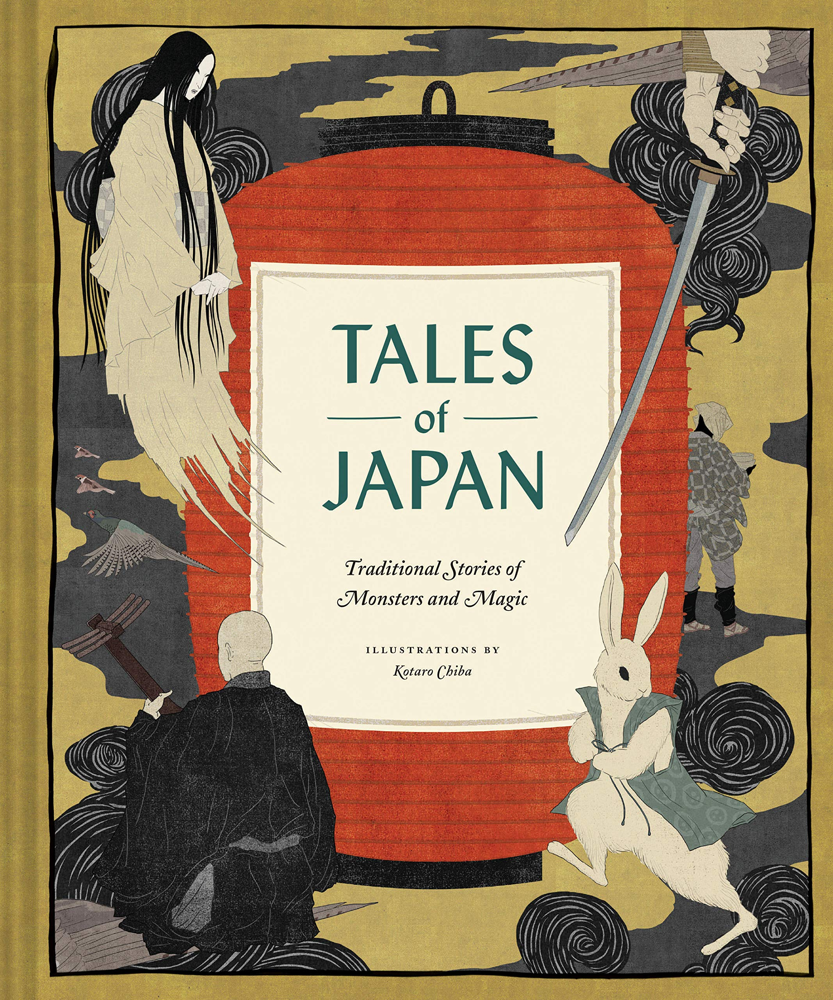

0
стр. з
0
сторінок

завантаження...

Японские сказки на английском языке
Книгу адаптировала Наталья Репина
Метод чтения Ильи Франка
Сontents
The Fire-Fly’s LoversThe Travels of the Two FrogsThe Child of the ThunderThe Tongue-Cut SparrowThe Ape and the CrabThe Wonderful Tea-KettleBenkei and the BellLittle Silver’s DreamThe Magic FrogHow Jelly-Fish Lost His ShellRaiko and His GuardsRaiko Slays the DemonsThe Ambitious CarpLord Long-Leg’s ProcessionThe Power of LoveThe Tide JewelsThe Grateful CraneThe Idol and the WhaleThe Gift of Gold Laquer
The Fire-Fly’s Lovers
(Поклонники /Принцессы-/Светлячка; lover — возлюбленный; влюблeнный; любитель, поклонник).
ON the southern and sunny side of the castle moats of the Fukui castle (с южной, солнечной: "с южной и солнечной" стороны дворцовых рвов дворца Фукуи; moat — канавка; углубление), in Echizen (в Эчизене), the water had long ago become shallow (вóды давно стали мелкими; water — вода; to become) so that lotus lilies grew luxuriantly (так что лилии лотоса разрослись пышно; to grow — расти). Deep in the heart of one of the great flowers (глубоко в сердцевине = в самой сердцевине одного из огромных/прекрасных цветов; heart — сердце; сердцевина, ядро; очаг, центр; great — большой, огромный, крупный /по объeму, силе/; прекрасный, удивительный, замечательный/) whose petals were as pink as the lining of a seashell (лепестки которого были такими же розовыми, как внутренняя часть морской ракушки; to be; lining — подкладка; внутренняя обивка; sea — море; shell — раковина /моллюска/), lived the King of the Fire-Flies (жил Король Светлячков; fire-fly — светляк /летающий/, светлячок; fire — огонь, пламя; fly — двукрылое или летающее насекомое; муха), Hi-o, whose only daughter was the lovely Princess Hotaru (чьей единственной дочерью была очаровательная Принцесса Хотару; lovely — красивый, прекрасный, привлекательный). While still a child (пока /принцесса была/ еще ребенком) the Princess had been carefully kept at home (ee: "Принцессу" предусмотрительно держали дома; carefully — тщательно, внимательно; осмотрительно, осторожно; care — забота; to keep — держать, не отдавать) within the pink petals of the lily (в розовых лепестках лилии), never going even to the edges (/не разрешая/ даже дойти д o краев; never — никогда; ни разу) except to see her father fly off on his journey (разве что только посмотреть, как улетает ее отец в свое путешествие = полет; exept — /союз/ за исключением того, что; кроме тех случаев, когда). Dutifully she waited until of age (покорно она ждала возраста; dutifully — покорный, исполненный сознания долга; duty — почтение, повиновение; долг, обязанность; until — до), when the fire glowed in her own body (когда огонь запылает в ее собственном теле; glow — свет, отблеск, зарево; to glow — светиться, сверкать, озарять), and shone (и засияет; to shine — светить, сиять, озарять), beautifully illuminating the lotus (красиво озаряя лотос), until its light gleamed like a lamp (/до такой степени/ пока его свет не засверкает, как лампа) within a globe of coral (в абажуре из коралла; globe — шар; круглый стеклянный абажур).
сastle [kQ:sl], luxuriantly [lAg’zjV(q)rIqntlI], journey [’dZE:nI]
On the southern and sunny side of the castle moats of the Fukui castle, in Echizen, the water had long ago become shallow so that lotus lilies grew luxuriantly. Deep in the heart of one of the great flowers whose petals were as pink as the lining of a seashell, lived the King of the Fire-Flies, Hi-o, whose only daughter was the lovely Princess Hotaru. While still a child the Princess had been carefully kept at home within the pink petals of the lily, never going even to the edges except to see her father fly off on his journey. Dutifully she waited until of age, when the fire glowed in her own body, and shone, beautifully illuminating the lotus, until its light gleamed like a lamp within a globe of coral.
Every night her light grew brighter and brighter (каждую ночь ее свет становился /все/ ярче и ярче; to grow — расти; становиться), until at last it was as mellow as gold (пока наконец он не стал таким же ярким, как золото; mellow — сладкий, сочный, мягкий, нежный /о спелых фруктах/). Then her father said (тогда ее отец сказал; to say): "My daughter is now of age (моя дочь теперь стала совершеннолетней = взрослой; to be of age — быть совершеннолетним), she may fly abroad with me sometimes (она теперь может иногда вылетать со мной из дому; abroad — за границу), and when the proper suitor comes (и когда появится подходящий поклонник; to come — приходить) she may marry whom she will (она может выйти замуж за кого пожелает; to marry — жениться; выходить замуж; вступать в брак)." So Hotaru flew forth in and out (так Хотару летала /все/ дальше то тут, то там; to fly; in and out — то внутрь, то наружу) among the lotus lilies of the moat (среди лилий лотоса во рву), then into rich rice fields (потом в плодородные рисовые поля; rich — богатый, состоятельный; плодородный), and at last far off to the indigo meadows (и наконец далеко в луга /где произрастали растения/ индиго; indigo — индигоносное растение /тропическое растение семейства бобовых; индигофера и др./).
abroad [q’brO:d], suitor [’sju:tq], among [q’mAN]
Every night her light grew brighter and brighter, until at last it was as mellow as gold. Then her father said: "My daughter is now of age, she may fly abroad with me sometimes, and when the proper suitor comes she may marry whom she will." So Hotaru flew forth in and out among the lotus lilies of the moat, then into rich rice fields, and at last far off to the indigo meadows.
Wherever she went (куда бы она ни отправилась; to go — идти, ехать, двигаться) a crowd of suitors followed her (толпа поклонников следовала за ней), for she had the singular power (ибо она обладала исключительной способностью; power — сила, мощь; способность) of attracting all the night-flying insects to herself (привлекать к себе всех ночных: "летающих по ночам" насекомых). But she cared for none of their attentions (но ей были безразличны все эти ухаживания: "она не заботилась ни об одном из их ухаживаний"; attention — внимание, внимательность; attentions — ухаживания), and though she spoke politely to them all (и хотя она разговаривала вежливо с ними всеми; to speak) she gave encouragement to none (она никого не одобряла; to give — давать; encouragement — ободрение; поощрение). Yet (тем не менее) some of the sheeny-winged gallants (некоторые кавалеры с блестящими крыльями; wing — крыло; winged — крылатый) called her a coquette (звали ее кокеткой).
encouragement [In’kArIdZmqnt], winged [wINd], coquette [kP’ket]
Wherever she went a crowd of suitors followed her, for she had the singular power of attracting all the night—flying insects to herself. But she cared for none of their attentions, and though she spoke politely to them all she gave encouragement to none. Yet some of the sheeny-winged gallants called her a coquette.
One night she said to her mother (однажды ночью она сказала своей матери), the Queen (Королеве):
"I have met many admirers (я повстречала много поклонников; to meet), but I do not wish a husband from any of them (но я не желаю /в/ мужья кого-либо из них = никого из них). To-night I shall stay at home (сегодня ночью я останусь дома), and if any of them love me truly (и если кто-то: "какие-нибудь" из них любят меня по-настоящему) they will come and pay me court here (они придут и будут ухаживать за мной здесь; to pay — платить; court — зд.: почтение, внимание, ухаживание /за женщиной/; to pay court — ухаживать за кем-либо). Then I shall lay an impossible duty on them (затем я наложу невыполнимое обязательство на них; impossible — невозможный, невыполнимый, неосуществимый). If they are wise (если они мудры) they will not try to perform it (они не будут пытаться исполнить его); but if they love their lives more than they love me (но если они любят свои жизни больше, чем они любят меня), I do not want any of them (я не хочу никого из них). Whoever succeeds (кто бы ни достиг цели) may have me for his bride (может считать меня своей невестой; to have — иметь)."
wise [waIz], whoever [hu(:)’evq], succeed [sqk’si:d]
One night she said to her mother, the Queen:
"I have met many admirers, but I do not wish a husband from any of them. To—night I shall stay at home, and if any of them love me truly they will come and pay me court here. Then I shall lay an impossible duty on them. If they are wise they will not try to perform it; but if they love their lives more than they love me, I do not want any of them. Whoever succeeds may have me for his bride."
"As you will, my child (как ты желаешь, мое дитя)," said the Queen-mother (сказала Королева-мать), who arrayed her daughter in her most resplendent robes (которая нарядила свою дочь в самые ослепительные платья; resplendent — блестящий, сверкающий; блистательный, великолепный, ослепительный; robe — халат; женское платье /особого покроя/), and set her on her throne in the heart of the lotus (и усадила ее на трон в сердцевине лотоса; to set — ставить, класть).
Then she gave orders to her body-guard (затем она отдала приказания своему стражу; to give; body-guard — личная охрана; эскорт; охранник, телохранитель; body — тело; guard — охрана, защита) to keep all suitors at a respectful distance (держать всех поклонников на почтительном расстоянии; respect — уважение, почтение) lest some stupid gallant (чтобы какой-нибудь глупый кавалер; lest — чтобы не, как бы не), a Horn-bug or a Cockchafer dazzled by the light (Жук- Pогач или Майский Жук, ослепленный светом), should approach too near (не приблизился слишком близко) and hurt the Princess (и не поранил Принцессу) or shake her throne (или не раскачал ее трон; to shake — трясти; встряхивать; сотрясать).
arrayed [q’reId], cockchafer [’kPk,tSeIfq]
"As you will, my child," said the Queen-mother, who arrayed her daughter in her most resplendent robes, and set her on her throne in the heart of the lotus.
Then she gave orders to her body-guard to keep all suitors at a respectful distance lest some stupid gallant, a Horn-bug or a Cockchafer dazzled by the light, should approach too near and hurt the Princess or shake her throne.
No sooner had twilight faded away (как только потускнели сумерки; soon — скоро, вскоре; to fade —
вянуть, увядать; выгорать, выцветать, блeкнуть, тускнеть), than forth came the Golden Beetle (с предложением выступил Золотой Жук; to come forth — выступить /с предложением, заявлением/), who stood on a stamen (который стоял на тычинке; to stand) and making obeisance, said (и, кланяясь, сказал; to make — делать; obeisance — поклон, реверанс в знак почтения):—
"I am Lord Green-Gold (я Лорд Грин-Голд; green — зеленый; gold — золото). I offer my house (я предлагаю свой дом), my fortune (состояние), and my love to Princess Hotaru."
"Go and bring me fire and I will be your bride (пойди и принеси мне огонь, и я буду твоей невестой)," said Hotaru.
With a bow of the head (кивнув; bow — поклон, кивок; head — голова) the beetle opened his wings (жук расправил свои крылья; to open — открывать, раскрывать) and departed with a stately whirr (и удалился с величественным жужжанием; stately — величавый, величественный; полный достоинства; to depart — отправляться; уходить; уезжать; whirr — шум /машин, крыльев/;жужжание).
twilight [’twaIlaIt], fortune [’fO:tS(q)n], bow [baV]
No sooner had twilight faded away, than forth came the Golden Beetle, who stood on a stamen and making obeisance, said:—
"I am Lord Green-Gold. I offer my house, my fortune, and my love to Princess Hotaru."
"Go and bring me fire and I will be your bride," said Hotaru.
With a bow of the head the beetle opened his wings and departed with a stately whirr.
Next came a shining bug (следом: "следующим" вошел светящийся жук) with wings and body as black as lamp-smoke (с крыльями и туловищем такими же черными, как копоть на лампе; smoke — дым, копоть), who solemnly professed his passion (который торжественно заявил о своей страсти). He received the same answer (он получил тот же ответ):
"Bring me fire, and you may have me for your wife (принеси мне огонь, и ты можешь взять меня в жены)."
Off flew the bug with a buzz (прочь улетел жук, жужжа: "с жужжанием").
Pretty soon came the scarlet Dragon-fly (довольно скоро пришла: "пришел" алая Стрекоза; dragon — дракон; fly — двукрылое или летающее насекомое; муха), expecting so to dazzle the Princess by his gorgeous colors (ожидая так поразить Принцессу своими эффектными/яркими цветами) that she would accept him at once (что она сразу примет его /предложение/).
"I decline your offer (я отклоняю ваше предложение)," said the Princess, "unless you bring me a flash of fire (если только вы не принесете мне всполох огня; flash — вспышка; всполох)."
solemnly [’sPlqmlI], professed [prq’fest], gorgeous [’gO:dZqs]
Next came a shining bug with wings and body as black as lamp-smoke, who solemnly professed his passion. He received the same answer:
"Bring me fire, and you may have me for your wife."
Off flew the bug with a buzz.
Pretty soon came the scarlet Dragon-fly, expecting so to dazzle the Princess by his gorgeous colors that she would accept him at once.
"I decline your offer," said the Princess, "unless you bring me a flash of fire."
Swift was the flight of the Dragon-fly on his errand (быстрым был полет Стрекозы по своему заданию; errand — поручение, задание; командировка), and in came the Beetle with a tremendous buzz (и вошел Жук с ужасным жужжанием), and ardently pleaded his suit (и пылко умолял /принять/ его сватовство; to plead — защищать подсудимого, представлять /в суде/ его интересы; обращаться с просьбой; просить, умолять; suit — прошение, ходатайство; сватовство, ухаживание; to plead one’s suit — добиваться чьей-либо благосклонности).
"I will say 'yes' if you bring me fire," said the glittering Princess (я скажу "да", если вы принесете мне огонь, — сказала сверкающая Принцесса).
Suitor after suitor appeared (ухажер за ухажером появлялись) to woo the daughter of the King of the Fire-Flies (чтобы посвататься к дочери Короля Светлячков) until every petal was dotted with them (пока все лепестки не были усеяны ими; dot — точка). One after another in a long troop they appeared (один за другим появлялись они длинным роем; troop — отряд, группа людей; стадо, стая, рой /птиц, зверей, насекомых и т.д./). Each in his own way (каждый по-своему; own — свой, собственный; way — путь; метод, манера), proudly (гордо), humbly (скромно), boldly (отважно/нахально), mildly (мягко), with flattery (с лестью), with boasting (с хвастовством), even with tears (даже со слезами), proffered his love (признавались в своей любви), told his rank or expatiated on his fortune (называли свой чин или разглагольствовали о своем состоянии; to tell — говорить; to expatiate — распространяться, рассуждать /на какую-либо тему/) or vowed his constancy (или клялись в своем постоянстве; vow — клятва, обет), sang his tune or played his music (пели свою мелодию или играли свою музыку; to sing). To every one of her lovers (каждому из влюбленных в нее) the Princess in modest voice returned the same answer (Принцесса негромким голосом давала один и тот же ответ; modest — скромный, сдержанный; благопристойный, застенчивый; to return — возвращаться, идти обратно; возражать, отвечать):
"Bring me fire, and I'll be your bride (принесите мне огонь, и я стану вашей невестой)."
errand [’er(q)nd], plead [pli:d], expatiated [eks’peISI,eItId]
Swift was the flight of the Dragon-fly on his errand, and in came the Beetle with a tremendous buzz, and ardently pleaded his suit.
"I will say 'yes' if you bring me fire," said the glittering Princess.
Suitor after suitor appeared to woo the daughter of the King of the Fire-Flies until every petal was dotted with them. One after another in a long troop they appeared. Each in his own way, proudly, humbly, boldly, mildly, with flattery, with boasting, even with tears, proffered his love, told his rank or expatiated on his fortune or vowed his constancy, sang his tune or played his music. To every one of her lovers the Princess in modest voice returned the same answer:
"Bring me fire, and I'll be your bride."
So without telling his rivals (итак, не сказав /ничего/ своим соперникам: "без того, чтобы сказать своим соперникам"), each one thinking he had the secret (каждый, думая, что он обладал тайной) alone sped away after fire (в одиночку устремился прочь за огнем; speed — скорость; to speed — двигаться поспешно; мчаться).
But none ever came back to wed the Princess (но ни один так и не вернулся, чтобы жениться на Принцессе; ever — всегда, вечно; постоянно; зд. употр. для эмоционального усиления). Alas for the poor suitors (горе бедным ухажерам: "увы для бедных ухажеров")! The Beetle whizzed off to a house near by (Жук со свистом направился в дом по соседству; whizz — свист; to whizz — просвистеть; проноситься со свистом) through the paper windows (сквозь бумажные окна) of which light glimmered (из которых мерцал свет). So full was he of his passion (таким глупым он был от своей страсти) that thinking nothing of wood or iron (что, не думая ничего о дереве или железе), he dashed his head against a nail (он ударился головой о гвоздь), and fell dead on the ground (и упал мертвым на землю; to fall).
rival [’raIv(q)l], alas [q’lxs], iron [’aIqn]
So without telling his rivals, each one thinking he had the secret alone sped away after fire.
But none ever came back to wed the Princess. Alas for the poor suitors! The Beetle whizzed off to a house near by through the paper windows of which light glimmered. So full was he of his passion that thinking nothing of wood or iron, he dashed his head against a nail, and fell dead on the ground.
The black bug flew into a room (черный жук залетел в комнату; to fly) where a poor student was reading (в которой читал бедный студент). His lamp was only a dish of earthenware (его лампа была всего лишь посудиной из глины; dish — блюдо) full of rape seed oil (наполненной рапсовым маслом; rape seed — рапсовое семя) with a wick made of pith (с фитилем, сделанным из кожуры; pith — мякоть, рыхлая сердцевина /двудольного растения/; корка, кожура /обычно апельсина/). Knowing nothing of oil (не зная ничего о масле) the lovelorn bug crawled into the dish (жук, страдающий от безнадежной любви, заполз в посудину; lovelorn — страдающий от безнадeжной любви) to reach the flame (чтобы добраться до пламени; to reach — протягивать, вытягивать /особенно руку/; достигать, доходить) and in a few seconds was drowned as in a sea (и через несколько секунд утонул: "был потоплен", как в море).
"What's that (что это)?" said a thrifty housewife (сказала бережливая хозяйка), sitting with needle in hand (сидя с иголкой в руке), as her lamp flared up for a moment (когда ее лампа вспыхнула на мгновение), smoking the chimney (закоптив стекло; chimney — труба /дымовая или вытяжная/; дымоход; ламповое стекло), and then cracking it (и потом разбив его); while picking out the scorched bits (и подбирая опаленные кусочки /стекла/; while — пока, в то время как) she found a roasted Dragon-Fly (она нашла поджарившегося /ухажера/ Стрекозу; to find), whose scarlet wings were all burned off (чьи алые крылья были все сожжены).
earthenware [’E:T(q)nweq], crawled [krO:ld], drowned [draVnd]
The black bug flew into a room where a poor student was reading. His lamp was only a dish of earthenware full of rape seed oil with a wick made of pith. Knowing nothing of oil the lovelorn bug crawled into the dish to reach the flame and in a few seconds was drowned as in a sea.
"What's that?" said a thrifty housewife, sitting with needle in hand, as her lamp flared up for a moment, smoking the chimney, and then cracking it; while picking out the scorched bits she found a roasted Dragon—Fly, whose scarlet wings were all burned off.
Mad with love the brilliant Hawk-Moth (безумно влюбленный: "сумасшедший от любви" Бражник), afraid of the flame (боявшийся огня) yet determined to win the fire for the Princess (/но/ все же решившийся завоевать огонь для Принцессы), hovered round and round the candle flame (парил вокруг пламени свечи), coming nearer and nearer each time (подходя все ближе и ближе всякий раз). "Now or never (теперь или никогда), the Princess or death (Принцесса или смерть)," he buzzed (прожужжал он), as he darted forward to snatch a flash of flame (в то время как он метнулся = метнувшись вперед, чтобы схватить всполох пламени; dart — стрела, дротик; бросок, рывок), but singeing his wings (но, опалив свои крылья), he fell helplessly down (он упал беспомощно вниз; to fall), and died in agony (и умер в агонии).
"What a fool he was (каким дураком он был), to be sure (да уж; to be sure — нечего сказать!; уж; конечно)," said the ugly Clothes-Moth (сказал безобразный /ухажер/ Платяная Моль; clothes — одежда, платье), coming on the spot (выходя на свет; spot — пятно; участок, точка; прожектор, подсветка). "I'll get the fire (я добуду огонь). I'll crawl up inside the candle (я проберусь внутрь свечи)." So he climbed up the hollow paper wick (итак, он полез вверх по полому бумажному фитилю; hollow — пустой, полый), and was nearly to the top (и был уже почти наверху), and close to the blue part of the flame (близко к голубой части пламени), when the man, snuffing the wick (когда человек, снимая нагар с фитиля; to snuff — тушить /свечу/; снимать нагар /со свечи/), crushed him to death (раздавил его насмерть).
hawk-moth [’hO:k,mPT], hovered [’hPvqd], hollow [’hPlqV]
Mad with love the brilliant Hawk-Moth, afraid of the flame yet determined to win the fire for the Princess, hovered round and round the candle flame, coming nearer and nearer each time. "Now or never, the Princess or death," he buzzed, as he darted forward to snatch a flash of flame, but singeing his wings, he fell helplessly down, and died in agony.
"What a fool he was, to be sure," said the ugly Clothes-Moth, coming on the spot. "I'll get the fire. I'll crawl up inside the candle." So he climbed up the hollow paper wick, and was nearly to the top, and close to the blue part of the flame, when the man, snuffing the wick, crushed him to death.
Sad indeed was the fate of the lovers of Hi-o's daughter (действительно грустной была судьба влюбленных в дочь Хи-о). Some hovered around the beacons on the headland (некоторые парили вокруг маяков на мысе), some fluttered about the great wax candles (некоторые порхали около огромных восковых свечей) which stood eight feet high (которые стояли, высотой в восемь футов; foot, мн.ч. feet — фут /единица длины; = 30,48 см/) in their brass sockets in the temples of Buddha (в своих медных подсвечниках в храмах Будды; socket — впадина; гнездо; патрон, розетка; муфта); some burned their noses at the top of incense sticks (некоторые сожгли свои носы на кончике благовонных палочек; incense — ладан, фимиам), or were nearly choked by the smoke (или почти задохнулись от дыма); some danced all night around the lanterns in the shrines (некоторые танцевали всю ночь вокруг фонарей в гробницах); some sought the sepulchral lamps in the graveyards (некоторые искали могильные лампы на кладбищах; to seek); one visited the cremation furnace (один посетил кремационную печь); another the kitchen, where a feast was going on (другой кухню, в которой проходил пир); another chased the sparks that flew out of the chimney (другой гонялся за искрами, которые вылетали из лампы; to fly; chimney — труба /дымовая или вытяжная/; дымоход; ламповое стекло); but none brought fire to the Princess (но ни один не принес огонь Принцессе; to bring), or won the lover's prize (и не добился предмета вожделения; to win — победить, выиграть; достичь, заслужить, снискать, добиться, завоевать; prize — награда, приз; заветная цель, предмет вожделений). Many lost their feelers (многие потеряли свои усики/щупальца; to lose), had their shining bodies scorched (опалили свои светящиеся тела: "имели свои светящиеся тела опаленными") or their wings singed (сожгли крылья), but most of them alas! lay dead (но большинство из них, увы! пали мертвыми; to lie — лежать), black and cold next morning (черными и холодными на следующее утро).
wax [wxks], sepulchral [sI’pAlkr(q)l], furnace [’fE:nIs]
Sad indeed was the fate of the lovers of Hi-o's daughter. Some hovered around the beacons on the headland, some fluttered about the great wax candles which stood eight feet high in their brass sockets in the temples of Buddha; some burned their noses at the top of incense sticks, or were nearly choked by the smoke; some danced all night around the lanterns in the shrines; some sought the sepulchral lamps in the graveyards; one visited the cremation furnace; another the kitchen, where a feast was going on; another chased the sparks that flew out of the chimney; but none brought fire to the Princess, or won the lover's prize. Many lost their feelers, had their shining bodies scorched or their wings singed, but most of them alas! lay dead, black and cold next morning.
As the priests trimmed the lamps in the shrines (когда священники приводили в порядок лампы в храмах; shrine — гробница, усыпальница; храм, церковь), and the servant maids the lanterns (а служанки — фонари; servant — слуга; maid — /поэт./ дева, девушка), each said alike (каждый говорил так):
"The Princess Hotaru must have had many lovers last night (у Принцессы Хотару, должно быть, было много поклонников прошлой ночью; lover — любовник, любовница; возлюбленный; влюблeнный; любитель, поклонник)."
Alas! alas! poor suitors (увы! увы! бедные ухажеры). Some tried to snatch a streak of green fire from the cat's eyes (некоторые старались поймать вспышку зеленого света в глазах у кошки), and were snapped up for their pains (и были прихлопнуты/схвачены за свои усилия; pain — боль; pains — старания, труды; усилия). One attempted to get a mouthful of bird's breath (один пытался поймать глоток дыхания птицы; mouthful — полный рот, кусок, глоток), but was swallowed alive (но был проглочен заживо). A Carrion-Beetle (the ugly lover) (Жук-Могильщик (безобразный влюбленный); carrion — труп; мертвечина, падаль) crawled off to the seashore (приполз к берегу моря), and found some fish scales that emitted light (и нашел чешую рыбы, которая излучала свет; to find). The Stag-Beetle climbed a mountain (Жук-Олень залез на гору), and in a rotten tree stump (и на пне гнилого дерева) found some bits of glowing wood like fire (нашел несколько кусочков пылающего, как огонь, дерева), but the distance was so great (но расстояние было таким большим) that long before they reached the castle moat (что задолго до того, как они достигли дворцового рва) it was daylight (наступил день; daylight — дневной свет; день, светлое время суток), and the fire had gone out (и огонь потух; to go out); so they threw their fish scales and old wood away (и они выбросили рыбную чешую и старое дерево; to throw).
swallow [’swPlqV], breath [breT], threw [Tru:]
As the priests trimmed the lamps in the shrines, and the servant maids the lanterns, each said alike:
"The Princess Hotaru must have had many lovers last night."
Alas! alas! poor suitors. Some tried to snatch a streak of green fire from the cat's eyes, and were snapped up for their pains. One attempted to get a mouthful of bird's breath, but was swallowed alive. A Carrion-Beetle (the ugly lover) crawled off to the seashore, and found some fish scales that emitted light. The Stag-Beetle climbed a mountain, and in a rotten tree stump found some bits of glowing wood like fire, but the distance was so great that long before they reached the castle moat it was daylight, and the fire had gone out; so they threw their fish scales and old wood away.
The next day was one of great mourning (следующий день был днем великого траура), and there were so many funerals going on (и было так много похоронных процессий; funeral — похороны; похоронная процессия) that Hi-maro the Prince of the Fire-Flies (что Хи-Маро, Принц Светлячков) on the north side of the castle moat (на северной стороне дворцового рва) inquired of his servants the cause (спросил у своих слуг причины /этого/). Then he learned for the first time of the glittering Princess (тогда он впервые узнал о сверкающей Принцессе; to learn — учиться; учить /что-либо/; научиться /чему-либо; узнавать).
Upon this the Prince (после этого Принц), who had just succeeded his father upon the throne (который только что сменил своего отца на троне; to succeed — следовать за /кем-либо/чем-либо/; сменять /кого-либо/), fell in love with the Princess (влюбился в Принцессу; to fall in love — влюбляться: "падать в любовь") and resolved to marry her (и решил жениться на ней). He sent his chamberlain (он отправил управляющего двором) to ask of her father his daughter in marriage (просить у /ее/ отца /разрешения/ жениться на его дочери = руки его дочери; to ask of smb. his daughter in marriage — просить у кого-либо руки его дочери; marriage — брак, супружество; замужество; женитьба) according to true etiquette (согласно истинному этикету): The father agreed to the Prince's proposal (отец согласился на предложение Принца), with the condition that the Prince should obey her behest in one thing (с тем условием, что Принц должен подчиниться ее повелению в одной вещи), which was to come in person bringing her fire (которая заключалась в том, чтобы прийти лично, принеся ей огонь; in person — лично, собственной персоной).
funeral [’fju:n(q)r(q)l], chamberlain [’CeImbqlIn], behest [bI’hest]
The next day was one of great mourning, and there were so many funerals going on that Hi-maro the Prince of the Fire-Flies on the north side of the castle moat inquired of his servants the cause. Then he learned for the first time of the glittering Princess.
Upon this the Prince, who had just succeeded his father upon the throne, fell in love with the Princess and resolved to marry her. He sent his chamberlain to ask of her father his daughter in marriage according to true etiquette: The father agreed to the Prince's proposal, with the condition that the Prince should obey her behest in one thing, which was to come in person bringing her fire.
Then the Prince at the head of his glittering battalions (Принц во главе своих сверкающих батальонов) came in person (пришел лично) and filled the lotus palace with a flood of golden light (и наполнил дворец-лотос потоком золотого света). But Hotaru was so beautiful (но Хотару была настолько прекрасна) that her charms paled not their fire (что ее чары не потеряли своего огня; charm — шарм, обаяние, очарование; привлекательность; pale — бледный, тусклый; to pale — бледнеть) even in the blaze of the Prince's glory (даже в блеске славы Принца; blaze — яркий огонь, пламя; сияние, блеск). The visit ended in wooing (визит окончился сватовством), and the wooing in wedding (а сватовство — свадьбой). On the night appointed (в назначенную ночь), in a palanquin made of the white lotus-petals (в паланкине, сделанном из белых лепестков лотоса), amid the blazing torches of the Prince's battalions of warriors (среди сверкающих факелов воинских батальонов Принца; warrior — воин; боец), Hotaru was borne to the Prince's palace (Хотару была перенесена в дворец Принца; to bear), and there Prince and Princess were joined in wedlock (и там Принц и Принцесса были соединены в брак = узами брака; wedlock — супружество; законный брак).
palanquin [,pxlqn’ki:n], amid [q’mId], warrior [’wPrIq]
Then the Prince at the head of his glittering battalions came in person and filled the lotus palace with a flood of golden light. But Hotaru was so beautiful that her charms paled not their fire even in the blaze of the Prince's glory. The visit ended in wooing, and the wooing in wedding. On the night appointed, in a palanquin made of the white lotus-petals, amid the blazing torches of the Prince's battalions of warriors, Hotaru was borne to the Prince's palace, and there Prince and Princess were joined in wedlock.
Many generations have passed (много поколений сменилось: "миновало") since Hi-maro and Hotaru were married (с тех пор как Хи-маро и Хотару поженились), and still it is the whim of all Fire-Fly princesses (и до сих пор капризом всех принцесс Светлячков остается) that their base-born lovers must bring fire (то, что их поклонники низкого происхождения должны принести огонь) as their love-offering or lose their prize (как предложение любви или потерять свой предмет вожделений). Else would the glittering fair ones (иначе сверкающие девушки; fair one — любимая женщина) be wearied unto death by the importunity of their lovers (будут утомлены до смерти назойливостью своих поклонников). Great indeed is the loss (конечно, велика потеря), for in this quest of fire many thousand insects (ибо в этом поиске огня многие тысячи насекомых), attracted by the Fire-Fly (покоренные /Принцессой/ Светлячков; to attract — притягивать; привлекать), are burned to death in the vain hope of winning the fire (сгорают насмерть в тщетной надежде завоевать огонь) that shall gain the cruel but beautiful one that fascinates them (который добьется = позволит добиться жестокой, но прекрасной Принцессы, пленившей их; to fascinate — восхищать, приводить в восторг, очаровывать, пленять). It is for this cause that each night (именно по этой причине каждую ночь) insects hover around the lamp flame (насекомые парят вокруг пламени лампы), and every morning a crowd of victims drowned in the oil (и каждое утро толпа жертв, утонувших в масле), or scorched in the flame (или спаленных в пламени), must be cleaned from the lamp (должны быть вычищены из лампы). This is the reason why young ladies catch and imprison the Fire-Flies (именно по этой причине: "это причина, почему" молодые девушки ловят и лишают свободы Светлячков; prison — тюрьма) to watch the war of insect-love (чтобы посмотреть на войну насекомых за любовь), in the hope that they may have human lovers (в надежде, что у них могут быть человеческие поклонники = поклонники среди людей) who will dare as much, through fire and flood, as they (которые будут рисковать так же сильно, в огне и в воде, как и они = влюбленные насекомые; to dare — осмеливаться, бросать вызов; flood — потоп, наводнение).
fascinate [’fxsIneIt], wearied [’wIqrId], flood [flAd]
Many generations have passed since Hi-maro and Hotaru were married, and still it is the whim of all Fire-Fly princesses that their base-born lovers must bring fire as their love-offering or lose their prize. Else would the glittering fair ones be wearied unto death by the importunity of their lovers. Great indeed is the loss, for in this quest of fire many thousand insects, attracted by the Fire-Fly, are burned to death in the vain hope of winning the fire that shall gain the cruel but beautiful one that fascinates them. It is for this cause that each night insects hover around the lamp flame, and every morning a crowd of victims drowned in the oil, or scorched in the flame, must be cleaned from the lamp. This is the reason why young ladies catch and imprison the Fire—Flies to watch the war of insect-love, in the hope that they may have human lovers who will dare as much, through fire and flood, as they.
The Travels of the Two Frogs
(Странствия двух Лягушек; travel — путешествие).
LONG, long ago, in the good old days (давным-давно, в старые добрые дни = времена) before the hairy-faced and pale-cheeked men from over the Sea of Great Peace came to Japan (до того, как люди с заросшими лицами и бледными щеками из-за моря Великого Мира приехали в Японию; to come; hair — волосы; See of Great Peace — зд.: Тихий океан); before the black coal-smoke and snorting iron horse scared the white heron from the rice-fields (до того, как черный угольный дым и необыкновенный железный конь напугал белую цаплю с рисовых полей); before black crows and fighting sparrows (до того, как черные вороны и дерущиеся воробьи), which fear not man (которые не боятся человека), perched on telegraph wires (уселись на телеграфные провода), or ever a railway was thought of (или возникла мысль о железной дороге: "о железной дороге было подумано"), there lived two Frogs (там жили две Лягушки) — one in a well in Kioto (одна в колодце в Киото), the other in a lotus-pond in Osaka (другая в пруду с лотосами в Осаке), forty miles away (в сорока милях оттуда; mile — миля /единица длины; сухопутная миля = 1609 м/).
heron [’her(q)n], crow [krqV], Kioto [’kIqVtqV]
LONG, long ago, in the good old days before the hairy-faced and pale-cheeked men from over the Sea of Great Peace came to Japan; before the black coal-smoke and snorting iron horse scared the white heron from the rice-fields; before black crows and fighting sparrows, which fear not man, perched on telegraph wires, or ever a railway was thought of, there lived two Frogs-one in a well in Kioto, the other in a lotus-pond in Osaka, forty miles away.
Now it is a common proverb in the Land of the Gods (сейчас это распространенная пословица = распространена пословица на Земле Богов; common — общий, всеобщий; общепринятый, распространeнный) that "the frog in the well knows not the great ocean (что "лягушка из колодца не знает великого океана")," and the Kioto Frog had so often heard this scornful sneer from the maids (и Лягушка из Киото так часто слышала эту презрительную шутку от служанок; to hear; sneer — насмешка, осмеяние; maid — дева, девушка; служанка, горничная) who came to draw out water (которые приходили, чтобы взять воды; to draw — тянуть, тащить; to draw out — вынимать, вытягивать, вытаскивать), with their long bamboo-handled buckets (со своими длинными ведрами с бамбуковыми ручками; handle — рукоять, рукоятка /ножа, топора, молотка/; черенок, ручка /двери, инструмента/) that he resolved to travel abroad and see the world (что он решил /отправиться/ путешествовать за границей и увидеть мир; he — он /в англ. яз. названия животных обычно заменяются местоимением ‘he’/), and especially the great ocean (и в особенности великий океан).
"I'll see for myself (я посмотрю для себя)," said Mr. Frog (сказал Господин Лягушка, as he packed his wallet and wiped his spectacles (пока он упаковывал свой бумажник и заворачивал свои очки), "what this great ocean is that they talk so much about (какой этот великий океан, о котором они так много говорят). I'll wager it isn't half as deep or wide as my well (я буду держать пари, что он даже и вполовину не такой глубокий и: "или" широкий, как мой колодец), where I can see the stars even at daylight (в котором я могу видеть звезды даже при дневном свете)."
ocean [’qVS(q)n], especially [Is’peS(q)lI], wager [’weIdZq]
Now it is a common proverb in the Land of the Gods that "the frog in the well knows not the great ocean," and the Kioto Frog had so often heard this scornful sneer from the maids who came to draw out water, with their long bamboo-handled buckets that he resolved to travel abroad and see the world, and especially the great ocean.
"I'll see for myself," said Mr. Frog, as he packed his wallet and wiped his spectacles, "what this great ocean is that they talk so much about. I'll wager it isn't half as deep or wide as my well, where I can see the stars even at daylight."
Now the truth was (так вот, правда была /в том, что/; now — сейчас, теперь; вот /в начале предложения/), a recent earthquake had greatly reduced the depth of the well (недавнее землетрясение значительно уменьшило глубину колодца) and the water was getting very shallow (и вода становилась очень мелкой). Mr. Frog informed the family of his intentions (Господин Лягушка сообщил семье о своих намерениях). Mrs. Frog wept a great deal (Госпожа Лягушка много плакала; to weep); but, drying her eyes with her paper handkerchief (но, вытирая: "осушая" глаза бумажным носовым платком; dry —сухой), she declared she would count the hours on her fingers till he came back (она объявила, что будет считать на своих пальцах часы, до того как он вернется), and at every morning and evening meal would set out his table with food on it (и при каждом утреннем и вечернем приеме пищи будет накрывать ему стол с едой на нем; to set out — зд.: подавать /завтрак, обед, ужин/).
just as if he were at home (так, как если бы он был дома). She tied up a little lacquered box (она подготовила маленькую лакированную коробочку; to tie — завязывать, привязывать; to tie up — забинтовать; устраивать, организовывать /какое-либо мероприятие/) full of boiled rice and snails for his journey (полную вареного риса и улиток, для его поездки; to boil — кипятить; варить), wrapped it around with a silk napkin (обернула е e вокруг шелковой салфеткой), and, putting his extra clothes in a bundle (и, положив ему сменную одежду в узелок; extra — добавочный, дополнительный), swung it on his back (повесила его ему на спину; to swing — качаться, колебаться; вешать; быть повешенным). Tying it over his neck (привязав его к шее), he seized his staff and was ready to go (он схватил свой /дорожный/ посох и был готов идти).
recent [ri:s(q)nt], earthquake [’E:TkweIk], seized [si:zd]
Now the truth was, a recent earthquake had greatly reduced the depth of the well and the water was getting very shallow. Mr. Frog informed the family of his intentions. Mrs. Frog wept a great deal; but, drying her eyes with her paper handkerchief, she declared she would count the hours on her fingers till he came back, and at every morning and evening meal would set out his table with food on it, just as if he were at home. She tied up a little lacquered box full of boiled rice and snails for his journey, wrapped it around with a silk napkin, and, putting his extra clothes in a bundle, swung it on his back. Tying it over his neck, he seized his staff and was ready to go.
"Sayonara (сайонара),"
cried he (прокричал он), as, with a tear in his eye (когда, со слезами на глазах: "со слезой на глазу"), he walked away (он пошел прочь); for that is the Japanese for "good-bye (потому что это по-японски — "до свиданья"."
"Sayonara,"
croaked Mrs. Frog and the whole family of young frogs in a chorus (проквакала Г-жа Лягушка и вся семья молодых лягушек хором; to croak — каркать; квакать).
Two of the tiniest froggies were still babies (двое из самых крошечных лягушат были еще младенцами), that is, they were yet pollywogs (то есть они были еще головастиками), with a half inch of tail still on them (/имея/ еще хвост = хвостики /длиной/ в полдюйма; inch — дюйм /единица длины; = 2,54 см); and, of course, were carried about (и, конечно, их несли /с собой при прощании/) by being strapped on the back of their older brothers (привязав к спинам их старших братьев; strap — ремень, завязка).
tear [tIq], Japanese [,dZxpq’ni:z], chorus [’kO:rqs]
"Sayonara,"
cried he, as, with a tear in his eye, he walked away; for that is the Japanese for "good-bye."
"Sayonara,"
croaked Mrs. Frog and the whole family of young frogs in a chorus.
Two of the tiniest froggies were still babies, that is, they were yet pollywogs, with a half inch of tail still on them; and, of course, were carried about by being strapped on the back of their older brothers.
Mr. Frog being now on land (Господин Лягушка, будучи теперь на земле), out of his well (вне своего колодца), noticed that the other animals did not leap (заметил, что другие животные не прыгают), but walked upright on their hind legs (но ходят прямо на своих задних ногах); and, not wishing to be eccentric (и, не желая быть экстравагантным; eccentric — эксцентричный; необычный, странный; вызывающе оригинальный; экстравагантный; аномальный), he likewise began briskly walking the same way (он так же стал быстро ходить тем же самым способом; likewise — подобно, так же; to begin — начинать; way — путь, дорога; образ, манера, способ).
Now it happened that about the same time (и вот, случилось /так/, что примерно в это же самое время) the Osaka Frog had become restless and dissatisfied with life on the edges of his lotus-ditch (Лягушка из Осаки стала беспокойной и неудовлетворенной = была недовольна жизнью на краю своего рва с лотосами; ditch — канава, ров; канал). He had made up his mind to "cast the lion's cub into the valley (он решил "подбросить львенка в долину"; to make up one’s mind — решиться /на что-либо/; cub —детeныш зверя /обычно лисы, волка, медведя/)."
"Why! that is tall talk for a frog (Ну! Для лягушки это бахвальство; tall talk — хвастовство, бахвальство, выпендрeж; tall — высокий; talk — разговор), I must say (я должен сказать = я вам скажу)!" you may exclaim (можете вы воскликнуть). "What did he mean (что он имел в виду; to mean — намереваться, иметь в виду)?"
walk [wO:k], hind [haInd]
Mr. Frog being now on land, out of his well, noticed that the other animals did not leap, but walked upright on their hind legs; and, not wishing to be eccentric, he likewise began briskly walking the same way.
Now it happened that about the same time the Osaka Frog had become restless and dissatisfied with life on the edges of his lotus-ditch. He had made up his mind to "cast the lion's cub into the valley."
"Why! that is tall talk for a frog, I must say!" you may exclaim. "What did he mean?"
To see what he meant (чтобы выяснить, что он имел в виду; to see — видеть; выяснять, узнавать; обнаруживать; to mean), we will go back a bit (мы вернемся немножко назад; a bit — немного, чуть-чуть, слегка). I must tell you that the Osaka Frog was a philosopher (я должен вам сказать, что Лягушка из Осаки был философом). Right at the edge of his lotus-pond was a monastery (прямо на краю его пруда с лотосами был монастырь, full of Buddhist monks (полный буддистских монахов), who every day studied their sacred rolls (которые каждый день изучали свои священные свитки) and droned over the books of the sage (и бубнили над книгами мудреца; to drone — гудеть, жужжать; бубнить, монотонно говорить; говорить скучным, занудным голосом), to learn them by heart (чтобы выучить их наизусть; heart — сердце; by heart — наизусть). Our frog had heard them so often (наша лягушка слышала их так часто; to hear) that he could (in frog language, of course) repeat many of their wise sentences (что она могла (конечно, на лягушачьем языке) повторить многие из их мудрых изречений; sentence — предложение, фраза; высказывание; суждение; изречение, сентенция) and intone responses to their evening prayers (и произносить нараспев ответы на их вечерние молитвы; to intone — интонировать, модулировать; исполнять речитативом; произносить нараспев) put up by the great idol Amida (возносимые перед огромным идолом Амиды; to put up — строить, воздвигать /здание/; возносить /молитву/). Indeed, our Frog had so often listened to their debates on texts from the classics (действительно, наш Лягушка так часто слушал их споры по поводу классических текстов: "текстов из классики") that he had himself become a sage and a philosopher (что и сам он стал мудрецом и философом). Yet, as the proverb says (тем не менее, как говорит пословица), "the sage is not happy (мудрец не бывает счастливым)."
monastery [’mPnqst(q)rI], monks [mANks], sacred [’seIkrId]
To see what he meant, we will go back a bit. I must tell you that the Osaka Frog was a philosopher. Right at the edge of his lotus-pond was a monastery, full of Buddhist monks, who every day studied their sacred rolls and droned over the books of the sage, to learn them by heart. Our frog had heard then) so often that he could (in frog language, of course) repeat many of their wise sentences and intone responses to their evening prayers put up by the great idol Amida. Indeed, our Frog had so often listened to their debates on texts from the classics that he had himself become a sage and a philosopher. Yet, as the proverb says, "the sage is not happy."
Why not (почему нет)? In spite of a soft mud-bank (вместо берега из мягкого ила; in spite of —несмотря на; mud — грязь, ил, тина), plenty of green scum (изобилующего зеленой пеной; plenty — обильный; многочисленный), stagnant water (застойной водой), and shady lotus leaves (дающими тень листьями лотоса; shady — тенистый), a fat wife (толстой женой), and a numerous family (и бесчисленной семьей) — in short (короче говоря; short — короткий), everything to make a frog happy (всего, что делает лягушку счастливой) — his forehead (его лоб), or rather gullet (или скорее глотка), was wrinkled with care from long pondering of knotty problems (морщинились от заботы по обдумыванию запутанных проблем; knot — узел), such as the following (таких, как следующая):
The monks often came down to the edge of the pond (монахи часто спускались к краю = берегу пруда) to look at the pink and white lotus (чтобы посмотреть на розовые и белые лотосы). One summer day (однажды летним днем), as a little frog (когда маленькая лягушка), hardly out of his tadpole state (едва /вышедшая/ из состояния головастика), with a small fragment of tail still left (у которой еще остался маленький кусочек хвоста; to leave — оставлять), sat basking on a huge round leaf (сидела, греясь на огромном круглом листке; to sit), one monk said to another (один монах сказал другому):
"Of what does that remind you (что это тебе напоминает = на какую мысль тебя это наводит)?"
forehead [’fPrId, ’fLhed ], wrinkled [rINkld], knotty [’nPtI]
Why not? In spite of a soft mud-bank, plenty of green scum, stagnant water, and shady lotus leaves, a fat wife, and a numerous family — in short, everything to make a frog happy — his forehead, or rather gullet, was wrinkled with care from long pondering of knotty problems, such as the following:
The monks often came down to the edge of the pond to look at the pink and white lotus. One summer day, as a little frog, hardly out of his tadpole state, with a small fragment of tail still left, sat basking on a huge round leaf, one monk said to another:
"Of what does that remind you?"
"The babies of frogs will become but frogs (дети лягушки станут только лягушками)," said one shaven pate, laughing (сказала бритая голова, смеясь; to shave — брить).
"What think you (/ a/ что ты думаешь)?"
"The white lotus flower springs out of the black mud (белый цветок лотоса появляется из черной грязи; to spring — вытекать, бить ключом; возникать, брать начало, происходить /откуда-либо/)," said the other, solemnly (сказал другой важно; solemn — торжественный; важный, серьeзный), as both walked away (когда оба /они/ уходили).
laughing [’lRfIN], solemnly [’sPlqmlI]
"The babies of frogs will become but frogs," said one shaven pate, laughing.
"What think you?"
"The white lotus flower springs out of the black mud," said the other, solemnly, as both walked away.
The old Frog, sitting near by (старый Лягушка, сидящий рядом), overheard them and began to philosophize (подслушал их и начал философствовать; to overhear — подслушивать; нечаянно услышать; to begin): "Humph (гм)! The babies of frogs will become but frogs, hey (дети лягушки станут только лягушками, да ну)? If mud becomes lotus (если грязь становится лотосом), why shouldn't a frog become a man (почему лягушка не может стать человеком)? Why not? If my pet son should travel abroad and see the world (если мой любимый сын будет путешествовать за границей и увидит мир) — go to Kioto, for instance (поедет в Киото, например) — why shouldn't he be as wise as those shining-headed men (почему он не будет таким же мудрым, как эти люди с блестящими головами), I wonder (я спрашиваю/ мне интересно; to wonder — удивляться; интересоваться; размышлять, сомневаться)? I shall try it, anyhow (я попробую, во всяком случае). I'll send my son on a journey to Kioto (я отправлю своего сына в путешествие в Киото). I'll 'cast the lion's cub into the valley (я подброшу львенка в долину),' " which, you see, meant pretty much the same thing (что, как вы понимаете, означало почти то же самое; pretty much — примерно, почти; pretty — милый, прелестный; значительный, изрядный; much — много).
humph [mm,hAmf], wonder [’wAndq], pretty [’prItI]
The old Frog, sitting near by, overheard them and began to philosophize: "Humph! The babies of frogs will become but frogs, hey? If mud becomes lotus, why shouldn't a frog become a man? Why not? If my pet son should travel abroad and see the world — go to Kioto, for instance — why shouldn't he be as wise as those shining-headed men, I wonder? I shall try it, anyhow. I'll send my son on a journey to Kioto. I'll 'cast the lion's cub into the valley,' " which, you see, meant pretty much the same thing.
Plump! splash (плюх! плюх!)! sounded the water (звучала вода = раздавались звуки воды), as a pair of webby feet disappeared (когда удалялась пара лап с перепонками; feet — нога, ступня; лапа /животного/; to disappear — исчезать /из поля зрения/; пропадать, теряться). The "lion's cub" was soon ready ("львенок" был скоро готов), after much paternal advice (после множества отцовских советов; advice — совет, рекомендация; употребляется в качестве неисчисляемого существительного в ед.ч.), and much counsel to beware of being gobbled up by long-legged storks (и множества наставлений остерегаться быть пойманным длинноногими аистами), and trod on by impolite men (или раздавленным невежливыми людьми; to tread — идти, ступать), and struck at by bad boys (и побитым плохими мальчишками; to strike).
"Even in the Capital there are boors (даже в столице есть грубияны)," said Father Frog (сказал отец Лягушка).
disappeared [,dIsq’pIqd], tread [tred], boor [bVq]
Plump! splash! sounded the water, as a pair of webby feet disappeared. The "lion's cub" was soon ready, after much paternal advice, and much counsel to beware of being gobbled up by long-legged storks, and trod on by impolite men, and struck at by bad boys.
"Even in the Capital there are boors," said Father Frog.
Now it so happened (и вот случилось так) that the old Frog from Kioto and the "lion's cub" from Osaka (что старый Лягушка из Киото и "львенок" из Осаки) started each from his home at the same time (отправились каждый из своего дома в одно и то же время). Nothing of importance occurred to either of them (ничего важного /не/ случилось ни с одним из них; importance — важность, значимость, значительность; значение), until, as luck would have it (пока, как нарочно; luck — удача, счастливый случай), they met on a hill near Hashimoto (они /не/ встретились на холме неподалеку от Хашимото; hill — возвышение, возвышенность, холм), which is half-way between the two cities (который находился посередине: "на полпути" между двумя городами /Киото и Осакой/). Both were footsore (оба были со стертыми ногами), and websore (стертыми перепонками), and very tired (очень устали), especially about the hips (особенно /их/ бедра), on account of the unfroglike manner of walking (вследствие несвойственного лягушкам способа ходьбы), instead of hopping as they had been used to (вместо прыганья, как они делали раньше; used to —
этот oборот используется при описании событий, которые регулярно происходили в прошлом, а потом прекратились: либо на время, либо насовсем).
"Ohio gozarimasu (охио гозаримасу),"
said the "lion's cub" to the old Frog (сказал "львенок" старому Лягушке), by way of "good-morning (в качестве пожелания доброго утра; by the way of — через; в виде, в качестве)," as he fell on all-fours (в то время как он упал на все четыре /лапы/) and bowed his head to the ground three times (и три раза поклонился головой к земле = сделал тройной земной поклон), squinting up over his left eye (искоса смотря левым глазом; squint — косоглазие; взгляд украдкой, искоса; беглый взгляд), to see if the other Frog was paying equal deference in return (чтобы посмотреть, оказывает ли в свою очередь другая Лягушка такое же почтение ему; in return — в ответ; взамен; в свою очередь).
bowed [baVd], equal [’i:kw(q)l]
Now it so happened that the old Frog from Kioto and the "lion's cub" from Osaka started each from his home at the same time. Nothing of importance occurred to either of them until, as luck would have it, they met on a hill near Hashimoto, which is half-way between the two cities. Both were footsore, and websore, and very tired, especially about the hips, on account of the unfroglike manner of walking, instead of hopping as they had been used to.
"Ohio gozarimasu,"
said the "lion's cub" to the old Frog, by way of "good-morning," as he fell on all-fours and bowed his head to the ground three times, squinting up over his left eye, to see if the other Frog was paying equal deference in return.
"Yes, good-day (да, добрый день)," replied the Kioto Frog (ответил Лягушка из Киото).
"It is rather fine weather to-day (сегодня довольно хорошая погода)," said the youngster (сказал юноша).
"Yes, it is very fine (да, очень хорошая)," replied the old fellow (ответил старик; fellow — приятель, дружище; old fellow — старина, дружище; пожилой человек).
"I am Gamataro, from Osaka, the oldest son of Lord Bullfrog, Prince of the Lotus-Ditch (я Гаматаро, из Осаки, старший сын Лорда Лягушки-быка, Принца Рва с лотосами)."
"Your Lordship must be weary with your journey (Ваша Светлость, должно быть, утомилась от путешествия; weary — усталый, изнурeнный, утомлeнный). I am Sir Frog of the Well in Kioto (я Сэр Лягушка из Колодца в Киото). I started out to see the 'great ocean' from Osaka (я отправился в путь из Осаки, чтобы увидеть "великий океан"); but, I declare (но я заявляю), my hips are so dreadfully tired (что мои бедра так ужасно устали; dread — ужас, страх) that I believe that I'll give up my plan (что, наверное, я брошу свой план; to believe — верить; считать, полагать; to give up — оставить, отказаться; бросить /что-либо/) and content myself with a look from this hill (и удовлетворюсь видом с этого холма; content — довольный, удовлетворeнный; to content — удовлетворять; довольствоваться /чем-либо/; look — взгляд; внешность, наружность, облик, вид)."
youngster [’jaNstq], bullfrog [’bVlfPg], dreadfully [’dredfVlI]
"Yes, good-day," replied the Kioto Frog.
"It is rather fine weather to-day," said the youngster.
"Yes, it is very fine," replied the old fellow.
"I am Gamataro, from Osaka, the oldest son of Lord Bullfrog, Prince of the Lotus-Ditch."
"Your Lordship must be weary with your journey. I am Sir Frog of the Well in Kioto. I started out to see the 'great ocean' from Osaka; but, I declare, my hips are so dreadfully tired that I believe that I'll give up my plan and content myself with a look from this hill."
The truth must be owned (правда должна быть признанной = нужно признать) that the old Frog was not only on his hind legs (что старый Лягушка был не только на своих задних ногах), but also on his last legs (но еще и на последнем издыхании: "на своих последних ногах"), when he stood up to look at Osaka (когда он встал, чтобы посмотреть на Осаку; to stand up); while the youngster was tired enough to believe anything (в то время как юноша был достаточно уставшим, чтобы что-то полагать). The old fellow, wiping his face, spoke up (старик, вытирая свое лицо, заговорил; to speak):
"Suppose we save ourselves the trouble of the journey (полагаю, мы избавили себя от неприятности путешествия; to save — спасать; избавлять, освобождать /от чего-либо/; trouble — беспокойство, волнение; источник неприятностей). I have been told that this bill is halfway between the two cities (мне говорили, что этот щит находится посередине между двумя городами), and while I see Osaka and the sea (и пока я осматриваю Осаку и море; to see — видеть; осматривать), you can get a good look at Kioto (вы можете посмотреть: "получить хороший взгляд" на Киото)."
"Happy thought (удачная мысль; happy — счастливый)!" said the Osaka Frog.
truth [tru:T], hind [haInd], thought [TO:t]
The truth must be owned that the old Frog was not only on his hind legs, but also on his last legs, when he stood up to look at Osaka; while the youngster was tired enough to believe anything. The old fellow, wiping his face, spoke up:
"Suppose we save ourselves the trouble of the journey. I have been told that this bill is halfway between the two cities, and while I see Osaka and the sea, you can get a good look at Kioto."
"Happy thought!" said the Osaka Frog.
Then both reared themselves upon their hind-legs (затем они оба поднялись: "подняли себя" на задних лапах; to rear — воспитывать, растить /детей/; поднимать), once more (еще раз), and stretching upon their toes (и подтягиваясь на носочках; toe — палец ноги; носок, мысок), body to body (туловище к туловищу), and neck to neck (и шея к шее), propped each other up (поддержали друг друга; prop — подпорка, опора; поддержка), rolled their goggles (вытаращили: "выкатили" глаза; goggles — защитные очки; /сленг/) глаза) and looked steadily (и смотрели неподвижно; steady — устойчивый; неизменный, постоянный), as they supposed (как они думали), on the places which they each wished to see (на те места, которые каждый из них желал видеть). Now every one knows (теперь каждый знает) that a frog has eyes mounted in that part of his head (что у лягушки глаза прикреплены к той части головы; to mount — подниматься, восходить; монтировать, устанавливать) which is front when he is down and back when he stands up (которая является лбом, когда она сидит: "внизу", и затылком, когда она встает; back — задняя часть).
rear [rIq], themselves [D(q)m’selvz], toes [tqVz]
Then both reared themselves upon their hind-legs, once more, and stretching upon their toes, body to body, and neck to neck, propped each other up, rolled their goggles and looked steadily, as they supposed, on the places which they each wished to see. Now every one knows that a frog has eyes mounted in that part of his head which is front when he is down and back when he stands up.
Long and steadily they gazed (долго и неподвижно они пристально смотрели; to gaze — пристально глядеть; вглядываться; уставиться), until, at last (пока наконец), their toes being tired (их пальцы устали), they fell down on all-fours (/и/ они /не/ упали на все четыре /лапы/; to fall).
"I declare (я заявляю)" said the older Frog (сказал старший Лягушка), "Osaka looks just like Kioto (/что/ Осака выглядит точно так же, как Киото); and as for the 'great ocean' (а что касается "великого океана") those stupid maids talked about (о котором говорили те глупые служанки), I don't see any at all (то я не вижу никакого /океана/), unless they mean that strip of river (если они не имеют в виду ту полоску реки; unless — если не) that looks for all the world like the Yodo (которая выглядит во всех отношениях, как река Йодо; for all the world — точно так(ой), во всех отношениях так(ой), совсем как, точь-в-точь как; world — мир, свет). I don't believe there is any 'great ocean' (я не верю в то, что существует какой-то "великий океан"!"
"As for my part (что до меня; part — доля, часть, компонент)," said the other, "I am satisfied that it's all folly to go further (я рад тому: "удовлетворен", что бесполезно идти дальше; folly — глупость, недальновидность); for Kioto is as like Osaka as one grain of rice is like another (поскольку Киото похож на Осаку, как одно рисовое зернышко на другое; like — аналогичный, подобный, похожий, сходный)."
stupid [’stju:pId], river [’rIvq]
Long and steadily they gazed, until, at last, their toes being tired, they fell down on all-fours.
"I declare" said the older Frog, "Osaka looks just like Kioto; and as for the 'great ocean' those stupid maids talked about, I don't see any at all, unless they mean that strip of river that looks for all the world like the Yodo. I don't believe there is any 'great ocean'!"
"As for my part," said the other, "I am satisfied that it's all folly to go further; for Kioto is as like Osaka as one grain of rice is like another."
Thereupon both congratulated themselves (на этом оба поздравили друг друга) upon the happy labor-saving expedient (с удачной, экономящей силы уловкой; expedient — /прил./ целесообразный; /сущ./ прием, уловка, средство для достижения цели; labor — труд) by which they had spared themselves a long journey (с помощью которой они обошлись без длинного путешествия; to spare — беречь, жалеть, сберегать, экономить; обходиться /без чего-либо/), much leg-weariness (большой усталости ног), and some danger (и некоторой опасности). They departed (они отправились), after exchanging many compliments (сделав друг другу много комплиментов; "после обмена многими комплиментами"; to exchange — обменивать; меняться); and, dropping again into a frog's hop (и, снова бросившись в лягушачью прыжковую манеру; to drop — капать; стекать каплями; выступать каплями; бросать; сбрасывать; drop — капля), they leaped back in half the time (они допрыгали обратно за половину времени = вдвое быстрее) — the one to his well and the other to his pond (один в свой колодец, другой — в свой пруд). There each told the story of both cities looking exactly alike (каждый рассказал историю обоих городов, выглядевших абсолютно одинаково; exactly — в точности; точно; как раз; аккуратно; ровно); thus demonstrating the folly of those foolish folks called Men (таким образом доказав глупость того глупого народа, который зовется Людьми; to demonstrate — показывать, демонстрировать; доказывать). As for the old gentleman in the lotus-pond (что касается старого господина из пруда с лотосами), he was so glad to get the "cub" back again (он был так рад снова /получить/ обратно "львенка") that he never again tried to reason out the problems of philosophy (что больше никогда он не пытался реш aть проблемы философии; again — снова, опять; to reason out — продумать до конца; reason — причина, повод, основание; разум, рассудок).
thereupon [’Deqrq’pPn], expedient [Iks’pi:djqnt], danger [’deIndZq]
Thereupon both congratulated themselves upon the happy labor-saving expedient by which they had spared themselves a long journey, much leg-weariness, and some danger. They departed, after exchanging many compliments; and, dropping again into a frog's hop, they leaped back in half the time — the one to his well and the other to his pond. There each told the story of both cities looking exactly alike; thus demonstrating the folly of those foolish folks called Men. As for the old gentleman in the lotus-pond, he was so glad to get the "cub" back again that he never again tried to reason out the problems of philosophy.
And so to this day the frog in the well knows not and believes not in the "great ocean" (и вот с тех пор: "по сей день" лягушка из колодца не знает "великого океана" и не верит в него). Still do the babies of frogs become but frogs (/и/ до сих пор дети лягушек становятся только лягушками). Still is it vain to teach the reptiles philosophy (до сих пор бесполезно учить рептилий философии; reptile — рептилия, пресмыкающееся /на самом деле лягушки относятся к классу земноводных, а не к пресмыкающихся, куда входят ящерицы, змеи, черепахи и крокодилы/); for all such labor is "like pouring water in a frog's face (поскольку весь такой труд — это все равно что "лить воду лягушке на лицо")."
reptile [’reptaIl], pouring [’pO:rIN]
And so to this day the frog in the well knows not and believes not in the "great ocean." Still do the babies of frogs become but frogs. Still is it vain to teach the reptiles philosophy; for all such labor is "like pouring water in a frog's face."
The Child of the Thunder
(Дитя Грома).
IN among the hills of Echizen (среди холмов Эчизена), within sight of the snowy mountain called Hakuzan (откуда вида заснеженная гора под названием Хакузан; sight — взгляд; вид; to call — называть), lived a farmer named Bimbo (жил фермер по имени Бимбо). He was very poor (он был очень бедным), but frugal and industrious (но бережливым и трудолюбивым); and was fond of children though he had none himself (и очень любил детей, хотя сам не имел ни одного = хотя у него самого детей не было). He longed to adopt a son to bear his name (он очень хотел усыновить мальчика: "сына", чтобы /тот/ носил его имя; to long — очень хотеть, страстно желать /чего-либо/), and often talked the matter over with his wife (и часто обсуждал этот вопрос со своей женой; to talk over — обсудить /подробно/; дискутировать; matter — вещество; /филос./ материя; вопрос, дело), but being so dreadfully poor (но будучи крайне бедными; dreadfully — ужасно, страшно; чудовищно; очень, сильно, чрезвычайно, крайне; невероятно) both thought it best not to adopt any (оба думали, что лучше не усыновлять никого), until they had bettered their condition and increased the area of their land (пока они не улучшат свои условия /жизни/ и не увеличат площадь своей земли). For all the property Bimbo owned was the earth in a little gully (поскольку всей собственностью, которой обладал Бимбо, была земля в маленьком овраге), which he himself was reclaiming (который он сам возделывал/осушал; to reclaim — перевоспитывать; поднимать /целину, заброшенные земли/; проводить мелиорацию, осушать /болота/). A tiny rivulet (крошечный ручеек), flowing from a spring in the crevice of the rocks above (вытекающий из родника в трещине в скалах /находящихся/ выше), after trickling over the boulders (лившийся по гальке: "после того как лился…"), rolled down the gully (шел: "скатывался" вниз по оврагу) to join a brook in the larger valley below (и впадал в ручей в более крупной долине внизу: "чтобы присоединиться к…").
mountain [’maVntIn], rivulet [’rIvjqlqt], crevice [’krevIs]
In among the hills of Echizen, within sight of the snowy mountain called Hakuzan, lived a farmer named Bimbo. He was very poor, but frugal and industrious; and was fond of children though he had none himself. He longed to adopt a son to bear his name, and often talked the matter over with his wife, but being so dreadfully poor both thought it best not to adopt any, until they had bettered their condition and increased the area of their land. For all the property Bimbo owned was the earth in a little gully, which he himself was reclaiming. A tiny rivulet, flowing from a spring in the crevice of the rocks above, after trickling over the boulders, rolled down the gully to join a brook in the larger valley below.
Bimbo had with great labor, after many years, made dams or terraces of stone (Бимбо с большим трудом, после многих лет = за многие годы сделал плотины и: "или" насыпи из камня), inside which he had thrown soil (внутрь которых он набросал земли; to throw; soil — грунт, земля, почва), partly got from the mountain sides (частично полученной = добытой со склонов горы; to get; side — сторона, одна из поверхностей /чего-либо/;склон /горы/), but mainly carried in baskets on the backs of himself and his wife (но в основным принесенной в корзинах им и его женой на /собственных/ спинах), from the valley below (из долины внизу). By such weary toil (посредством такого изнурительного труда), continued year in and year out (продолжавшегося из года в год), small beds of soil were formed (были сформированы грядки из почвы; bed — кровать, ложе, постель; клумба; грядка), in which rice could be planted and grown (на которых можно было сажать и выращивать рис). The little rivulet supplied the needful water (маленький ручеек поставлял необходимую воду); for rice, the daily food of laborer and farmer (поскольку рис, ежедневная пища рабочего и фермера; labo(u)rer — неквалифицированный рабочий), must be planted and cultivated in soft mud under water (нужно сажать и выращивать: "культивировать" в мягком иле под водой). So the little rivulet (так маленький ручей), which once leaped over the rock and cut its way singing to the valley (который однажды выбился: "выпрыгнул" из скалы и проложил, бурля/ликуя, себе путь в долину; to cut — резать, разрезать; to sing — петь, напевать; издавать трели; ликовать), now spread itself quietly over each terrace (теперь тянулся тихо по каждой насыпи; to spread — расстилать; развертывать; раскрывать; протягивать), making more than a dozen descents before it reached the fields below (делая более дюжины спусков до того, как он дойдет до: "достигнет" полей ниже).
terraces [’terqs], dozen [dAz(q)n], descents [dI’sents]
Bimbo had with great labor, after many years, made dams or terraces of stone, inside which he had thrown soil, partly got from the mountain sides, but mainly carried in baskets on the backs of himself and his wife, from the valley below. By such weary toil, continued year in and year out, small beds of soil were formed, in which rice could be planted and grown. The little rivulet supplied the needful water; for rice, the daily food of laborer and farmer, must be planted and cultivated in soft mud under water. So the little rivulet, which once leaped over the rock and cut its way singing to the valley, now spread itself quietly over each terrace, making more than a dozen descents before it reached the fields below.
Yet after all his toil for a score of years (тем не менее после всех его трудов в течение множества лет; score — счeт очков /в игре/; два десятка), working every day from the first croak of the raven (работая каждый день с первого криков: "карканья" вороны = с первых петухов), until the stars came out (до появления звезд = до полной темноты; to come out — зд.: обнаруживаться, проявляться), Bimbo and his wife owned less than an acre of terrace land (Бимбо и его жена имели менее акра насыпной земли). Sometimes a summer would pass (порой лето пройдет), and little or no rain fall (выпадет /совсем/ мало осадков или их не будет вообще; rain — дождь); then the rivulet dried up and crops failed (тогда ручеек высыхал и урожай пропадал; crops — зерновые; to fail — недоставать, не хватать; не сбываться, обманывать ожидания, не удаваться). It seemed all in vain (казалось тщетным всё —) that their backs were bent (/то,/ что их спины были сгорблены; to bend — сгибать) and their foreheads seamed and wrinkled with care (а их лбы испещрены морщинами от забот; to seam — бороздить; покрывать швами; to wrinkled — морщиться; wrinkle — морщина; складка). Many a time did Bimbo have hard work of it even to pay his taxes (много раз Бимбо тяжело трудился просто для того, чтобы заплатить налоги; even — даже; точно, ровно, как раз), which sometimes amounted to half his crop (которые иногда равнялись половине его зерна). Many a time did he shake his head (много раз он качал головой; to shake — трясти; встряхивать; потряхивать; качать), muttering the discouraged farmer's proverb (бубня поговорку удрученного фермера; to discourage — лишать мужества, силы духа, уверенности в себе; обескураживать; приводить в уныние, удручать), "A new field gives a scant crop (новое поле дает скудный урожай)," the words of which mean also (слова которой означают также), "Human life is but fifty years (жизнь человека — это только пятьдесят лет)."
acre [’eIkq], proverb [’prPvE:b], discouraged [dIs’kArIdZd]
Yet after all his toil for a score of years, working every day from the first croak of the raven, until the stars came out, Bimbo and his wife owned less than an acre of terrace land. Sometimes a summer would pass, and little or no rain fall; then the rivulet dried up and crops failed. It seemed all in vain that their backs were bent and their foreheads seamed and wrinkled with care. Many a time did Bimbo have hard work of it even to pay his taxes, which sometimes amounted to half his crop. Many a time did he shake his head, muttering the discouraged farmer's proverb, "A new field gives a scant crop," the words of which mean also, "Human life is but fifty years."
One summer day after a long drought (одним летним днем после долгой засухи), when the young rice sprouts were turning yellow at the tips (когда молодые побеги риса /уже/ становились желтыми на концах; to turn — поворачиваться; превращать /во что-либо/), the clouds began to gather and roll (стали собираться тучи; to begin — начинать/ся/; to roll — катиться; собираться в кучи), and soon a smart shower fell (и вскоре полил сильный ливень; to fall — падать), the lightning glittered (молния сверкала), and the hills echoed with claps of thunder (и горы эхом отвечали грохотом грозы = и в горах эхом отдавался грохот грозы; to clap — хлопок). But Bimbo, hoe in hand (но Бимбо, с мотыгой в руке), was so glad to see the rain fall (был так рад увидеть, как падает дождь), and the pattering drops felt so cool and refreshing (а барабанящие капли были такими прохладными и освежающими; to feel — чувствовать), that he worked on (что он продолжал работать), strengthening the terrace to resist the little flood about to come (укрепляя насыпь, чтобы /она могла/ противостоять небольшому потоку, который вот-вот обрушится; to be about to do smth. — быть готовым сделать что-либо).
drought [draVt], hoe [hqV], resist [rI’zIst]
One summer day after a long drought, when the young rice sprouts were turning yellow at the tips, the clouds began to gather and roll, and soon a smart shower fell, the lightning glittered, and the hills echoed with claps of thunder. But Bimbo, hoe in hand, was so glad to see the rain fall, and the pattering drops felt so cool and refreshing, that he worked on, strengthening the terrace to resist the little flood about to come.
Pretty soon the storm rattled very near him (довольно скоро гроза загремела очень близко от него), and he thought he had better seek shelter (и он подумал, что лучше ему поискать убежища; to think), lest the thunder should strike and kill him (не то ударит молния: "гроза" и убьет его; lest — чтобы не, как бы не). For Bimbo, like all his neighbors (ведь Бимбо, как и все его соседи,) had often heard stories of the shaggy god of the thunder-drums (часто слышал истории о косматом божестве грома; drum — барабан; барабанить), who lives in the skies and rides on the storm (которое живет на небесах и парит над грозой; to ride — ехать верхом; парить; плыть; скользить), and sometimes kills people (а иногда убивает людей) by throwing out of the clouds at them a terrible creature like a cat (бросая из-за туч на них ужасное создание, вроде кошки), with iron-like claws and a hairy body (с когтями, словно железо, и лохматым: "волосатым" туловищем).
neighbor [’neIbq], creature [’kri:Cq], claw [klO:]
Pretty soon the storm rattled very near him, and he thought he had better seek shelter, lest the thunder should strike and kill him. For Bimbo, like all his neighbors, had often heard stories of the shaggy god of the thunder-drums, who lives in the skies and rides on the storm, and sometimes kills people by throwing out of the clouds at them a terrible creature like a cat, with iron-like claws and a hairy body.
Just as Bimbo threw his hoe over his shoulder and started to move (как раз тогда, когда Бимбо бросил свою мотыгу за плечо и стал уходить; to throw; to move — двигать, передвигать, перемещать; изменять положение), a terrible blinding flash of lightning dazzled his eyes (ужасная ослепительная = сверкающая
вспышка молнии ослепила ему глаза). It was immediately followed by a deafening crash (за ней сразу последовал оглушающий грохот; deaf — глухой), and the thunder fell just in front of him (и гроза = молния ударила: "упала" прямо перед ним). He covered his eyes with his hands (он закрыл глаза руками), but finding himself unhurt (но увидев, что не пострадал: "найдя себя невредимым"), uttered a prayer of thanks to Buddha for safety (произнес молитву благодарностей = благодарственную молитву Будде за /свою/ безопасность). Then he uncovered his eyes and looked down at his feet (затем он убрал /руки от/ своих глаз и посмотрел вниз на свои ноги; foot — ступня).
shoulder [’SqVldq], deafening [’defnIN], uttered [’Atqd]
Just as Bimbo threw his hoe over his shoulder and started to move, a terrible blinding flash of lightning dazzled his eyes. It was immediately followed by a deafening crash, and the thunder fell just in front of him. He covered his eyes with his hands, but finding himself unhurt, uttered a prayer of thanks to Buddha for safety. Then he uncovered his eyes and looked down at his feet.
There lay a little boy (там лежал маленький мальчик; to lie), rosy and warm (румяный и теплый; rosy — розовый; румяный; цветущий /о человеке/), crowing in the most lively manner (выражающий радость в самой оживленной манере; to crow — кукарекать; шумно радоваться, ликовать), and not frightened by the rain in the least (и не испуганный дождем ничуть). The farmer's eyes opened very wide (глаза фермера открылись очень широко = расширились), but happy and nearly surprised out of his senses (но счастливый и удивленный почти до безумия; out — из; sense — рассудок, ум), he picked up the child tenderly in his arms (он поднял ребенка нежно на руки), and took him home to his old wife (и взял его домой к своей старой жене; to take).
"Here's a gift from Heaven (это подарок с Небес)," said Bimbo; "we'll adopt him as our own son and call him Rai-taro (мы усыновим его как собственного сына и назовем Раи-таро)," which means "the child of the thunder (что значит "дитя грома")."
crowing [’krqVIN], lively [’laIvlI], Heaven [hevn]
There lay a little boy, rosy and warm, crowing in the most lively manner, and not frightened by the rain in the least. The farmer's eyes opened very wide, but happy and nearly surprised out of his senses, he picked up the child tenderly in his arms, and took him home to his old wife.
"Here's a gift from Heaven," said Bimbo; "we'll adopt him as our own son and call him Rai-taro," which means "the child of the thunder."
The wife also was delighted with the pretty boy (жена тоже была рада хорошенькому мальчику), and never tired of caring for him (и никогда не уставала заботиться о нем). So Raitaro lived with them and became a very dutiful and loving child (так Раитаро жил с ними и стал очень почтительным и любящим сыном). He was as kind and obedient to his foster-parents (он был так добр и послушен со своими приемными родителями) as though he had been born in their house (как если бы он родился в их доме; to bear — носить; рождать). He never liked to play with other children (ему никогда не нравилось играть с другими детьми), but kept all day in the fields with his foster-father (но он оставался весь день в полях со своим приемным отцом; to keep — держать, не отдавать; держаться, сохраняться, оставаться /в известном положении, состоянии/), sporting with the rivulet and looking at the clouds and sky (играя с ручьем и смотря на облака и небо). Even when the strolling players and the "Lion of Corea" came into the village (даже когда в деревню пришли бродячие актеры/музыканты и "корейский лев"; lion of Corea = Foo dog — порода собак), and every boy and girl and nurse and woman was sure to be out in great glee (и все мальчишки и девчонки, и няни, и женщины были, конечно, на улице в большом веселье; to be out — находиться вне дома, на улице) the child of the thunder stayed up in the field (дитя грома оставался вверху, на поле), or climbed on the high rocks to watch the sailing of the birds (или залезал на высокие скалы, чтобы посмотреть на плавный полет птиц; sailing — мореплавание; мореходство; дрейф; парение, планирование) and the flowing of the water and the river far away (и течение воды и реку вдалеке).
delighted [dI’laItId], dutiful [’dju:tIf(q)l], obedient [q’bi:djqnt]
The wife also was delighted with the pretty boy, and never tired of caring for him. So Raitaro lived with them and became a very dutiful and loving child. He was as kind and obedient to his foster-parents as though he had been born in their house. He never liked to play with other children, but kept all day in the fields with his foster-father, sporting with the rivulet and looking at the clouds and sky. Even when the strolling players and the "Lion of Corea" came into the village, and every boy and girl and nurse and woman was sure to be out in great glee, the child of the thunder stayed up in the field, or climbed on the high rocks to watch the sailing of the birds and the flowing of the water and the river far away.
And now great prosperity came to the farmer (и теперь к фермеру пришло большое процветание/богатство), and he laid it all to the sweet child who had fallen to him from the clouds (и он отдавал его все любимому ребенку, который упал на него с облаков; to lay — класть, положить; sweet — сладкий; ласковый; любимый, милый). It was very curious (было очень любопытно) that rain often fell on Bimbo's field when none fell elsewhere (что часто на полях Бимбо лил: "падал" дождь, в то время как больше нигде /его не было/; to fall); so that Bimbo grew rich (поэтому Бимбо разбогател; to grow — расти; становиться). He believed that the boy Raitaro beckoned to the clouds (он думал, что мальчик Раитаро делал знак облакам; to believe — верить; считать, полагать), and they shed their rain for him alone (и они проливали дождь для него одного; to shed).
prosperity [prP’sperqtI], curious [’kjVqrIqs]
And now great prosperity came to the farmer, and he laid it all to the sweet child who had fallen to him from the clouds. It was very curious that rain often fell on Bimbo's field when none fell elsewhere; so that Bimbo grew rich. He believed that the boy Raitaro beckoned to the clouds, and they shed their rain for him alone.
A good many summers passed by (много лет миновало; summer — лето), and Raitaro had grown to be a tall and handsome lad (и Раитаро вырос /и стал/ высоким и красивым парнем), almost a man and eighteen years old (почти мужчиной, восемнадцати лет). On his birthday the old farmer and the good wife made a little feast for their foster-child (на его день рождения старый фермер и /его/ добрая жена устроили небольшой пир/праздник для своего приемного сына). They ate and drank and talked of the thunder-storm (они ели и пили, и говорили о грозе; to eat; to drink), out of which Raitaro was born (из которой был рожден Раитаро).
Finally the young man said solemnly (наконец молодой человек сказал торжественно/серьезно):
"My dear parents (мои дорогие родители), I thank you very much for your kindness to me (я очень благодарен вам за вашу доброту ко мне; to thank — благодарить), but I must now say farewell (но сейчас я должен сказать "прощайте" = попрощаться с вами). I hope you will always be happy (я надеюсь, вы всегда будете счастливы)."
handsome [’hxn(d)sqm], almost [’O:lmqVst], ate [et]
A good many summers passed by, and Raitaro had grown to be a tall and handsome lad, almost a man and eighteen years old. On his birthday the old farmer and the good wife made a little feast for their foster-child. They ate and drank and talked of the thunder-storm, out of which Raitaro was born.
Finally the young man said solemnly:
"My dear parents, I thank you very much for your kindness to me, but I must now say farewell. I hope you will always be happy."
Then, in a moment, before they had a chance to ask him what he meant (затем, в один миг, до того, как у них была возможность спросить у него, что он имеет в виду), all trace of a human form had disappeared (все следы человеческой формы = человеческого пребывания исчезли), and floating in the air they saw a tiny white dragon (и они увидели, что в воздухе парит крошечный белый дракон; to float — плавать; держаться на поверхности воды; плыть в воздухе /об облаках и т.п./, парить), which hovered for a moment above them and then flew away (который /лишь/мгновение парил над ними и улетел; to fly away). The old couple ran out of doors to watch it (пожилая чета: "пара" выбежала на улицу: "за двери", чтобы посмотреть на него; to run), and it seemed to their astonished gaze to grow larger as it went away (и им, пристально смотревшим: "их пристальному удивленному взгляду" казалось, что он становился все больше по мере того, как улетал; to go away). Bigger and bigger it grew (все больше и больше он становился), taking its course to the hills above (беря курс = направляясь к холмам наверху), where the piled-up white clouds (где скученные белые облака; pile — куча, груда), which form on a summer's afternoon (которые образуются: "формируются" летним днем), seemed built up like towers and castles of silver (казались построенными из серебра башнями и замками; to build; like — подобно, так). Toward one of these the dragon moved (по направлению к одному из них = этих замков /и/
двигался дракон), until, as they watched his form (пока, в то время как они смотрели на его очертания), now grown to a mighty size (теперь выросшие до внушительных размеров), it disappeared from view (он /не/ исчез из виду).
сouple [kApl], course [kO:s], toward [’tqVqd]
Then, in a moment, before they had a chance to ask him what he meant, all trace of a human form had disappeared, and floating in the air they saw a tiny white dragon, which hovered for a moment above them and then flew away. The old couple ran out of doors to watch it, and it seemed to their astonished gaze to grow larger as it went away. Bigger and bigger it grew, taking its course to the hills above, where the piled-up white clouds, which form on a summer's afternoon, seemed built up like towers and castles of silver. Toward one of these the dragon moved, until, as they watched his form, now grown to a mighty size, it disappeared from view.
The farmer and his wife knelt in reverence and said farewell (фермер и его жена упали на колени в знак почтения и сказали "прощай"; to kneel — преклонять колени, становиться на колени), with tears in their eyes (со слезами на глазах), yet with a strange peace in their hearts (/и/тем не менее со странным покоем на сердце = душе). After this, as they were now old and white-headed (после этого, поскольку теперь они были старые и седые: "с белыми головами"), they ceased from their toil and lived in comfort all the rest of their days (они прекратили свой труд и жили в умиротворении/комфорте все оставшиеся дни: "весь остаток своих дней"; comfort — утешение; успокоение; отдых, расслабление; комфорт). When they died (когда они умерли) their ashes were laid away in the cemetery of the temple yard (их прах был захоронен на кладбище в храмовом дворе; ash — пепел), and their tomb was carved in the form of a white dragon (и их надгробие было высечено в форме белого дракона), which in spite of mosses and lichens may still be seen among the ancient monuments of the little hamlet (которого, несмотря на /покрывший его/ мох и лишайник, и сейчас можно увидеть среди древних памятников в маленькой деревушке).
reverence [’rev(q)r(q)ns], cemetery [’semItrI], lichens [’laIkqnz]
The farmer and his wife knelt in reverence and said farewell, with tears in their eyes, yet with a strange peace in their hearts. After this, as they were now old and white-headed, they ceased from their toil and lived in comfort all the rest of their days. When they died their ashes were laid away in the cemetery of the temple yard, and their tomb was carved in the form of a white dragon, which in spite of mosses and lichens may still be seen among the ancient monuments of the little hamlet.
The Tongue-Cut Sparrow
(Воробей с отрезанным языком).
THERE was once an old man who had a wife with a very bad temper (однажды = когда-то жил человек, у которого была жена с очень плохим характером). She did not have any children (у нее не было детей), and would not take the trouble to adopt a son (и она не старалась: "не брала /на себя/ беспокойство" усыновить мальчика: "сына"). So for a little pet he kept a tiny sparrow (поэтому в качестве маленького домашнего питомца он держал крошечного воробья; pet — любимое домашнее животное; to keep), and fed it with great care (и кормил его с большой заботой; to feed). The woman, not satisfied with scolding her husband (женщина, не удовлетворенная бранью с мужем), hated the sparrow (ненавидела воробья). Her temper was especially bad on wash days (ее нрав был особенно плохим в дни стирки), when her back and knees were strained over the low tub (когда она напрягала спину и колени над низкой бочкой; tub — кадка, бадья; бочонок, бочка), which rested on the ground (стоявшей на земле; to rest — отдыхать; лежать).
tongue [tAN], knees [ni:z]
There was once an old man who had a wife with a very bad temper. She did not have any children, and would not take the trouble to adopt a son. So for a little pet he kept a tiny sparrow, and fed it with great care. The woman, not satisfied with scolding her husband, hated the sparrow. Her temper was especially bad on wash days, when her back and knees were strained over the low tub, which rested on the ground.
One day while the man was gone to his work in the rice-fields (однажды, когда этот человек ушел на работу в рисовые поля), the wife was washing the clothes (жена стирала одежду), and had made some starch (и сделала немного крахмала), and set it in a red wooden bowl to cool (и положила его в красную деревянную миску, чтобы охладить). While her back was turned (пока ее спина была повернута = она повернулась спиной), the sparrow hopped down on the edge of the bowl (воробей запрыгнул на край миски; bowl — кубок, чаша; миска, тарелка), and pecked at some of the starch (и поклевал крахмал). In a rage the woman seized a pair of scissors and cut off the tip of the sparrow's tongue (в гневе женщина схватила ножницы и отрезала у воробья кончик языка; pair of scissors — ножницы; pair — пара). Flinging the bird in the air she cried out (швырнув птицу в воздух, она закричала), "Now be off with you (убирайся отсюда; be off with you — /фразеол. оборот/ убирайся!, проваливай!)!" So the poor sparrow (и так бедный воробей), all bleeding (истекающий кровью), flew away (полетел прочь; to fly).
When the man came back and found the bird gone (когда вернулся муж и увидел, что птицы нет: "нашел птицу ушедшей"; to find), he made a great ado (он поднял большой переполох). He asked his wife (он спросил свою жену), and she told him what she had done and why (и она рассказала ему, что она сделала и почему). The sorrowful old man grieved sorely for his pet (несчастный старик очень горевал по своему любимцу; sore — болезненный; мучительный, тяжкий; sorely — болезненно, мучительно, тягостно; чрезвычайно, крайне, в высшей степени; очень), and after looking in every place and calling it by name (и посмотрев везде и позвав его по имени), gave it up as lost (прекратил его поиски, /решив, что/ он потерялся: "бросил его как потерявшегося"; to lose).
howl [haVl], scissors [’sIzqz], ado [q’du:]
One day while the man was gone to his work in the rice-fields, the wife was washing the clothes, and had made some starch, and set it in a red wooden bowl to cool. While her back was turned, the sparrow hopped down on the edge of the howl, and pecked at some of the starch. In a rage the woman seized a pair of scissors and cut off the tip of the sparrow's tongue. Flinging the bird in the air she cried out, "Now be off with you!" So the poor sparrow, all bleeding, flew away.
When the man came back and found the bird gone, he made a great ado. He asked his wife, and she told him what she had done and why. The sorrowful old man grieved sorely for his pet, and after looking in every place and calling it by name, gave it up as lost.
Days and weeks and months sped by (пронеслись дни, недели и месяцы; to speed), and the man was still older and more wrinkled (человек еще постарел и /прибавил/ морщин; old — cтарый; to wrinkle — морщиться), when one day while wandering over the mountains he again met his sparrow (пока однажды, гуляя по горам, он снова не встретил своего воробья). "Good-morning (доброе утро)!" he cried (закричал он); and to his surprise and delight the sparrow answered him (и к его удивлению и радости воробей ему ответил; delight — удовольствие, наслаждение, развлечение). The clipped tongue had given the bird power of speech (отрезанный язык дал птице способность говорить; to clip — стричь, обрезать, отрезать /ножницами/; speech — речь). Then each bowed low and made mutual inquiries as to health (затем они низко поклонились /друг другу/ и спросили друг друга о здоровье: "каждый поклонился низко…"; mutual — взаимный). The sparrow begged the man to visit his humble abode (воробей попросил человека навестить его скромное жилище), and meet his wife and two daughters (и познакомиться с его женой и двумя дочерьми; to meet — встречать; знакомиться).
wandering [’wPnd(q)rIN], mutual [’mju:tjVql, ’mjHCVql], mountains [’maVntInz]
Days and weeks and months sped by, and the man was still older and more wrinkled, when one day while wandering over the mountains he again met his sparrow. "Good-morning!" he cried; and to his surprise and delight the sparrow answered him. The clipped tongue had given the bird power of speech. Then each bowed low and made mutual inquiries as to health. The sparrow begged the man to visit his humble abode, and meet his wife and two daughters.
The man went with him and found a nice little house with a bamboo garden (человек пошел с ним и обнаружил симпатичный маленький дом с бамбуковым садом; to find — находить; обнаруживать), tiny waterfall (крошечным водопадом), stepping stone (дорожку, /выложенную из/ камней; to step — ступать, шагать) and everything complete (и все /было/ искусно сделано; complete — завершенный). Then Mrs. Sparrow brought in slices of sugar-jelly (затем жена Воробья внесла кусочки сахарного желе; to bring — приносить; to bring in — вносить), rock-candy (леденцы), sweet potato custard (бататовый крем; sweet — сладкий; potato — картофель; sweet potato — сладкий картофель, батат; custard — сладкий заварной крем /из яиц и молока/), and a bowl of hot starch sprinkled with sugar (и блюдце с горячим крахмалом, посыпанным сахаром), and a pair of chopsticks on a tray (и палочки для еды на подносе; chopsticks — палочки для еды /у китайцев, корейцев и японцев/). Miss Sparrow, the elder daughter (мисс Воробей, старшая дочь /воробья/), brought the tea-caddy and tea-pot (принесла чайницу и чайник), and in a snap of the fingers had a good cup of tea ready (и в одно мгновение: "в один щелчок пальцами" приготовила чай: "хорошую чашку чая"; snap — треск; щeлканье, щелчок; finger — палец; ready — готовый), which she offered on a tray, kneeling (который она предложила /старику/ на подносе, став на колени).
"Please help yourself (пожалуйста, угощайтесь; help yourself — берите, пожалуйста /сами/, не стесняйтесь, не церемоньтесь; to help — помогать), the refreshments are very poor (еда /наша/ очень бедная; refreshments — закуска, освежающий напиток), but I hope you will excuse our plainness (но я надеюсь, вы извините нас за /нашу/ простоту)," said Mother Sparrow (сказала Мать-Воробьиха). The delighted old man (восхищенный старик), wondering in himself at such a polite family of sparrows (удивляясь про себя такой вежливой воробьиной семье), ate heartily (ел охотно; to eat; heartily — искренне, сердечно; от всего сердца; охотно, усердно; с воодушевлением), and drank several cups of tea (и выпил нисколько чашек чая; to drink). Finally, on being pressed, he remained all night (наконец, после уговоров, он остался /у них/ всю ночь; to press — давить, нажимать; настаивать).
custard [’kAstqd], sugar [’SVgq]
The man went with him and found a nice little house with a bamboo garden, tiny waterfall, stepping stone and everything complete. Then Mrs. Sparrow brought in slices of sugar-jelly, rock-candy, sweet potato custard, and a bowl of hot starch sprinkled with sugar, and a pair of chopsticks on a tray. Miss Sparrow, the elder daughter, brought the tea-caddy and tea-pot, and in a snap of the fingers had a good cup of tea ready, which she offered on a tray, kneeling.
"Please help yourself, the refreshments are very poor, but I hope you will excuse our plainness," said Mother Sparrow. The delighted old man, wondering in himself at such a polite family of sparrows, ate heartily, and drank several cups of tea. Finally, on being pressed, he remained all night.
For several days he enjoyed a visit at the sparrow's home (в течение нескольких дней он наслаждался пребыванием в доме воробья; visit — посещение, визит). He looked at the landscapes and the moonlight (он смотрел на пейзажи и лунный свет), feasted to his heart's content (с полнейшим восторгом наслаждался едой; feast — пир; heart — сердце; content — удовлетворeнность, довольство), and played checkers with the little daughter (и играл в шашки с маленькой дочкой /воробья/). In the evening Mrs. Sparrow would bring out the refreshments and the wine (вечерами жена Воробья приносила закуски и вино), and seat the guest on a silken cushion (усаживала гостей на шелковую подушку), while she played the guitar (а сама играла на гитаре). Mr. Sparrow and his two daughters danced, sang, and made merry (Господин Воробей и две его дочери танцевали, пели и веселились; to sing; merry — весeлый; радостный) until the man leaning on the velvet arm-rest forgot his cares (пока человек, облокотившись на бархатный подлокотник, /не/ забывал /о/ своих заботах; to lean — наклонять, нагибать; прислоняться, опираться; to forget), his old limbs and his wife's tongue (/о/ своих старых ногах: "конечностях" и языке своей жены), and felt like a youth again (и снова чувствовал себя, как юноша; to feel; youth — юность; молодость;
молодой человек, юноша, юнец).
cushion [’kVS(q)n], guitar [gI’tR], limbs [lImz]
For several days he enjoyed a visit at the sparrow's home. He looked at the landscapes and the moonlight, feasted to his heart's content, and played checkers with the little daughter. In the evening Mrs. Sparrow would bring out the refreshments and the wine, and seat the guest on a silken cushion, while she played the guitar. Mr. Sparrow and his two daughters danced, sang, and made merry until the man leaning on the velvet arm-rest forgot his cares, his old limbs and his wife's tongue, and felt like a youth again.
But on the fifth day he said he must go home (но на пятый день он сказал, что он должен идти домой). His host was sorry to hear this (хозяину дома было грустно слышать это; sorry — огорчeнный, сожалеющий, полный сожаления; печальный, грустный, мрачный), but brought out two baskets made of plaited rattan (но /он/ вынес две корзины из плетеного ротанга; rattan — ротанговая пальма /вид тропической лианы/), such as are used in traveling (вроде тех, что используются для путешествий), carried on men's shoulders (при ношении /груза/ на плечах; to carry — нести). Placing them before his guest (поставив их перед своим гостем; place — место; to place — помещать; класть, ставить), he said (он сказал), "Please do me the honor to accept a parting gift (прошу тебя оказать мне честь и принять прощальный подарок; parting — разделение, расщепление, разложение; расставание, разлука; отъезд). Take either one you prefer (возьми любую, какую хочешь; either — любой /из двух/; один из двух; тот или другой)."
Now one basket was heavy (так вот, одна корзина была тяжелая), and the other light (а другая легкая). The old man, not being greedy (старик, который не был алчным), said he would take the lighter one (сказал, что он возьмет более легкую). So with many thanks and bows and good-byes (так, с многочисленными благодарностями, поклонами и прощаниями), he set off homeward (он отправился домой; to set off — отправляться /в путь/).
rattan [rq’txn], honor [’Pn q], heavy [’hevI]
But on the fifth day he said he must go home. His host was sorry to hear this, but brought out two baskets made of plaited rattan, such as are used in traveling, carried on men's shoulders. Placing them before his guest, he said, "Please do me the honor to accept a parting gift. Take either one you prefer."
Now one basket was heavy, and the other light. The old man, not being greedy, said he would take the lighter one. So with many thanks and bows and good-byes, he set off homeward.
He reached his hut safely (он благополучно добрался до своей хижины; safely — в сохранности; безопасно; надeжно), but instead of a kind welcome his wife began to scold him for being away so long (но вместо любезного приветствия, его жена начала бранить его за долгое отсутствие; to begin; away — далеко, вдали). He begged her to be quiet (он просил ее успокоиться: "быть тихой"), and telling of his visit to the sparrows (и рассказал ей о своем визите к воробьям), opened the basket (открыл корзину), while the scowling beldame held her tongue, out of sheer curiosity (и сердитая старая карга придержала свой язык, из чистого любопытства; to scowl — смотреть сердито, бросать сердитый взгляд; beldame = beldam — старуха, старая карга; ведьма, колдунья; to hold — держать; sheer — абсолютный, полнейший).
Oh, what a splendid sight (вот это да: "какое великолепное зрелище"! There were gold and silver coin (там были золотые и серебряные монеты), and gems (драгоценные камни), and coral (кораллы), and crystal (кристаллы), and amber (янтарь), and a never-failing bag of money (и сумка с деньгами, которые никогда не кончатся; to fail — недоставать, не хватать; истощаться, вырабатываться, растрачиваться), and an invisible coat and hat (пальто-невидимка и шляпа-невидимка), and rolls of books (свертки книг), and all manner of precious things (и всевозможные ценныe вещей; all manner — всякого рода; manner — способ, метод; манера; /уст./ род, сорт). It seemed that they never would reach the bottom of that magic basket (казалось, они = старик и его жена никогда не дойдут до дна: "не достигнут дна" этой волшебной корзины).
beldame [’beldqm], crystal [’krIst(q)l], precious [’preSqs]
He reached his hut safely, but instead of a kind welcome his wife began to scold him for being away so long. He begged her to be quiet, and telling of his visit to the sparrows, opened the basket, while the scowling beldame held her tongue, out of sheer curiosity.
Oh, what a splendid sight! There were gold and silver coin, and gems, and coral, and crystal, and amber, and a never-failing bag of money, and an invisible coat and hat, and rolls of books, and all manner of precious things. It seemed that they never would reach the bottom of that magic basket.
At the sight of so much wealth (при виде такого богатства; much — много), the woman's scowl changed to a smile of greedy joy (ругань женщины сменилась на улыбку жадного веселья). "I'll go right off and get another present from the sparrows (я пойду прямо сейчас и получу еще один подарок у воробьев; right off — сразу, тотчас же; немедленно)," said she.
Her husband plead with her not to go (ее муж умолял ее не ходить), saying that they already had more than enough to last them the rest of their lives (говоря, что они уже имеют более чем достаточно, и им хватит этого на всю оставшуюся жизнь; to last — длиться; тянуться; протянуть, хватить). But she would not listen to him (но она не послушала его). Binding on her straw scandals (завязав свои соломенные сандалии), and tucking up her skirts (и, подобрав, свои юбки), she seized her staff and set off on the road (она схватила свой /дорожный/ посох и отправилась в дорогу).
wealth [welT], present [’prez(q)nt], listen [’lIs(q)n]
At the sight of so much wealth, the woman's scowl changed to a smile of greedy joy. "I'll go right off and get another present from the sparrows," said she.
Her husband plead with her not to go, saying that they already had more than enough to last them the rest of their lives. But she would not listen to him. Binding on her straw scandals, and tucking up her skirts, she seized her staff and set off on the road.
Arriving at the sparrow's house (прибыв в дом воробья), she began to flatter Mr. Sparrow by soft speeches (она начала льстить Господину Воробью сладкими речами). Of course the polite bird invited her into his house (безусловно, вежливая птица пригласила ее в свой дом), but nothing but a cup of tea was offered her (но ничего ей /не/ было предложено, кроме чашки чая), while his wife and daughters kept out of sight (а его жена и дочери скрылись из виду: "держались вне видимости"; to keep — держать). Seeing that she was not going to get any good-bye gift (увидев, что ей не собираются дарить прощальный подарок), she made bold to ask for one (она осмелилась попросить его; bold — отважный, смелый, храбрый). The sparrow then brought out and set before her two baskets (тогда воробей вынес две корзины и поставил их перед ней), one heavy and the other light (одну тяжелую и другую легкую). She eagerly seized the heavier one (она живо схватила более тяжелую; eagerly — горячо, пылко, страстно), without so much as saying "thank you (даже не сказав "спасибо"; so much as — хотя бы; даже)," and carried it back in triumph with her (и с триумфом понесла ее обратно = домой). When she got home she opened it (придя домой, она открыла ее), expecting all kinds of riches (ожидая /увидеть/ все виды богатств).
eagerly [’i:gqlI], triumph [’traIqmf]
Arriving at the sparrow's house, she began to flatter Mr. Sparrow by soft speeches. Of course the polite bird invited her into his house, but nothing but a cup of tea was offered her, while his wife and daughters kept out of sight. Seeing that she was not going to get any good-bye gift, she made bold to ask for one. The sparrow then brought out and set before her two baskets, one heavy and the other light. She eagerly seized the heavier one, without so much as saying "thank you," and carried it back in triumph with her. When she got home she opened it, expecting all kinds of riches.
But the moment she took off the lid (но в тот момент, когда она сняла крышку; to take off — снимать, сбрасывать), a horrible cuttle-fish rushed at her (ужасная каракатица набросилась на нее), a skeleton poked his bony fingers in her face (скелет воткнул свои костлявые пальцы в ее лицо; to poke — совать, пихать, тыкать, толкать), and a long, hairy serpent (и длинная волосатая змея), with a big head and lolling tongue (с большой головой и длинным языком; to loll — высовывать язык), sprang out and coiled around her (выпрыгнула и обвилась вокруг нее; to spring; coil — виток, кольцо /верeвки, каната, змеи/), cracking her bones (сломав ей кости), and squeezing out her breath (и стиснув ее до удушья: "выдавив из нее дыхание"; to squeeze — сжимать; сдавливать; стискивать; to squeeze out — выжимать; выдавливать; breath — дыхание), till she died (пока она не умерла).
After the good man had buried his wife (после того, как добрый человек похоронил свою жену), he adopted a son to comfort his old age (он усыновил ребенка: "сына", чтобы тот помогал ему в старости; comfort — утешение; успокоение; содействие, помощь), and with his treasures lived at ease all his days (и со своими богатствами беззаботно жил до конца своих дней: "все свои дни"; at ease — свободно, покойно, удобно, непринуждeнно; easy — лeгкий, нетрудный).
serpent [’sE:p(q)nt], buried [’berId], comfort [’kAmfqt]
But the moment she took off the lid, a horrible cuttle-fish rushed at her, a skeleton poked his bony fingers in her face, and a long, hairy serpent, with a big head and lolling tongue, sprang out and coiled around her, cracking her bones, and squeezing out her breath, till she died.
After the good man had buried his wife, he adopted a son to comfort his old age, and with his treasures lived at ease all his days.
The Ape and the Crab
(Обезьяна и Краб).
IN the land where neither the monkeys nor the cats have tails (в стране, где ни у обезьян, ни у кошек нет хвостов; land — земля, суша; страна; государство, район), and the persimmons grow to be as large as apples (и хурма вырастает величиной с яблоко; as large as — такого же размера, как и…; величиной с…; large — большой) and with seeds bigger than a melon's (с семенами больше, чем у дыни), there once lived a land Crab in the side of a sand hill (жил однажды наземный Краб у склона песчаного холма; side — сторона; склон /горы/). One day an Ape came along having a persimmon seed (однажды пришла обезьяна с семечком/косточкой хурмы), which he offered to swap with the Crab for a rice-cake (которое она предложила обменять Крабу на рисовый пирог). The Crab agreed (Краб согласился), and planting the seed in his garden (и посадив семечко в своем саду) went out every day to watch it grow (каждый день выходил, чтобы посмотреть, /как/ оно растет). And so fertile is that country (и такая плодородная была та страна), that soon a fine tree had grown up from the seed (что вскоре из семечка выросло прекрасное дерево).
monkey [’mANkI], persimmon [pq’sImqn], swap [swPp]
In the land where neither the monkeys nor the cats have tails, and the persimmons grow to be as large as apples and with seeds bigger than a melon's, there once lived a land Crab in the side of a sand hill. One day an Ape came along having a persimmon seed, which he offered to swap with the Crab for a rice-cake. The Crab agreed, and planting the seed in his garden went out every day to watch it grow. And so fertile is that country, that soon a fine tree had grown up from the seed.
By and by the Ape came to visit the Crab (вскоре Обезьяна пришла навестить Краба), and seeing the tree laden with the yellow-brown fruit (и увидев дерево, увешанное желто-коричневыми плодами; to lade — нагружать; обременять) he begged a few persimmons (она попросила немного хурмы). The Crab, asking pardon of the Ape (Краб, попросив извинения у Обезьяны), said he could not climb the tree to offer him any (сказал, что он не может залезть на дерево и предложить = дать ему несколько), but agreed to give his visitor half (но согласен отдать гостю половину /плодов/), if he would mount the tree and pluck them (если тот залезет на дерево и соберет/сорвет их).
fruit [fru:t], pardon [’pRd(q)n], climb [klaIm]
By and by the Ape came to visit the Crab, and seeing the tree laden with the yellow-brown fruit, he begged a few persimmons. The Crab, asking pardon of the Ape, said he could not climb the tree to offer him any, but agreed to give his visitor half, if he would mount the tree and pluck them.
So the Ape ran up the tree (и вот Обезьяна взбежала = быстро забралась на дерево; to run — бегать), while the Crab waited below (в то время как Краб ждал внизу), expecting to eat the ripe fruit (надеясь съесть спелый фрукт; to expect — ожидать). But the Ape sitting on a limb (но обезьяна, сидя на ветке; limb — конечность /человека или животного/; ветка, ветвь, сук) first filled his pockets full (сначала наполнила дополна свои карманы; full — полный, наполненный целиком, заполненный), and then picking off all the best ones (и затем, срывая все лучшие плоды), greedily ate the pulp (жадно съела мякоть; to eat), and threw the skin and stones in the Crab's face (и бросила кожуру и косточки в лицо Крабу; to throw; skin — кожа; кожура). Every once in a while (изредка; every once in a while — /фразеол. оборот/ изредка, время от времени), he would pull off a green sour persimmon (он a срывалa зеленую незрелую хурму; sour — кислый, кисловатый) and hit the Crab hard (и со всей силы бросал a в Краба; to hit — ударять; hard — тяжелый, твердый), until his shell was nearly cracked (пока его панцирь почти не разломился: "был близок к тому, чтобы разломиться"). At last the poor Crab thought he would get the best of the Ape (наконец, Краб решил: "подумал", что он перехитрит Обезьяну; to think; to get the best of smb. — /фразеол. оборот/ оказаться в выигрышном положении, превзойти кого-либо; взять верх; ≈ заткнуть за пояс кого-либо; перехитрить, обмануть, надуть кого-либо; ≈ обвести кого-л. вокруг пальца). So when his enemy had eaten his fill (и вот, когда его противник наелся до отвала; to eat; to fill —
наполнять; удовлетворять, насыщать) until he was bulged out (пока он /вконец/ не раздулся), he cried out (Краб закричал),
"Now, Ape, I dare you to come down head-foremost (а теперь, Обезьяна, держу пари, ты /не/ спустишься вниз: "вперед" головой; to dare — осмеливаться; бросать вызов, вызывать, подзадоривать). You can't do it (ты не cможешь сделать этого)."
sour [’saVq], enemy [’enImI], head-foremost ["hed’fO:mqVst]
So the Ape ran up the tree, while the Crab waited below, expecting to eat the ripe fruit. But the Ape sitting on a limb first filled his pockets full, and then picking off all the best ones, greedily ate the pulp, and threw the skin and stones in the Crab's face. Every once in a while, he would pull off a green sour persimmon and hit the Crab hard, until his shell was nearly cracked. At last the poor Crab thought he would get the best of the Ape. So when his enemy had eaten his fill until he was bulged out, he cried out,
"Now, Ape, I dare you to come down head-foremost. You can't do it."
The other would take a dare (другой = Обезьяна приняла вызов), and at once began to descend, head downward (и сразу начала спускаться вниз головой). This was just what the Crab wanted (это было как раз то, чего хотел Краб), for all the finest persimmons rolled out of his pockets on the ground (поскольку все лучшие плоды хурмы выкатились из ее карманов на землю). The Crab quickly gathered them up (Краб быстро собрал их), and with both arms full ran off to his hole (и с полными руками = клешнями убежал в свою нору; to run off; hole — дыра; отверстие; прорезь; нора, берлога). The Ape was very angry at this trick (Обезьяна очень рассердилась: "была очень сердитой" на этот обман). He kindled a fire (она разожгла костер; fire — огонь, пламя), and blew the smoke down the hole (и /стала/ задувать дым в нору; to blow), until the Crab was nearly choked and had to crawl out to save his life (пока Краб почти /не/ задохнулся и /не/ был вынужден выползти наружу, чтобы спасти свою жизнь). Then the wicked Ape beat him soundly (затем злобная Обезьяна крепко побила его; soundly — обоснованно, серьeзно; умело, хорошо), and left him for dead (и оставила его, /приняв его/ за мертвого; to leave; dead — мeртвый; умерший).
kindle [kaIndl], beat [bi:t], dead [ded]
The other would take a dare, and at once began to descend, head downward. This was just what the Crab wanted, for all the finest persimmons rolled out of his pockets on the ground. The Crab quickly gathered them up, and with both arms full ran off to his hole. The Ape was very angry at this trick. He kindled a fire, and blew the smoke down the hole, until the Crab was nearly choked and had to crawl out to save his life. Then the wicked Ape beat him soundly, and left him for dead.
The Crab had not been long thus (Краб не долго пролежал таким образом), when three travelers (когда три путешественника), a Rice-Mortar (рисовая ступка), an Egg (яйцо), and a Wasp (и оса) found him lying on the ground (/не/ нашли его лежащим на земле; to find). They carried him into the house (они внесли его в дом), bound up his wounds (перевязали его раны; to bind — вязать, связывать) and while he lay in bed they planned how they might destroy his enemy (и пока он лежал в постели, они строили планы, как они могут уничтожить его врага; to lie). They all talked of the matter over their cups of tea (они все обсуждали этот вопрос за чашкой чая), and after the Mortar had smoked several pipes of tobacco (и после того, как Cтупка выкурила несколько трубок табака), a plan was agreed on (план был согласован; to agree — соглашаться).
Taking the Crab along (взяв с собой Краба), stiff and sore as he was (онемевшего и больного, каким он был; stiff — жeсткий, тугой, негибкий, неэластичный; окостеневший, одеревенелый), they marched to the Ape's castle (они маршем двинулись к замку Обезьяны). The Wasp flew inside (Оса залетела внутрь; to fly), and found that their enemy was away from home (и обнаружила, что их врага не было дома: "их враг был вдали от дома"). Then all entered and hid themselves (затем все вошли и спрятались; to hide). The Egg cuddled up under the ashes in the hearth (Яйцо примостилось под пеплом в камине; to cuddle up — прижиматься); the Wasp flew into the closet (Оса влетела в шкаф; closet — гардеробная; встроенный шкаф для одежды); the Mortar hid behind the door (Ступка спряталась за дверью); the Crab sat beside the fire (Краб уселся около огня; to sit); and here they waited for the Ape to come home (и здесь они ждали, когда придет домой Обезьяна).
wasp [wPsp], hearth [hRT], closet [’klPzIt]
The Crab had not been long thus, when three travelers, a Rice-Mortar, an Egg, and a Wasp found him lying on the ground. They carried him into the house, bound up his wounds and while he lay in bed they planned how they might destroy his enemy. They all talked of the matter over their cups of tea, and after the Mortar had smoked several pipes of tobacco, a plan was agreed on.
Taking the Crab along, stiff and sore as he was, they marched to the Ape's castle. The Wasp flew inside, and found that their enemy was away from home. Then all entered and hid themselves. The Egg cuddled up under the ashes in the hearth; the Wasp flew into the closet; the Mortar hid behind the door; the Crab sat beside the fire; and here they waited for the Ape to come home.
Toward evening the Ape arrived (/ближе/ к вечеру пришла Обезьяна; to arrive — прибывать, приезжать), and throwing off his coat (и, сбросив пальто) (which was just what the Wasp wanted (а это было как раз то, чего хотела Оса)) he lighted a match (она зажгла спичку) and kindling a fire hung on the kettle for a cup of tea (и, разжигая огонь, подвесила чайник, чтобы приготовить чашку чая; to hang), and pulled out his pipe for a smoke (и вытащила курительную трубку: "трубку для курения"; smoke — дым, копоть; курение). Just as he sat down by the hearth to salute the Crab (как раз в тот момент, когда она села рядом с очагом, чтобы поприветствовать Краба), the Egg in the fire burst (яйцо взорвалось в огне) and the hot yolk flew all over him and in his eye (и горячий желток брызнул в него и в его глаза; to fly — летать; разлетаться), nearly blinding him (чуть не лишив его зрения; blind — слепой; to blind — ослеплять). He rushed out to the bathroom to plunge in the tub of cold water (она бросилась в ванную комнату, чтобы нырнуть в бочку с холодной водой), when the Wasp flew at him and stung his nose (когда Оса подлетела к ней и ужалила ее /в/ нос; to sting). Slipping down (поскользнувшись), he fell flat on the floor (она плашмя упала на пол; flat — плоский, ровный), when the Mortar rolled on him and crushed him to death (когда Cтупка прокатилась по ней и раздавила ее насмерть). Then the victorious party congratulated the Crab on their victory (потом победившая сторона поздравила Краба с победой). Grateful for the friendship thus shown (благодарные /друг другу/ за дружбу, проявленную таким образом; to show — показывать), the whole company, Crab, Mortar and Wasp lived in peace together (Краб, Ступка и Оса всей компанией жили в мире вместе).
salute [sq’lu:t], yolk [jqVk]
Toward evening the Ape arrived, and throwing off his coat (which was just what the Wasp wanted) he lighted a match and kindling a fire hung on the kettle for a cup of tea, and pulled out his pipe for a smoke. Just as he sat down by the hearth to salute the Crab, the Egg in the fire burst and the hot yolk flew all over him and in his eye, nearly blinding him. He rushed out to the bathroom to plunge in the tub of cold water, when the Wasp flew at him and stung his nose. Slipping down, he fell flat on the floor, when the Mortar rolled on him and crushed him to death. Then the victorious party congratulated the Crab on their victory. Grateful for the friendship thus shown, the whole company, Crab, Mortar and Wasp lived in peace together.
The Crab married the daughter of a rich crab (Краб женился на дочери богатого краба) that lived over the hill (который жил за холмом), and a great feast of persimmons was spread before the bride's relatives who came to see the ceremony (и грандиозный пир из хурмы был разложен = огромное угощение из хурмы было разложено перед родственниками невесты, которые пришли "посмотреть" на церемонию; to spread — расстилать; развертывать). By and by a little crab was born (вскоре родился маленький краб) which became a great pet with the Mortar and Wasp (который стал большим любимцем Ступки и Осы). With no more apes to plague them (поскольку больше не было обезьян, которые им досаждали), they lived very happily ever afterward (они жили очень счастливо всю оставшуюся жизнь; afterward(s) — впоследствии, позднее, позже, после, потом).
spread [spred], relatives [’relqtIvz], plague [pleIg]
The Crab married the daughter of a rich crab that lived over the hill, and a great feast of persimmons was spread before the bride's relatives who came to see the ceremony. By and by a little crab was born which became a great pet with the Mortar and Wasp. With no more apes to plague them, they lived very happily ever afterward.
The Wonderful Tea-Kettle
(Удивительный Чайник; tea-kettle — чайник /для кипячения воды/).
A LONG time ago there was an old priest (много лет назад /жил-/был один старый священник; time — время) who lived in a temple and was very devout (который жил в храме и был очень благочестивым). He was also very poor (он был также очень бедным). He cooked his own rice (он готовил собственный = выращенный собственными руками рис), boiled his own tea (/сам себе/ кипятил чай), swept his own floor (/сам/ подметал пол; to sweep), and lived frugally as an honest priest should do (и жил скромно, как /и/ полагается честному священнику; frugally — бережливо, экономно; умеренно, скромно).
devout [dI’vaVt], frugally [’fru:g(q)lI], honest [’PnIst]
A long time ago there was an old priest who lived in a temple and was very devout. He also was very poor. He cooked his own rice, boiled his own tea, swept his own floor, and lived frugally as an honest priest should do.
One day the kettle in which he boiled water for his tea got broken (однажды чайник, в котором он кипятил воду, сломался; to break — ломать, разбивать), and he did not know what to do (и он не знал, что делать), as he had no money to buy a new one (поскольку у него не было денег, чтобы купить новый). But the next morning (но на следующее утро), behold! (смотри-ка!) a shiny brass tea-kettle was sitting outside his door (за дверью сидел = стоял блестящий медный чайник; brass — латунь, жeлтая медь). Overjoyed he returned thanks (/будучи/ вне себя от радости, он вознес благодарственную молитву; to return — возвращать, отдавать; thanks — благодарность, признательность), and built a fire in the square fireplace in the middle of the floor (он развел огонь в квадратном очаге посреди комнаты: "пола"; to build — сооружать, строить; возводить). A rope and chain to hold the rice-pot and tea-kettle (веревка и цепь, держащие котелок для риса и чайник) hung down from the covered hole in the ceiling (свисали с крытого отверстия в потолке) which did duty as a chimney (которое служило дымоходом; duty — долг, обязанность). A pair of brass tongs was stuck in the ashes (медны e /каминныe/ щипцы были воткнуты в пепел; pair — пара; to stick — втыкать, вонзать), and soon the fire blazed merrily (и вскоре весело огонь запылал).
square [skweq], ceiling [’si:lIN]
One day the kettle in which he boiled water for his tea got broken, and he did not know what to do, as he had no money to buy a new one. But the next morning, behold! a shiny brass tea-kettle was sitting outside his door. Overjoyed he returned thanks, and built a fire in the square fireplace in the middle of the floor. A rope and chain to hold the rice-pot and tea-kettle hung down from the covered hole in the ceiling which did duty as a chimney. A pair of brass tongs was stuck in the ashes, and soon the fire blazed merrily.
At the side of the fireplace (рядом с камином, на полу; side — сторона; at the side — рядом с…; поблизости от…), on the floor, was his tray filled with tiny teacups (на полу, был = стоял его поднос, "наполненный" крошечными чайными чашками), a pewter tea-caddy (оловянная чайница), a bamboo tea-stirrer (бамбуковая мешалка для чая; to stir — шевелиться; двигаться; мешать, помешивать, размешивать), and a little dipper (и маленький ковшик). The priest having finished sweeping the ashes off the edges of the hearth (священник, закончив подметать пепел с краев очага) with a little whisk-broom made of hawk's feathers (маленькой метелкой/веником из соколиных перьев), was just about to put on the tea (уже собирался приняться за чай; to be about to do smth. — собираться сделать что-либо) when "suzz, suzz," sang the shiny tea-kettle spout (как носик блестящего чайника запел "сссс", "сссс"; to sing; spout — горлышко; носик /сосуда/); and then "pattari-pattari!" said the lid (затем крышка заговорила "па-па-пам"), as it flapped up and down (хлопая вверх-вниз), and the kettle swung backward and forward (а чайник покачивался назад и вперед; to swing).
pewter [’pju:tq], stirrer [’stE:rq], feather [’feDq]
At the side of the fireplace, on the floor, was his tray filled with tiny teacups, a pewter tea-caddy, a bamboo tea-stirrer, and a little dipper. The priest having finished sweeping the ashes off the edges of the hearth with a little whisk-broom made of hawk's feathers, was just about to put on the tea when "suzz, suzz," sang the shiny tea-kettle spout; and then "pattari-pattari!" said the lid, as it flapped up and down, and the kettle swung backward and forward.
"What does this mean (что это означает)?" said the old priest with a start (вздрогнув, сказал старый священник; start — начало; рывок на старте; вздрагивание; толчок); for, wonder of wonders (ибо, чудо из чудес), the spout of the kettle had turned into a badger's nose with its big whiskers (носик чайника превратился в нос барсука с его длинными усами; whiskers — усы /кошки, тигра и т.п./), while from the other side sprouted out a long bushy tail (в то время как с другой стороны пророс длинный пушистый хвост; sprout — побег, росток; to sprout — пускать ростки, давать побеги, расти; bushy — покрытый кустарником; пушистый /о хвосте лисицы и др. животных/; bush — куст)!
wonder [’wAndq], whisker [’wIskq], bushy [’bVSI]
"What does this mean?" said the old priest with a start; for, wonder of wonders, the spout of the kettle had turned into a badger's nose with its big whiskers, while from the other side sprouted out a long bushy tail!
"Ho, ho!" cried the priest (ой, ой, — закричал священник), with a long string of Japanese words which would sound strange to you (/произнеся/ длинную цепочку японских слов, которые прозвучали бы странными для вас). And in terror he dropped the tea-caddy (и в ужасе он уронил чайницу), spilling the green tea all over the matting (пролив зеленый чай по всей циновке), as four hairy legs appeared under the kettle (когда четыре волосатые лапы: "ноги" появились под чайником), and the strange compound (и странная помесь; compound — строение, структура; смесь), half badger and half kettle (наполовину барсука — наполовину чайника), jumped off the fire (выпрыгнула из огня), and began running around the room (и стала бегать по комнате). To the priest's horror it leaped on a shelf (к ужасу священника она запрыгнула на полку), puffed out its belly (надула свой живот) and began to beat a tune with its fore-paws as if it were a drum (и стала отбивать /по нему/ мелодию своими четырьмя лапами, как будто это был барабан). The old priest's pupils (ученики старого священника), hearing the racket (услышав шум), rushed in (ворвались в дом), and after a lively chase (и после энергичной погони; lively — яркий, живой /о картине, образе/; активный, деятельный, энергичный), upsetting piles of books (опрокинув стопки книг; pile — куча, груда, штабель) and breaking some of the teacups (и разбив несколько чайных чашек), secured the badger (связали барсука; secure — безопасный, надeжный; to secure — завладевать, овладевать; брать под стражу, лишать свободы), and squeezed him into a keg (и втиснули его в бочонок) used for storing pickled radishes (используемый для хранения маринованной редиски). They fastened down the lid with a heavy stone (они прижали крышку тяжелым камнем; to fasten — прикреплять, привязывать), and felt sure that the strong odor of the radishes would kill the beast (и были уверены: "чувствовали себя уверенными", что сильный запах редиски убьет животное; to feel), for no man could possibly survive such a smell (ибо ни один человек, вероятно, не смог бы вынести этот запах; to survive — пережить /по времени/; выдержать, пережить, перенести), and it was not likely a badger could (и вряд ли смог бы и барсук; likely — вероятный, возможный).
fasten [’fRs(q)n], horror [’hPrq], odor [’qVdq]
"Ho, ho!" cried the priest, with a long string of Japanese words which would sound strange to you. And in terror he dropped the tea-caddy, spilling the green tea all over the matting, as four hairy legs appeared under the kettle, and the strange compound, half badger and half kettle, jumped off the fire, and began running around the room. To the priest's horror it leaped on a shelf, puffed out its belly and began to beat a tune with its fore-paws as if it were a drum. The old priest's pupils, hearing the racket, rushed in, and after a lively chase, upsetting piles of books and breaking some of the teacups, secured the badger, and squeezed him into a keg used for storing pickled radishes. They fastened down the lid with a heavy stone, and felt sure that the strong odor of the radishes would kill the beast, for no man could possibly survive such a smell, and it was not likely a badger could.
The next morning the tinker of the village called in (на следующее утро зашел деревенский жестянщик; village — деревня; to call in — зд.: заходить; навещать, наносить визит) and the priest told him about his strange visitor (и священник рассказал ему о своем странном госте/посетителе; to tell). Wishing to show him the animal (желая показать ему животное), he cautiously lifted the lid of the cask (он осторожно приподнял крышку бочонка; cask — бочка; бочонок), lest the badger might, after all, be still alive (на случай, если бы барсук, все же, был еще жив; lest — чтобы не, как бы не; что /после глаголов и фразовых глаголов, обозначающих опасение: вводит дополнение, выражаюшее событие, которого опасаются/), in spite of the strong vinegar pickles (несмотря на сильный уксусный рассол), when lo! there was nothing but the shiny brass tea-kettle (когда, смотри-ка! = и он увидел, что там не было никого, кроме блестящего медного чайника). Fearing that the utensil might play the same prank again (боясь, что эта посудина сможет сыграть такую же шутку снова; utensil — посуда, утварь; prank — проказа, выходка, шалость, проделка; шутка), the priest was glad to sell it to the tinker (священник был рад продать е e жестянщику), who on his part secretly thought the priest had been dreaming (который, со своей стороны, втайне думал, что священнику все приснилось), and was glad to give another kettle in exchange for it (и был рад отдать другой чайник в обмен на этот), and some cash to boot (и /еще/ немного денег впридачу; boot — выгода, польза; компенсация). He carried it proudly to his junk shop (он гордо понес его в свою лавку старьевщика; junk — старьe, рухлядь, хлам; утиль, отходы; shop — магазин), though he thought it felt unusually heavy (хотя и подумал, что чайник был: "ощущался" необычайно тяжелым).
сautiously [’kO:S(q)slI], vinegar [’vInIgq], unusually [An’ju:Z(q)lI]
The next morning the tinker of the village called in and the priest told him about his strange visitor. Wishing to show him the animal, he cautiously lifted the lid of the cask, lest the badger might, after all, be still alive, in spite of the strong vinegar pickles, when lo! there was nothing but the shiny brass tea-kettle. Fearing that the utensil might play the same prank again, the priest was glad to sell it to the tinker, who on his part secretly thought the priest had been dreaming, and was glad to give another kettle in exchange for it, and some cash to boot. He carried it proudly to his junk shop, though he thought it felt unusually heavy.
The tinker went to bed as usual that night (жестянщик отправился спать как обычно в ту ночь) with his tiny paper shaded lamp just back of his head (/ a/ у него в изголовье стояла маленькая лампа = ночник с бумажным абажуром; tiny — очень маленький, крошечный; head — голова; shade — тень, полумрак; to shade — затенять, заслонять от света). About midnight (около полуночи), hearing a strange noise like the flapping up and down of a pot-lid (услышав странный звук, похожий на хлопанье вверх-вниз крышки чайника), he sat up in bed (он сел в кровати; to sit), rubbed his eyes (потер глаза), and there was the bewitched tea-kettle covered with fur and sprouting out legs (и увидел: "там был" заколдованный чайник, покрытый мехом и с вырастающими лапами). In short, it was turning into a hairy beast (короче говоря, он превращался в покрытое шерстью животное; hairy — покрытый волосами, волосатый).
tiny [’taInI], rubbed [rAbd], beast [bi:st]
The tinker went to bed as usual that night with his tiny paper shaded lamp just back of his head. About midnight, hearing a strange noise like the flapping up and down of a pot-lid, he sat up in bed, rubbed his eyes, and there was the bewitched tea-kettle covered with fur and sprouting out legs. In short, it was turning into a hairy beast.
"Don't beat me or shut me in a vinegar keg (не бей меня и не закрывай меня в бочонке с уксусом)," it said, "for I am really kind-hearted and wish you well (ведь я очень добрый: "у меня очень доброе сердце", и я желаю тебе /самого/ хорошего)."
"What can I do for you (что я могу сделать для тебя)?" asked the tinker (спросил жестянщик).
"Feed me a little rice now and then (давай мне немного риса время от времени: "сейчас и потом"; to feed — кормить), and don't put me on the fire as that stupid priest did (и не ставь меня на огонь, как делал этот глупый священник). Look here (смотри сюда = посмотри-ка)."
priest [pri:st], stupid [’stju:pId]
"Don't beat me or shut me in a vinegar keg," it said, "for I am really kind-hearted and wish you well."
"What can I do for you?" asked the tinker.
"Feed me a little rice now and then, and don't put me on the fire as that stupid priest did. Look here."
Going over to a corner of the room (зайдя в угол комнаты) and taking a fan from the rack (и взяв с вешалки веер), the badger climbed up on the frame of the lamp (барсук залез на каркас лампы), and began to dance on its one hind leg (и стал танцевать на нем на одной задней лапе), waving the fan with its fore-paw (махая веером своей передней лапой). It played many other tricks (он проделывал много других трюков; to play — играть; trick — обман; трюк, фокус), until the man started up (пока человек не вскочил), and then the badger turned into a tea-kettle again (и тогда барсук снова превратился в чайник; to turn — поворачиваться; меняться, изменяться; превращать/ся/ /во что-либо/).
"I declare (я заявляю)," said the tinker as he woke up next morning (сказал жестянщик, когда он проснулся на следующее утро; to wake up), and talked the matter over with his wife (и /стал/ обсуждать это со своей женой; to talk over — обсудить /подробно/; дискутировать). "I'll just 'raise a mountain' on this kettle (да я горы сверну: "подниму горы" с этим чайником; /нареч./ just — точно, как раз, именно, поистине). It certainly is a very highly accomplished tea-kettle (он, безусловно, является весьма воспитанным чайником; accomplished — завершенный, совершенный; /уст./ получивший хорошее образование; воспитанный; культурный). I'll call it by some high-sounding name (я назову его каким-нибудь эффектным именем; high-sounding — громкий, пышный, высокопарный) and exhibit it to the public (и буду показывать его публике; to exhibit — показывать; выставлять; экспонировать на выставке)."
fore-paw [,fO:’pO:], accomplished [q’kPmplISt], exhibit [Ig’zIbIt]
Going over to a corner of the room and taking a fan from the rack, the badger climbed up on the frame of the lamp, and began to dance on its one hind leg, waving the fan with its fore-paw. It played many other tricks, until the man started up, and then the badger turned into a tea-kettle again.
"I declare," said the tinker as he woke up next morning, and talked the matter over with his wife. "I'll just 'raise a mountain' on this kettle. It certainly is a very highly accomplished tea-kettle. I'll call it by some high-sounding name and exhibit it to the public."
"You've been dreaming (тебе /это/ приснилось)," scoffed his wife (проворчала жена); "that's only an ordinary brass tea-kettle (это всего лишь обычный медный чайник)."
"Just watch it and see (да ты посмотри сама: "посмотри и увидь")," replied the tinker (ответил жестянщик).
So they watched the next night (итак, в следующую ночь они /стали/ смотреть), and sure enough it turned into a badger again (и, конечно, он = чайник снова превратился в барсука; sure enough — конечно, действительно).
ordinary [’O:d(q)n(q)rI], sure [SVq]
"You've been dreaming," scoffed his wife; "that's only an ordinary brass tea-kettle."
"Just watch it and see," replied the tinker.
So they watched the next night, and sure enough it turned into a badger again.
The delighted tinker hired a professional showman for his business agent (восхищенный жестянщик нанял профессионального специалиста по организации публичных зрелищ/шоумена в качестве своего делового агента), and built a little theatre and stage (и построил маленький театр и сцену; to build). Then he gave an order to a friend of his (затем он сделал заказ одному своему другу; order — порядок, расположение в определeнном порядке; приказ; распоряжение; заказ), an artist (художнику), to paint scenery (нарисовать декорации), with the sacred mountain Fuji yama in the background (со священной горой Фудзиямой на заднем плане) and cranes flying through the air (и журавлями, летящими по воздуху), a crimson sun shining through the bamboo (малиновым солнцем, сияющим сквозь /заросли/ бамбук a), a red moon rising over the waves (красной луной, восходящей над волнами), with golden clouds and tortoises and such like (золотыми облаками и черепахами и тому подобным).
theatre [’TIqtq], scenery [’si:n(q)rI], tortoise [’tO:tqs]
The delighted tinker hired a professional showman for his business agent, and built a little theatre and stage. Then he gave an order to a friend of his, an artist, to paint scenery, with the sacred mountain Fuji yama in the background and cranes flying through the air, a crimson sun shining through the bamboo, a red moon rising over the waves, with golden clouds and tortoises and such like.
Then he stretched a tight rope of rice-straw across the stage (затем он туго натянул веревку из рисовой соломы поперек сцены; tight — тугой, туго натянутый, туго завязанный), and the handbills being stuck up in all the barber shops in town (/и после того, как/ во всех парикмахерских города были расклеены рекламные листы; handbill — рекламный листок; to stick — втыкать, вонзать; приклеивать; наклеивать, расклеивать; barberr shop — парикмахерская), and wooden tickets branded with "Accomplished and Lucky Tea-Kettle Performance, Admit One (и изготовлены деревянные билеты с надписью "Представление воспитанного и удачливого Чайника. /Билет/ на одного"; to brand — выжигать клеймо, клеймить; to admit —
допускать; впускать),"— the show was opened (шоу было открыто). The house was speedily filled (помещение быстро наполнялось; house — дом, жилище; здание, постройка; театр), the people coming in parties (люди приходили компаниями), bringing their teapots full of tea and picnic boxes full of rice (приносили чайники, наполненные чаем, и коробки для пикника, полные риса; teapot — чайник /для заварки/), and eggs (яиц), and dumplings made of millet meal (клецок, приготовленных из просяной муки), sugared roast-pea cakes (посыпанных сахаром пирогов из жареного гороха; sugar — сахар; to sugar — посыпать сахаром), and other refreshments (и других закусок); because they came to stay all day (поскольку они приходили, чтобы остаться на весь день). Mothers brought their babies with them (матери приносили с собой своих младенцев; to bring), for the children enjoyed it most of all (поскольку детям нравилось это больше всего; to enjoy — любить /что-либо/, получать удовольствие /от чего-либо/).
pea [pi:], sugared [’SVgqd], dumpling [’dAmplIN]
Then he stretched a tight rope of rice-straw across the stage, and the handbills being stuck up in all the barber shops in town, and wooden tickets branded with "Accomplished and Lucky Tea-Kettle Performance, Admit One,"— the show was opened. The house was speedily filled, the people coming in parties, bringing their teapots full of tea and picnic boxes full of rice, and eggs, and dumplings made of millet meal, sugared roast—pea cakes, and other refreshments; because they came to stay all day. Mothers brought their babies with them, for the children enjoyed it most of all.
Then the tinker (затем жестянщик), dressed up in his wide ceremonial clothes (одетый в свои широкие церемониальные одежды = сценический костюм), with a big fan in his hand (с большим веером в руке), came out on the platform (вышел на помост; platform — платформа; помост; трибуна; сцена, эстрада), made his politest bow (сделал свой самый вежливый поклон) and set the wonderful tea-kettle on the stage (и поставил чудесный чайник на сцену). At a wave of his fan (по взмаху веера), the kettle ran around on four legs (чайник бегал по кругу на четырех лапах), half badger and half kettle (наполовину барсук, наполовину чайник), clanking its lid and wagging its tail (гремя крышкой и размахивая хвостом). How the children shouted (как кричали дети); and so should you and I if we could only have been there (и как бы кричали мы: "вы и я", будь мы там)! Next it turned into a badger (затем он превратился в барсука), swelled out its body and beat a tune on it like a drum (надул свой живот: "тело" и отбил мелодию на нем, как на барабане). It danced a jig on the tight rope (он станцевал джигу на туго натянутой веревке), and walked the slack rope (и прошелся по слабой веревке), holding a fan (держа веер), or an umbrella in its paw (или зонт в своей лапе), stood on its head (стоял на голове; to stand), and finally at a flourish of its master's fan became a cold brass tea-kettle again (и наконец по взмаху веера своего хозяина снова стал холодным медным чайником; flourish — завитушка, росчерк; показные движения, размахивание /телом, оружием и т.п./). The audience were wild with delight (публика неистовствовала: "была дикой" от восхищения), and as the fame of the wonderful tea-kettle spread (и когда распространилась слава об удивительном чайнике), many people came from great distances to see it perform (много людей издалека: "с больших расстояний" приезжали, чтобы увидеть его представление; to perform — исполнять, выполнять).
flourish [’flArIS], distance [’dIst(q)ns], great [greIt]
Then the tinker, dressed up in his wide ceremonial clothes, with a big fan in his hand, came out on the platform, made his politest bow and set the wonderful tea-kettle on the stage. At a wave of his fan, the kettle ran around on four legs, half badger and half kettle, clanking its lid and wagging its tail. How the children shouted; and so should you and I if we could only have been there! Next it turned into a badger, swelled out its body and beat a tune on it like a drum. It danced a jig on the tight rope, and walked the slack rope, holding a fan, or an umbrella in its paw, stood on its head, and finally at a flourish of its master's fan became a cold brass tea-kettle again. The audience were wild with delight, and as the fame of the wonderful tea-kettle spread, many people came from great distances to see it perform.
Year after year the tinker exhibited the wonder (год за годом жестянщик показывал это чудо) until he grew immensely rich (пока он не стал очень богат; immensely — безмерно, весьма, очень, сильно, чрезвычайно). Then he retired from the show business (затем он ушел из шоу-бизнеса; to retire — уходить в отставку, на пенсию), and out of gratitude took the old kettle to the temple again (и из благодарности принес старый чайник снова в храм; to take — брать; доставлять; сопровождать; провожать; вести; брать с собой) and deposited it there as a precious relic (и поместил его там как ценную реликвию). The old priest was given a goodly sum of money to do nothing else but take care of it (старому священнику дали крупную сумму денег только за то, чтобы он заботился о нем: "чтобы /он не/ делал ничего другого как только заботился о нем"; goodly — красивый; миловидный; большой, большого размера; крупный, внушительный); and all his life it had all the rice and dumplings it wanted (и всю свою жизнь у него было столько риса и клецок, сколько он хотел). After his death it turned into an ordinary kettle (после смерти он превратился в обычный чайник), and has stayed so ever since (и с тех пор оставался таким; ever since — с тех пор, с того времени). If you don't believe it (если вы не верите в это), you can go to the temple some day and see it for yourself (вы можете как-нибудь сходить в храм и посмотреть сами = собственными глазами; some day — когда-нибудь).
gratitude [’grxtItju:d], deposit [dI’pPzIt], relic [’relIk]
Year after year the tinker exhibited the wonder until he grew immensely rich. Then he retired from the show business, and out of gratitude took the old kettle to the temple again and deposited it there as a precious relic. The old priest was given a goodly sum of money to do nothing else but take care of it; and all his life it had all the rice and dumplings it wanted. After his death it turned into an ordinary kettle, and has stayed so ever since. If you don't believe it, you can go to the temple some day and see it for yourself.
Benkei and the Bell
(Бенкей и колокол).
ON one of the hills overlooking the blue sky's mirror of Lake Biwa (на одном из холмов, смотрящих/ся/ в зеркало голубого неба озера Бива; to overlook — обозревать; смотреть сверху /на что-либо/), stands the ancient monastery of Miidera (стоит древний монастырь Миидера) which was founded over twelve hundred years ago (который был основан более двенадцати тысяч лет назад), by the pious Mikado Tenchi (благочестивым Микадо Тенчи).
Near the entrance (рядом со входом), on a platform constructed of stoutest timbers (на платформе, построенной из крепчайшего дерева; timber — лесоматериалы; строевой лес; древесина), stands a bronze bell five and a half feet high (стоит бронзовый колокол пяти с половиной футов в высоту). It has on it none of the writing so commonly found on Japanese bells (на нем нет ни одной из надписей, обыкновенно встречающихся на японских колоколах; с ommonly — обычно, обыкновенно, как правило, в большинстве случаев; to find — находить; обнаруживать), and though its surface is covered with scratches (и хотя его поверхность покрыта царапинами) it was once as brilliant as a mirror (когда-то она была блестящей, как зеркало; once — однажды; когда-то, некогда). This wonderful old bell is visited by thousands of people from all parts of Japan (к этому замечательному старому колоколу приезжают тысячи людей со всех частей Японии) who come to wonder at it (которые приходят посмотреть на него; wonder — удивляться), for it has a great story to tell (ибо у него очень интересная история; to tell — говорить; рассказывать).
ancient [’eInS(q)nt], pious [’paIqs], come [kAm]
On one of the hills overlooking the blue sky's mirror of Lake Biwa, stands the ancient monastery of Miidera which was founded over twelve hundred years ago, by the pious Mikado Tenchi.
Near the entrance, on a platform constructed of stoutest timbers, stands a bronze bell five and a half feet high. It has on it none of the writing so commonly found on Japanese bells, and though its surface is covered with scratches it was once as brilliant as a mirror. This wonderful old bell is visited by thousands of people from all parts of Japan who come to wonder at it, for it has a great story to tell.
Over two thousand years ago (более двух тысяч лет назад), say the priests (говорят священники), it hung in a temple in India which Buddha himself built (он висел в храме в Индии, который построил сам Будда; to hang; to build). After his death it got into the possession of the Dragon King (после его смерти он перешел во владение Царя Дракона), who gave it to the hero, Toda (который отдал его герою Тоде; to give). He however was not able to remove it (он, однако, не мог снять его; to remove — передвигать, перемещать; снимать), so he presented it to the monks at Miidera (поэтому он подарил его монахам из Миидеры). With great labor it was brought to the hilltop (с большим трудом он был принесен на вершину холма; to bring) and hung in this belfry (и повешен на колокольне; to hang) where it rang out every morning and evening (где он звонил каждое утро и вечер; to ring), filling the lake and hillsides with sweet melody (наполняя озеро и склоны холмов сладкой мелодией). Its surface was as smooth and shiny as a looking-glass (его поверхность была такой же гладкой и блестящей, как зеркало).
Now it was one of the rules of the Buddhists (так вот, /а/ у буддистов было правило) that no woman should be allowed to ascend the hill (что ни одной женщине не разрешается подниматься на холм) or enter the monastery of Miidera (или входить в храм Миидеры). The foolish priests believed (глупые священники верили) that if a woman should enter the door (что если женщина войдет в дверь), an evil spirit, also, would slip in at the same time (в то же время с ней проскользнет злой дух). This was why they made such a severe rule (вот почему они создали такое суровое правило).
hero [’hIqrqV], possession [pq’zeS(q)n], evil [’i:v(q)l]
Over two thousand years ago, say the priests, it hung in a temple in India which Buddha himself built. After his death it got into the possession of the Dragon King, who gave it to the hero, Toda. He however was not able to remove it, so he presented it to the monks at Miidera. With great labor it was brought to the hilltop and hung in this belfry where it rang out every morning and evening, filling the lake and hillsides with sweet melody. Its surface was as smooth and shiny as a looking-glass.
Now it was one of the rules of the Buddhists that no woman should be allowed to ascend the hill or enter the monastery of Miidera. The foolish priests believed that if a woman should enter the door, an evil spirit, also, would slip in at the same time. This was why they made such a severe rule.
But this only made a pretty woman in Kioto want to see it the more (но одной хорошенькой женщине из Киото от этого только еще больше хотелось увидеть егож; pretty — милый, прелестный; миловидный, хорошенький, симпатичный /о женщине или ребeнке/). Hearing of the polished face of the bell (услышав о блестящей поверхности: "лице" колокола), this famous beauty resolved to ascend the hill (эта известная красавица решила подняться на холм; beauty — красота; красавица) to dress her hair and powder her face in the mirror-like surface (чтобы причесать свои волосы и припудрить лицо, /глядя/ в зеркальную поверхность). She chose an hour when she knew (она выбрала час, когда, /как/ она знала; to choose; to know) the priests would be too busy at study of the sacred books to notice her (священники будут слишком заняты изучением священных книг, чтобы заметить ее), then she ascended the hill and entered the belfry (затем она поднялась на холм и вошла в колокольню). Looking into the smooth surface (глядя в гладкую поверхность), she saw her own sparkling eyes (она увидела свои искрящиеся глаза), her cheeks flushed rosy with exercise (ее щеки разрумянились от физической нагрузки; exercise — упражнение), her dimples playing (ямочки /на щеках/ играли), and then her whole form reflected as in her own silver mirror (и вся ее фигура отразилась как в ее собственном серебряном зеркале), before which she daily sat (перед которым она ежедневно сидела; to sit). Charmed as much by the largeness as the brilliancy of the reflection (очарованная как большими размерами, так и блеском отражения; large — большой, крупный; largeness — большие размеры; большой объeм, объeмность), she stretched forth her hand (она вытянула вперед свою руку), and touching her finger-tips to the bell (и, дотрагиваясь кончиками пальцев до колокола) prayed aloud that she might possess just such a mirror of equal size and brightness (помолилась вслух о том, чтобы у нее было зеркало точно такого же размера и такое же блестящее; to possess — владеть, иметь, обладать, располагать).
belfry [’belfrI], touching [’tACIN], equal [’i:kw(q)l]
But this only made a pretty woman in Kioto want to see it the more. Hearing of the polished face of the bell, this famous beauty resolved to ascend the hill to dress her hair and powder her face in the mirror-like surface. She chose an hour when she knew the priests would be too busy at study of the sacred books to notice her, then she ascended the hill and entered the belfry. Looking into the smooth surface, she saw her own sparkling eyes, her cheeks flushed rosy with exercise, her dimples playing, and then her whole form reflected as in her own silver mirror, before which she daily sat. Charmed as much by the largeness as the brilliancy of the reflection, she stretched forth her hand, and touching her finger-tips to the bell prayed aloud that she might possess just such a mirror of equal size and brightness.
But the bell was outraged at the impiety of the woman's touch (но колокол был разъярен от нечестивости/дерзости женского прикосновения; impiety — неверие; нечестивость; непочтительность, неуважение, дерзость), and the cold metal shrank back (и холодный метал отпрянул назад; to shrink — уменьшать/ся/, сокращать/ся/;отскочить; отпрянуть, отшатнуться), leaving a hollow place (оставив пустое место; hollow — пустой, полый), and spoiling the even surface of the bell (и испортив ровную поверхность колокола). From that time forth the bell gradually lost its polish (с этого времени колокол постепенно утратил свой блеск; forth — впредь, далее /во временном отношении/; to lose — терять), and became dull and finally dark (и стал тусклым и в конце концов темным; to become), like other bells (как другие колокола).
When big Benkei was a monk (когда большой Бенкей был монахом), belonging to another monastery (принадлежащим другому монастырю = жившим в другом монастыре), he was possessed of a mighty desire to steal this bell (им oвладело могучее = жгучее желание украсть этот колокол). So one night he went over to Miidera hill (и вот однажды ночью он пришел к холму Миидера), cautiously crept up to the belfry (осторожно прокрался на колокольню; to creep — ползать; to creep up — красться; подкрадываться) and unhooked the bell from the great iron link which held it (и снял колокол с большой железной петли, держащей его; hook — крюк; to unhook — снять с крючка; отцепить; link — звено /цепи/; связь; соединение; кандалы, оковы; петля /в вязанье/; to hold). How to get the heavy thing down the mountain was now the question (теперь вопрос был в том, как спустить этот тяжелый предмет с горы).
outraged [’aVtreIdZd], impiety [Im’paIqtI], iron [’aIqn]
But the bell was outraged at the impiety of the woman's touch, and the cold metal shrank back, leaving a hollow place, and spoiling the even surface of the bell. From that time forth the bell gradually lost its polish, and became dull and finally dark, like other bells.
When big Benkei was a monk, belonging to another monastery, he was possessed of a mighty desire to steal this bell. So one night he went over to Miidera hill, cautiously crept up to the belfry and unhooked the bell from the great iron link which held it. How to get the heavy thing down the mountain was now the question.
Should he let it roll down (позволь он ему покатиться вниз), the monks at Miidera would hear it bumping over the stones (монахи в Миидере услышат, как он стукается о камни; bump — глухой тяжeлый удар; столкновение /обычно сильное/). Nor could he carry it in his arms (не мог он и унести его на руках), for being sixteen feet round (поскольку, будучи шестнадцати футов в окружности; round — /прил./ круглый; /сущ./ круг, окружность), it was too big for him to grasp and hold despite his own huge strength (он был слишком большим для того, чтобы он мог захватить /его руками/ и держать, несмотря на его собственную огромную силу; to grasp — схватывать, хватать, зажимать /в руке/; захватывать). He could not put his head in it like a candle in a snuffer (он не мог надеть его на голову: "положить свою голову в него", как тушитель на свечу; candle snuffer — инструмент в виде чаши, используемый для тушения свечей), for then he would not be able to see his way down (потому что тогда он не сможет видеть дорогу вниз; to be able to do smth. — мочь, быть способным сделать что-либо).
So climbing into the belfry (итак, забравшись на колокольню) he pulled out the cross-beam with the iron link (он вытащил поперечную балку с железным крюком; beam — балка; брус, перекладина), and hanging on the bell put the beam on his shoulder (и, подвесив /на нее/ колокол, положил балку на плечо) to carry it like a pair of scales (чтобы понести ее как весы; pair — пара).
candle [kxndl], shoulder [’SqVldq]
Should he let it roll down, the monks at Miidera would hear it bumping over the stones. Nor could he carry it in his arms, for being sixteen feet round, it was too big for him to grasp and hold despite his own huge strength. He could not put his head in it like a candle in a snuffer, for then he would not be able to see his way down.
So climbing into the belfry he pulled out the cross-beam with the iron link, and hanging on the bell put the beam on his shoulder to carry it like a pair of scales.
The next difficulty was to balance it (следующей трудностью было уравновесить ее), for he had nothing but his paper lantern (ибо у него не было ничего, кроме бумажного фонаря) to hang on the other end of the beam (чтобы повесить на другом конце балки) to balance the bell (чтобы уравновесить колокол). It was a prodigiously hard task to carry his burden six or seven miles (пронести эту ношу шесть-семь миль было невероятно сложной задачей; prodigious — чрезмерный, непомерный, очень большой). It was "trying to balance a bronze bell with a paper lantern (это была "попытка уравновесить бронзовый колокол и бумажный фонарик"; to try — пытаться)," for Benkei's feat has passed into a proverb (ибо проделка Бенкея вошла в поговорку; feat — подвиг; ловкий трюк, проделка).
The work made him puff and blow and sweat until he was as hungry as a badger (работа заставила его пыхтеть, и отдуваться, и потеть, пока он не проголодался, как барсук = не стал голоден, как волк; to blow
— веять, дуть; выдыхать; выпускать /воздух, дым/), but he finally succeeded in hooking it up in the belfry at his own monastery (но в конце концов, у него получилось повесить его в колокольне собственного монастыря; to succeed — следовать за; достигать цели, преуспевать; иметь успех; to hook — зацеплять, прицеплять; hook — крюк, крючок).
prodigiously [prq’dIdZqslI], proverb [’prPvE:b]
The next difficulty was to balance it, for he had nothing but his paper lantern to hang on the other end of the beam to balance the bell. It was a prodigiously hard task to carry his burden six or seven miles. It was "trying to balance a bronze bell with a paper lantern," for Benkei's feat has passed into a proverb.
The work made him puff and blow and sweat until he was as hungry as a badger, but he finally succeeded in hooking it up in the belfry at his own monastery.
Then all his fellow priests got up (затем поднялись /с постелей/ все его приятели-священники; to get up), though at night, to welcome him (хотя и была ночь, чтобы поприветствовать его). They admired his bravery and strength and wished to strike the bell at once to show their joy (они восхищались его храбростью и силой и захотели ударить в колокол сразу, чтобы показать свою радость).
"No, I won't lift a hammer or sound a note till you make me some soup (нет, я не подниму молот и не извлеку ни ноты, пока вы не приготовите мне немного супа; hammer — молот, кувалда; молоток; язык колокола; молот /для битья в гонг/; sound — звук; to sound — звучать, издавать звук; извлекать звук). I am terribly hungry (я ужасно голоден = хочу есть)," said Benkei, as he sat down on a cross-piece of the belfry (сказал Бенкей, садясь на поперечную балку колокольни; to sit down) and wiped his forehead with his cowl (и вытирая лоб своим одеянием; cowl — монашеское одеяние).
So the priests got out the iron soup-pot (и вот священники достали железный котелок для супа), five feet in diameter (пяти футов в диаметре), and kindling a fire made a huge mess of soup and served it to Benkei (разожгли огонь, сварили огромную порцию супа и подали ее Бенкею; mess — беспорядок; путаница; порция /особенно похлeбки, каши/). The lusty monk sipped bowl
after bowl of the steaming nourishment (крепкий монах хлебал одну миску горячей еды за другой; to sip — пить маленькими глотками, потягивать, прихлeбывать; steaming — выделяющий пар; горячий; steam — пар; nourishment —
кормление, питание; пища; еда, корм, поддержка) until the pot was empty (пока котелок не опустел; empty — пустой).
soup [su:p], diameter [daI’xmItq], nourishment [’nArISmqnt]
Then all his fellow priests got up, though at night, to welcome him. They admired his bravery and strength and wished to strike the bell at once to show their joy.
"No, I won't lift a hammer or sound a note till you make me some soup. I am terribly hungry," said Benkei, as he sat down on a cross-piece of the belfry and wiped his forehead with his cowl.
So the priests got out the iron soup-pot, five feet in diameter, and kindling a fire made a huge mess of soup and served it to Benkei. The lusty monk sipped bowl after bowl of the steaming nourishment until the pot was empty.
"Now (теперь)," said he, "you may sound the bell (можно звонить в колокол)."
Five or six of the young priests (пять или шесть молодых священников) mounted the platform (поднялись на помост) and seized the rope that held a heavy log suspended from the roof (и схватили веревку, которая удерживала тяжелое бревно, подвешенное к крыше). The manner of striking the bell was to pull back the log several feet (способ битья в колокол заключался в том, чтобы потянуть бревно на несколько футов назад), then let go the rope (потом отпустить веревку: "разрешить веревке уйти"), holding the wood after the rebound (держа бревно после отскока; rebound — отдача, откат /орудия и т.п./; отскок /особенно мяча, шайбы/; рикошет).
young [jAN], seize [si:z], several [’sev(q)r(q)l]
"Now," said he, "you may sound the bell."
Five or six of the young priests mounted the platform and seized the rope that held a heavy log suspended from the roof. The manner of striking the bell was to pull back the log several feet, then let go the rope, holding the wood after the rebound.
At the first stroke the bell quivered (с первым ударом колокол задрожал) and rolled out a most mournful and solemn sound (и издал самый печальный и торжественный звук; to roll — катиться; греметь, грохотать, громыхать) which as it softened and died away (который, после того, как он смягчился и замер: "умер вдалеке") changed into the distinct murmur (сменился на отчетливое бормотание; distinct — отдельный; особый; отчeтливый; внятный, чeткий, ясный; членораздельный):
"I want to go back to Miidera (я хочу вернуться в Миидеру)! I want to go back to Miidera! I want to go-o ba-a-ck to-o M-i-i-de-ra-ra-a-a-a!"
"Just listen to that (только послушайте это)!" said the priests (сказали священники). "What a strange bell (какой странный колокол). It wants to go back (он хочет вернуться). It is not satisfied with our ringing (он не удовлетворен нашим звоном = тем, как мы звоним; to ring — звенеть; звучать; звонить /в колокола/)."
quiver [’kwIvq], mournful [’mO:nf(q)l], soften [’sPf(q)n]
At the first stroke the bell quivered and rolled out a most mournful and solemn sound which as it softened and died away changed into the distinct murmur:
"I want to go back to Miidera! I want to go back to Miidera! I want to go-o ba-a-ck to-o M-i-i-de-ra—ra-a-a-a!"
"Just listen to that!" said the priests. "What a strange bell. It wants to go back. It is not satisfied with our ringing."
"Ah! I know what is the matter (я знаю, в чем дело)," said the aged abbot (сказал старый аббат /настоятель монастыря/; aged — пожилой, старый, престарелый; age — возраст). "It must be sprinkled with holy water (его нужно побрызгать святой водой). Then it will be happy with us (тогда он будет счастлив с нами). Ho! page (эй, служка), bring hither the deep sea-shell full of sacred water (принеси/-ка/ сюда глубокую морскую раковину, наполненную святой водой)!"
So the pure white shell full of the consecrated water was brought (и вот была принесена белоснежно белая раковина, наполненная освященной водой; pure — чистый, без примесей), together with the holy man's brush (вместе с обрядовой кистью; holy — святой; holy man — праведник; brush — щeтка; кисть, кисточка). Dipping it in the water the abbot sprinkled the bell inside and out (макая ее в воду, настоятель сбрызнул колокол внутри и снаружи).
"I dedicate thee, oh, bell, to our service (я посвящаю тебя, о колокол, на служение нам; thee — /уст./ тебе, тебя, тобой). Now strike (теперь ударяйте)," said he, signaling to the bell-pullers (сказал он, давая знак: "сигналя" звонарям).
abbot [’xbqt], consecrated [’kPnsI,kreItId], service [’sE:vIs]
"Ah! I know what is the matter," said the aged abbot. "It must be sprinkled with holy water. Then it will be happy with us. Ho! page, bring hither the deep sea-shell full of sacred water!"
So the pure white shell full of the consecrated water was brought, together with the holy man's brush. Dipping it in the water the abbot sprinkled the bell inside and out.
"I dedicate thee, oh, bell, to our service. Now strike," said he, signaling to the bell-pullers.
Again the young men mounted the platform (снова забрались молодые люди на помост), drew back the log with a lusty pull and let fly (завели бревно назад мощным рывком и отпустили; to draw back — отходить/отводить назад; lusty — сильный, мощный /об ударе, крике/; to fly — летать).
"Miidera! I want to go back to Miidera (я хочу вернуться в Миидеру)!" moaned out the homesick bell (простонал соскучившийся по дому колокол; homesick — тоскующий по дому, по родине).
This so enraged Benkei that he rushed to the rope (это так разозлило Бенкея, что он ринулся к веревке), waved the monks aside (махнул монахам, чтобы они отошли; aside — в сторону), and seizing the rope strained every muscle to jerk the beam its entire length afield (и, схватив веревку, напряг все мускулы: "каждый мускул", чтобы дернуть балку насколько можно дальше; to jerk — резко толкать, дeргать; entire — полный, целый, весь; length — длина; afield — вдали от дома, за границей; вдаль, за границу), and then let fly with force enough to crack the bell (и затем отпустить с достаточной силой для того, чтобы разбить колокол). For a moment the dense volume of sound filled the ears of all like a storm (на мгновение мощный: "густой" звук вошел в уши: "наполнил уши" всех /вокруг/, как гроза; volume — объeм, масса; уровень громкости; storm — буря, гроза, ураган; шторм), but as the vibrations died away (но, когда вибрации затихли), the bell whined out (колокол завыл жалобно; to whine — жаловаться, плакаться; ныть):
"Miidera! I want to go back to M-ii-de-ra!"
muscle [mAsl], enough [I’nAf], vibration [vaI’breIS(q)n]
Again the young men mounted the platform, drew back the log with a lusty pull and let fly.
"Miidera! I want to go back to Miidera!" moaned out the homesick bell.
This so enraged Benkei that he rushed to the rope, waved the monks aside, and seizing the rope strained every muscle to jerk the beam its entire length afield, and then let fly with force enough to crack the bell. For a moment the dense volume of sound filled the ears of all like a storm, but as the vibrations died away, the bell whined out:
"Miidera! I want to go back to M-ii-de-ra!"
Whether struck at morning, noon or night the bell said the same words (утром ли, днем или вечером звонили в колокол, он говорил одни и те же слова; to strike — ударять/ся/). No matter when, by whom, how hard or how gently it was struck (не зависимо от того, когда, кем, как сильно или как нежно в него ударяли), the bell moaned the one plaint as if crying (колокол испускал одно /и то же/ сетование, будто плакал; to moan — стонать; plaint — жалоба; плач, сетование, стенание), "I want to go back to Miidera!" "I want to go back to Miidera!"
At last Benkei in a rage unhooked the bell (наконец, Бенкей в ярости снял /с крюка/ колокол), shouldered it beam and all (взвалил перекладину и все /остальное/ на плечо; to shoulder — взвалить на плечо, на плечи; shoulder — плечо), and set off to take it back (и отправился в путь, чтобы отнести его обратно). Carrying the bell to the top of the mountain (принеся колокол на вершину горы), he set it down (он опустил его), and giving it a kick (и, ударив его ногой: "дав ему пинка") rolled it down the valley toward Miidera (так, что он покатился к долине в сторону Миидеры: "покатил его…"), and left it there (и оставил его там). Then the Miidera priests found it and hung it up again (священники Миидеры потом нашли его и повесили снова; to find; to hang). Since that time the bell has completely changed its note (с тех пор колокол совершенно изменил свой тон; note — нота; тон, звук /издаваемый музыкальным инструментом или человеческим голосом при пении/), until now it is just like other bells in sound and behavior (/и/ до сих пор = по сей день он точно такой же, как другие колокола по звуку и по поведению).
completely [kqm’pli:tlI], behavior [bI’heIvjq]
Whether struck at morning, noon or night the bell said the same words. No matter when, by whom, how hard or how gently it was struck, the bell moaned the one plaint as if crying, "I want to go back to Miidera!" "I want to go back to Miidera!"
At last Benkei in a rage unhooked the bell, shouldered it beam and all, and set off to take it back. Carrying the bell to the top of the mountain, he set it down, and giving it a kick rolled it down the valley toward Miidera, and left it there. Then the Miidera priests found it and hung it up again. Since that time the bell has completely changed its note, until now it is just like other bells in sound and behavior.
Little Silver’s Dream
(Сон Маленькой Серебрянки).
LITTLE SILVER was a girl who did not care for strange stories of animals (Маленькая Серебрянка была девочкой, которой безразличны были удивительные рассказы о животных; silver — серебро; серебряный; to care — беспокоиться, тревожиться, волноваться; strange — чужой; чуждый; странный, чудной; необыкновенный; удивительный), so much as for those of wonder-creatures in the form of human beings (равно как и о чудесных созданиях в облике человеческих существ; wonder — удивление, изумление; чудо; нечто удивительное). Even of these, however, she did not like to dream (даже их, однако, не любила она видеть во сне; to dream — видеть сон; мечтать, грезить), and when the foolish old nurse would tell her ghost stories at night (и когда глупая старая нянька рассказывала ей сказки о привидениях вечером = перед сном; story — повесть, рассказ; история; предание; сказка; night — ночь; вечер), she was terribly afraid they would appear to her in her sleep (она ужасно боялась, что они явятся ей во сне; to appear — появляться).
creature [’kri:Cq], being [’bi:IN]
Little Silver was a girl who did not care for strange stories of animals, so much as for those of wonder-creatures in the form of human beings. Even of these, however, she did not like to dream, and when the foolish old nurse would tell her ghost stories at night, she was terribly afraid they would appear to her in her sleep.
To avoid this (чтобы избежать этого), the old nurse told her to draw pictures of a tapir on the sheet of white paper (старая няня велела ей нарисовать картинки с тапиром на листке белой бумаги; to tell — говорить; приказывать; настоятельно просить; tapir — тапир /млекопитающее отряда непарнокопытных/) which was wrapped around her tiny pillow (в которую была обернута ее подушка: "который был обернут вокруг ее подушки"). These small pillows (эти маленькие подушечки), you must know (вы, должно быть, знаете), are used by every Japanese girl in order to keep her well-dressed hair from being mussed or rumpled (используются каждой японской девочкой, чтобы ее хорошо причесанные волосы не спутались и не взъерошились; in order to — для того, чтобы; to keep — держать; удерживать). The nurse told her what many old folks believe (няня говорила ей то, во что верят многие пожилые люди), — that if you have a picture of a tapir under the bed (что если у тебя есть изображение тапира под кроватью), or on the paper pillow-case (либо на бумажной наволочке; pillow — подушка), you will not have unpleasant dreams (у тебя не будет неприятных снов), as the tapir is said to eat them (так как, говорят, тапир их съедает). So strongly do some people believe this (так сильно верят в это некоторые люди) that they sleep under quilts figured with the device of this long-snouted beast (что они спят под одеялами с изображениями этого зверя с длинной мордой; figure — фигура; внешний вид; облик; to figure — изображать /графически, диаграммой и т.п./; изображать на картине, рисовать; набрасывать /контуры, силуэт и т. п./; device — символ, эмблема). If in spite of this precaution one should have a bad dream (если, несмотря на эту меру предосторожности, кому-то приснится дурной сон), he must cry out on awaking (он должен прокричать, проснувшись), "Tapir, come eat, tapir, come eat (тапир, иди съешь)!" Then the tapir will swallow the dream (тогда тапир проглотит сон), and no evil results will happen to the dreamer (и никаких злосчастных последствий не произойдет с увидевшим сон; evil — /прил./ злой, дурной; вредный; губительный, пагубный, гибельный).
tapir [’teIpq], unpleasant [An’plez(q)nt], precaution [prI’kO:S(q)n]
To avoid this, the old nurse told her to draw pictures of a tapir on the sheet of white paper which was wrapped around her tiny pillow. These small pillows, you must know, are used by every Japanese girl in order to keep her well-dressed hair from being mussed or rumpled. The nurse told her what many old folks believe, — that if you have a picture of a tapir under the bed, or on the paper pillow-case, you will not have unpleasant dreams, as the tapir is said to eat them. So strongly do some people believe this that they sleep under quilts figured with the device of this long-snouted beast. If in spite of this precaution one should have a bad dream, he must cry out on awaking, "Tapir, come eat, tapir, come eat!" Then the tapir will swallow the dream, and no evil results will happen to the dreamer.
Little Silver listened with open mouth to this account of the tapir (Маленькая Серебрянка слушала с открытом ртом о такой пользе тапира; account — счeт; учитывание, принятие в расчeт /чего-либо/; выгода, польза), and then making the picture and wrapping it around her pillow (и, сделав = нарисовов тогда картинку и обернув ею подушку), she fell asleep (она уснула: "упала в сон"; to fall). I suspect that the red rice of which she had eaten so heartily at supper time (я подозреваю, что красный рис, который она ела за ужином так охотно; heart — сердце; heartily — искренне, сердечно; от всего сердца; охотно, усердно; с воодушевлением), until her waist strings tightened (пока ремешок на ее талии не натянулся; to tighten —
сжимать/ся/; натягивать/ся/, затягивать/ся/), had something to do with her travels in dreamland (как-то повлиял на ее путешествия в мире грез; something — кое-что, нечто, что-нибудь, что-то).
picture [’pIkCq], travel [’trxv(q)l]
Little Silver listened with open mouth to this account of the tapir, and then making the picture and wrapping it around her pillow, she fell asleep. I suspect that the red rice of which she had eaten so heartily at supper time, until her waist strings tightened, had something to do with her travels in dreamland.
She thought she had gone down to Osaka (ей пригрезилось, что она уехала в Осаку; to think — думать; воображать, представлять себе), and there got on a junk and sailed far away to the southwest (и там села на джонку и уплыла далеко на юго-запад; junk — джонка /деревянное парусное грузовое судно, распространенное в Юго-Восточной Азии; искаж. кит. "чуань"/; sail — парус), through the Inland Sea (через Внутреннее Море). That night the waters seemed full of white ghosts of men and women (в ту ночь воды казались полными белых приведений мужчин и женщин). Some of them were walking on, and in, the water (некоторые из них шли по воде и в воде). Some were running about (некоторые резвились; to run about — бегать туда-сюда, резвиться). Here and there groups appeared to be talking together (кое-где группы /людей/, казалось, разговаривали друг с другом: "вместе"; here and there — там и сям, кое-где, местами; иногда; разбросанно; to appear — показываться; появляться; производить впечатление; казаться). Once in a while the junk would run against one of them (иногда джонк a сталкивалaсь с одним из них = привидений); and when Little Silver looked to see if he were hurt or knocked over (и когда Маленькая Серебрянка смотрела, не был ли он ранен или сбит), she could see nothing until the junk passed by (она не могла видеть ничего, пока джонка не проплывала), when the ghost would appear standing in the same place (и тогда приведение появлялось стоящим на том же месте), as though the ship had gone through empty air (как будто корабль прошел по пустому месту: "воздуху").
through [Tru:], though [DqV], knock [nPk]
She thought she had gone down to Osaka, and there got on a junk and sailed far away to the southwest, through the Inland Sea. That night the waters seemed full of white ghosts of men and women. Some of them were walking on, and in, the water. Some were running about. Here and there groups appeared to be talking together. Once in a while the junk would run against one of them; and when Little Silver looked to see if he were hurt or knocked over, she could see nothing until the junk passed by, when the ghost would appear standing in the same place, as though the ship had gone through empty air.
Occasionally a ghost would come up to the side of the ship (иногда приведение подходило к борту корабля), and in a squeaky voice ask for a dipper
(и писклявым голосом просило ковш). While she would be wondering what a ghost wanted to do with a dipper (пока она интересовалась, что приведение хочет делать с ковшом), a sailor would quietly open a locker (матрос тихо открывал сундук), take out a dipper having no bottom (вынимал ковш, у которого не было дна), and give one every time he was asked for them (и давал его каждый раз, когда его спрашивали). Little Silver noticed a large bundle of these dippers ready (Маленькая Серебрянка заметила, что было приготовлено большое количество этих ковшей; bundle —
узел, связка; пачка; вязанка; пучок; большое количество /чего-либо/; ready — готовый). The ghosts would then begin to bail up water out of the sea to empty it in the boat (тогда приведения начинали вычерпывать воду из моря, чтобы выливать ее в лодку; bail — ковш, черпак; to bail — вычерпывать воду; empty — пустой; to empty — опорожнять). All night they followed the junk (всю ночь они следовали за джонкой), holding on with one hand to the gunwale (держась одной рукой за планшир /брус вдоль верхней кромки борта/), while they vainly dipped up water with the other (пока они тщетно черпали воду другой), trying to swamp the boat (пытаясь затопить лодку; swamp — болото, топь; to swamp — заливать, затоплять). If dippers with bottoms in them had been given them (если бы им давали ковши, имеющие дно "в них"), the sailors said, the boat would have been sunk (как говорили матросы, лодка потонула бы; to sink). When daylight appeared the shadowy host of people vanished (когда забрезжил рассвет: "появился дневной свет", призрачная масса людей исчезла; shadowy — тeмный; мрачный; неотчeтливый, туманный, неясный, смутный; призрачный).
occasionally [q’keIZ(q)n(q)lI], squeaky [’skwi:kI], swamp [swPmp]
Occasionally a ghost would come up to the side of the ship, and in a squeaky voice ask for a dipper. While she would be wondering what a ghost wanted to do with a dipper, a sailor would quietly open a locker, take out a dipper having no bottom, and give one every time he was asked for them. Little Silver noticed a large bundle of these dippers ready. The ghosts would then begin to bail up water out of the sea to empty it in the boat. All night they followed the junk, holding on with one hand to the gunwale, while they vainly dipped up water with the other, trying to swamp the boat. If dippers with bottoms in them had been given them, the sailors said, the boat would have been sunk. When daylight appeared the shadowy host of people vanished.
In the morning they passed an island (утром они проплыли мимо острова), the shores of which were high rocks of red coral (берегами которого были высокие скалы из красного коралла). A great earthen jar stood on the beach (на пляже стоял огромный глиняный кувшин), and around it lay long-handled ladles (а вокруг него лежали ковши с длинными ручками; to lie) holding a half-gallon or more (содержащие полгаллона или больше; to hold — держать; содержать, вмещать; gallon — галлон /мера жидких и сыпучих тел; английский галлон = 4,54 л; американский = 3,78 л/), and piles of very large shallow red-lacquered wine cups (и груды очень больших мелких чаш/пиал для вина, покрытых красной глазурью; shallow — мелкий, мелководный; неглубокий), which seemed as big as the full moon (которые казались такими большими, как полная луна). After the sun had risen some time (спустя некоторое время после того, как взошло солнце; to rise — в(о)сходить, вставать, подниматься), there came down from over the hills a troop of the most curious looking people (с холмов /стали/ спускаться группы людей, выглядевших самым любопытным образом). Many were short (многие /из них/ были низкими; short — короткий, недлинный; низкий, невысокий), little wizen-faced folks (маленькими людьми с морщинистыми лицами; wizen — высохший, сухой; иссохший, морщинистый; folk — люди, определeнная группа людей), who looked very old (которые выглядели очень старыми); or rather, they seemed old before they ought to be (или точнее, казалось, что они /стали/ старыми еще до того, /как им это/ было положено).
island [’aIlqnd], wizen [’wIz(q)n], ought [O:t]
In the morning they passed an island, the shores of which were high rocks of red coral. A great earthen jar stood on the beach, and around it lay long-handled ladles holding a half-gallon or more, and piles of very large shallow red-lacquered wine cups, which seemed as big as the full moon. After the sun had risen some time, there came down from over the hills a troop of the most curious looking people. Many were short, little wizen-faced folks, who looked very old; or rather, they seemed old before they ought to be.
Some were very aged and crooked (некоторые были очень пожилыми и сгорбленными), with hickory-nut faces (с лицом, похожим на орех гикори; hickory — гикори /род североамериканского орешника/), and hair of a reddish gray tint (и волосами красновато-серого оттенка). All the others had long scarlet locks hanging loose over their heads (у всех остальных были длинные алые локоны, свисающие свободно с их голов), and streaming down their backs (и струящи eся по спине). Their faces were flushed as if by hard drinking (их лица были багровыми/полнокровными, как будто от тяжкого пьянства; flush — прилив, приток крови; краска, румянец; to drink — пить; пьянствовать), and their pimpled noses resembled huge red barnacles (а их распухшие носы напоминали огромных красных раков; pimple — прыщ; припухлость; небольшое возвышение). No sooner did they arrive at the great earthen jar (как только они подходили к огромному глиняному сосуду) than they ranged themselves round it (то они располагались вокруг него). The old ones dipped out ladles full (старики зачерпывали полные ковши), and drank of the wine till they reeled (и выпивали вино, пока не /начинали/ шататься; to drink). The younger ones poured the liquor into cups and drank (молодые наливали напиток в чашки и пили; liquor — напиток; спиртной напиток /виски, водка, джин/). Even the little infants guzzled quantities of the yellow sake (даже маленькие дети жадно выпивали большое количество желтого сакэ; to guzzle — пить или есть с жадностью; лопать; sake — сакэ /рисовая водка/), from the shallow cups (из мелких чаш).
barnacle [’bRnqkl], liquor [’lIkq], [’sRkI]
Some were very aged and crooked, with hickory-nut faces, and hair of a reddish gray tint. All the others had long scarlet locks hanging loose over their heads, and streaming down their backs. Their faces were flushed as if by hard drinking, and their pimpled noses resembled huge red barnacles. No sooner did they arrive at the great earthen jar than they ranged themselves round it. The old ones dipped out ladles full, and drank of the wine till they reeled. The younger ones poured the liquor into cups and drank. Even the little infants guzzled quantities of the yellow sake, from the shallow cups.
Then began the dance (затем начались танцы), and wild and furious it grew (и дикими и неистовыми они становились). The leather-faced old sots tossed their long reddish-gray locks in the air (старые пьяницы с помятыми лицами трясли своими длинными красновато-серыми локонами в воздухе; leather — кожа /выделанная/), and pirouetted round the big sake jar (и делали пируэты вокруг большого кувшина с сакэ). The younger ones of all ages clapped their hands (более молодые люди всех возрастов хлопали в ладоши), knotted their handkerchiefs over their foreheads (повязывали платки вокруг лба; knot — узел, узелок; handkerchief — носовой платок; шейная косынка), waved their dippers or cups or fans (размахивали своими черпаками или чашами, или веерами), and practiced all kinds of antics (и выделывали всевозможные выходки; antic — гротескно искажeнное скульптурное изображение; antics — нелепые выходки; кривлянье), while their scarlet hair streamed in the wind or was blown in their eyes (во время которы x их алые волосы развелись на ветру или закрывали им глаза; to stream — струиться; to blow — дуть). The dance over (/когда/ танец прекратился), they threw down their cups and dippers (они бросили свои чаши и черпаки; to throw), rested a few minutes and then took another heavy drink all around (отдохнули несколько минут и затем снова принялись за беспробудную пьянку; heavy — тяжeлый, тяжеловесный; сильный, интенсивный; all around — кругом, со всех сторон).
pirouette [,pIrV’et], minute [’mInIt], leather [’leDq]
Then began the dance, and wild and furious it grew. The leather-faced old sots tossed their long reddish-gray locks in the air, and pirouetted round the big sake jar. The younger ones of all ages clapped their hands, knotted their handkerchiefs over their foreheads, waved their dippers or cups or fans, and practiced all kinds of antics, while their scarlet hair streamed in the wind or was blown in their eyes. The dance over, they threw down their cups and dippers, rested a few minutes and then took another heavy drink all around.
"Now to work (теперь за работу)!" shouted an old fellow (закричал старик) whose face was redder than his half-bleached hair (лицо которого было краснее, чем его наполовину побелевшие волосы; bleach — отбеливание, беление), and who having only two teeth looked just like an imp (и который, имея только два зуба, выглядел точно как черт; tooth — зуб, /мн.ч./ teeth). As for his wife (что касается его жены), her teeth had long ago fallen out (ее зубы давным-давно выпали) and the skin of her face seemed to have added a pucker for every year (и на коже ее лица, казалось, прибавлялось по морщине в год) since a half century had rolled over her head (с тех пор как над ее головой прокатилось полвека).
bleach [bli:C], pucker [’pAkq], century [’senC(q)rI]
"Now to work!" shouted an old fellow whose face was redder than his half-bleached hair, and who having only two teeth looked just like an imp. As for his wife, her teeth had long ago fallen out and the skin of her face seemed to have added a pucker for every year since a half century had rolled over her head.
Then Little Silver looked and saw them scatter (затем Маленькая Серебрянка посмотрела и увидела, что они расходятся; to scatter — разбрасывать, рассыпать; рассеиваться, разбегаться). Some gathered shells and burned them to make lime (некоторые собирали раковины и поджигали их, чтобы делать известь). Others carried water and made mortar (другие носили воду и приготавливали известковый раствор; зд.: mortar — известковый/строительный раствор), which they thickened by a pulp made of paper (которые они делали более густым с помощью массы, сделанной из бумаги; thick — толстый; густой; pulp — плоть, мякоть; мягкая масса), and a glue made by boiling fish skin (и клея, приготовленного из кожи вареной рыбы: "варением рыбьей кожи"). Some dived under the sea for red coral (некоторые ныряли в море за красными кораллами), which they hauled up by means of straw ropes (которые они вытаскивали с помощью соломенных тросов; to haul — тащить, тянуть /сети, снасти/), in great sprigs as thick as the branches of a tree (/и кораллы были/ большими ростками, такими толстыми, как ветки дерев a). They quickly ran up a scaffold (они быстро взбегали на лесá), and while some of the scarlet-headed plasterers smeared the walls (и пока некоторые рыжеголовые штукатуры намазывали стены), others below passed up the tempered mortar on long shell shovels, to the hand mortar-boards (другие снизу передавали готовый строительный раствор на длинных лопатах из раковин на ручной сокол; tempered — воздержанный, сдержанный; доведeнный до нужного состояния; смешанный в нужной пропорции, в подходящей консистенции; mortar-board — сокол /стр.: помост для приготовления смесей/; board — доска). Even at work they had casks and cups of sake at hand (даже за работой у них были бочонки и чаши с сакэ под рукой), while children played in the empty kegs (в то время как дети играли в пустых бочках) and licked the gummy sugar left in some of them (и слизывали липкий сахар, оставшийся в некоторых из них; to leave).
saw [sO:], glue [glu:]
Then Little Silver looked and saw them scatter. Some gathered shells and burned them to make lime. Others carried water and made mortar, which they thickened by a pulp made of paper, and a glue made by boiling fish skin. Some dived under the sea for red coral, which they hauled up by means of straw ropes, in great sprigs as thick as the branches of a tree. They quickly ran up a scaffold, and while some of the scarlet-headed plasterers smeared the walls, others below passed up the tempered mortar on long shell shovels, to the hand mortar-boards. Even at work they had casks and cups of sake at hand, while children played in the empty kegs and licked the gummy sugar left in some of them.
"What is that house for (для чего этот дом)?" asked Little Silver of the sailors (спросила Маленькая Серебрянка у матросов).
"Oh, that is the storehouse in which the King of the Demons lays up all the treasures of life (о, это склад, в котором Король Демонов складывает все сокровища жизни) and health (здоровья) and happiness (счастья) and property (и собственности), which men throw away (которые люди выбрасывают) or exchange for the sake he gives them (либо меняют на сакэ, которое он дает им). This is what they lose by making funnels of themselves (это то, что они теряют, превращаясь в воронки /для сакэ/)."
"Oh, yes (о, да)," said Little Silver to herself (сказала про себя Маленькая Серебрянка), as she remembered how her father had said of a certain neighbor (поскольку она вспомнила, как ее папа говорил про одного соседа) who had lately been drinking hard (который в последнее время сильно напивался), "He swills sake like a Demon (он лакает /сакэ/, как демон)."
Demon [’di:mqn], treasure [’treZq], property [’prPpqtI]
"What is that house for?" asked Little Silver of the sailors.
"Oh, that is the storehouse in which the King of the Demons lays up all the treasures of life and health and happiness and property, which men throw away or exchange for the sake he gives them. This is what they lose by making funnels of themselves."
"Oh, yes," said Little Silver to herself, as she remembered how her father had said of a certain neighbor who had lately been drinking hard, "He swills sake like a Demon."
She also understood why picnic or "chow-chow" boxes were often decorated with pictures of these imps (она также поняла, почему коробки для пикника, /называемые также коробочками/ "чау-чау", были часто украшены рисунками, изображающими этих бесов; to understand; chow-chow — смесь маринованных овощей, пикули; китайское варенье из имбиря и апельсиновых корок; /амер. разг./ еда, жратва, жрачка), with their cups and dippers (с их чашами и черпаками). For, at these picnics, many men get drunk (потому что на этих пикниках многие мужчины напиваются; to drink); so much so indeed (в действительности до такой степени), that after a while the master of the feast orders very poor and cheap wine to be served to the guests (что через некоторое время хозяин пира приказывает подавать гостям очень плохое: "бедное" и дешевое вино). He also replaces the delicate wine cups of eggshell porcelain (он также заменяет тонкие чаши для вина из фарфора /хрупкого, как/ яичная скорлупа; delicate — изысканный, тонкий, утончeнный; нежный; хрупкий), with big thick teacups or wooden bowls (большими толстыми чайными чашками или деревянными блюдцами), for the guests when drunk are liable to shatter the others (так как пьяные гости склонны разбивать другие /чаши/). Besides they do not know the difference (к тому же они /уже/ не чувствуют: "не знают" разницы).
porcelain [’pO:s(q)lIn], difference [’dIf(q)r(q)ns]
She also understood why picnic or "chow-chow" boxes were often decorated with pictures of these imps, with their cups and dippers. For, at these picnics, many men get drunk; so much so indeed, that after a while the master of the feast orders very poor and cheap wine to be served to the guests. He also replaces the delicate wine cups of eggshell porcelain, with big thick teacups or wooden bowls, for the guests when drunk are liable to shatter the others. Besides they do not know the difference.
She also now understood why it was commonly said of a Mr. Matsu (она также поняла, почему обычно говорят про господина Матсу), who had once been very rich but was now a poor sot (который когда-то был очень богат, а теперь стал бедным пьяницей), "His property has all gone to the Demons (все его состояние перешло демонам)."
Just then the ship in which she was sailing struck a rock (как раз тогда корабль, на котором она плыла, ударился о скалу; to strike), and the sudden jerk woke up Little Silver, who cried out (и резкий толчок разбудил Маленькую Серебрянку, которая закричала; to wake up), "Tapir, come eat (тапир, приди и съешь); tapir, come eat!"
No tapir came that she could see (она не смогла увидеть, чтобы пришел /какой-нибудь/ тапир), but if he had appeared (но если бы он появился) I fear Little Silver would have been more frightened (я боюсь, что Маленькая Серебрянка была бы более напугана) than she was by her dream of the ghosts (чем она была напугана сном о привидениях); for, the next morning, she laughed to think how they had all their work a-dipping water for nothing (ибо на следующее утро он a смеялась, думая о том, как они работали, черпая воду зря; work — работа; труд; занятие; дело). But she never forgot the Demon’s treasure-house of lost gold and happiness (но она никогда не забывала о сокровищнице потерянного золота и счастья у Демона; to forget; to lose), whenever she saw any one drinking more than was good for him (/вспоминая о ней/ всякий раз, когда она видела кого-то, кто пил больше чем следовало: "чем было хорошо для него").
sudden [’sAd(q)n], jerk [ZE:k], nothing [’nATIN]
She also now understood why it was commonly said of a Mr. Matsu, who had once been very rich but was now a poor sot, "His property has all gone to the Demons."
Just then the ship in which she was sailing struck a rock, and the sudden jerk woke up Little Silver, who cried out, "Tapir, come eat; tapir, come eat!"
No tapir came that she could see, but if he had appeared I fear Little Silver would have been more frightened than she was by her dream of the ghosts; for, the next morning, she laughed to think how they had all their work a-dipping water for nothing. But she never forgot the Demon's treasure-house of lost gold and happiness, whenever she saw any one drinking more than was good for him.
The Magic Frog
(Волшебная Лягушка).
ONCE upon a time there was a great lord (когда-то жил да был великий господин) who lived in the Island of the Nine Provinces (/и/ жил он на Острове Девяти Провинций). He had but one son (у него был только один сын), a bright little fellow
(красивый мальчуган; bright — яркий, блестящий; красивый, привлекательный) whom the people in admiration nicknamed "Young Thunder" (которого люди с восхищением прозвали "Молодой Гром"; nickname — кличка, прозвище). During one of the civil wars (во время одной из гражданских войн), the lord's castle was taken (замок господина был захвачен; to take — брать; захватывать), and he was slain (а он убит; to slay); but by the aid of a servant (но при помощи одного слуги) the boy escaped and fled northward (мальчик спасся и сбежал на север; to escape — бежать /из заключения/, совершать побег; избежать /опасности и т.п./, спастись; to flee — убегать; спасаться бегством) to a neighboring province (в провинцию по соседству;
neighboring — пограничный, смежный, сопредельный, соседний, прилегающий), where he lived until he grew up to manhood (в которой он жил, пока не вырос и не возмужал; manhood — зрелость, возмужалость).
For many years the province had been infested with robbers (в течение многих лет провинция кишела грабителями; to
infest with smb./smth. — кишеть; наводнять, заполнять кем-либо, чем-либо/) who grew bolder and bolder (которые становились все наглее и наглее; to grow — расти; становиться; bold — отважный, смелый, храбрый; бесстыдный, наглый). One day the faithful servant of Young Thunder was attacked (однажды напали на преданного слугу Молодого Грома), whereupon he made resistance and was slain by the robbers (вследствие чего тот оказал сопротивление и был убит грабителями; to slay). The young man now left alone in the world (молодой человек, теперь оставшийся один на свете; to leave) led a wandering life in various parts of the Sunrise Kingdom (вел бродячую жизнь в разных частях Королевства Восходящего Солнца; to lead).
island [’aIlqnd], province [’prPvIns], various [’veqrIqs]
ONCE upon a time there was a great lord who lived in the Island of the Nine Provinces. He had but one son, a bright little fellow whom the people in admiration nicknamed "Young Thunder." During one of the civil wars, the lord's castle was taken, and he was slain; but by the aid of a servant the boy escaped and fled northward to a neighboring province, where he lived until he grew up to manhood.
For many years the province had been infested with robbers who grew bolder and bolder. One day the faithful servant of Young Thunder was attacked, whereupon he made resistance and was slain by the robbers. The young man now left alone in the world led a wandering life in various parts of the Sunrise Kingdom.
All this time he was consumed with the desire to revive the name of his father (все это время он был охвачен желанием вернуть к жизни имя своего отца; to consume — истреблять, уничтожать /обычно об огне/; быть охваченным /преим. страд./), and restore the fortunes of his family (и возвратить богатства своей семьи; fortune — счастье; фортуна; богатство, состояние). He was exceedingly brave (он был чрезвычайно смел), and an expert swordsman (искусен: "эксперт" в фехтовании), but his early misfortunes had made him an enemy of the law (но предыдущие: "ранние" беды сделали его врагом закона). So he became chief of a band of robbers (так он стал главой банды разбойников), plundered many wealthy merchants (ограбил многих богатых торговцев), and in a short time was rich in men (и вскоре стал богат людьми), arms (оружием), and booty (и награбленными трофеями; booty — награбленное добро, добыча, трофеи). He was accustomed to disguise himself as a beggar (он привык маскироваться под нищего), or priest (или священника), or traveling tinker (или странствующего жестянщика), and go in person into the houses of men of wealth (и лично приходить в дома богатых людей), and thus learn all about their gates and guards (и таким образом узнавать все о входах и охране; to learn — учить/ся/; узнеавать), where they slept (где они спали; to sleep), and in what rooms their treasures were stored (и в каких комнатах хранились их сокровища), so that success was easy (поэтому успех был легко /достижимым/ = он легко достигал успеха).
early [’E:lI], merchant [’mE:C(q)nt], disguise [dIs’gaIz]
All this time he was consumed with the desire to revive the name of his father, and restore the fortunes of his family. He was exceedingly brave, and an expert swordsman, but his early misfortunes had made him an enemy of the law. So he became chief of a band of robbers, plundered many wealthy merchants, and in a short time was rich in men, arms, and booty. He was accustomed to disguise himself as a beggar, or priest, or traveling tinker, and go in person into the houses of men of wealth, and thus learn all about their gates and guards, where they slept, and in what rooms their treasures were stored, so that success was easy.
Hearing of an old man who lived in the highlands (услышав о старике, который жил в горах; highland — нагорье; плато; highlands — горная местность; горная страна), he started to rob him (он отправился ограбить его; to start — начинать/ся/; стартовать; oтправляться, пускаться в путь), and for this purpose put on the disguise of a pilgrim (и с этой целью надел наряд: "маскировку" паломника; to put on). But before he reached there (но до того, как он добрался туда) a great snow-storm forced him to take refuge in a humble house by the way (сильная метель вынудила его искать прибежища в скромном доме у дороги). Entering, he found a beautiful woman (войдя, он увидел красивую женщину; to find — находить; обнаруживать), who treated him with great kindness (которая обращалась с ним с большой добротой). This, however, did not change the robber's wicked nature (это, однако, не изменило злую натуру грабителя). At midnight (в полночь), when all was still (когда все стихло: "было тихим"), he unsheathed his sword (он обнажил свой меч; sheath — ножны), and going noiselessly to her room (и, войдя бесшумно в ее комнату), he found the lady absorbed in reading (он нашел госпожу погруженной в чтение).
purpose [’pE:pqs], refuge [’refjHdZ], unsheathe [An’SJD]
Hearing of an old man who lived in the highlands, he started to rob him, and for this purpose put on the disguise of a pilgrim. But before he reached there a great snow-storm forced him to take refuge in a humble house by the way. Entering, he found a beautiful woman, who treated him with great kindness. This, however, did not change the robber's wicked nature. At midnight, when all was still, he unsheathed his sword, and going noiselessly to her room, he found the lady absorbed in reading.
Lifting his sword (подняв свой меч), he was about to strike at her neck (он /уже/ был готов нанести удар ей в шею), when, in a flash (когда, в мгновение ока; flash — вспышка, сверкание; миг, мгновение), her body changed into that of a very old man (ее тело превратилось в тело очень старого человека = глубокого старика), who seized the heavy steel blade and broke it in pieces as though it were a stick (который схватил тяжелое стальное лезвие и разломал его на куски, как палку: "как будто это была палка"; to break). Then he tossed the bits of steel away (затем он отбросил: "бросил прочь" куски стали), and thus spoke to the robber who stood amazed but fearless (и так заговорил с грабителем, который стоял изумленный, но не испугавшийся = который был изумлен, но не напуган; to speak; to stand):
"I am a man of magic power (я человек волшебной силы = я обладаю волшебной силой), and I have lived in these mountains many hundred years (и я жил в этих горах многие сотни лет), though my true body is that of a huge frog (хотя мое истинное тело является телом огромной лягушки). I can easily put you to death (я легко могу убить тебя; to put — класть, ставить; death — смерть), but I have another purpose (но у меня есть другая цель). So I shall pardon you and teach you magic instead (поэтому вместо этого я прощу тебя и научу волшебству). But first you must promise to cease following your evil life (но сначала ты должен обещать /мне/ прекратить вести свою грешную жизнь; evil — зло; вред; порок; грех)."
promise [’prPmIs], cease [sJs], evil [’Jv(q)l]
Lifting his sword, he was about to strike at her neck, when, in a flash, her body changed into that of a very old man, who seized the heavy steel blade and broke it in pieces as though it were a stick. Then he tossed the bits of steel away, and thus spoke to the robber who stood amazed but fearless:
"I am a man of magic power, and I have lived in these mountains many hundred years, though my true body is that of a huge frog. I can easily put you to death, but I have another purpose. So I shall pardon you and teach you magic instead. But first you must promise to cease following your evil life."
Then the youth bowed his head to the floor (затем юноша склонил голову к полу = поклонился до земли), acknowledged his crimes to the old man (признался в своих преступлениях старику), and begged to be received as his pupil (и попросил принять /его/ в ученики). Thus it came about that he dwelt with the magician for several weeks (так случилось, что он прожил с волшебником в течение нескольких недель; to come about — зд.: происходить; to dwell — жить, обитать, находиться, пребывать), and learned all the arts of the mountain spirits (и выучился всей науке горных духов; art — искусство; умение, мастерство); how to cause a storm of wind and rain (как вызвать ураган с ветром и дождем; cause — причина), and to make a deluge (спровоцировать потоп/наводнение), and to control the elements at will (и контролировать стихии по /собственной/ воле; element — элемент; стихия /часто как составной элемент мироздания/).
He also learned how to govern the frogs (он также узнал, как управлять лягушками), and at his bidding they assumed gigantic size (и по его приказанию они принимали гигантские размеры), so that on their backs he could stand up and cross rivers (так что на их спинах он мог стоя пересекать реки) and carry enormous loads (и перевозить огромные грузы).
deluge [’delju:dZ], govern [’gAv(q)n], gigantic [dZaI’gxntIk]
Then the youth bowed his head to the floor, acknowledged his crimes to the old man, and begged to be received as his pupil. Thus it came about that he dwelt with the magician for several weeks, and learned all the arts of the mountain spirits; how to cause a storm of wind and rain, and to make a deluge, and to control the elements at will.
He also learned how to govern the frogs, and at his bidding they assumed gigantic size, so that on their backs he could stand up and cross rivers and carry enormous loads.
When the old man had finished instructing him he said (когда старик закончил обучать его, то сказал), "Henceforth cease from robbing (впредь прекрати грабить), or in any way injuring the poor (или каким-либо образом вредить бедным; to injure — ранить). Take from the wicked rich (бери у злых богатых /людей/), and those who acquire money dishonestly (и у тех, кто получает деньги нечестным путем: "нечестно"), but help the needy and the suffering (но помогай нуждающимся и страдающим)." Thus speaking (сказав так), the old man turned into a huge frog and hopped away (старик превратился в огромную лягушку и ускакал прочь).
What this old mountain spirit bade him do (то, что приказал ему делать старый горный дух = приказание старого духа; to bid), was just what Young Thunder wished (было как раз тем, чего желал Молодой Гром). For you must know (поскольку, вы, должно быть, знаете), this was in early days before there was much law or order (это было в давние времена, до того, как стало много закона и порядка), and people had to protect themselves as best they could (и люди были вынуждены защищать сами себя, как только могли; best — лучше всего; больше всего). So the young man set out on his journey with a light heart (итак, молодой человек отправился в путешествие с легким сердцем).
"I can now make the storm and the waters obey me (теперь я могу заставить бурю и вóды подчиняться мне), and all the frogs are at my command (и все лягушки в моей власти; command — команда, приказ; власть, господство)," he said; "but alas! the magic of the frog cannot control that of the serpent (но увы! магия лягушки не может управлять = не властна над магией змеи). I shall have to beware of his poison (я должен буду остерегаться ее яда)."
injure [’indZq], dishonestly [dIs’PnIstlI], serpent [’sE:p(q)nt]
When the old man had finished instructing him he said, "Henceforth cease from robbing, or in any way injuring the poor. Take from the wicked rich, and those who acquire money dishonestly, but help the needy and the suffering." Thus speaking, the old man turned into a huge frog and hopped away.
What this old mountain spirit bade him do, was just what Young Thunder wished. For you must know, this was in early days before there was much law or order, and people had to protect themselves as best they could. So the young man set out on his journey with a light heart.
"I can now make the storm and the waters obey me, and all the frogs are at my command," he said; "but alas! The magic of the frog cannot control that of the serpent. I shall have to beware of his poison."
From that time forth the oppressed poor people rejoiced (с того времени угнетенные люди ликовали) whenever avaricious merchants and extortionate money-lenders lost their treasures (когда алчные торговцы и ростовщики-вымогатели теряли свои сокровища; whenever — всякий раз когда; extortionate — вымогательский; to lend — одалживать, давать взаймы; to loose). For when a poor farmer (ведь, когда бедный крестьянин), whose crops failed (чей урожай не уродился; to fail — недоставать, не хватать /о чeм-либо необходимом или желательном/; не удаваться), could not pay his rent or loan (не мог выплатить арендную плату или заем), on the date promised (в обещанную = назначенную дату), these hard-hearted money-lenders would turn him out of his house (эти жестокосердные ростовщики выгоняли его из его дома), seize his beds (забирали кровати; to seize — схватить, хватать; завладевать, захватывать), mats (циновки), and rice-tub (рисовые бочонки), and even the shrine and images on the god-shelf (и даже святыни и статуи с алтаря; shrine — гробница, усыпальница; место поклонения, святыня; image — образ; изображение; изваяние, статуя /святого/), to sell them at auction for a trifle (чтобы продать их с аукциона за бесценок; trifle — мелочь, пустяк), to their minions (своим агентам; minion — любимец, фаворит; ставленник), who resold them at a high price for the money-lender (которые перепродавали их по высокой цене для этого ростовщика; to sell — продавать), who thus got a double benefit (который таким образом получал двойную выгоду; to get). But whenever a miser was robbed (но всякий раз, когда грабили какого-нибудь сквалыгу), the people said (люди говорили), "The Young Thunder has struck (Молодой Гром ударил; to strike)," and then they were glad (и тогда они радовались: "были очень рады"). In this manner his name soon became the poor people’s watchword in those troublous times (таким образом его имя вскоре стало боевым кличем для бедных людей в те тревожные времена; to become; watchword — пароль; лозунг; клич, призыв).
avaricious [,xvq’rISqs], extortionate [Iks’tO:S(q)nqt], miser [’maIzq]
From that time forth the oppressed poor people rejoiced whenever avaricious merchants and extortionate money-lenders lost their treasures. For when a poor farmer, whose crops failed, could not pay his rent or loan, on the date promised, these hard-hearted money-lenders would turn him out of his house, seize his beds, mats, and rice-tub, and even the shrine and images on the god-shelf, to sell them at auction for a trifle, to their minions, who resold them at a high price for the money-lender, who thus got a double benefit. But whenever a miser was robbed, the people said, "The Young Thunder has struck," and then they were glad. In this manner his name soon became the poor people's watchword in those troublous times.
Yet he was always ready to help the innocent and honest (еще он всегда был готов помочь невинным и честным /людям/), even if they were rich (даже если они были богаты). One day a merchant was sentenced to death (однажды купца приговорили к смерти), though he was really not guilty (хотя на самом деле он не был виноват). Young Thunder, hearing of it (Молодой Гром, услышав об этом), went to the magistrate and said that he himself was the very man who had committed the robbery (пошел к судье и сказал, что это он был тем самым человеком, который совершил ограбление). So the man's life was saved (таким образом жизнь этого человека была спасена), and Young Thunder was hanged on a large oak tree (а Молодого Грома повесили на огромном дубе). But during the night, his body changed into a bullfrog (но ночью: "в течение ночи" его тело превратилось: "изменилось" в лягушку-быка; bullfrog — лягушка-бык /один из наиболее крупных представителей семейства лягушек/) which hopped away out of sight (которая ускакала "из виду"), and off into the mountains (и скрылась в горах; off — указывает на отдаление, удаление от чего-либо).
guilty [’gIltI], magistrate [’mxGIstreIt], oak [qVk], bullfrog [’bVlfrOg]
Yet he was always ready to help the innocent and honest, even if they were rich. One day a merchant was sentenced to death, though he was really not guilty. Young Thunder, hearing of it, went to the magistrate and said that he himself was the very man who had committed the robbery. So the man's life was saved, and Young Thunder was hanged on a large oak tree. But during the night, his body changed into a bullfrog which hopped away out of sight, and off into the mountains.
At this time, a young and beautiful maiden lived in the mountain district (в это время в горной местности жила одна молодая красивая девушка). Her character was very lovely (у нее был очень хороший характер; lovely — красивый, прекрасный, привлекательный; отличный, восхитительный). She was always obedient to her parents and kind to her friends (она была всегда послушна своим родителям и добра к друзьям). Her daily task was to go to the mountains and cut brushwood for fuel (ее ежедневным заданием = ежедневной обязанностью было ходить в горы и срезать валежник на дрова; brushwood — подлесок, молодая поросль;
валежник, хворост; fuel — топливо). One day while thus busy (однажды, будучи занятой этим), singing at the task (напевая за заданием = и выполняя свое задание), she met a very old man (она встретила очень старого человека; to meet), with a long white beard sweeping his breast (с длинной седой: "белой" бородой, достающей до его груди; to sweep — подметать), who said to her (который сказал ей):
"Do not fear me (не бойся меня). I have lived in this mountain many hundred years (я жил в этих горах многие сотни лет), but my real body is that of a snail (но мое настоящее тело представляет собой улитку). I will teach you the powers of magic (я научу тебя мастерству волшебства; power — сила, мощь; способность), so that you can walk on the sea (так что ты сможешь ходить по морю), or cross a river however swift and deep (или пересекать реку, какой бы быстрой и глубокой она ни была), as though it were dry land (как будто это суша: "сухая земля")."
character [’kxrqktq], beard [bIqd], breast [brest]
At this time, a young and beautiful maiden lived in the mountain district. Her character was very lovely. She was always obedient to her parents and kind to her friends. Her daily task was to go to the mountains and cut brushwood for fuel. One day while thus busy, singing at the task, she met a very old man, with a long white beard sweeping his breast, who said to her:
"Do not fear me. I have lived in this mountain many hundred years, but my real body is that of a snail. I will teach you the powers of magic, so that you can walk on the sea, or cross a river however swift and deep, as though it were dry land."
Gladly the maiden took daily lessons of the old man (охотно девушка брала ежедневные уроки у старика; gladly — радостно, весело; охотно, с удовольствием), and soon was able to walk on the waters as if they were the mountain paths (и вскоре могла гулять по волнам: "водам", как будто это были горными тропинки). One day the old man said (однажды старик сказал), "I shall now leave you and resume my former shape (/ a/ теперь я покину тебя и верну свой прежний образ; to resume — возобновлять, продолжать /после перерыва/; начинать снова; обретать вновь; shape — форма). Use your power to destroy the wicked robbers (используй свою силу, чтобы уничтожать злых грабителей). Help those who defend the poor (помогай тем, кто защищает бедных). I advise you to marry the famous warrior, Young Thunder, and unite your powers with his (я советую тебе выйти замуж за знаменитого воина, Молодого Грома, и объединить свои и его = ваши силы)."
Thus saying (сказав так), the old man shriveled up into a snail and crawled away (старик обернулся в улитку и уполз прочь; to shrivel up — сморщиваться, ссыхаться).
"I am glad (я рада)," said the maiden to herself (сказала девушка себе), "for the magic of the snail can overcome that of the serpent (ибо магия улитки может преодолеть магию змеи; to overcome — побороть, победить; превозмочь; преодолеть). If Young Thunder, who has the magic of the frog, should marry me (если Молодой Гром, который обладает магией лягушки, женится на мне), we could then destroy the son of the serpent, the terrible robber, Dragon-coil (мы тогда сможем уничтожить сына змеи, ужасного разбойника, Змея-Дракона; coil — виток, кольцо /верeвки, каната, змеи/)."
advise (глагол) [qd’vaIz], warrior [’wPrIq], shrivel [’SrIv(q)l]
Gladly the maiden took daily lessons of the old man, and soon was able to walk on the waters as if they were the mountain paths. One day the old man said, "I shall now leave you and resume my former shape. Use your power to destroy the wicked robbers. Help those who defend the poor. I advise you to marry the famous warrior, Young Thunder, and unite your powers with his."
Thus saying, the old man shriveled up into a snail and crawled away.
"I am glad," said the maiden to herself, "for the magic of the snail can overcome that of the serpent. If Young Thunder, who has the magic of the frog, should marry me, we could then destroy the son of the serpent, the terrible robber, Dragon-coil."
By good fortune, Young Thunder soon met the maiden (по счастливому стечению обстоятельств, Молодой Гром вскоре встретил девушку), and being charmed with her beauty (и, будучи очарованным ее красотой), and knowing her power of magic (и зная о ее магической силе), he sent a messenger with presents to her parents (он отправил посыльного с подарками к ее родителям; to send), asking them to give him their daughter to wife (прося их отдать ему их дочь в жены). The parents agreed (родители согласились), and so the young and loving couple were married (и молодая пара влюбленных была соединена /узами/ брака = вступила в брак).
Hitherto when Young Thunder had wished to cross a river (до сих пор, когда Молодой Гром желал пересечь реку), he had changed himself into a frog and swam across (он превращался: "изменялся" в лягушку и переплывал /реку/; to swim); or he had summoned a bullfrog before him (либо он вызывал к себе лягушку-быка), which increased in size until it was as large as an elephant (которая увеличивалась в размерах, пока не становилась такой большой, как слон). Then standing erect on its back (затем, стоя на ее спине; erect — прямой; вертикальный), he had reached the opposite shore in safety (он достигал противоположного берега в безопасности = в целости и сохранности). Now with his wife’s powers the two walked over the waters as though the surface were a hard floor (теперь, со способностями его жены, оба гуляли по воде, как будто ее поверхность была твердым полом).
couple [kApl], hitherto ["hIDq’tu:], summon [’sAmqn]
By good fortune, Young Thunder soon met the maiden, and being charmed with her beauty, and knowing her power of magic, he sent a messenger with presents to her parents, asking them to give him their daughter to wife. The parents agreed, and so the young and loving couple were married.
Hitherto when Young Thunder had wished to cross a river, he had changed himself into a frog and swam across; or he had summoned a bullfrog before him, which increased in size until it was as large as an elephant. Then standing erect on its back, he had reached the opposite shore in safety. Now with his wife's powers the two walked over the waters as though the surface were a hard floor.
Soon after their marriage, war broke out in Japan between two famous clans (вскоре после их свадьбы в Японии разразилась война между двумя известными кланами; to break — ломать; to break out — вспыхивать, разражаться /о войне, огне и т.п./). To help them fight their battles (чтобы помочь им в сражениях; to fight — драться, сражаться, воевать), and capture the castles of their enemies (и захватить замки своих врагов), one family besought the aid of Young Thunder (одна семья молила о помощи Молодого Грома; to beseech — молить, просить, упрашивать), who agreed to serve them and carried their banner (который согласился помочь им и нес их знамя = воевал под их знаменем). Their enemies then secured the services of Dragon-coil (тогда их враги заручились услугами = помощью Змея-Дракона; to secure — охранять; обеспечивать; завладевать; получать).
capture [’kxpCq], besought [bI’sO:t], secure [sI’kjVq]
Soon after their marriage, war broke out in Japan between two famous clans. To help them fight their battles, and capture the castles of their enemies, one family besought the aid of Young Thunder, who agreed to serve them and carried their banner. Their enemies then secured the services of Dragon-coil.
This Dragon-coil was a dangerous and wicked robber (этот Змей-Дракон был опасным и злым разбойником) whose father was a man (отцом которого был мужчина), and whose mother was a serpent that lived at the bottom of a lake (а матерью — змея, жившая на дне озера). He was perfectly skilled in the magic of the serpent (он в совершенстве владел магией змеи = змеиной магией; skill — искусство, мастерство; умение; навык), and by spurting venom on his enemies could destroy the strongest warriors (и, выбрасывая яд на своих врагов, мог уничтожить сильнейших воинов; to spurt — бить струeй; пускать струю; выбрасывать /пламя/). Collecting thousands of followers (собрав тысячи последователей), he made great ravages in all parts of Japan (он творил огромное опустошение = производил громадные разрушения во всех частях Японии), robbing and murdering good and bad (грабя и убивая хороших и плохих), rich and poor alike (богатых и бедных одинаково). Loving war and destruction (любя войны и разрушение), he was glad to join forces with one of the warring clans (он был рад объединить силы с одним из враждующих кланов).
Now that the magic of the frog and snail was joined to one army (теперь, когда магия лягушки и улитки объединились с одной армией), and the magic of the serpent aided the other (а магия змеи помогала другой), the conflicts were bloody and terrible (конфликты были = стали кровавыми и ужасными), and many men were slain on both sides (и много людей было убито с обеих сторон; to slay).
venom [’venqm], ravage [’rxvIdZ], bloody [’blAdI]
This Dragon-coil was a dangerous and wicked robber whose father was a man, and whose mother was a serpent that lived at the bottom of a lake. He was perfectly skilled in the magic of the serpent, and by spurting venom on his enemies could destroy the strongest warriors. Collecting thousands of followers, he made great ravages in all parts of Japan, robbing and murdering good and bad, rich and poor alike. Loving war and destruction, he was glad to join forces with one of the warring clans.
Now that the magic of the frog and snail was joined to one army, and the magic of the serpent aided the other, the conflicts were bloody and terrible, and many men were slain on both sides.
On one occasion (однажды; occasion — случай, обстоятельство, повод), after a hard-fought battle (после тяжелой битвы; to fight — драться; бороться), Young Thunder fled and took refuge in a monastery (Молодой Гром бежал и обрел пристанище в монастыре; to flee; to take), with a few trusty vassals (с несколькими надежными вассалами/слугами; trust — доверие), to rest a short time (чтобы отдохнуть немного: "короткое время"). In this retreat a lovely princess was dwelling (в этом пристанище жила прекрасная принцесса). She had fled from Dragon-coil (она убежала от Змея-Дракона), who wished her for his bride (который желал, чтобы она стала его невестой). She did not want to marry the son of a serpent (она не хотела выходить замуж за сына змеи), and hoped to escape him (и надеялась сбежать от него). She lived in fear of him continually (она жила в постоянном страхе /перед/ его /преследованиями/). Dragon-coil, hearing at one time that both Young Thunder and the princess were at this place (Змей-Дракон, услышав однажды о том, что Молодой Гром и принцесса оба были в том месте), changed himself into a serpent (превратился в змею), and distilling a large mouthful of poison (и набрав полный рот яда; to distill — дистиллировать; перегонять, гнать /спирт/) , crawled up to the ceiling in the room where Young Thunder lay sleeping (заполз на потолок комнаты, в которой спал: "лежал спящим" Молодой Гром; to lie), and reaching a spot directly over him poured the venom on his head (и, достигнув места прямо над ним, вылил яд ему на голову). The fumes of the poison stupefied him and all his followers (запахи яда одурманили его = Молодого Грома и его людей/сторонников). Dragon-coil then changed into a man (Змей-Дракон тогда обратился в человека) and seized the princess and made off with her (схватил принцессу и скрылся с ней; to make off — убежать, ускользнуть, улизнуть).
continually [kqn’tInjVqlI], pour [pO:], stupefy [’stju:pIfaI]
On one occasion, after a hard-fought battle, Young Thunder fled and took refuge in a monastery, with a few trusty vassals, to rest a short time. In this retreat a lovely princess was dwelling. She had fled from Dragon-coil, who wished her for his bride. She did not want to marry the son of a serpent, and hoped to escape him. She lived in fear of him continually. Dragon-coil, hearing at one time that both Young Thunder and the princess were at this place, changed himself into a serpent, and distilling a large mouthful of poison, crawled up to the ceiling in the room where Young Thunder lay sleeping, and reaching a spot directly over him poured the venom on his head. The fumes of the poison stupefied him and all his followers. Dragon-coil then changed into a man and seized the princess and made off with her.
Gradually the faithful retainers awoke from their stupor (постепенно преданные слуги пробудились из своего оцепенения; retainer — зд.: слуга /постоянно живущий в семье/; to awake) to find their master delirious (чтобы найти своего хозяина в бреду = и увидели, что их хозяин в бреду) and near the point of death (и почти на пороге смерти; point — точка; пункт, момент), and the princess gone (а принцессы не было; to go — идти; уходить).
"What can we do to restore our dear master to life (что мы можем сделать, чтобы вернуть нашего хозяина к жизни)?" This was the question each one asked of the others (это был вопрос, который каждый задавал остальным), as with sorrowful faces and weeping eyes they gazed at his pallid form (когда со скорбными лицами и мокрыми от слез глазами они вглядывались в его мертвенно-бледную фигуру; to weep — плакать, рыдать). They called in the venerable abbot of the monastery to see if he could suggest what might be done (они позвали почтенного настоятеля монастыря, чтобы тот посмотрел, можно ли что-нибудь сделать; to suggest — предлагать; советовать; предполагать).
stupor [’stju:pq], delirious [dI’lIrIqs], venerable [’ven(q)rqbl]
Gradually the faithful retainers awoke from their stupor to find their master delirious and near the point of death, and the princess gone.
"What can we do to restore our dear master to life?" This was the question each one asked of the others, as with sorrowful faces and weeping eyes they gazed at his pallid form. They called in the venerable abbot of the monastery to see if he could suggest what might be done.
"Alas (увы)!" said the aged priest (сказал пожилой священник), "there is no medicine in Japan to cure your lord’s disease (нет в Японии лекарства, чтобы излечить болезнь вашего господина); but in India there is an elixir which is a sure antidote (но в Индии есть эликсир, который является надежным противоядием). If we could get that (если бы мы могли достать его), the master would recover (хозяин бы поправился)."
"Alas! Alas!" and a chorus of groans showed that all hope had fled (хор стонущих: "хор из стонов" показал, что вся надежда исчезла; to flee — убегать, спасаться бегством; исчезать, пропадать), for the mountain in India (ведь гора в Индии), where the elixir was made (где изготавливался эликсир), lay five thousand miles from Japan (находится в пяти тысячах миль от Японии; to lay — лежать).
Just then a youth, one of the pages of Young Thunder, arose to speak (только вдруг встал, чтобы говорить, юноша, один из пажей Молодого Грома; to arise — возникать, появляться; подниматься, вставать). He was but fourteen years old (ему было только четырнадцать лет), and was a servant out of gratitude (и он был = стал слугой из благодарности), for Young Thunder had rescued his father from many dangers and saved his life (так как Молодой Гром избавил его отца от многих опасностей и спас ему жизнь; to rescue — спасать; избавлять). He begged permission to say a word to the abbot (он испросил разрешения сказать слово = кое-что настоятелю), who, seeing the lad’s eager face (который, видя горящее желанием /помочь/ лицо юноши; lad — мальчик; юноша; парень; eager — страстно желающий, жаждущий; интенсивный, напряжeнный; энергичный, активный /о желании, жесте/), motioned to him with his fan to speak (сделал ему знак говорить своим веером; motion — движение; to motion — приглашать жестом, показывать жестом /что нужно или можно сделать/).
medicine [’medsIn], elixir [I’lIksq], chorus [’kO:rqs]
"Alas!" said the aged priest, "there is no medicine in Japan to cure your lord’s disease; but in India there is an elixir which is a sure antidote. If we could get that, the master would recover."
"Alas! Alas!" and a chorus of groans showed that all hope had fled, for the mountain in India, where the elixir was made, lay five thousand miles from Japan.
Just then a youth, one of the pages of Young Thunder, arose to speak. He was but fourteen years old, and was a servant out of gratitude, for Young Thunder had rescued his father from many dangers and saved his life. He begged permission to say a word to the abbot, who, seeing the lad’s eager face, motioned to him with his fan to speak.
"How long can our lord live (сколько может прожить наш господин)?" asked the youth (спросил юноша; youth — юность; молодость; молодой человек, юноша, юнец).
"He will be dead in thirty hours (он умрет через тридцать часов)," answered the abbot, with a sigh (сказал настоятель со вздохом).
"If you will give me leave to go (если вы дадите мне позволение идти), I will procure the medicine (я добуду лекарство), and if our master is still living when I come back (и если наш хозяин все еще будет жив, когда я вернусь), he will get well (он поправится)."
Now this young page had learned magic and sorcery from the Tengus (этот молодой слуга выучился магии и волшебству у тенгу), or long-nosed elves of the mountains (длинноносых горных эльфов: "эльфов гор"), and could fly high in the air with incredible swiftness (и мог летать высоко по воздуху с невероятной быстротой). Speaking a few words of incantation (проговорив несколько слов заклинания), he put on the wings of a Tengu (он надел крылья тенгу), mounted a white cloud (взобрался на белое облако) and rode on the east wind to India (и поехал на восточном ветре в Индию; to ride — ехать верхом). He bought the elixir of the mountain spirits (он купил эликсир у горных духов; to buy), and returned to Japan in one day and a night (и вернулся в Японию через один день и одну ночь).
procure [prq’kjVq], elves [elvz], India [’IndIq]
"How long can our lord live?" asked the youth.
"He will be dead in thirty hours," answered the abbot, with a sigh.
"If you will give me leave to go, I will procure the medicine, and if our master is still living when I come back, he will get well."
Now this young page had learned magic and sorcery from the Tengus, or long-nosed elves of the mountains, and could fly high in the air with incredible swiftness. Speaking a few words of incantation, he put on the wings of a Tengu, mounted a white cloud and rode on the east wind to India. He bought the elixir of the mountain spirits, and returned to Japan in one day and a night.
Although Young Thunder was about to expire (хотя Молодой Гром вот-вот мог скончаться; to be about to do smth. — быть готовым, собираться что-либо сделать; to expire — закончиться, истечь; угасать, испустить последний вздох, скончаться), at the first touch of the elixir to his face he drew a deep breath (при первом прикосновении эликсира к его лицу он сделал глубокий вздох; to draw — тащить, волочить; тянуть; вдыхать, втягивать /воздух/), perspiration glistened on his forehead (пот заблестел на его лбу), and in a few moments more he sat up (и еще через несколько мгновений он приподнялся: "сел /на кровати"; more — зд.: добавочный, дополнительный; дальнейший /употр. с числительным или неопределeнным местоимением/; to sit).
Soon he was well (вскоре он был здоров), and being now immune to the serpent’s poison (и будучи теперь невосприимчивым/неуязвимым к яду змеи), he fought a great battle against Dragon-coil and at last killed him (он выиграл великую битву против Змеи-Дракона и наконец убил его; to fight — драться; сражаться). The princess was rescued and restored to her parents (принцесса была спасена и возвращена родителям). For his brave deeds (за свои смелые поступки), Young Thunder was pardoned for all his misdeeds (Молодому Грому простили все его злодеяния) and his father’s estate was restored to him (и имение его отца было возвращено ему). There with his lovely wife he spent his remaining days in quiet and peace (там он провел со своей милой женой остаток дней в спокойствии и мире; to spend). They abjured magic (они отреклись от магии), and instead reared a family of noble sons and daughters (и вместо этого растили семью славных сыновей и дочерей; to rear — воспитывать, растить /детей/; noble — благородный, возвышенный; великодушный; славный, доблестный). Their name was known with love and honor in all Japan (их имя любили и почитали: "было известно с любовью и почтением" во всей Японии; to know — знать).
glisten [’glIs(q)n], abjure [qb’dZVq], rear [rIq]
Although Young Thunder was about to expire, at the first touch of the elixir to his face he drew a deep breath, perspiration glistened on his forehead, and in a few moments more he sat up.
Soon he was well, and being now immune to the serpent's poison, he fought a great battle against Dragon-coil and at last killed him. The princess was rescued and restored to her parents. For his brave deeds, Young Thunder was pardoned for all his misdeeds and his father's estate was restored to him. There with his lovely wife he spent his remaining days in quiet and peace. They abjured magic, and instead reared a family of noble sons and daughters. Their name was known with love and honor in all Japan.
How Jelly-Fish Lost His Shell
(Как Медуза потеряла свой панцирь).
IN the days of old (в былые времена), the Jelly-fish was one of the retainers in waiting upon the Queen of the World under the Sea (Медуза был одним из слуг из свиты Королевы Подводного Царства: "Мира под водой"; to wait upon — прислуживать; /в англ.яз. названия животных обычно заменяются местоимением ‘he’; далее, в соответствии с контекстом, ‘Jelly-fish’ будет переводиться существительным и местоимением мужского рода/). In those days he had a shell (в те дни у него была раковина/был панцирь; shell — раковина /моллюска/; панцирь /черепахи, краба и т.п./), and as his head was hard (и поскольку голова у него была твердой), no one dared to insult him (никто не смел оскорблять его), or stick him with their horns (или колоть его своими рогами; stick — палка; колышек), or pinch him with their claws (или щипать его клешнями), or scratch him with their nails (или царапать когтями; nail — ноготь; коготь /у животных/), or brush rudely by him with their fins (или грубо задевать его, /проплывая/ мимо, своими плавниками; brush — щeтка). In short (короче говоря), this fish instead of being a lump of jelly (этот обитатель моря был не массой из желе: "вместо того, чтобы быть массой из желе"; fish — рыба; морепрождукты), as white and helpless as a pudding (такой же белой/бледной и беззащитной, как пудинг), as we see him now (каким мы видим его сейчас), was a lordly fellow (а надменным парнем; lordly — свойственный лорду, характерный для лорда; высокомерный, гордый, надменный) that could get his back up (который мог полезть в бутылку; to get one’s back up — /фразеол. оборот/ лезть в бутылку; back — спина) and keep it high (и не спешил вылезать; to keep — держать; удерживать; high — высоко) when he wished to (когда пожелает /это сделать = полезть в бутылку/). He waited on the Queen (он прислуживал Королеве) and right proud was he of his office (и справедливо = по праву гордился своей службой). He was on good terms with the King's Dragon (он был в хороших отношения с Королевским Драконом; to be on good terms — ладить; terms — условия соглашения, договора), which often allowed him to play with his scaly tail (который часто разрешал ему играть со своим чешуйчатым хвостом), but never hurt him in the least (но никогда не ранил его нисколько = и пальцем его не тронул; in the least — нисколько, ни в малейшей степени; least — малейший, минимальный, наименьший). One day the Queen fell sick (однажды Королева заболела; to fall sick; sick — больной, болезненный; нездоровый), and every hour grew worse (и с каждым часом ей становилось /все/ хуже; to grow — расти; становиться). The King became anxious (Король был в /больш oй/ тревоге; to become — становиться; anxious — озабоченный, беспокоящийся; тревожный, в тревожном состоянии), and her subjects talked about nothing else but her sickness (и ее подданные не говорили ни о чем, кроме ее болезни; subject — cубъект, человек; подданный, гражданин).
pudding [’pAdIN], hour [aVq], anxious [’xNkSqs]
IN the days of old, the Jelly-fish was one of the retainers in waiting upon the Queen of the World under the Sea. In those days he had a shell, and as his head was hard, no one dared to insult him, or stick him with their horns, or pinch him with their claws, or scratch him with their nails, or brush rudely by him with their fins. In short, this fish instead of being a lump of jelly, as white and helpless as a pudding, as we see him now, was a lordly fellow that could get his back up and keep it high when he wished to. He waited on the Queen and right proud was he of his office. He was on good terms with the King's Dragon, which often allowed him to play with his scaly tail, but never hurt him in the least. One day the Queen fell sick, and every hour grew worse. The King became anxious, and her subjects talked about nothing else but her sickness.
There was grief all through the water-world (горе было во всем подводном мире); from the mermaids on their beds of sponge (от русалок на ложах из губки; bed — кровать, ложе, постель), and the dragons in the rocky caverns (и морских коньков в скалистых пещерах; dragon — дракон; морской конeк), down to the tiny gudgeons in the rivers (вплоть до крохотных пескарей в реках), that were considered no more than mere bait (которые считались не более чем просто приманкой). The jolly Cuttle-fish stopped playing his drums and guitar (веселая Каракатица прекратила играть на своих барабанах и гитаре), folded his six arms and hid away moping in his hole (сложила шесть своих рук и спряталась, чтобы похандрить в своей норке; arm — рука /от кисти до плеча/; to hide). His servant the Lobster in vain lighted his candle at night (ее слуга Омар напрасно зажигал свечу по ночам), and tried to induce him to come out of his lair (и старался убедить е e выйти из своего логова). The dolphins and porpoises wept tears (дельфины и морские свиньи проливали слезы; to weep — рыдать, плакать), but the clams (a моллюски), oysters (устрицы), and limpets (и моллюски-блюдечки; limpet — /зоол./ блюдечко /моллюск/) shut up their shells (закрыли свои раковины; to shut up) and did not even wiggle (и даже не двигались; to wiggle — покачиваться; ерзать). The flounders and skates lay flat on the ocean's floor (камбалы и скаты плашмя лежали на дне океана; to lie; flat — плоский; floor — пол; дно /водоeма, сосуда/), never even lifting up their noses (даже не поднимая носа; never — никогда; зд. имеет усилительное значение). The Squid wept a great deal of ink (Кальмар выплакал огромное количество чернил), and the Jelly-fish nearly melted to pure water (а Медуза растаял и почти превратился в воду; pure — чистый; беспримесный). The Tortoise was patient and offered to do anything for the relief of the Queen (Черепаха была терпеливой и предложила сделать что-нибудь, чтобы помочь Королеве; relief — облегчение, освобождение, помощь).
mermaid [’mE:meId], cavern [’kxv(q)n], porpoise [’pO:pqs]
There was grief all through the water-world; from the mermaids on their beds of sponge, and the dragons in the rocky caverns, down to the tiny gudgeons in the rivers, that were considered no more than mere bait. The jolly Cuttle—fish stopped playing his drums and guitar, folded his six arms and hid away moping in his hole. His servant the Lobster in vain lighted his candle at night, and tried to induce him to come out of his lair. The dolphins and porpoises wept tears, but the clams, oysters, and limpets shut up their shells and did not even wiggle. The flounders and skates lay flat on the ocean's floor, never even lifting up their noses. The Squid wept a great deal of ink, and the Jelly-fish nearly melted to pure water. The Tortoise was patient and offered to do anything for the relief of the Queen.
But nothing could be done (но ничего нельзя было сделать). The Cuttle-fish who professed to be "a kind of a doctor" (Каракатица, которая была "чем-то вроде доктора"; to profess — заниматься какой-либо деятельностью, избрать своей профессией), offered the use of all his cups to suck out the poison (предложила использовать все свои баночки, чтобы они всосали: "высосали" яд), if that were the trouble (если в этом была проблема; trouble — беспокойство, волнение, тревога; беда, злоключение, неприятность, горе).
But it wasn't (но она была не в этом). It was internal (она была внутренней), and nothing but medicine that could be swallowed would reach the disease (и ничто, кроме лекарства, которое могло быть проглочено, не могло повлиять на болезнь; to reach — достичь, дотянуться; трогать; оказать влияние).
At last some one suggested (наконец кто-то предположил; to suggest — предлагать, советовать; внушать; подсказывать /мысль/; намекать; наводить на мысль) that the liver of a Monkey would be a specific for the royal sickness (что печень Обезьяны может подойти при королевской болезни; specific — особый, особенный, специфичный, индивидуальный), and it was resolved to try it (и было решено попробовать ее). The Tortoise (Черепаха), who was the Queen's messenger (которая была вестником Королевы), because he could live on both land and water (поскольку она может жить как на земле, так и в воде), swim or crawl (плавать и ползать), was summoned (была вызвана). He was told to go upon earth to a certain mountain (ей сказали пойти по суше на определенную гору), catch a monkey and bring him alive to the Under-world (поймать Обезьяну и принести ее живой в Подводный Мир).
could [kVd], liver [’lIvq], tortoise [’tO:tqs]
But nothing could be done. The Cuttle-fish who professed to be "a kind of a doctor", offered the use of all his cups to suck out the poison, if that were the trouble.
But it wasn't. It was internal, and nothing but medicine that could be swallowed would reach the disease.
At last some one suggested that the liver of a Monkey would be a specific for the royal sickness, and it was resolved to try it. The Tortoise, who was the Queen's messenger, because he could live on both land and water, swim or crawl, was summoned. He was told to go upon earth to a certain mountain, catch a monkey and bring him alive to the Under-world.
Off started the Tortoise on his journey to the earth (и вот отправилась Черепаха в свое путешествие на землю), and going to a mountain where the monkeys lived (и придя на гору, где жили обезьяны), squatted down at the foot of a tree (припала к земле у одного дерева; to squat — сидеть на корточках; припадать к земле /о животных/; foot — ступня; подножие) and pretended to be asleep (и притворилась спящей) though keeping his claws and tail out (хотя и держала свои лапы и хвост наружу; claw — коготь; лапа, рука). There he waited patiently (там она терпеливо ждала), well knowing that curiosity and the monkey's love of tricks would bring one within reach of his talons (хорошо зная, что любопытство и любовь к /всяческим/ проделкам приведут обезьяну в пределы досягаемости ее когтей; trick — обман; выходка, уловка; шутка, шалость, проказа, проделка). Pretty soon (довольно скоро), a family of chattering monkeys came running along among the branches overhead (семья болтающих обезьян пробежала среди веток над наверху: "над головой"), when suddenly a young fellow caught sight of the sleeping Tortoise (когда вдруг молодой парень заметил спящую Черепаху; to catch sight of smb./smth.; to catch — ловить).
"Is it possible (возможно ли это = невероятно!/Вот это да!)?" said the long-handed fellow (сказал длиннорукий парень), "here's fun (вот потеха)! Let's tickle the old fellow's back and pull his tail (давайте пощекочем старину по спине и подергаем /за/ хвост; old fellow — старина, дружище)."
patiently [’peIS(q)ntlI], curiosity [,kjVqrI’PsqtI], caught [kO:t]
Off started the Tortoise on his journey to the earth, and going to a mountain where the monkeys lived, squatted down at the foot of a tree and pretended to be asleep though keeping his claws and tail out. There he waited patiently, well knowing that curiosity and the monkey's love of tricks would bring one within reach of his talons. Pretty soon, a family of chattering monkeys came running along among the branches overhead, when suddenly a young fellow caught sight of the sleeping Tortoise.
"Is it possible?" said the long-handed fellow, "here's fun! Let's tickle the old fellow's back and pull his tail."
All agreed (все согласились), and forthwith a dozen monkeys (и тотчас дюжина обезьян), joining hand over hand (взявшись за руки /и ноги/; to join — соединять, объединять, связывать, скреплять), made a long ladder of themselves (соорудили длинную лестницу из самих себя) until they just reached the Tortoise's back (пока не /смогли/ дотянуться до спины Черепахи). They didn't use their tails (они не пользовались своими хвостами), for Japanese monkeys have none (потому что у японских обезьян их нет), except stumps two inches long (не считая обрубков длиной в два дюйма). However (однако), he who was to be the tail end of this living rope (тот, который должен был быть концом этой живой веревки; tail end — конец; хвост /очереди, процессии/), when all was ready (когда все было готово), crawled along and slipped over the whole line (прополз, скользя, по всей линии), whispering as he slid (и шептал, пока скользил; to slide):
"'Sh! don't chatter or laugh (не болтайте и не смейтесь), you'll wake him up (вы ее разбудите)."
dozen [’dAz(q)n], laugh [lRf], Japanese [,dZxpq’ni:z]
All agreed, and forthwith a dozen monkeys, joining hand over hand, made a long ladder of themselves until they just reached the Tortoise's back. They didn't use their tails, for Japanese monkeys have none, except stumps two inches long. However, he who was to be the tail end of this living rope, when all was ready, crawled along and slipped over the whole line, whispering as he slid:
"'Sh! don't chatter or laugh, you'll wake him up."
Now the Monkey expected to hold on the living pendulum by one long hand (так вот, этот /парень-/ Обезьяна предполагал, что он схватится за живое сооружение одной длинной рукой; to expect — ожидать; предполагать; pendulum — маятник) and swinging down with the other (и потянувшись вниз другой рукой), to pull the Tortoise's tail (дернет Черепаху за хвост), and see how near he could come to his snout without being snapped up (и посмотрит, как близко она сможет подойти к его морде без того, чтобы быть схваченным; snout — морда; рыло /животного/). For he well knew that a tortoise could neither jump off its legs (ведь он хорошо знала, что черепаха не может ни подпрыгнуть на своих лапах) nor climb a tree (ни залезть на дерево).
One (раз)! Two (два)! The monkey pendulum swung back and forth without touching (маятник из обезьян качнулся назад и вперед, не дотронувшись /до Черепахи/; to swing).
Three (три)! Four (четыре)! The Monkey's fingernails scratched the Tortoise's back (Обезьяна когтями: "ногтями" поцарапал спину Черепахи). Yet old Hard Shell pretended to be sound asleep (и все же этот Крепкий Панцирь притворялся крепко спящим; shell — раковина; панцирь).
pendulum [’pendjVlqm], snout [snaVt], neither [’naIDq]
Now the Monkey expected to hold on the living pendulum by one long hand, and swinging down with the other, to pull the Tortoise's tail, and see how near he could come to his snout without being snapped up. For he well knew that a tortoise could neither jump off its legs nor climb a tree.
One! Two! The monkey pendulum swung back and forth without touching.
Three! Four! The Monkey's fingernails scratched the Tortoise's back. Yet old Hard Shell pretended to be sound asleep.
Five (пять)! Six (шесть)! The Monkey caught hold of the Tortoise's tail (Обезьяна схватил хвост Черепахи; to catch hold of smb./smth.) and jerked it hard (и резко его дернул). Old Tortoise now moved out its head a little (старая Черепаха теперь немного высунула голову; to move — двигать, передвигать, перемещать), as if still only half awake (как будто еще только наполовину проснувшись).
Seven (семь)! Eight (восемь)! This time the Monkey intended to pull the Tortoise's head (в этот раз Обезьяна намеревался потянуть Черепаху за голову), when just as he came within reach (/и/ сразу, как только он = Обезьяна оказался в /пределах/ досягаемости), the Tortoise snapped him (Черепаха схватила его), held him in his claws (зажав его своими лапами; to hold — держать, не отдавать), and as the monkey pendulum swung back (и, как только маятник из обезьян откачнулся назад) he lost his hold (он a = Черепаха выпустилa: "потерялa" /Обезьяну, которого/ держалa; to loose one’s hold; hold — схватывание, захват; сжатие; удержание). In an instant he was jerked loose (через мгновение его резко толкнули; loose — свободный; буйный, неукротимый), and fell head-foremost to the ground (и он упал на землю головой вперед; to fall), half stunned (наполовину оглушенная).
Frightened at the loss of their end link (испугавшиеся потери своего конечного звена), the other monkeys of the chain wound themselves up like a windlass over the branches (остальные обезьяны из цепи закрутились, как лебедка, вокруг веток), and squatting on the trees (и усевшись не деревьях; squat — сидение на корточках), set up a doleful chattering (завели страдальческие разговоры; to set up — устанавливать; начинать; to chatter — болтать).
move [mu:v], squat [skwPt]
Five! Six! The Monkey caught hold of the Tortoise's tail and jerked it hard. Old Tortoise now moved out its head a little, as if still only half awake.
Seven! Eight! This time the Monkey intended to pull the Tortoise's head, when just as he came within reach, the Tortoise snapped him, held him in his claws, and as the monkey pendulum swung back he lost his hold. In an instant he was jerked loose, and fell head-foremost to the ground, half stunned.
Frightened at the loss of their end link, the other monkeys of the chain wound themselves up like a windlass over the branches, and squatting on the trees, set up a doleful chattering.
"Now," said the Tortoise, "I want you to go with me (я хочу, чтобы ты пошел со мной). If you don't (если ты не пойдешь), I'll eat you up (я тебя съем). Get on my back and I'll carry you (забирайся мне на спину, и я тебя понесу); but I must hold your paw in my mouth (но я должна держать твою руку у себя во рту) so you will not try to run away (чтобы ты не попытался убежать)."
Half frightened to death (напуганная почти: "наполовину" до смерти), the Monkey obeyed (Обезьяна послушался), and the Tortoise trotted off to the sea (и Черепаха заспешила к морю; to trot — идти рысью /о лошади/; спешить, торопиться), swam to the spot over the Queen's palace (приплыла к месту над дворцом Королевы; to swim), and in a fillip of the finger was down in the gardens of the Under World (и в мгновение ока: "/время, которое требуется, чтобы/ щелкнуть пальцами" очутилась внизу в садах Подводного Царства; fillip — щелчок).
The Queen hearing of the Monkey's arrival thanked the Tortoise (Королева, услышав о прибытии Обезьяны, поблагодарила Черепаху), and commanded her cook and baker to feed him well and treat him kindly (и приказала повару и пекарю накормить его хорошо и любезно обращаться с ним), for the Queen felt really sorry because he was to lose his liver (поскольку Королеве было на самом деле /очень/ жаль, что тот должен была лишиться своей печени; to feel — чувствовать; to lose — терять).
lose [lu:z], finger [’fINgq], palace [’pxlIs]
"Now," said the Tortoise, "I want you to go with me. If you don't, I'll eat you up. Get on my back and I'll carry you; but I must hold your paw in my mouth so you will not try to run away."
Half frightened to death, the Monkey obeyed, and the Tortoise trotted off to the sea, swam to the spot over the Queen's palace, and in a fillip of the finger was down in the gardens of the Under World.
The Queen hearing of the Monkey's arrival thanked the Tortoise, and commanded her cook and baker to feed him well and treat him kindly, for the Queen felt really sorry because he was to lose his liver.
As for the unsuspecting Monkey he enjoyed himself very much (что касается /ничего/ не подозревавшего Обезьяны, то он получала огромное удовольствие; to enjoy —
любить /что-либо/, получать удовольствие /от чего-либо/), and ran around everywhere amusing the star-fishes (и бегал повсюду, веселя морских звезд; to run; to amuse — развлекать, занимать внимание /кого-либо/), clams (моллюсков), oysters (устриц), and other pulpy creatures that could not run (и других бескостных созданий, которые не умели бегать; pulpy — мягкий, мясистый), by his rapid climbing of the rocks and coral bushes (быстрым лазанием по камням и коралловым рифам; bush — куст, кустарник), and by rolling over the sponge beds and cutting all manner of antics (катаясь по дну, покрытом губкой, и откалывая всякого рода номера; to cut — резать, разрезать; делать антраша /в классическом балете/; antics — нелепые выходки; кривлянье). They had never before seen anything like it (они никогда до этого ничего подобного /не/ видели). Poor fellow (бедняга: "бедный парень")! he would not have been so frolicsome (он бы не был таким веселым) if he had known what was in store for him (если бы знал, что его ждет; in store — грядущий; предстоящий /кому-либо/; предназначенный /для кого-либо/).
creature [’kri:Cq], frolicsome [’frPlIksqm], pulpy [’pAlpI]
As for the unsuspecting Monkey he enjoyed himself very much, and ran around everywhere amusing the star-fishes, clams, oysters, and other pulpy creatures that could not run, by his rapid climbing of the rocks and coral bushes, and by rolling over the sponge beds and cutting all manner of antics. They had never before seen anything like it. Poor fellow! he would not have been so frolicsome if he had known what was in store for him.
All this time however the Jelly-fish pitied him in his heart (все это время, однако, Медуза жалел его в своем сердце = в глубине души), and could hardly keep what he knew to himself (и с трудом держал в себе то, что он знал). Seeing the Monkey in one of his gayest moods (увидев Обезьяну в самом веселом расположении духа), the Jelly-fish squeezed up near him and said (Медуза примостился рядом с ним и сказал; to squeeze — сжимать; to squeeze up — потесниться):
"Excuse my addressing you (извините за то, что я к вам обращаюсь), but I feel very sorry for you (но мне очень вас жаль) because you are to be put to death (потому что вас должны предать смерти)."
"Why (почему)?" said the Monkey. "What have I done (что я сделал)?"
"Oh, nothing (о, ничего)," said the Jelly-fish, "only our Queen is sick (только наша Королева больна) and she wants your liver for medicine (и она хочет /получить/ вашу печень в качестве лекарства)."
Then if ever any one saw a sick looking monkey it was this one (если кто-нибудь когда-нибудь видел обезьяну с больным взглядом, то такой был у нее/него). As the Japanese still say (как до сих пор говорят японцы), "His liver was smashed (его печенка была раздавлена)." He felt dreadfully afraid (ему стало ужасно страшно). He put his hands over his eyes (он приложила руки к глазам), and immediately began to plan how to save both life and liver (и незамедлительно начал строить планы по спасению обеих: жизни и печени; to begin)!
pity [’pItI], done [dAn], eye [aI]
All this time however the Jelly-fish pitied him in his heart, and could hardly keep what he knew to himself. Seeing the Monkey in one of his gayest moods, the Jelly-fish squeezed up near him and said:
"Excuse my addressing you, but I feel very sorry for you because you are to be put to death."
"Why?" said the Monkey. "What have I done?"
"Oh, nothing," said the Jelly-fish, "only our Queen is sick and she wants your liver for medicine."
Then if ever any one saw a sick looking monkey it was this one. As the Japanese still say, "His liver was smashed." He felt dreadfully afraid. He put his hands over his eyes, and immediately began to plan how to save both life and liver!
After a while the clever fellow began to see a way out (через некоторое время умный парень стал видеть выход; way — путь, дорога; way out — выход из положения). Clapping his hand to his stomach (ударив рукой по животу: "желудку") he ran into the hall of the Queen's palace (он вбежал в залу дворца Королевы) and began to weep bitterly (и начал горько плакать). Just then the Tortoise (тогда Черепаха), passing by (проходящая мимо), saw his captive (увидела своего пленника; to see).
"What are you crying about (о чем ты плачешь)?" he asked.
"Boohoo (о-хо-хо)!" cried the Monkey. "When I left my home on the earth (когда я покинул свой дом на земле; to leave), I forgot to bring my liver with me (я забыл взять с собой свою печень), but hung it upon a tree (но повесил ее на дереве; to hang), and now my liver will decay and I'll die (и теперь моя печень сгниет и я умру). Boo-hoo-hoo!" and the poor Monkey's eyes became red as a fish's (и глаза у Обезьяны стали красными, как у рыбы) and streamed with tears (и слезы /из них/ лились ручьями; stream — поток, ручей; to stream — литься, струиться).
stomach [’stAmqk], captive [’kxptIv]
After a while the clever fellow began to see a way out. Clapping his hand to his stomach he ran into the hall of the Queen's palace and began to weep bitterly. Just then the Tortoise, passing by, saw his captive.
"What are you crying about?" he asked.
"Boohoo!" cried the Monkey. "When I left my home on the earth, I forgot to bring my liver with me, but hung it upon a tree, and now my liver will decay and I'll die. Boo-hoo-hoo!" and the poor Monkey's eyes became red as a fish's and streamed with tears.
When the Tortoise told the Queen's courtiers what the Monkey had said (когда Черепаха поведала придворным Королевы, что сказал Обезьяна), their faces fell (их лица опали: "они спали с лица"; to fall — падать).
"Why, here's a pretty piece of business (да, хорошенькое дельце; piece —кусок; часть)! The Monkey is of no use without his liver (Обезьяна не нужен без своей печени). We must send him after it (мы должны послать его за ней)."
So they dispatched the Tortoise to the earth again (и вот они снова отправили Черепаху на сушу; dispatch — отправка, отправление, отсылка /курьера, почты/), the Monkey sitting a-straddle of his back (с Обезьяной, сидящим верхом на ее спине). They came to the mountain again (они снова пришли к горе), and the Tortoise being a little lazy waited at the foot (и Черепаха, будучи немного ленивой, ждала у подножия) while the Monkey scampered off (в то время, как Обезьяна ускакал прочь), saying he would be back in an hour (сказав, что вернется через час; back — /нареч./ назад). The two creatures had become so well acquainted (два этих существа стали так хорошо знакомы) that the old Hard Shell fully trusted the lively little fellow (что старый Крепкий Панцирь полностью доверял энергичному пареньку).
courtier [’kO:tIq], piece [pi:s], acquainted [q’kweIntId]
When the Tortoise told the Queen's courtiers what the Monkey had said, their faces fell.
"Why, here's a pretty piece of business! The Monkey is of no use without his liver. We must send him after it."
So they dispatched the Tortoise to the earth again, the Monkey sitting a-straddle of his back. They came to the mountain again, and the Tortoise being a little lazy waited at the foot while the Monkey scampered off, saying he would be back in an hour. The two creatures had become so well acquainted that the old Hard Shell fully trusted the lively little fellow.
But instead of an hour the Tortoise waited till evening (но вместо часа Черепаха прождала до вечера). No Monkey came (Обезьяна не пришел). So finding himself fooled (и найдя себя обманутой = поняв, что ее обманули; fool — дурак; глупец; болван), and knowing all the monkeys would take the alarm (и зная, что все обезьяны поднимут тревогу), he waddled back and told the Queen all about it (она поплелась назад и рассказала обо всем Королеве).
"Then (тогда)," said the Queen after reprimanding her messenger for his silly confidence (сказала Королева, сделав выговор своему вестнику за глупую самонадеянность), "the Monkey must have got wind of our intention to use his liver (Обезьяна, должно быть, почуял наше намерение использовать его печень; wind — ветер), and what is more (и более того), some one of my servants must have told him (кто-то из моих слуг, должно быть, сказал ему)."
So the Queen issued an order (и вот Королева издала указ) commanding all her subjects to appear before the Dragon-King of the World under the Sea (приказывающий всем подданным явиться перед Королем-Драконом Подводного Мира). Whoever did this wicked thing (кто бы ни совершил этот безнравственный/мерзкий поступок; wicked — злой, злобный; безнравственный; плохой, отвратительный, мерзкий), must be punished speedily (он должен быть скоро = как можно скорее наказан).
reprimand [’reprImRnd], confidence [’kPnfId(q)ns]
But instead of an hour the Tortoise waited till evening. No Monkey came. So finding himself fooled, and knowing all the monkeys would take the alarm, he waddled back and told the Queen all about it.
"Then," said the Queen after reprimanding her messenger for his silly confidence, "the Monkey must have got wind of our intention to use his liver, and what is more, some one of my servants must have told him."
So the Queen issued an order commanding all her subjects to appear before the Dragon-King of the World under the Sea. Whoever did this wicked thing, must be punished speedily.
Obedient to this command (послушные приказу), the fish and sea animals of all sorts (рыбы и морские животные самых разных: "всех" видов), that swam (которые плавали; to swim), crawled (ползали), rolled (перекатывались), or moved in any way (или двигались любым /другим/ способом), appeared before the Dragon-King (предстали перед Королем-Драконом), and his Queen (и его Королевой) — all except the Jelly-fish (все, кроме Медузы). This convinced the Queen that the Jelly-fish was the guilty one (это убедило Королеву в том, что виновной был Медуза). She ordered the culprit to be brought into her presence (она приказала привести виновника предстать перед ней; culprit — обвиняемый; подсудимый; преступник; виновный), and before all her retainers (и перед всеми слугами), she cried out (она прокричала):
"You leaky-tongued wretch (ты, болтливый негодяй; leaky — имеющий течь, неплотный; несдержанный, болтливый; tongue — язык), for your crime of betraying the confidence of your sovereign (за твое преступление — предание доверия твоего монарха), you shall no longer remain among shell-fish (ты не останешься больше среди моллюсков, имеющих раковину/панцирь). I condemn you to lose your shell (я приговариваю тебя к лишению твоего панциря; to lose — терять)."
Then she stripped off his shell (затем она содрала панцирь), and left the poor Jelly-fish entirely naked and ashamed (и оставила бедного Медузу совершенно голым и пристыженным; to leave).
tongue [tAN], condemn [kqn’dem], ashamed [q’SeImd]
Obedient to this command, the fish and sea animals of all sorts, that swam, crawled, rolled, or moved in any way, appeared before the Dragon-King, and his Queen — all except the Jelly-fish. This convinced the Queen that the Jelly-fish was the guilty one. She ordered the culprit to be brought into her presence, and before all her retainers, she cried out:
"You leaky-tongued wretch, for your crime of betraying the confidence of your sovereign, you shall no longer remain among shell-fish. I condemn you to lose your shell."
Then she stripped off his shell, and left the poor Jelly-fish entirely naked and ashamed.
"Be off, you telltale (уходи, сплетник)!" she ended (закончила она). "Hereafter all your children shall be as soft and defenceless as yourself (впредь все твои дети будут такими же мягкими и беззащитными, как и ты)."
The poor Jelly-fish blushed crimson (бедный Медуза залился малиновый цветом; to blush — краснеть, заливаться румянцем от стыда, смущения), squeezed himself out (протиснулся наружу), and swam off out of sight (и уплыл /прочь/ из виду). Since that time all jelly-fishes have had no shells (с тех пор у всех медуз больше нет панцирей).
hereafter ["hIqr’Rftq], defenceless [dI’fenslqs]
"Be off, you telltale!" she ended. "Hereafter all your children shall be as soft and defenceless as yourself."
The poor Jelly-fish blushed crimson, squeezed himself out, and swam off out of sight. Since that time all jelly-fishes have had no shells.
Lord Cuttle-Fish’s Concert (Концерт Лорда-Каракатицы).
DESPITE the loss of the Monkey's liver (несмотря на потерю печени Обезьяны), the Queen of the World under the Sea, after careful attention and long rest, got well again (Королева Подводного Царства после заботливого ухода и долгого отдыха снова поправилась; attention — внимание, внимательность; забота, заботливость; уход;
to get well), and was able to be about her duties and govern her kingdom (и была в состоянии приступить к выполнению своих обязанностей и управлять королевством; to be about to do smth. — собираться сделать что-либо). The news of her recovery created the wildest joy in the Under-world (новость о ее выздоровлении произвела бурную радость в подводном мире; wild — дикий; необузданный, бурный), and from tears and gloom and silence (и вместо слез, уныния и тишины/молчания), the caves echoed with laughter (в пещерах раздавался смех; to echo — отдаваться эхом; отражаться), and the sponge-beds with music (a на дне из губки — музыка; bed — кровать, ложе, постель; дно /моря/; русло /реки/). Every one had on a "white face" (все имели "белые = cчастливые лица"; white — белый; /уст./ благоприятный, удачный; счастливый). Drums, flutes and banjos (барабаны, флейты и банджо), which had been hung up on coral branches (которые до этого висели на коралловых ветках; to hang), or packed away in shell boxes (или были запакованы и убраны в коробки из раковин), were taken down (были сняты), or brought out (или вынуты; to bring out), and right merrily were they thrummed (и очень весело бренчали).
govern [’gAv(q)n], create [krI’eIt], echo [’ekqV]
DESPITE the loss of the Monkey's liver, the Queen of the World under the Sea, after careful attention and long rest, got well again, and was able to be about her duties and govern her kingdom. The news of her recovery created the wildest joy in the Under-world, and from tears and gloom and silence, the caves echoed with laughter, and the sponge-beds with music. Every one had on a "white face." Drums, flutes and banjos, which had been hung up on coral branches, or packed away in shell boxes, were taken down, or brought out, and right merrily were they thrummed.
The pretty maids of the Queen put on their ivory thimble-nails (хорошенькие служанки Королевы надели свои наперстки из слоновой кости; thimble — напeрсток; наконечник; nail — ноготь), and the Queen again listened to the sweet melodies on the harp (и Королева снова слушала приятные: "сладкие" мелодии на арфе), while down among the smaller fry of fishy retainers and the scullions of the kitchen (в то время как внизу среди детенышей: "мальков" рыб-слуг и кухонных поварят/судомоек), were heard the constant thump of the shoulder-drum (были слышны постоянные = мерные удары в плечевой барабан = барабан, подвешенный на ремне), the bang of the big drum (громкие удары большого барабана; bang — громкий удар), and the loud cries of the dancers as they struck all sorts of attitudes with hands (и громкие крики танцоров, когда они изображали всевозможные позы руками; to strike — ударять; чеканить, штамповать, печатать; attitude — позиция, отношение; поза) , feet and head (ногами и головой; foot — нога, ступня).
No allusion was openly made either to monkeys, tortoises, or jelly-fish (никаких упоминаний обезьян, черепах или медузы не было сделано открыто). This would not have been polite (это было бы невежливым: "не было бы вежливым"). But the Jelly-fish, in a distant pool in the garden (но Медуза, /сидя/ в отдаленном бассейне в саду; pool — лужа; лужица; прудок; озерцо; /плавательный/ бассейн), could hear a merry mocking song (мог слышать веселую шуточную песню; to mock — насмехаться; высмеивать, осмеивать) which he felt to be directed against himself (которая, как ему казалось: "как он чувствовал", была направлена против него).
ivory [’aIv(q)rI], thimble [TImbl], attitude [’xtItju:d]
The pretty maids of the Queen put on their ivory thimble-nails, and the Queen again listened to the sweet melodies on the harp, while down among the smaller fry of fishy retainers and the scullions of the kitchen, were heard the constant thump of the shoulder-drum, the bang of the big drum, and the loud cries of the dancers as they struck all sorts of attitudes with hands, feet and head.
No allusion was openly made either to monkeys, tortoises, or jelly-fish. This would not have been polite. But the Jelly-fish, in a distant pool in the garden, could hear a merry mocking song which he felt to be directed against himself.
But none of these musical performances were worthy of the Queen’s notice (но ни одно из этих музыкальных представлений не было достойно внимания Королевы) although as evidences of the joy of her subjects they did very well (хотя как доказательства радости ее подданных они были очень хороши = они были хорошими доказательствами радости ее подданных). A great many entertainments were gotten up to amuse the finny people (огромное число концертов было организовано для развлечения морского народа: "народа с плавниками"; entertainment — развлекательное мероприятие; fin — плавник), but the Queen was present at none of them (но Королева не присутствовала ни на одном из них) except the one about to be described (кроме одного, который сейчас будет описан). How and why she became a spectator shall also be told (как и почему она стала зрителем, также будет рассказано; to become; to tell).
none [nAn], evidence [’evId(q)ns], although [O:l’DqV]
But none of these musical performances were worthy of the Queen's notice although as evidences of the joy of her subjects they did very well. A great many entertainments were gotten up to amuse the finny people, but the Queen was present at none of them except the one about to be described. How and why she became a spectator shall also be told.
One night the Queen was sitting in the pink drawing-room (однажды вечером/ночью Королева сидела в розовой гостиной), arrayed in her queenly robes (наряженная в королевские одеяния; robe — халат; женское платье /особого покроя/; мантия), for she was almost recovered and expected to walk out in the evening (поскольку она уже почти выздоровела и надеялась выйти погулять вечером; to expect — ожидать). Everything in the room (все в комнате), except a vase of green and golden colored sponge-plant (кроме вазы из окрашенной в зеленый и золотой /цвет a/ губки), and a plume of glass-thread (и плюмажа из стекловолокна; plume — перо; султан, плюмаж /как знак отличия, почeта, награда за подвиги/), was of a pink color (было розового цвета). Then there was a pretty rockery made of a pyramid of pumice (также там был каменный сад, сделанный из пирамиды из пемзы; rockery = rock garden — сад с декоративными каменными горками), full of embossed rosettes of living sea-anemones of scarlet (полный рельефных розочек из живых морских актиний алого; embossed — резной, тиснeный, чеканный; рельефный; выпуклый), orange (оранжевого), gray (серого), and black colors (и черного цветов), which were trained to fold themselves up like an umbrella (которые были обучены складываться, как зонтики; to train — тренировать/ся/, готовить/ся/, обучать/ся/), or blossom out like chrysanthemums (или расцветать, как хризантемы), at certain hours of the day (в определенные часы = время дня), or when touched (либо когда их касались), behaving just like four o'clocks (ведя себя, как ночные красавицы; four o’clock — четыре часа /просторечное название растения Mirabilis Jalapa, которое расцветает после полудня, цветет всю ночь и увядает на следующее утро; просторечное русское название — ночная красавица/) and sensitive plants (и чувствительные растения).
vase [vRz], anemone [q’nemqnI], pumice [’pAmIs]
One night the Queen was sitting in the pink drawing-room, arrayed in her queenly robes, for she was almost recovered and expected to walk out in the evening. Everything in the room, except a vase of green and golden colored sponge-plant, and a plume of glass-thread, was of a pink color. Then there was a pretty rockery made of a pyramid of pumice, full of embossed rosettes of living sea-anemones of scarlet, orange, gray, and black colors, which were trained to fold themselves up like an umbrella, or blossom out like chrysanthemums, at certain hours of the day, or when touched, behaving just like four o’clocks and sensitive plants.
All the furniture and hangings of the rooms were pink (вся мебель и портьеры в комнате были розовыми). The floor was made of mats woven from strips of mother-of-pearl (пол был сделан из циновок, сотканных из перламутровых полосок; to weave — ткать; плести; mother-of-pearl — перламутр), bound at the sides with an inch border of pink coral (обвязанных по краям дюймовой кромкой из розового коралла; to bind — связывать). The ceiling was made of the rarest of pink shells (потолок был сделан из редчайших розовых раковин) wrought into flowers and squares (отделанных в виде цветов и клеточек; wrought — устар. прич. прош. вр. от ‘to work’). The walls were decorated with the same material (стены были украшены таким же материалом), representing sea-scenes (изображающим морские пейзажи; scene — место действия /в пьесе, романе и т.п./; явление /в пьесе/, сцена /в фильме/; пейзаж, вид; картина, зрелище), jewels (драгоценными камнями), and tortoise-shell patterns (и образцами черепашьего панциря). In the alcove was a bouquet of seaweed of richest dyes (в нише стоял букет морских водорослей самых богатых = насыщенных окрасок; dye — окраска; цвет /как результат окрашивания/), and in the nooks was an open cabinet holding several of the Queen’s own treasures (а в уголке стоял открытый шкафчик = стояла этажерка, хранящий = в котором хранились некоторые из собственных драгоценностей Королевы), such as a tiara which looked like woven threads of crystal (таких как диадема, которая выглядела, как плетеные из кристаллов нити; tiara — тиара /тройная корона Римского папы/; диадема /женское головное украшение/) and a toilet box (туалетная коробочка) and writing case made of solid pink coral (и бювар, сделанный из твердого розового коралла; writing case — бювар, несессер для письменных принадлежностей).
woven [’wqVv(q)n], bouquet [bV’keI], tiara [tI’Rrq]
All the furniture and hangings of the rooms were pink. The floor was made of mats woven from strips of mother-of-pearl, bound at the sides with an inch border of pink coral. The ceiling was made of the rarest of pink shells wrought into flowers and squares. The walls were decorated with the same material, representing sea-scenes, jewels, and tortoise-shell patterns. In the alcove was a bouquet of seaweed of richest dyes, and in the nooks was an open cabinet holding several of the Queen's own treasures, such as a tiara which looked like woven threads of crystal and a toilet box and writing case made of solid pink coral.
The gem of all was a screen having eight folds (самой главной драгоценностью была ширма с восемью складками = стенками; gem — драгоценный камень; драгоценность; жемчужина), on which were depicted her palace and throne-room (на которых были изображены ее дворец и тронный зал; to depict — изображать на картине, рисовать), the visit of Toda (визит /прославленного героя/ Тоды), and the procession of the Queen (и процессия Королевы), nobles (знати), and grandees (вельмож) that escorted the brave archer (которые сопровождали смелого стрелка из лука/лучника), when he took his farewell (когда он устроил прощание) to return to earth (чтобы вернуться на землю).
The Queen sat on the glistening sill of the wide window (Королева сидела на сверкающем подоконнике широкого окна; sill — поперечно лежащее бревно, нижний опорный брус; подоконник) looking out over her gardens (выходящего на ее сады), her two maids sitting at her feet (а две ее служанки сидели у ее ног). Presently (спустя некоторое время; presently — ныне, сегодня, сейчас, теперь; некоторое время спустя) the sound of music wafted through the coral groves and crystal grottoes reached her ear (ее ушей: "уха" достигли звуки музыки, доносившиеся сквозь коралловые рощи и хрустальные пещеры; to waft — гнать, нести /корабль, облака; о ветре/; нестись, доноситься /о звуках, запахах/).
"How wonderful this is (как это замечательно)!" exclaimed the Queen (воскликнула Королева), half aloud (вполголоса; aloud — вслух; во весь голос, громко, громогласно). "What strange music is it I hear (что это за удивительная музыка, которую я слышу; strange — чужой; странный, чудной; необыкновенный; удивительный)? It is neither guitar nor drum nor singing (это ни гитара, ни барабан, ни пение). It seems to be a mixture of all (кажется, что это смесь всего /этого/). Harken (прислушайтесь)! It sounds as if a band with many instruments were playing (звучит так, как будто играет оркестр из многих инструментов), and a chorus were singing (и поет хор)."
archer [’RCq], grotto [’grPtqV], mixture [’mIksCq]
The gem of all was a screen having eight folds, on which were depicted her palace and throne-room, the visit of Toda, and the procession of the Queen, nobles, and grandees that escorted the brave archer, when he took his farewell to return to earth.
The Queen sat on the glistening sill of the wide window looking out over her gardens, her two maids sitting at her feet. Presently the sound of music wafted through the coral groves and crystal grottoes reached her ear.
"How wonderful this is!" exclaimed the Queen, half aloud. "What strange music is it I hear? It is neither guitar nor drum nor singing. It seems to be a mixture of all. Harken! It sounds as if a band with many instruments were playing, and a chorus were singing."
True enough (совершенно верно; enough — достаточно)! It was the most curious music ever heard in the Under-world (это была самая необычная музыка, которую когда-либо слышали в подводном мире; curious — любопытный; возбуждающий любопытство; чудной, необычный; to hear), for to tell the truth the voices were not in perfect accord (ибо, по правде говоря, голоса звучали не в совершенной гармонии; accord — согласие, единство, согласованность; гармония, соответствие), though all kept good time (хотя вс e и соблюдали надлежащий ритм; to keep — держать; соблюдать; time — время; темп, такт, ритм). The sound seemed to issue from the mansion of Lord Cuttle-fish (казалось, звук раздавался из дворца Господина Каракатицы; mansion — большой особняк, большой дом; дворец), the palace physician (дворцового врача). The Queen's curiosity was roused (любопытство Королевы пробудилось = Королеве стало любопытно; to rouse —поднимать, вспугивать дичь; будить, пробуждать).
"I shall go and see what it is (я пойду посмотрю, что это такое)," said she, as she rose up (сказала она, поднимаясь; to rise). Then she recollected (потом она вспомнила /кое-что/), and exclaimed (и воскликнула): "O, no, it would not be proper for me to be seen in public at this hour of the evening (о, нет, мне не подобает появляться на публике в этот вечерний час; proper — должный, подходящий; приличный, пристойный; to see — видеть), and if it is in Lord Cuttle-fish's mansion (и если это во дворце господина Каракатицы), I could not enter without a retinue (я не могу войти без свиты). No, it would be beneath my dignity (нет, это будет ниже моего достоинства)."
accord [q’kO:d], issue [’ISju:, ’ISH], retinue [’retInju:]
True enough! It was the most curious music ever heard in the Under-world, for to tell the truth the voices were not in perfect accord, though all kept good time. The sound seemed to issue from the mansion of Lord Cuttle-fish, the palace physician. The Queen’s curiosity was roused.
"I shall go and see what it is," said she, as she rose up. Then she recollected, and exclaimed: "O, no, it would not be proper for me to be seen in public at this hour of the evening, and if it is in Lord Cuttle-fish’s mansion, I could not enter without a retinue. No, it would be beneath my dignity."
Curiosity, however, got the better of the Queen (любопытство, однако, возобладало над Королевой) and off she started with only her two maids (и она отправилась из дворца в сопровождении только двух своих служанок) who held aloft over her head the long pearl-handled fans (которые держали наверху над ее головой длинные веера с жемчужными ручками; to hold) made of white shark’s fins (сделанные из плавников белой акулы). She had decided to go incognito (она решила пойти инкогнито).
"Besides (кроме того)," thought she (подумала она; to think), "perhaps the concert is outside, in the garden (возможно, концерт идет на улице, в саду). If so, I can look down and see from the great green rock that overlooks it (если так, то я cмогу посмотреть с большой зеленой скалы, которая возвышается над ним; to overlook — обозревать; смотреть сверху; возвышаться /над местностью/), and my lord the King need not know of it (и моему супругу Королю не обязательно знать об этом; lord — господин, владыка, повелитель; /поэт., шутл./ муж, супруг; to need — нуждаться /в чeм-либо/; иметь надобность, потребность)."
The Queen walked over her pebbled garden walk (Королева прошла по гравиевой/мощеной булыжником садовой дорожке; pebble — галька; гравий; булыжник), avoiding the great high road (избегая большой магистрали; high road — магистраль). The sound of the drums and voices grew louder as she advanced (звуки барабанов и голоса становились громче по мере того, как она приближалась; to advance — двигать вперeд, продвигать), until when she reached the top of a green rock back of Lord Cuttle-fish’s garden (пока, когда она достигла вершины зеленой скалы позади сада Господина Каракатицы), the whole performance was open to her view (все представление не открылось ее взгляду).
curiosity [,kjVqrI’PsqtI], incognito ["In’kPgnJtqV], concert [’kPnsqt]
Curiosity, however, got the better of the Queen and off she started with only her two maids who held aloft over her head the long pearl-handled fans made of white shark’s fins. She had decided to go incognito.
"Besides," thought she, "perhaps the concert is outside, in the garden. If so, I can look down and see from the great green rock that overlooks it, and my lord the King need not know of it."
The Queen walked over her pebbled garden walk, avoiding the great high road. The sound of the drums and voices grew louder as she advanced, until when she reached the top of a green rock back of Lord Cuttle-fish’s garden, the whole performance was open to her view.
It was so funny (это было так смешно), and the Queen was so overcome at the comical sight (и Королева была так захвачена комическим зрелищем; to overcome — побороть, победить; охватить, обуять; овладевать, переполнять /о чувстве, эмоции/), that she nearly fell down in her merriment (что она чуть не упала: "почти упала" от смеха; to fall down; merriment — веселье). She utterly forgot her dignity (она совершенно забыла о своем достоинстве; to forget), and laughed till the tears ran down her face (и смеялась до тех пор, пока слезы не покатились по ее лицу; to run — бегать). She was so afraid she would scream out (она так боялась того, что она взвизгнет; to scream — пронзительно кричать, вопить, визжать), that she nearly choked herself with her sleeve (что она чуть не задушила себя рукавом), while her alarmed maids (в то время как ее встревоженные служанки), though meaning nothing by their acts but friendly help (действия которых не означали ничего, кроме дружеской помощи), slapped her on the back to give her breath (хлопали ее по спине, чтобы дать ей /возможность/ дышать). And this is what she saw (а вот что она увидела; to see).
There, at the top of a high green rock all covered with barnacles (там, на вершине высокой зеленой скалы, сплошь покрытой морскими уточками; barnacle — зд.: морская уточка /ракообразное/), on a huge tuft of sponge (на огромном пучке губки), sat Lord Cuttle-fish (сидел Господин Каракатица; to sit), playing on three musical instruments at once (играя на трех музыкальных инструментах сразу).
utterly [’AtqlI], breath [breT], barnacle [’bRnqkl]
It was so funny, and the Queen was so overcome at the comical sight, that she nearly fell down in her merriment. She utterly forgot her dignity, and laughed till the tears ran down her face. She was so afraid she would scream out, that she nearly choked herself with her sleeve, while her alarmed maids, though meaning nothing by their acts but friendly help, slapped her on the back to give her breath. And this is what she saw.
There, at the top of a high green rock all covered with barnacles, on a huge tuft of sponge, sat Lord Cuttle-fish, playing on three musical instruments at once.
His great speckled head (его огромная пятнистая голова), six feet high (высотой шесть футов), like a huge bag upside down (похожая на огромный перевернутый мешок), was bent forward to read the notes of his music book by the light of a wax candle (была наклонена: "согнута" вперед, чтобы читать ноты из нотной тетради: "музыкальной книги" при свете восковой свечи; to bend), which was stuck in the feelers of a prickly Lobster (которая была насажена: "наколота" на щупальца колючего Омара; to stick), and patiently held (и терпеливо держалась /им/; to hold). Of his six pulpy arms (из его шести мясистых рук) one long one ran down like the trunk of an elephant (одна длинная свисала, как хобот слона; to run down — зд.: спускаться), fingering along the pages of a music book (водя вдоль страниц нотной тетради; finger — палец). Two others were used to play the guitar (две другие использовались, чтобы играть на гитаре). The small double drum was held by one arm on his shoulder and neck (маленький турецкий: "двойной" барабан он держал одной рукой на плече и шее), while still another arm curled up in a bunch (в то время как еще одна рука, свернутая в узел; curl — локон; завиток), punched it like a fist (била по нему, как кулак). Below him was a bass drum (под ним был бас-барабан), set in a frame (установленный на подставку; to set — ставить, класть; frame — рамка, несущая конструкция), and in his last arm was clutched a heavy drumstick (а в его последней руке была зажата тяжелая барабанная палочка) which pounded out a tremendous noise (которая выбивала ужасный шум; to pound — бить, колотить; tremendous — огромный, гигантский, громадный; жуткий, страшный, ужасный). There the old fellow sat with his head bobbing (старина сидел, покачивая головой), and all his six cuppy arms in motion (и /с/ шестью своими чашкообразными руками в движении; cup — чашка), his rolling blue eyes ogling the notes (его вращающиеся голубые глаза пожирали ноты; to ogle — смотреть с вожделением; пожирать глазами), and his mouth like an elephant’s, screeching out the words of the song (а рот, похожий на /рот/ слона, визгливо произносил слова песни; to screech — визжать или кричать пронзительным голосом).
wax [wxks], tremendous [trI’mendqs], noise [nOIz]
His great speckled head, six feet high, like a huge bag upside down, was bent forward to read the notes of his music book by the light of a wax candle, which was stuck in the feelers of a prickly Lobster, and patiently held. Of his six pulpy arms one long one ran down like the trunk of an elephant, fingering along the pages of a music book. Two others were used to play the guitar. The small double drum was held by one arm on his shoulder and neck, while still another arm curled up in a bunch, punched it like a fist. Below him was a bass drum, set in a frame, and in his last arm was clutched a heavy drumstick which pounded out a tremendous noise. There the old fellow sat with his head bobbing, and all his six cuppy arms in motion, his rolling blue eyes ogling the notes, and his mouth like an elephant's, screeching out the words of the song.
All this time (все это время), in front of Lord Cuttle-fish (перед Господином Каракатицей), sat the Lobster holding up the light (сидел Омар, загораживая свет; to hold up — останавливать, задерживать), and nodding his head in time to the music (и кивая головой в такт музыке; time — время; темп, такт, ритм).
But the audience (но публика), or rather the orchestra (или, скорее, оркестр), was the funniest part of all (был самой забавной частью из всех). They could not be called listeners (их нельзя было назвать слушателями), for they were all performers (потому что все они были исполнителями). On the left was the lusty red-faced Bream (слева был коренастый краснолицый Лещ; lusty — здоровый, сильный, крепкий; коренастый, плотный, толстый) with its gills wide open (с широко раскрытыми жабрами), singing at the top, or rather at the bottom, of its throat (певший во все горло: "на вершине, или, скорее, в нижней части, своей глотки"; bottom — низ, нижняя часть; throat — горло, гортань; глотка; at the top of one’s lungs/voice — во весь голос, во всe горло, во всю глотку), and beating time by flapping its wide fins (и отбивая такт, хлопая своими широкими плавниками). A little Gudgeon (маленький Пескарь), just behind silent (до этого молчавший; just behind — перед самым/этим) and fanning itself with a blue flat fan (и обмахивавший себя голубым плоским веером), had disgracefully broken down on a high note (позорно сорвался на высокой ноте; to break down — сломить, разбить; провалиться; потерпеть неудачу).
audience [’O:dIqns], orchestra [’O:kIstrq], gills [gIlz]
All this time, in front of Lord Cuttle-fish, sat the Lobster holding up the light, and nodding his head in time to the music.
But the audience, or rather the orchestra, was the funniest part of all. They could not be called listeners, for they were all performers. On the left was the lusty red-faced Bream with its gills wide open, singing at the top, or rather at the bottom, of its throat, and beating time by flapping its wide fins. A little Gudgeon, just behind silent and fanning itself with a blue flat fan, had disgracefully broken down on a high note.
Next on the right was a long-nosed Gar-fish singing alto (ближайшим справа был длинноносый Сарган, певший альтом/контральто; next — следующий; ближайший; близлежащий, соседний; garfish — сарган /морская щука/), and proud of its slender form (и гордившийся своей стройной фигурой; proud — гордый). In the foreground squatted a great fat Frog (на переднем плане/на авансцене сидела на корточках огромная толстая Лягушка) with big bulging eyes (с большими глазами навыкате; bulge — выпуклость, округлый выступ), singing bass (певшая басом), and leading the choir by flapping his webbed fingers up and down (и руководила хором, махая своими перепончатыми пальцами туда-сюда; up and down — вверх и вниз; взад и вперед; туда и сюда), with his frightful cavern of a mouth wide open (широко открыв свой ужасающий рот, похожий на пещеру). Next, sat the stately and dignified Mackerel (дальше: "следующей" сидела величавая и горделивая Макрель), rather scandalized at the whole affair (очень возмущенная всем этим мероприятием; affair — дело; происшествие), who kept very still (которая держалась очень тихо; to keep), refusing to join in (отказываясь присоединиться /к остальным/). At the Mackerel's right fin (у правого плавника Макрели), squeaked out the stupid flat-headed Globe-fish (пищал глупый плоскоголовый Рыба-шар) with her big eye impolitely winking at the servant-maid (своим большим глазом бесцеремонно подмигивая служанке; polite — вежливый) just bringing in refreshments (как раз в это время принесшей закуски); for the truth was (ведь правда была /в том/ = по правде говоря), all were very thirsty after so much vocal exercise (всем очень хотелось пить после такого множества вокальных упражнений; thirsty — испытывающий жажду).
alto [’xltqV], bulging [’bAldZIN], choir [’kwaIq]
Next on the right was a long-nosed Gar-fish singing alto, and proud of its slender form. In the foreground squatted a great fat Frog with big bulging eyes, singing bass, and leading the choir by flapping his webbed fingers up and down, with his frightful cavern of a mouth wide open. Next, sat the stately and dignified Mackerel, rather scandalized at the whole affair, who kept very still, refusing to join in. At the Mackerel’s right fin, squeaked out the stupid flat-headed Globe-fish with her big eye impolitely winking at the servant-maid just bringing in refreshments; for the truth was, all were very thirsty after so much vocal exercise.
Just behind the Herring (сразу за Сельдью), with one eye on Lord Cuttle-fish and one on the coming refreshments (одним глазом /смотря/ на Господина Каракатицу, а другим на прибывающие закуски), was the Skate (был Скат). The truth must be told (нужно сказать правду) that the entire right wing of the orchestra was very much demoralized (что все правое крыло оркестра было очень сильно деморализовано/дезорганизовано) by the smell of the steaming tea and eatables (ароматом дымящегося = горячего чая и еды/съестного; steam — пар) just about to be served (которые вот-вот должны были быть поданы). The Tortoise though continuing to sing (Черепаха, хотя и продолжавшая петь), impolitely turned its head away from Lord Cuttle-fish (невежливо отвернула голову от Господина Каракатицы), and its back to the Frog that acted as precentor (и /повернувшись/ спиной к Лягушке, которая выступала в роли регента хора). The Sucker, though very homely and bloated with fat (Прилипала, хотя и очень простодушная и раздувшаяся от жира; homely — простой, скромный; наивный, простодушный, глуповатый), kept on in the chorus (продолжала /петь/ в хоре; to keep on), and pretended not to notice the waiter and the tray and cups (и притворялась, что не замечает официантку и подносов с чашками). Indeed (несомненно), Madame Sucker thought it quite vulgar in the Tortoise (Мадам Прилипала считала, что очень невоспитанно со стороны Черепахи; to think — думать; считать, полагать; vulgar — грубый; вульгарный; пошлый) to be so eager after the cakes and wine (так страстно желать пирожных и вина; eager — страстно желающий, жаждущий).
eatable [’i:tqbl], madame [’mxdqm], vulgar [’vAlgq]
Just behind the Herring, with one eye on Lord Cuttle-fish and one on the coming refreshments, was the Skate. The truth must be told that the entire right wing of the orchestra was very much demoralized by the smell of the steaming tea and eatables just about to be served. The Tortoise though continuing to sing, impolitely turned its head away from Lord Cuttle-fish, and its back to the Frog that acted as precentor. The Sucker, though very homely and bloated with fat, kept on in the chorus, and pretended not to notice the waiter and the tray and cups. Indeed, Madame Sucker thought it quite vulgar in the Tortoise to be so eager after the cakes and wine.
Suddenly the music ceased to the relief of all the hungry ones (неожиданно музыка прекратилась к облегчению всех голодных = проголодавшихся). Lord Cuttle-fish kicked over his drum (Господин Каракатица пнул свой барабан), unscrewed his guitar (отвинтил гитару), and packed it away in his music box (и упаковал ее в музыкальную шкатулку). He then slid along to the refreshment table (затем он заскользил к столу с закусками; to slide), and actually amused the company by standing on his head (и по-настоящему развеселил компанию тем, что стоял на голове; actually — фактически, на самом деле) and twirling his six cuppy arms around in the air like a windmill (и вращая своими шестью похожими на чашки руками в воздухе, как мельница).
At this Miss Mackerel was quite shocked (этим была очень шокирована Мисс Макрель; quite — достаточно, вполне), and whispered under her fan to the Gar-fish (и /она/ прошептала Саргану под своим веером = прикрываясь веером), "It is quite undignified (это очень недостойно)! What would the Queen say if she saw it (чтобы сказала Королева, если бы она это видела; to see)?" not knowing that the Queen was looking on (не зная, что Королева наблюдала /за этим/).
windmill [’wIn(d)mIl], mackerel [’mxkr(q)l], saw [sO:]
Suddenly the music ceased to the relief of all the hungry ones. Lord Cuttle-fish kicked over his drum, unscrewed his guitar, and packed it away in his music box. He then slid along to the refreshment table, and actually amused the company by standing on his head and twirling his six cuppy arms around in the air like a windmill.
At this Miss Mackerel was quite shocked, and whispered under her fan to the Gar-fish, "It is quite undignified! What would the Queen say if she saw it?" not knowing that the Queen was looking on.
Then all sat down on their tails (затем все сели на свои хвосты), propped upright on one fin (опираясь на один плавник; upright — вертикальный, прямой, отвесный), and produced their fans to cool themselves off (и доставая ве eры, чтобы охлаждать себя; to produce — производить, изготавливать; предъявлять). The Lobster pulled off the candle stump and ate it up (Омар вытащил огарок свечи и съел его; to eat), wiped his feelers (вытер свои щупальца), and joined the party (и присоединился к компании).
The liquid refreshments consisted of sweet and clear sake (среди напитков были сладкое и чистое сакэ: "жидкие закуски состояли из сладкого и чистого сакэ"), tea (чай), and cherry-blossom water (и вода с цветками вишни). The solids were thunder-cakes (среди твердых закусок были пирожные "Грозовая туча"; thunder — гром; solid — твeрдый /а не жидкий или газообразный/), egg-cracknels (яичные крекеры), boiled rice (вареный рис), radishes (редис), macaroni (макароны), lotus-root (корень лотоса), and sweet potatoes (и бататы: "сладкий картофель"). Side-dishes were piled up with flies (на гарнир были горки мух: "на боковых блюдах были сложены кучками мухи"; side — сторона; бок; dish — блюдо; side-dish — гарнир; салат; тарелка для салата; to pile — складывать, сваливать в кучу), worms (червячков), bugs (жучков) and all kinds of bait for the small fry (и всевозможная приманка для мелкой рыбы; fry — мелкая рыбeшка, мальки) — the finny brats that were to eat at the second table (мелочи с плавниками, которая должна была есть за вторым столом; finny — имеющий плавники; brat — лоскут, тряпка). The tea was poured by the servants of Lord Cuttle-fish (чай наливали cлуги Господина Каракатицы).
produce [’prPdju:s], ate [xt], liquid [’lIkwId]
Then all sat down on their tails, propped upright on one fin, and produced their fans to cool themselves off. The Lobster pulled off the candle stump and ate it up, wiped his feelers, and joined the party.
The liquid refreshments consisted of sweet and clear sake, tea, and cherry-blossom water. The solids were thunder-cakes, egg-cracknels, boiled rice, radishes, macaroni, lotus-root, and sweet potatoes. Side-dishes were piled up with flies, worms, bugs and all kinds of bait for the small fry — the finny brats that were to eat at the second table. The tea was poured by the servants of Lord Cuttle-fish.
The Queen did not wait to see the end of the feast (Королева не дождалась окончания пира: "не ждала, чтобы посмотреть окончание пира"), but laughing heartily (но смеясь от души; heart — сердце), returned to her palace and went to sleep (вернулась в свой дворец и отправилась спать; to go).
After helping himself with all the cups of his arms out of the tub of boiled rice (угостившись всеми своими руками-чашками из бочонка с вареным рисом; to boil — кипятить; варить), until Miss Mackerel made up her mind that he was a glutton (пока Мисс Макрель не решила, что он обжора; to make up one’s mind — принять решение), and drinking like a shoal of fishes (и выпив /напитков/, как целая стая рыб), Lord Cuttle-fish went home (Господин Каракатица отправился домой), coiled himself up into a ball (свернулся калачиком; ball — шар), and fell asleep (и уснул; to fall — падать; to fall asleep — засыпать). He had a headache next morning (на следующее утро у него болела голова; headache — головная боль). But the concert and feast had done the Queen more good than all her medicine (но концерт и пир помогли Королеве больше: "сделали ей больше добра/блага", чем все ee лекарства; to do).
palace [’pxlIs], headache [’hedeIk], medicine [’medsIn]
The Queen did not wait to see the end of the feast, but laughing heartily, returned to her palace and went to sleep.
After helping himself with all the cups of his arms out of the tub of boiled rice, until Miss Mackerel made up her mind that he was a glutton, and drinking like a shoal of fishes, Lord Cuttle-fish went home, coiled himself up into a ball, and fell asleep. He had a headache next morning. But the concert and feast had done the Queen more good than all her medicine.
Raiko and His Guards
(Райко и его телохранители).
IN the hill country of Japan grew up a brave young warrior and clever archer (в холмистой стране
Японии вырос смелый молодой воин и искусный стрелок из лука;to grow up; clever — умный; искусный, умелый) who lived more than eight thousand moons ago (который жил более восьми тысяч лун назад; moon — луна; лунный месяц). On account of his valor and skill in the use of the bow he was called to Kioto (ввиду его бесстрашия и мастерства в использовании лука, он был вызван в Киото), to guard the imperial palace (чтобы охранять императорский дворец). At that time the Mikado could not sleep at night (в то время Микадо не мог спать по ночам; mikado — микадо /(древний титул императора Японии/), because his rest was disturbed by a frightful beast (поскольку его отдых нарушался ужасным зверем = чудовищем; to disturb — волновать, тревожить, беспокоить; расстраивать, нарушать; frightful — ужасающий, внушающий страх, страшный) which scared away even the sentinels in armor who stood on guard (которое распугивало даже часовых в доспехах, которые стояли на страже; to stand).
guard [gRd], valor [’vxlq], bow [bqV]
IN the hill country of Japan grew up a brave young warrior and clever archer who lived more than eight thousand moons ago. On account of his valor and skill in the use of the bow he was called to Kioto, to guard the imperial palace. At that time the Mikado could not sleep at night, because his rest was disturbed by a frightful beast which scared away even the sentinels in armor who stood on guard.
This dreadful beast had the wings of a bird (это страшное чудовище имело крылья птицы), the body and claws of a tiger (туловище и когти тигра), the head of a monkey (голову обезьяны), a serpent tail (змеиный хвост), and the crackling scales of a dragon (и хрустящую чешую дракона). It came night after night upon the roof of the palace (оно прилетало ночь за ночью на крышу дворца; to come — приходить), and howled and scratched so dreadfully (и выло и скребло /когтями/ так ужасно) that the poor Emperor losing all rest, grew weak and thin (что бедный Император, потеряв всякий сон: "отдых", ослаб и отощал: "стал слабым и худым"; to grow — расти; становиться; thin — тонкий; худой). None of the guards dared to face it in hand-to-hand fight (никто из стражников не смел встретиться с ним в рукопашном бою; guard — охрана, защита; часовой; караульный; сторож; face — лицо; to face — сталкиваться лицом к лицу), and none had skill enough to hit it with an arrow in the dark (и ни у кого не было достаточно умения, чтобы сразить его стрелой в темноте; to hit — ударять /по чему-либо/; поражать), though several of the imperial corps of archers had tried again and again (хотя несколько императорских стрелковых корпусов предпринимали попытки: "пытались" снова и снова). When the young archer received his appointment (когда молодой стрелок получил назначение), he resolved to fight the dragon come what might (он решил сразиться с драконом во что бы то ни стало; come what may — будь что будет; во что бы то ни стало). So he strung his bow carefully (и вот он натянул /тетиву/ лука осторожно; to string), sharpened his steel-headed arrows (заострил стрелы со стальными наконечниками), stored his quiver (наполнил колчан; store — запас, резерв), and mounted guard alone except for his favorite servant (и стоял на посту в одиночестве, если не считать его любимого слуги; to mount guard — стоять на посту; to mount — подниматься, восходить; занимать /какое-либо место/; except for smb./smth. — кроме кого-либо, чего-либо).
Emperor [’emp(q)rq], losing [’lu:zIN], weak [wI:k]
This dreadful beast had the wings of a bird, the body and claws of a tiger, the head of a monkey, a serpent tail, and the crackling scales of a dragon. It came night after night upon the roof of the palace, and howled and scratched so dreadfully that the poor Emperor losing all rest, grew weak and thin. None of the guards dared to face it in hand-to-hand fight, and none had skill enough to hit it with an arrow in the dark, though several of the imperial corps of archers had tried again and again. When the young archer received his appointment, he resolved to fight the dragon come what might. So he strung his bow carefully, sharpened his steel-headed arrows, stored his quiver, and mounted guard alone except for his favorite servant.
It chanced to be a stormy night (в эту ночь случилась гроза: "случилось /так/, что была штормовая ночь; chance — случайность; неожиданное событие, случай, непредвиденное обстоятельство; to chance — происходить, случаться). The lightning was very vivid (молнии были очень яркими: "молния была очень яркой"), and the thunder-demon was beating all his drums (и демон грозы бил /во/ все свои барабаны; thunder — гром). The wind swirled around frightfully (ветер кружил ужасно), as though the wind-imp were emptying all his bags (как будто демон ветра опустошал все свои мешки; imp — бесeнок, чертeнок). Toward midnight (к полуночи), the falcon eye of the archer saw (соколиный глаз лучника увидел), during a flash of lightning (во время вспышки молнии), the awful beast sitting at the tip of the ridge-pole (ужасное чудовище, сидящее на кончике конька крыши; ridge-pole — /стр./ коньковый брус; ridge — гребень горы; конeк крыши; pole — столб, шест, жердь; веха, кол), on the northeast end of the roof (на самом северо-восточном краю крыши). He bade his servant have a torch of straw and twigs ready to light at a moment’s notice (он приказал своему слуге быть готовым зажечь факел из соломы и веток немедленно; to bid; at a moment’s notice — в любой момент, по первому требованию), to loosen his sword blade in its sheath (ослабить клинок меча в ножнах = слегка выдвинуть клинок меча из ножен; sword — меч; blade — лезвие, клинок), and wet its hilt-pin (и cмочить рукоять: "рукоятный штырь" /меча/; wet — мокрый, влажный; hilt — рукоятка, эфес /меча, кинжала/; pin — штифт;
штырь /уход за мечом имел для самурая культовое значение/). Then he fitted the notch of his best arrow into the silk cord of his bow (затем он приладил выемку /на конце/ лучшей своей стрелы к шелковой тетиве лука; cord — верeвка, шнур).
Keeping his eyes strained (продолжая напрягать глаза; to keep — держать; продолжать делать что-либо/), he soon saw the glare now of one eye (он вскоре увидел блеск сначала одного глаза), now two eyes (потом двух глаз), as the beast with swaying head crept along the great roof (когда чудовище, качая /из стороны в сторону/ головой, кралось вдоль огромной крыши; to creep — ползать; красться; подкрадываться) to the place on the eaves directly over the Mikado’s sleeping-room (к месту на карнизе прямо над спальней Микадо). There it stopped (там оно остановилось).
chance [CRns], demon [’di:mqn], sword [sO:d]
It chanced to be a stormy night. The lightning was very vivid, and the thunder-demon was beating all his drums. The wind swirled around frightfully, as though the wind-imp were emptying all his bags. Toward midnight, the falcon eye of the archer saw, during a flash of lightning, the awful beast sitting at the tip of the ridge-pole, on the northeast end of the roof. He bade his servant have a torch of straw and twigs ready to light at a moment's notice, to loosen his sword blade in its sheath, and wet its hilt-pin. Then he fitted the notch of his best arrow into the silk cord of his bow.
Keeping his eyes strained, he soon saw the glare now of one eye, now two eyes, as the beast with swaying head crept along the great roof to the place on the eaves directly over the Mikado's sleeping-room. There it stopped.
This was the archer's opportunity (это было благоприятной возможностью /для/ стрелка; opportunity — удобный случай, стечение обстоятельств, благоприятная возможность). Aiming about a foot to the right of where he saw the eye glare (прицелясь на один фут правее места, где он видел блеск глаза), he drew his yard-length shaft clear back to his shoulder (он натянул стрелу длиной в ярд до упора к своему плечу; to draw — тянуть, тащить; yard — ярд /мера длины, равная 91,4 см/; clear back — /усилит. значение/ как раз; самый), and let fly (и отпустил: "позволил /ей/ лететь/). A dull thud (глухой стук), a frightful howl (ужасающий рев), a heavy bump on the ground (тяжелый удар о землю), and the writhing of some creature among the pebbles (и извивание какого-то существа среди валунов; to writhe — скручивать, сплетать; корчиться /от боли/), told in a few seconds' time that the shaft had struck flesh (возвестили через несколько секунд о том, что стрела поразила плоть; to tell — говорить; рассказывать; shaft — древко /копья/; /поэт./ копьe; стрела, дротик). The next instant the servant rushed out with blazing torch (в следующее мгновение примчался слуга с пылающим факелом; to rush — бросаться, мчаться, нестись, устремляться) and joined battle with his dirk (и присоединился к битве со своим кинжалом; dirk — длинный кинжал с прямым лезвием). A short but fierce three-cornered fight ensued (последовала короткая, но жестокая трехсторонняя битва; corner — угол; to ensue — получаться в результате; происходить /из-за чего-либо/), but the warrior's sharp sword soon finished the monster by cutting his throat (но острый меч воина скоро прикончил монстра, перерезав ему глотку; finish — конец). Then they flayed it (затем они содрали с него кожу; to flay — свежевать /животных/; сдирать кожу), and the next morning the hide was shown to his majesty (и на следующее утро шкура была показана его величеству; to show).
writhe [raID], fierce [fIqs], ensue [In’sju:]
This was the archer's opportunity. Aiming about a foot to the right of where he saw the eye glare, he drew his yard-length shaft clear back to his shoulder, and let fly. A dull thud, a frightful howl, a heavy bump on the ground, and the writhing of some creature among the pebbles, told in a few seconds' time that the shaft had struck flesh. The next instant the servant rushed out with blazing torch and joined battle with his dirk. A short but fierce three-cornered fight ensued, but the warrior's sharp sword soon finished the monster by cutting his throat. Then they flayed it, and the next morning the hide was shown to his majesty.
All congratulated the brave archer on his valor and marksmanship (все поздравляли смелого лучника с его бесстрашием и меткой стрельбой). Many young men, sons of nobles and warriors (многие молодые люди, сыновья знати и воинов), begged to become his pupils in archery (просили /его согласиться на то/, чтобы они стали его учениками в стрельбе из лука; to become). The Mikado ordered a noble of very high rank to present him with a famous sword named "The King of Wild Boars" (Микадо повелел одному аристократу очень высокого ранга подарить ему знаменитый меч под названием "Король вепрей"; wild boar — кабан, вепрь, дикая свинья), and to give him a lovely maid of honor to wife (и дать ему красивую фрейлину в жены; maid — дева, девушкa; служанка; honor — слава, почeт, честь). He was promoted to be captain of the guard (его повысили до должности начальника караула; to promote — выдвигать; продвигать; повышать в чине / звании; captain — капитан; командир, офицер; военачальник любого уровня), and given a high-sounding title (и дали высокий титул; high-sounding — громкий, высокопарный; sound — звук; to give). But he was also called Raiko (но его также звали Райко), and by this name he is best known to all the boys and girls in Great Japan (и под этим именем он наиболее известен всем мальчишкам и девчонкам Великой Японии), who tell many tales of his skill and prowess (которые рассказывают много историй о его ловкости и отваге). Under Captain Raiko were three brave guardsmen (под началом Капитана Райко было три храбрых стража), one of whom was named Tsuna (одного из которых звали Цуна). The duty of these men-at-arms was to watch at the gates leading to the palace (обязанностью этих воинов было следить за воротами, ведущими в замок; arms — оружие; доспехи).
wild [waIld], boar [bO:], prowess [’prQVIs]
All congratulated the brave archer on his valor and marksmanship. Many young men, sons of nobles and warriors, begged to become his pupils in archery. The Mikado ordered a noble of very high rank to present him with a famous sword named "The King of Wild Boars," and to give him a lovely maid of honor to wife. He was promoted to be captain of the guard, and given a high-sounding title. But he was also called Raiko, and by this name he is best known to all the boys and girls in Great Japan, who tell many tales of his skill and prowess. Under Captain Raiko were three brave guardsmen, one of whom was named Tsuna. The duty of these men-at-arms was to watch at the gates leading to the palace.
It had come to pass that the Blossom Capital had fallen in a dreadful condition (случилось так, что Цветущая Столица попала в ужасные условия; to have; to come; to pass — идти; проходить, проезжать; происходить, случаться, иметь место; to fall), because the guards at the other gates had been neglected (поскольку охраной других ворот пренебрегали; guard — охрана, защита). Thieves were numerous and murders were frequent (воры были многочисленными, а убийства частыми), so that many good people were afraid to go out into the streets at night (так что многие почтенные люди боялись выходить на улицу ночью). Worse than all else (хуже всего), was the report that hill-demons were prowling around in the dark (была весть о том, что горные демоны рыскали повсюду в темноте; to prowl — красться, бродить; around — вокруг, кругом; повсюду) to seize people by the hair of their heads (чтобы поймать: "схватить" людей за волосы на голове). Then they would drag them away to the mountains (затем они утаскивали их в горы; to drag — тянуть, тащить, волочить), tear the flesh off their bones (отрывали плоть от костей), and eat them up (и съедали ее: "их").
thieve [Ti:v], numerous [’nju:m(q)rqs], tear [teq]
It had come to pass that the Blossom Capital had fallen in a dreadful condition, because the guards at the other gates had been neglected. Thieves were numerous and murders were frequent, so that many good people were afraid to go out into the streets at night. Worse than all else, was the report that hill-demons were prowling around in the dark to seize people by the hair of their heads. Then they would drag them away to the mountains, tear the flesh off their bones, and eat them up.
The worst place in Kioto (худшее место в Киото), to which the two-horned demons came oftenest (куда чаще всего приходили двурогие демоны; horn — рог), was at the south-western gate (находилось у юго-восточных ворот). To this post of danger (на этот опасный пост; danger — опасность), Raiko sent Tsuna (Райко отправил Цуну; to send), the bravest of his guards (самого смелого из своих стражей).
It was on a dark, rainy, and dismal night (в темную, дождливую и зловещую ночь), that Tsuna started (Цуна отправился), well-armed (хорошо вооруженный), to stand sentinel at the gate (охранять ворота: "стоять часовым у ворот"; sentinel — часовой, страж). His trusty helmet was knotted over his chin (его надежный шлем был завязан под подбородком; trusty — верящий, доверчивый; верный, надeжный; knot — узел, узелок; over — над; по /указывает на прикосновение к поверхности чего-либо), and all the pieces of his armor were well laced up (и все части его доспехов были хорошо закреплены; to lace up — зашнуровывать). His sandals were girt tight to his feet (сандалии были крепко пришнурованы к ногам; to gird — подпоясывать), and in his belt was thrust the trusty sword (и за пояс был заткнут его надежный меч; to thrust — колоть, пронзать; засовывать, совать), freshly ground (свежезаточенный; to grind — молоть, перемалывать; точить, оттачивать, затачивать), until its edge was like a razor's (так что: "до тех пор пока" его лезвие стало /острым/, как у бритвы; edge — кромка, край; лезвие, острие), and with it the owner could cut asunder a hair floating in the air (и им его обладатель мог перерезать пополам волосок, парящий в воздухе; to cut; asunder — в разные стороны; на куски, на части).
oftenest [’PfnIst], knot [nPt], asunder [q’sAndq]
The worst place in Kioto, to which the two-horned demons came oftenest, was at the south-western gate. To this post of danger, Raiko sent Tsuna, the bravest of his guards.
It was on a dark, rainy, and dismal night, that Tsuna started, well-armed, to stand sentinel at the gate. His trusty helmet was knotted over his chin, and all the pieces of his armor were well laced up. His sandals were girt tight to his feet, and in his belt was thrust the trusty sword, freshly ground, until its edge was like a razor’s, and with it the owner could cut asunder a hair floating in the air.
Arriving at the red pillar of the gate (прибыв к красному столбу /дворцовы x/ ворот), Tsuna paced up and down the stone way with eyes and ears wide open (Цуна зашагал взад и вперед по каменной дороге с широко раскрытыми глазами и ушами = напрягая зрения и слух). The wind was blowing frightfully (ветер дул ужасно), the storm howled (буря выла), and the rain fell in such torrents (и дождь лил: "падал" такими потоками) that soon the cords of Tsuna’s armor and his dress were soaked through (что вскоре шнуровка доспехов Цуны и его одежда промокли насквозь; cord — верeвка, шнур; dress — /женское/ платье; одежда, платье; to soak — погружать /в воду/; замачивать /что-либо/; промочить).
The great bronze bell of the temples on the hills boomed out the hours one after another (огромный бронзовый колокол храма на холмах отбивал часы один за другим), until a single stroke told Tsuna it was the hour of midnight (пока единственный удар не возвестил Цуне о том, что был час полночи = настала полночь).
Two hours passed and still Tsuna was wide awake (прошло два часа, и Цуна был все еще начеку; wide — /нареч./ широко; совершенно, абсолютно; awake — не спящий,
бодрствующий). The storm had lulled (буря успокоилась), but it was darker than ever (но было темнее обычного: "чем когда-либо"). The hour of three rang out (пробило три часа ночи; to ring — звонить), and the soft mellow notes of the temple bell died away like a lullaby (и мягкие сочные ноты колокола храма = храмового колокола затихали, как колыбельная; mellow — мягкий, сочный, густой /о голосе, цвете/; to die — умирать; away — далеко, вдали) wooing one to sleep (cклоняя /стражника/ уснуть; to woo — ухаживать; свататься; добиваться /чьего-либо/ расположения), in spite of will and vow (несмотря на силу воли и обет/клятву; will — воля; сила воли).
ever [’evq], lullaby [’lAlqbaI], vow [vaV]
Arriving at the red pillar of the, Tsuna paced up and down the stone way with eyes and ears wide open. The wind was blowing frightfully, the storm howled, and the rain fell in such torrents that soon the cords of Tsuna’s armor and his dress were soaked through.
The great bronze bell of the temples on the hills boomed out the hours one after another, until a single stroke told Tsuna it was the hour of midnight.
Two hours passed and still Tsuna was wide awake. The storm had lulled, but it was darker than ever. The hour of three rang out, and the soft mellow notes of the temple bell died away like a lullaby wooing one to sleep, in spite of will and vow.
The warrior, almost without knowing it (воин, почти сам того не зная = не осознавая), grew sleepy and fell into a doze (становился сонным и впадал в дремоту). He started and woke up (он вздрагивал и просыпался; to start — начинать; вздрагивать, содрогаться; to wake up). He shook himself (он тряс сам себя; to shake), jingled his armor (гремел доспехами), pinched himself (щипал себя), and even pulled out his little knife from the wooden scabbard of his dirk (и даже вытащил свой маленький нож из деревянных ножен своего кинжала), and pricked his leg with the point of it to keep awake (и уколол свою ногу, с тем чтобы не заснуть: "удержаться бодрствующим"; point — пункт, момент; дело; смысл), but all in vain (но все тщетно). Overcome by drowsiness (охваченный дремотой; to overcome — побороть, победить; охватить, обуять; овладевать), he leaned against the gate-post (он прислонился к воротному столбу), and fell asleep (и заснул; to fall asleep).
This was just what the Demon wanted (это было как раз то, чего хотел Демон). All the time he had been squatting on the cross-piece at the top of the gate (все это время он сидел на корточках на поперечине наверху ворот; cross-piece — поперечина; крестовина) waiting his opportunity (ожидая благоприятной возможности). He now slid down as softly as a monkey (теперь он соскользнул вниз так мягко, как обезьяна; to slide), and with his iron-like claws grabbed Tsuna by the helmet (и своими железными: "подобными железу" когтями схватил Цуну за шлем), and began to drag him into the air (и стал тянуть его в воздух; to begin).
knife [naIf], scabbard [’skxbqd], opportunity [,Ppq’tju:nqtI]
The warrior, almost without knowing it, grew sleepy and fell into a doze. He started and woke up. He shook himself, jingled his armor, pinched himself, and even pulled out his little knife from the wooden scabbard of his dirk, and pricked his leg with the point of it to keep awake, but all in vain. Overcome by drowsiness, he leaned against the gate-post, and fell asleep.
This was just what the Demon wanted. All the time he had been squatting on the cross-piece at the top of the gate waiting his opportunity. He now slid down as softly as a monkey, and with his iron-like claws grabbed Tsuna by the helmet, and began to drag him into the air.
In an instant Tsuna was awake (Цуна тотчас проснулся; instant — мгновение, миг, момент). Seizing the imp’s hairy wrist with his left hand (схватив левой рукой волосатое запястье беса), with his right he drew his sword (правой он вытащил меч; to draw), swept it round his head (замахнулся им над головой; to sweep — подметать; махать; round — круг, вокруг), and cut off the Demon’s arm (и отрубил руку Демона; to cut off). Frightened and howling with pain (испуганный и ревущий от боли), the creature leaped from the post (зверь спрыгнул: "существо спрыгнуло" со столба), and disappeared in the clouds (и исчез в облаках).
Tsuna waited with drawn sword in hand (Цуна ждал с вынутым = обнаженным мечом в рук e), lest the Demon might come again (не вернется ли Демон; lest — чтобы не, как бы не; again — снова), but in a few hours morning dawned (но через несколько часов забрезжил рассвет; morning — утро; dawn — рассвет). The sun rose on the pagodas and gardens (солнце вставало над пагодами и садами; to rise) and temples of the capital (и храмами столицы) and the Ninefold Circle of Flowery Hills (и Девятикратным Кругом Цветущих Холмов; flower — цветок). Everything was beautiful and bright (все было красивым и ярким). Tsuna returned to report to his captain (Цуна вернулся, чтобы доложить: "отрапортовать" своему начальнику), carrying the Demon’s arm in triumph (с торжеством неся руку Демона). Raiko examined it (Райко осмотрел ее), and loudly praised Tsuna for his bravery (и громко похвалил Цуну за храбрость), and rewarded him with a silken sash (и наградил его шелковым поясом).
creature [’krJCq], dawn [dO:n], pagoda [pq’gqVdq]
In an instant Tsuna was awake. Seizing the imp’s hairy wrist with his left hand, with his right he drew his sword, swept it round his head, and cut off the Demon’s arm. Frightened and howling with pain, the creature leaped from the post, and disappeared in the clouds.
Tsuna waited with drawn sword in hand, lest the Demon might come again, but in a few hours morning dawned. The sun rose on the pagodas and gardens and temples of the capitol and the Ninefold Circle of Flowery Hills. Everything was beautiful and bright. Tsuna returned to report to his captain, carrying the Demon’s arm in triumph. Raiko examined it, and loudly praised Tsuna for his bravery, and rewarded him with a silken sash.
Now it is said that if a demon’s arm be cut off (так вот, говорят, что если отрубить руку демона) it cannot be made to unite with the body again (ее нельзя снова соединить с туловищем), if kept apart for a week (если она оставалась отдельно от него в течение недели; to keep). So Raiko warned Tsuna to lock it up (поэтому Райко предупредил Цуну, чтобы тот запер ее), and watch it night and day (и смотрел за ней денно и нощно: "день и ночь"), lest it be stolen from him (чтобы ее не украли у него; to steal).
Tsuna went to the stone-cutters who made images of Buddha (Цуна пошел к каменотесам, которые делали изображения Будды), mortars for pounding rice (ступки, чтобы толочь рис; to pound — бить, колотить), and coffers for burying money (и сундуки для хранения денег; to bury — хоронить, предавать земле; скрывать, прятать), and bought a strong box cut out of the solid stone (и купил крепкий ящик, высеченный из цельного камня; to buy; to cut; solid — твeрдый /а не жидкий или газообразный/; цельный, без полости). It had a heavy lid on it (у него была тяжелая крышка), which slid in a groove and came out only by touching a secret spring (которая скользила по желобку/пазу и открывалась только при нажатии: "касании" секретной пружины; to slide; to come out — выходить). Into this he put the severed arm (в него он положил отрезанную руку; to put; to sever — отделять; разлучать). Then setting it in his bed-chamber (затем установив его в своей спальне; bed — кровать; chamber — комната; палата), he guarded it day and night (он охранял его /и/ днем и ночью), keeping the gate and all his doors locked (держа ворота и все двери запертыми). He allowed no one who was a stranger to look at the trophy (он не разрешал никому, кто был незнакомцем, = ни одному незнакомцу посмотреть на трофей).
severed [’sevqd], Buddha [’bVdq], bury [’bqrI]
Now it is said that if a demon’s arm be cut off it cannot be made to unite with the body again, if kept apart for a week. So Raiko warned Tsuna to lock it up, and watch it night and day, lest it be stolen from him.
Tsuna went to the stone-cutters who made images of Buddha, mortars for pounding rice, and coffers for burying money, and bought a strong box cut out of the solid stone. It had a heavy lid on it, which slid in a groove and came out only by touching a secret spring. Into this he put the severed arm. Then setting it in his bed-chamber, he guarded it day and night, keeping the gate and all his doors locked. He allowed no one who was a stranger to look at the trophy.
Six days passed by (прошло шесть дней), and Tsuna began to think his prize was sure (и Цуна стал думать, что его цель будет непременно достигнута; prize — приз, вознаграждение; труднодостижимая цель; sure — уверенный; несомненный), for were not all his doors tight shut (ведь разве не были все его двери плотно закрыты; to shut)? So he set the box out in the middle of the room (поэтому он выставил сундук на середину комнаты; to set out), and twisting some rice-straw fringe in token of sure victory and rejoicing (и скручивая бахрому из нескольких рисовых соломинок в знак непременной победы и ликования), he sat down in ease before it (он сел непринужденно перед ним; to sit down; ease — облегчение, избавление, покой). He took off his armor and put on his court robes (он снял свои доспехи и надел свои дворцовые одежды; to take off; to put on). During the evening (вечером: "во время вечера"; during — в течение, в продолжение, во время), but rather late (но довольно поздним), there was a feeble knock like that of an old woman at the gate outside (раздался слабый стук во внешние ворота, как будто стучала пожилая женщина).
Tsuna cried out (Цуна выкрикнул), "Who’s there (кто там)?"
The squeaky voice of his aunt (писклявый голос его тети), as it seemed (кажется: "как показалось"), who was a very old woman, replied (которая была очень старой женщиной, ответил), "I want to see my nephew (я хочу видеть моего племянника), to praise him for his bravery in cutting the Demon’s arm off (чтобы похвалить его = воздать ему хвалу за смелость, /которую он проявил/, отрубив руку Демону)."
sure [SVq], ease [i:z], nephew [’nevjH, ’nefjH]
Six days passed by, and Tsuna began to think his prize was sure, for were not all his doors tight shut? So he set the box out in the middle of the room, and twisting some rice-straw fringe in token of sure victory and rejoicing, he sat down in ease before it. He took off his armor and put on his court robes. During the evening, but rather late, there was a feeble knock like that of an old woman at the gate outside.
Tsuna cried out, "Who’s there?"
The squeaky voice of his aunt, as it seemed, who was a very old woman, replied, "I want to see my nephew, to praise him for his bravery in cutting the Demon’s arm off."
So Tsuna let her in (и вот Цуна позволил ей войти = впустил ее; to let) and carefully locking the door behind her (и осторожно заперев дверь за ней), helped the old crone into the room (помог старухе /войти/ в комнату), where she sat down on the mats in front of the box and very close to it (где она села на циновки перед сундуком и очень близко к нему). Then she grew very talkative (потом она стала очень разговорчивой), and praised her nephew’s exploit (и восхваляла подвиг своего племянника), until Tsuna felt very proud (пока Цуна совсем не загордился: "не почувствовал себя очень гордым"; to feel).
All the time the old woman’s left shoulder was covered with her dress (все это время левое плечо старой женщины было покрыто платьем) while her right hand was out (в то время как правая рука была наружу = открыта). Finally she begged earnestly to be allowed to see the limb (наконец она стала настоятельно просить /его/ разрешить ей посмотреть на конечность). Tsuna at first politely refused (сначала Цуна вежливо отказал), but she urged until he slid back the stone lid just a little (но она приставала до тех пор, пока он не отодвинул каменную крышку совсем немного; to urge — гнать, подгонять, подстeгивать; настаивать; надоедать; to slide — скользить; задвигать; back — назад).
talkative [’tO:kqtIv], exploit [’eksplOIt], limb [lIm]
So Tsuna let her in and carefully locking the door behind her, helped the old crone into the room, where she sat down on the mats in front of the box and very close to it. Then she grew very talkative, and praised her nephew’s exploit, until Tsuna felt very proud.
All the time the old woman’s left shoulder was covered with her dress while her right hand was out. Finally she begged earnestly to be allowed to see the limb. Tsuna at first politely refused, but she urged until he slid back the stone lid just a little.
"This is my arm (это моя рука)!" cried the old hag (закричала старая ведьма), turning into a demon (превращаясь в демона), and dragging it out of the casket (и вытаскивая ее из сундука; casket — шкатулка).
Up she flew to the ceiling (она взлетела вверх к потолку; to fly), and was out of the smoke-slide through the roof in a twinkling (и скрылась по дымоходу через крышу в мгновение ока; twinkling — мгновение, миг, момент). Tsuna rushed out of the house to shoot her with an arrow (Цуна помчался из дому, чтобы выстрелить в нее из лука: "стрелой"), but he saw only a demon far off in the clouds grinning horribly (но он увидел только демона далеко в облаках, страшно ухмыляющегося). While he looked (пока он смотрел), he saw the severed arm unite again with the body (он увидел, что отрезанная рука снова соединилась с туловищем), and the Demon shook both fists at him in token of victory (и Демон потряс об oими кулаками на него = погрозил ему двумя кулаками в знак победы; to shake).
casket [’kRskIt], ceiling [’sJlIN], body [’bPdI]
"This is my arm!" cried the old hag, turning into a demon, and dragging it out of the casket.
Up she flew to the ceiling, and was out of the smoke-slide through the roof in a twinkling. Tsuna rushed out of the house to shoot her with an arrow, but he saw only a demon far off in the clouds grinning horribly. While he looked, he saw the severed arm unite again with the body, and the Demon shook both fists at him in token of victory.
Raiko Slays the Demons
(Райко убивает демонов).
THEN the Demon flew away with its arm (затем Демон улетел со своей рукой), Tsuna noticed that it went to the northwest (/и/ Цуна заметил, что он отправился: "ушел" на северо-запад). He told Raiko of the incident (он рассказал Райко о том, что случилось: "об этом случае"), and plans were at once made to seek out and destroy the hill-demons (и сразу были составлены планы о том, чтобы разыскать и уничтожить горных демонов). But just then Raiko fell sick with some strange disease (но как раз тогда Райко заболел какой-то странной/неизвестной болезнью) and daily grew weaker and paler (и с каждым днем становился /все/ слабее и бледнее; daily — ежедневно, каждый день). When the Demons found this out (когда демоны узнали об этом; to find out — узнать, разузнать, выяснить) they sent a three-eyed Imp to plague him (они послали трехглазого Беса замучить его; to send).
This Imp, which had a snout like a hog's (этот Бес, у которого было рыло, как у свиньи; snout — хобот слона; рыло; морда /животного/), three monstrous blue eyes (три чудовищных голубых глаза), and a mouth full of tusks (и полный рот клыков), was glad that the brave soldier could no longer fight the Demons (был рад /тому/, что храбрый солдат не мог больше сражаться с демонами). He would approach the sick man in his chamber (он подошел к больному человеку в его комнате), leer horribly at him (посмотрел на него искоса/злобно страшным взглядом; to leer — смотреть искоса; смотреть хитро, злобно или с вожделением; horribly — ужасно, страшно), loll out his tongue (высунул свой язык), and pull down the lids of his eyes with his hairy fingers (потянул вниз веки своих глаз волосатыми пальцами), until the sight sickened Raiko more and more (пока это зрелище все больше и больше не вызывало отвращение у Райко; to sicken — зд.: вызывать чувство тошноты, отвращения; шокировать).
disease [dI’zJz], plague [pleIg], soldier [’sqVldZq]
THEN the Demon flew away with its arm, Tsuna noticed that it went to the northwest. He told Raiko of the incident, and plans were at once made to seek out and destroy the hill-demons. But just then Raiko fell sick with some strange disease and daily grew weaker and paler. When the Demons found this out they sent a three-eyed Imp to plague him.
This Imp, which had a snout like a hog’s, three monstrous blue eyes, and a mouth full of tusks, was glad that the brave soldier could no longer fight the Demons. He would approach the sick man in his chamber, leer horribly at him, loll out his tongue, and pull down the lids of his eyes with his hairy fingers, until the sight sickened Raiko more and more.
But Raiko, well or ill (однако Райко, здоровый или больной), always slept with his trusty sword under his pillow (всегда спал со своим надежным мечом под подушкой; to sleep). He pretended to be greatly afraid (он притворялся очень испугавшимся), and to cower under the bed-clothes (и съежившимся под одеялом: "под постельным бельем"). Then the Imp grew bolder and bolder (тогда Бес становился все наглее и наглее; bold — отважный, смелый, храбрый; бесстыдный, наглый), but when it got near his bed (но когда он подошел близко к кровати), Raiko drew his blade (Райко вытащил свой клинок; to draw) and cut the enemy across his huge double nose (и ударил: "порезал" своего врага поперек его огромного двойного носа; to cut). This made the Imp howl and run away (это заставило Беса завыть и убежать), leaving tracks of blood (оставляя кровавые следы: "следы крови").
When Tsuna and his band heard of their master’s exploit (когда Цуна и его команда услышали о подвиге своего хозяина; to hear), they came to congratulate him (они пришли поздравить его), and offered to hunt out the Imp and destroy him (и предложили выследить Беса и уничтожить его; to hunt — охотиться; to hunt out — отыскать; откопать).
They followed the red drops until they came to a cavern in the mountains (они шли по красными каплям, пока не пришли к пещере в горах; to follow — следовать, идти за). Entering this they saw in the gloom a spider six feet high (войдя в нее, они увидели во мраке паука высотой шесть футов), with legs as long as a fishing-pole (с ногами длинными, как удочки), and as thick as a giant radish (и толстыми, как гигантская редиска). Two great yellow eyes glared at them like lamps (два огромных желтых глаза уставились на них, как лампы). They noticed a great gaping wound as if done by a sword-cut on his snout (они заметили огромную зияющую рану, как будто сделанную = нанесенную мечом, на его морде; to cut — резать).
blood [blAd], double [dAbl], wound [wu:nd]
But Raiko, well or ill, always slept with his trusty sword under his pillow. He pretended to be greatly afraid, and to cower under the bed-clothes. Then the Imp grew bolder and bolder, but when it got near his bed, Raiko drew his blade and cut the enemy across his huge double nose. This made the Imp howl and run away, leaving tracks of blood.
When Tsuna and his band heard of their master’s exploit, they came to congratulate him, and offered to hunt out the Imp and destroy him.
They followed the red drops until they came to a cavern in the mountains. Entering this they saw in the gloom a spider six feet high, with legs as long as a fishing-pole, and as thick as a giant radish. Two great yellow eyes glared at them like lamps. They noticed a great gaping wound as if done by a sword-cut on his snout.
It was a horrible, nasty hairy thing (это был o /слишком/ ужасное, отвратительное создание; thing — вещь; создание, живое существо /о животном, человеке/) to fight with swords (чтобы сражаться /с ним/ с помощью мечей), since to get near enough (поскольку, достаточно = на достаточное расстояние приблизившись к нему; near — рядом, около, поблизости, недалеко), they would be in danger of the creature’s claws (они были бы в опасности = им грозила опасность от когтей существа). So Tsuna went and chopped down a tree as thick as a man’s leg (тогда Цуна пошел и срубил дерево толщиной в человеческую ногу; thick — толстый), leaving the roots on (оставив на н eм корни), while his comrades prepared a rope to tie up the monster (в то время как его товарищи приготовили веревку, чтобы связать чудовище), like a fly in a web (как муху в паутине). Then with a loud yell (затем с громким криком), Tsuna rushed at the spider (Цуна кинулся на паука), felled it with a blow (повалил его одним ударом), and held it down with the tree and roots (и прижал его к земле деревом c корнями; to hold — держать) so it could not bite or use its claws (так что он не могу кусаться или использовать свои когти). Seeing this, Tsuna’s comrades rushed in (увидев это, товарищи Цуны поспешили внутрь), and bound the monster’s legs tight to its body (и привязали ноги чудовища крепко к его туловищу; to bind) so that it could not move (так, чтобы оно не могло двигаться). Drawing their swords (вытащив мечи) they passed them through the spider’s body and finished it (они пронзили ими тело паука и убили: "прикончили" его). Returning in triumph to the city (вернувшись с триумфом в город), they found their dear captain recovered from his illness (они нашли своего дорогого командира выздоровевшим от своей болезни; to recover — вновь обретать; возвращать; выздоравливать, излечиваться).
horrible [’hPrqbl], nasty [’nRstI], comrade [’kPmr(e)Id]
It was a horrible, nasty hairy thing to fight with swords, since to get near enough, they would be in danger of the creature's claws. So Tsuna went and chopped down a tree as thick as a man's leg, leaving the roots on, while his comrades prepared a rope to tie up the monster, like a fly in a web. Then with a loud yell, Tsuna rushed at the spider, felled it with a blow, and held it down with the tree and roots so it could not bite or use its claws. Seeing this, Tsuna's comrades rushed in, and bound the monster's legs tight to its body so that it could not move. Drawing their swords they passed them through the spider's body and finished it. Returning in triumph to the city, they found their dear captain recovered from his illness.
Raiko thanked his brave warriors for their exploits (Райко поблагодарил своих храбрых воинов за их подвиги), made a feast for them (устроил для них пир; to make — делать), and gave them many presents (и подарил им много подарков; to give — давать; дарить). While they were eating (пока они ели) he told them that he had received orders from the Mikado (он рассказал им, что получил приказания от Микадо) to march against the Demons' den (выступить в поход на логово демонов; to march — маршировать, идти строем; двигаться колонной; выступать в походном порядке), slaughter them all (убить их всех; to slaughter — забивать, резать /скот/; убивать), and rescue the prisoners he should find there (и спасти узников, которых он найдет там). Then he showed them his commission written in large letters (затем он показал им /данное ему/ распоряжение, написанное крупными буквами; commission — доверенность; полномочие; указание, приказание действовать каким-либо образом; to write),
"I command you, Raiko, to chastise the Demons (я приказываю тебе, Райко, покарать демонов; to chastise — бить, пороть, сечь /подвергать телесному наказанию/; карать, наказывать)."
At this time many families in Kioto were grieving over the loss of their children (в это время многие семьи в Киото горевали о потере своих детей), and even while Tsuna had been away (и даже, пока Цуны не было в городе), several lovely damsels had been seized and taken to the Demon's den (несколько красивых девушек были схвачены и унесены в логово демонов; damsel — девица; придворная дама).
slaughter [’slO:tq], rescue [’reskju:], command [kq’mRnd]
Raiko thanked his brave warriors for their exploits, made a feast for them, and gave them many presents. While they were eating he told them that he had received orders from the Mikado to march against the Demons’ den, slaughter them all, and rescue the prisoners he should find there. Then he showed them his commission written in large letters,
"I command you, Raiko, to chastise the Demons."
At this time many families in Kioto were grieving over the loss of their children, and even while Tsuna had been away, several lovely damsels had been seized and taken to the Demon’s den.
Lest the Demons might hear of their coming (чтобы демоны не смогли услышать об их приходе), and escape (и не сбежали), the four trusty men disguised themselves as wandering priests of the mountains (четыре надежных человека нарядились: "замаскировались" как странствующие в горах священники). They covered their helmets with huge hats like washbowls made of straw (они прикрыли свои шлемы огромными шляпами, похожими на умывальные раковины из соломы) woven so tightly that no one could see their faces (сплетенными так плотно, что никто не мог видеть их лиц). They covered their armor with very cheap and common clothes (они покрыли свои доспехи очень дешевой и простой одеждой; common — общий, всеобщий; обыкновенный, простой), and then after worshiping at the shrines (и затем после совершения поклонения в храмах; worship — почитание, поклонение, культ; shrine — рака; гробница, усыпальница; храм, церковь), began their march (начали свой поход; to begin).
disguise [dIs’gaIz], wander [’wPndq], common [’kPmqn]
Lest the Demons might hear of their coming, and escape, the four trusty men disguised themselves as wandering priests of the mountains. They covered their helmets with huge hats like washbowls made of straw woven so tightly that no one could see their faces. They covered their armor with very cheap and common clothes, and then after worshiping at the shrines, began their march.
Quite pathless were the desolate mountains (довольно непроходимыми были безлюдные горы; pathless — бездорожный, непроходимый, непролазный), for no one ever went into them (поскольку никто никогда не приходил туда) except, once in a while, a poor wood-cutter or charcoal-burner (кроме, изредка, бедного лесоруба и угольщика); yet Raiko and his men set out with stout hearts (тем не менее Райко и его люди выступили в поход с храбрыми сердцами = решительно; stout — крепкий, прочный, плотный; отважный, решительный, смелый, храбрый). There were no bridges over the streams (над ручьями не было мостов; stream — поток, река, ручей), and frightful precipices abounded (а страшные пропасти были в изобилии; to abound — иметься в большом числе). Once they had to stop and build a bridge by felling a tree (однажды им пришлось остановиться и построить мост, повалив дерево), and walking across it over a dangerous chasm (и пройти по нему над опасной пропастью/расщелиной). Again they came to a steep rock (снова они подошли к крутой скале), to descend which they must make a ladder of creeping vines (чтобы спуститься с которой, они должны были сделать лестницу из ползучих стеблей; vine — виноградная лоза; вьющийся стебель, лоза, плеть). At last they reached a dense grove at the top of a cliff (наконец они достигли густой рощи на вершине утеса), far up to the clouds (высоко в облаках; far — далeкий), which seemed as if it might contain the demon’s castle (в котором, казалось, мог находиться замок демонов; to contain — содержать /в себе/).
desolate [’des(q)lqt], precipice [’presIpIs], chasm [’kxz(q)m]
Quite pathless were the desolate mountains, for no one ever went into them except, once in a while, a poor wood-cutter or charcoal-burner; yet Raiko and his men set out with stout hearts. There were no bridges over the streams, and frightful precipices abounded. Once they had to stop and build a bridge by felling a tree, and walking across it over a dangerous chasm. Again they came to a steep rock, to descend which they must make a ladder of creeping vines. At last they reached a dense grove at the top of a cliff, far up to the clouds, which seemed as if it might contain the demon's castle.
Approaching (приблизившись), they found a pretty maiden washing some clothes which had spots of blood on them (они обнаружили красивую девушку, стирающую какую-то одежду, на которой были пятна крови; to wash — мыть; стирать). They said to her, "Sister, why are you here, and what are you doing (сестра, почему вы здесь и что вы делаете)?"
"Ah (ах)," said she, with a deep sigh (сказала она, глубоко вздохнув: "с глубоким вздохом"), "you must not come here (вы не должны приходить сюда). This is the haunt of Demons (это логово демонов; haunt — прибежище; нора; притон, логово). They eat human flesh and they will eat yours (они едят человеческую плоть, и они съедят вашу). Look there (посмотрите туда)," she continued pointing to a pile of white bones of men (продолжила она, указав на груду белых костей мужчин), women and children (женщин и детей), "you must go down the mountain as quickly as you came (вы должны спуститься с горы как можно скорее: "так /же/ быстро, как вы пришли")." Saying this she burst into tears (сказав это, она разрыдалась; to burst — лопаться; разрываться; взрываться; tear — слеза).
But instead of being frightened or sorrowful (но вместо того, чтобы испугаться или опечалиться; frightened — испуганный; sorrowful — несчастный, печальный; горестный; скорбный), the warriors nearly danced for joy (воины чуть не пустились в пляс: "не затанцевали" от радости). "We have come here by the Mikado's orders (мы пришли сюда по приказанию Микадо), to destroy the Demons (чтобы уничтожить демонов)," said Raiko, patting his breast (сказал Райко, хлопая себя по груди), where inside his dress in the damask bag was the imperial order (где внутри одежды = спрятанный под одеждой в сумке из дамаста лежал императорский приказ; damask — дамаст; камка; камчатная или дамастная ткань).
sigh [saI], haunt [hO:nt], damask [’dxmqsk]
Approaching, they found a pretty maiden washing some clothes which had spots of blood on them. They said to her, "Sister, why are you here, and what are you doing?"
"Ah," said she, with a deep sigh, "you must not come here. This is the haunt of Demons. They eat human flesh and they will eat yours. Look there," she continued pointing to a pile of white bones of men, women and children, "you must go down the mountain as quickly as you came." Saying this she burst into tears.
But instead of being frightened or sorrowful, the warriors nearly danced for joy. "We have come here by the Mikado’s orders, to destroy the Demons," said Raiko, patting his breast, where inside his dress in the damask bag was the imperial order.
At this the maiden dried her tears and smiled so sweetly (при этом = тут девушка вытерла: "осушила" слезы и улыбнулась так очаровательно; sweet — сладкий; приятный, милый, очаровательный) that Raiko’s heart was touched by her beauty (что ее красота тронула сердце Райко).
"But how came you to live among these cannibal Demons (но как случилось, что вы живете среди этих кровожадных демонов; cannibal — каннибал, людоед)?" asked Raiko.
She blushed deeply as she replied sadly (она сильно: "глубоко" покраснела, отвечая грустно; blush — румянец; краска стыда, смущения), "Although they eat men and old women (хотя они едят мужчин и старых женщин), they keep the young maidens to wait on them (они держат = оставляют в живых молодых девушек, чтобы прислуживать им; to wait — ждать; прислуживать, обслуживать /за столом и т.п./)."
"It’s a great pity (это огромное горе; pity — жалость, сожаление, сострадание; печальный факт)," said Raiko, "but we shall now avenge our fellow subjects of the Mikado (но теперь мы отомстим за таких же, как мы, подданных Микадо; fellow — человек, парень), as well as your shame and cruel treatment (также как за ваш позор и жестокое обращение /с вами/), if you will show us the way up the cliff to the den (если вы покажете нам путь вверх по утесу к логову)."
"Willingly (охотно)," she answered, "if you are not afraid (если вы не боитесь)."
although [O:l’DqV], women [’wImIn], answer [’Rnsq]
At this the maiden dried her tears and smiled so sweetly that Raiko's heart was touched by her beauty.
"But how came you to live among these cannibal Demons?" asked Raiko.
She blushed deeply as she replied sadly, "Although they eat men and old women, they keep the young maidens to wait on them."
"It's a great pity," said Raiko, "but we shall now avenge our fellow subjects of the Mikado, as well as your shame and cruel treatment, if you will show us the way up the cliff to the den."
"Willingly," she answered, "if you are not afraid."
They began to climb the hill (они стали подниматься на гору; to climb — взбираться, влезать, карабкаться, подниматься), but they had not gone far (но они не прошли далеко = но не успели они зайти далеко) before they met a monster who was a cook in the chief Demon's kitchen (как они встретили чудовище, который был поваром в кухне главного Демона; to meet). He was carrying a human limb for his master's lunch (он нес человеческую конечность на обед своему хозяину). Raiko's men gnashed their teeth silently (люди Райко молча заскрежетали зубами), and clutched their swords under their coats (и схватились за мечи под своими плащами; coat — пальто), yet they courteously saluted the cannibal cook (но все же они учтиво приветствовали повара-людоеда) and asked for an interview with the chief (и попросили о встрече с хозяином; interview — деловая встреча, деловая беседа; интервью). The Demon smiled in his sleeve (Демон улыбнулся в рукав = прикрыв рот рукавом), and beckoned them forward (и сделал им знак /идти/ вперед), thinking what a fine dinner his master would make of the four men (думая о том, какой прекрасный обед будет для его хозяина: "сделает его хозяин" из четырех мужчин).
gnash [nxS], courteously [’kE:tIqslI], salute [sq’lu:t]
They began to climb the hill, but they had not gone far before they met a monster who was a cook in the chief Demon’s kitchen. He was carrying a human limb for his master’s lunch. Raiko’s men gnashed their teeth silently, and clutched their swords under their coats, yet they courteously saluted the cannibal cook and asked for an interview with the chief. The Demon smiled in his sleeve, and beckoned them forward, thinking what a fine dinner his master would make of the four men.
A few feet further (несколько футов дальше= еще несколько футов), and a turn in the path brought them to the front of the Demon’s castle (и поворот тропинки привел их к замку Демона; to bring — приносить; приводить; in front of smth. — перед чем-либо). Among tall and mighty boulders of rock (среди высоких и мощных валунов скалы; boulder — галька, голыши; валун, глыба, большой камень), which loomed up to the clouds (которая виднелась высоко в облаках; to loom — виднеться вдали, неясно вырисовываться; маячить), there was an opening in the dense groves (была брешь: "отверсие" в густых зарослях; grove — лесок, роща), thickly covered with vines and mosses like an arbor (густо заросшая: "покрытая" вьющимися растениями и мхами, как дерево). From this point (с этой точки), the view over the plains below commanded a space of hundreds of miles (вид на долины внизу охватывал расстояние в сотни миль; to command — приказывать; командовать, управлять; давать обзор). In the distance the red pagodas, white temple-gables, and castle towers of Kioto were visible (вдали: "на расстоянии" были видны красные пагоды, белые фронтоны храмов, башни замков Киото).
Inside the cave was a banqueting hall (внутри пещеры был банкетный зал) large enough to seat one hundred persons (достаточно большой, чтобы посадить /там/ сто персон). The floor was neatly covered with new, clean mats of sea-green rice-straw (пол был аккуратно покрыт = застелен новыми, чистыми циновками из рисовой соломы цвета морской волны; sea-green — цвета морской волны), on which tables (на которых столы), silken cushions (шелковые подушки), arm-rests (подлокотники), drinking-cups (кубки для питья; cup — чашка; чаша, бокал, кубок), bottles and many other articles of comfort (бутылки и другие предметы комфорта; article — статья; вещь, предмет) lay about (лежали = находились повсюду; to lie). The stone walls were richly decorated with curtains (каменные стены были богато декорированы занавесями) and hangings of fine silken stuffs (и драпировками из тонких/превосходных шелковых тканей; hanging — что-либо подвешенное, висящее; hanging — драпировки, портьеры; гардины; fine — тонкий; изящный; хороший, прекрасный, превосходный, совершенный; stuff — материал, состав, вещество /из чего что-либо состоит/).
boulder [’bqVldq], arbor [’RbL], banquet [’bxNkwIt]
A few feet further, and a turn in the path brought them to the front of the Demon’s castle. Among tall and mighty boulders of rock, which loomed up to the clouds, there was an opening in the dense groves, thickly covered with vines and mosses like an arbor. From this point, the view over the plains below commanded a space of hundreds of miles. In the distance the red pagodas, white temple-gables, and castle towers of Kioto were visible.
Inside the cave was a banqueting hall large enough to seat one hundred persons. The floor was neatly covered with new, clean mats of sea-green rice-straw, on which tables, silken cushions, arm-rests, drinking-cups, bottles and many other articles of comfort lay about. The stone walls were richly decorated with curtains and hangings of fine silken stuffs.
At the end of the long hall (в конце длинного зала), on a raised dais (на приподнятом помосте), our heroes presently observed (наши герои теперь увидели; to observe — наблюдать, следить /за чем-либо/; замечать, обращать внимание /на что-либо/), as a curtain was lifted (когда занавес был приподнят = приподнялся), the chief Demon (главного Демона), of august (величавой), yet frightful appearance (но ужасающей внешности). He was seated on a heap of luxurious cushions made of blue and crimson crape (он восседал на груде роскошных подушек, сделанных из голубого и темно-красного крепа; to seat — усаживать, сажать; располагаться, находиться, помещаться /где-либо/; crape — креп /ткань/), stuffed with swan’s down (набитых лебяжьим пухом). He was leaning on a golden arm-rest (он опирался на золотой подлокотник). His body was quite red (его тело было довольно красным), and he was round and fat like a baby grown up (и он был круглым и толстым, как большой ребенок; to grow up — расти; взрослеть). He had very black hair cut like a small boy’s (у него были очень черные = черные как смоль волосы, подстриженные как у маленького мальчика), and on the top of his head (и на макушке его головы; top — вершина; макушка /головы, дерева/), just peeping through the hair were two very short horns (только = лишь немного выглядывая из волос, были два очень коротких рога). Around him were a score of lovely maidens (вокруг него было много красивых девушек; score — счeт очков /в игре/; два десятка; maiden — дева, девица, девушка) — the fairest of Kioto (прекраснейших в Киото) — on whose beautiful faces was stamped the misery they dared not fully show (на красивых лицах которых запечатлелось страдание, которое они не могли в полной мере показать; stamp — печать; to stamp — отпечатать; запечатлеть), yet could not entirely conceal (хотя не могли и полностью скрыть).
dais [’deIIs], august [O:’gAst], swan [swPn]
At the end of the long hall, on a raised dais, our heroes presently observed, as a curtain was lifted, the chief Demon, of august, yet frightful appearance. He was seated on a heap of luxurious cushions made of blue and crimson crape, stuffed with swan's down. He was leaning on a golden arm-rest. His body was quite red, and he was round and fat like a baby grown up. He had very black hair cut like a small boy's, and on the top of his head, just peeping through the hair were two very short horns. Around him were a score of lovely maidens — the fairest of Kioto — on whose beautiful faces was stamped the misery they dared not fully show, yet could not entirely conceal.
Along the wall other Demons sat or lay at full length (вдоль стены сидели или лежали, растянувшись во весь рост, другие демоны; at full length — во всю длину), each one with his handmaiden seated beside him to wait on him and pour out his wine (/и/ возле каждого находилась служанка, которая прислуживала ему и наливала ему вино). All of the Demons were of horrible aspect (все демоны имели ужасный вид), which only made the beauty of the maidens more conspicuous (что только делало красоту девиц более заметной; conspicuous — видный, заметный, бросающийся в глаза). Seeing our heroes walk in the hall led by the cook (завидя, что наши герои входят в зал, ведомые поваром; to lead), each banqueter was as happy as a spider (каждый участник банкета стал счастлив, как паук), when in his lurking hole he feels the jerk on his web-thread (когда он в засаде чувствует вздрагивание нити паутины; to lurk — скрываться в засаде; прятаться; оставаться незамеченным; притаиться; hole — дыра; нора; дупло) that tells him a fly is caught (которое говорит ему о том, что поймана муха; to catch). Each of them at once poured out a fresh saucer of sake and drank it down (каждый из них тут же налил свежую = новую чашечку сакэ и выпил ее; saucer — блюдце /чашечки для сакэ имеют форму пиал/; to drink).
Raiko and his men separated (Райко и его люди разделились), and began talking freely with the Demons (и стали свободно разговаривать с демонами) until the partitions at one corner were slid aside (пока /не/ были отодвинуты перегородки в одном углу; to slide — скользить; двигаться плавно; задвигать), and a troop of little demons who were waiter-boys entered (и /не/ вошла группа/стайка маленьких демонов, которые были официантами; troop — отряд, группа людей; стадо, стая, рой). They brought in many dishes (они внесли много блюд; to bring in), and the monsters fell to and ate (и чудовища набросились на еду; to eat — есть). The noise of their jaws sounded like the pounding of rice mills (шум, издаваемый их челюстями, был похож на: "звучал как" толчение на рисовых мельницах).
conspicuous [kqn’spIkjVqs], caught [kO:t], saucer [’sO:sq]
Along the wall other Demons sat or lay at full length, each one with his handmaiden seated beside him to wait on him and pour out his wine. All of the Demons were of horrible aspect, which only made the beauty of the maidens more conspicuous. Seeing our heroes walk in the hall led by the cook, each banqueter was as happy as a spider, when in his lurking hole he feels the jerk on his web-thread that tells him a fly is caught. Each of them at once poured out a fresh saucer of sake and drank it down.
Raiko and his men separated, and began talking freely with the Demons until the partitions at one corner were slid aside, and a troop of little demons who were waiter-boys entered. They brought in many dishes, and the monsters fell to and ate. The noise of their jaws sounded like the pounding of rice mills.
Our heroes were nearly sickened at the repast (наших героев чуть не стошнило от еды; to sicken at smth. — чувствовать тошноту, отвращение; repast — еда; трапеза; пиршествo), for it consisted chiefly of human flesh (потому что она состояла в основном из человеческой плоти), while the wine cups were made of empty human skulls (в то время как кубки для вин a были сделаны из полых человеческих черепов). However (однако), they laughed and talked (они смеялись и разговаривали) and excused themselves from eating (и объясняли то, что они не едят; to excuse — извиняться, просить прощения; оправдываться, искать оправдания), saying they had just lunched (тем: "говоря", что они только что пообедали).
As the Demons drank more and more they grew lively (по мере того, как демоны пили все больше и больше, они становились оживленными; lively — яркий, живой /о картине, образе/; весeлый, радостный, оживлeнный), laughed till the cave echoed (смеялись так, что пещера отвечала эхом), and sang uproarious songs (и пели шумные песни = громко пели песни; to sing). Every time they grinned (каждый раз, когда они ухмылялись; to grin — скалить зубы; осклабиться; ухмыляться), they showed their terrible tusks (они показывали свои ужасные бивни; tusk — клык, бивень), and teeth like fangs (и зубы, как клыки). All of them had horns (у всех у них были рога), though most of these were very short (хотя большинство из которых были очень короткими).
The chief Demon became especially hilarious (главный демон стал особенно веселым), and drank the health of every one of his four guests in a skull full of wine (и выпил за здоровье каждого из своих четырех гостей полный череп вина). To supply him there was a tub full of sake at hand (чтобы снабжать его /им/, рядом с ним: "под рукой /у него/" стоял бочонок полный сакэ), and his usual drinking-vessel was a dish which seemed to be as large as a full moon (а его обычным сосудом для питья была посудина, которая казалась такой же огромной, как полная луна; dish — блюдо).
lively [’laIvlI], uproarious [Ap’rO:rIqs], supply [sq’plaI]
Our heroes were nearly sickened at the repast, for it consisted chiefly of human flesh, while the wine cups were made of empty human skulls. However, they laughed and talked and excused themselves from eating, saying they had just lunched.
As the Demons drank more and more they grew lively, laughed till the cave echoed, and sang uproarious songs. Every time they grinned, they showed their terrible tusks, and teeth like fangs. All of them had horns, though most of these were very short.
The chief Demon became especially hilarious, and drank the health of every one of his four guests in a skull full of wine. To supply him there was a tub full of sake at hand, and his usual drinking—vessel was a dish which seemed to be as large as a full moon.
Raiko now offered to return the courtesies shown them by dancing "the Kioto dance" (Райко теперь предложил ответить на любезности, оказанные им, станцевав "танец Киото"; to return — возвращать; to show — показывать), for which he was famous (которым он славился). Stepping out into the centre of the hall (шагнув в центр зала), with his fan in one hand (с веером в одной руке), he danced gracefully and with such wonderful ease (он cтанцевал грациозно и с такой чудесной легкостью), that the Demons screamed with delight (что демоны визжали от восхищения), and clapped their hands in applause (и хлопали руками = в ладоши в знак одобрения; applause — аплодисменты; одобрение, похвала), saying they had never seen anything to equal it (говоря, что они никогда не видели ничего, равного этому). Even the maidens (даже девушки), lost in admiration of the polished courtier (охваченные восхищением = восхищаясь изысканным придворным; to loose — терять/ся/; polished — /от/полированный; блестящий, гладкий; изысканный; тонкий, утончeнный, элегантный), forgot their sorrow (забыли свое горе; to forget), and felt as happy for the time as though they were at home dancing (и на данный момент/на некоторое время почувствовали себя такими счастливыми, как будто они были на домашних танцах).
courtesy [’kE:tqsI], centre [’sentq], courtier [’kO:tIq]
Raiko now offered to return the courtesies shown them by dancing "the Kioto dance," for which he was fa mous. Stepping out into the centre of the hall, with his fan in one hand, he danced gracefully and with such wonderful ease, that the Demons screamed with delight, and clapped their hands in applause, saying they had never seen anything to equal it. Even the maidens, lost in admiration of the polished courtier, forgot their sorrow, and felt as happy for the time as though they were at home dancing.
The dance finished (танец закончился), Raiko took from his bosom a bottle of sake (Райко вытащил из-за пазухи бутылку сакэ; bosom — грудь; пазуха), and offered it to the chief Demon as a gift (и предложил ее главному Демону в качестве подарка), saying it was the best wine of Sakai (сказав, что это лучшее вино Сакаи). The delighted monster drank and gave a sip to each of his lords (обрадованное чудовище выпило и дало глотнуть: "глоток" каждому из господ; to drink; to give) saying, "This is the best liquor I ever tasted (это лучший напиток, который я когда-либо пробовал). You must drink the health of our friends in it (вы должны выпить за здоровье наших друзей)."
Now Raiko had bought (так вот, /а/ Райко купил; to buy), at the most skilful druggists' in the capital (у самых искусных аптекарей в столице), a powerful sleeping potion (сильное снотворное зелье; powerful — крепкий, могучий, мощный, сильный; potion — доза лекарства или яда; зелье, снадобье), and mixed it with the wine (и смешал его с вином), which made it taste very sweet (что сделало его вкус очень сладким; to taste — зд.: иметь вкус). In a few minutes all the Demons had dropped off asleep (через несколько минут все демоны погрузились в сон; to drop — капать; падать; опускаться; валиться), and their snores sounded like the rolling thunder of the mountains (и их храпение звучало, как раскаты грома в горах).
bosom [’bVzqm], liquor [’lIkq]
The dance finished, Raiko took from his bosom a bottle of sake, and offered it to the chief Demon as a gift, saying it was the best wine of Sakai. The delighted monster drank and gave a sip to each of his lords saying, "This is the best liquor I ever tasted. You must drink the health of our friends in it."
Now Raiko had bought, at the most skilful druggists’ in the capital, a powerful sleeping potion, and mixed it with the wine, which made it taste very sweet. In a few minutes all the Demons had dropped off asleep, and their snores sounded like the rolling thunder of the mountains.
Then Raiko rose up and gave the signal to his comrades (тогда Райко поднялся и подал знак своим товарищам; to rise up). Whispering to the maidens to leave the room quietly (прошептав девушкам, чтобы они тихо покидали комнату), they drew their swords (они вытащили свои мечи), and with as little noise as possible slew the slumbering Demons one after another (и с как можно меньшим шумом убили спящих демонов один за другим; to slay). The chief one lying like a lion on his cushions was still sleeping (главный Демон, лежащий, как лев, на своих подушках, все еще спал), the snores issuing out of his nose like thunder from a cloud (храпение раздавалось: "исходило" из его носа, как гром из тучи). The four warriors approached him last (четыре воина приблизились к нему в последнюю очередь) and like loyal vassals as they were (и как верные вассалы/слуги, какими они были), they first turned their faces toward Kioto (они сначала повернули свои лица к Киото), reverenced the Mikado (сделали знак почтения Микадо; reverence — почтение; поклон, реверанс), and prayed for the blessing of the gods who made Japan (и помолились о благословении богов, которые сотворили Японию). Raiko then drew near (Райко тогда подтянулся = подошел ближе), and measuring the width of the Demon’s neck with his sword (и соизмеряя ширину шеи Демона co своим мечом) found that it would be short (счел, что он = меч, пожалуй, короток; to find — находить; считать, полагать). Suddenly, the blade lengthened of itself (вдруг клинок удлинился сам по себе). Then lifting his weapon (тогда, подняв свое оружие), he smote with all his might and cut the neck clean through (он ударил со всей своей мощью и ловко перерезал = перерубил шею насквозь; to smite; clean — чистый; ловкий, искусный; through — /нареч./ насквозь; совершенно).
reverence [’rev(q)r(q)ns], measure [’meZq], weapon [’wepqn]
Then Raiko rose up and gave the signal to his comrades. Whispering to the maidens to leave the room quietly, they drew their swords, and with as little noise as possible slew the slumbering Demons one after another. The chief one lying like a lion on his cushions was still sleeping, the snores issuing out of his nose like thunder from a cloud. The four warriors approached him last and like loyal vassals as they were, they first turned their faces toward Kioto, reverenced the Mikado, and prayed for the blessing of the gods who made Japan. Raiko then drew near, and measuring the width of the Demon's neck with his sword found that it would be short. Suddenly, the blade lengthened of itself. Then lifting his weapon, he smote with all his might and cut the neck clean through.
In an instant (через мгновение), the head flew up in the air gnashing its teeth and rolling its yellow eyes (голова взлетела в воздух, скрежеща зубами и выкатывая желтые глаза), while the horns sprouted out to a horrible length (в то время как рога отросли на ужасную длину; sprout — побег, росток), the jaws opening and shutting like the edges of an earthquake fissure (/а/ челюсти открывались и закрывались, как края расщелины при землетрясении; fissure — трещина, расщелина; излом). It flew up and whirled round the room seven times (она взлетела вверх и прокружилась по комнате семь раз). Then with a rush it flew at Raiko's head (затем она стремительно полетела к голове Райко; rush — стремительное движение, бросок), and bit through the straw hat and into the iron helmet inside (и укусила через соломенную шляпу /прямо/ в железный шлем: "внутрь железного шлема"; to bite). But this final effort had exhausted its strength (но эта последняя попытка выжала все ее силы; to exhaust — исчерпывать, израсходовать, использовать полностью). Its motions ceased and it fell heavily to the floor (ее движения прекратились, и она тяжело упала на пол).
Anxiously the comrades helped their fallen leader to rise (обеспокоенные товарищи помогли их упавшему командиру подняться; anxiously — тревожно, с волнением, с беспокойством; leader — руководитель, глава, лидер; вождь, правитель; командир), and examined his head (и осмотрели его голову). But he was unhurt (но он был невредим), — not a scratch was on him (на нем /не/ было ни царапины). The heroes congratulated each other (герои поздравили друг друга) and after despatching the smaller demons (и, убив маленьких демонов; to dispatch = to dispatch — посылать; отсылать; отправлять на тот свет, убивать), brought out all the treasure and divided it equally (вынесли /из пещеры/ все сокровища и разделили их поровну; to bring out).
fissure [’fISq], exhaust [Ig’zO:st], anxiously [’xN(k)SqslI]
In an instant, the head flew up in the air gnashing its teeth and rolling its yellow eyes, while the horns sprouted out to a horrible length, the jaws opening and shutting like the edges of an earthquake fissure. It flew up and whirled round the room seven times. Then with a rush it flew at Raiko's head, and bit through the straw hat and into the iron helmet inside. But this final effort had exhausted its strength. Its motions ceased and it fell heavily to the floor.
Anxiously the comrades helped their fallen leader to rise, and examined his head. But he was unhurt,—not a scratch was on him. The heroes congratulated each other and after despatching the smaller demons, brought out all the treasure and divided it equally.
Then they set the castle on fire (затем они подожгли: "поместили в огонь" замок) and buried the bones of the victims (и похоронили кости жертв), setting up a stone to mark the spot (установив камень, чтобы пометить это место). All the maidens and captives were assembled together (все девушки и пленники собрались вместе), and in great state and pomp they returned to Kioto (и с великим торжеством и пышностью они вернулись в Киото; state — состояние, положение; великолепие, пышность, роскошь; парадность; pomp — помпа, богатство, великолепие, пышность, роскошь). The virgins were restored to their parents (девушки были возвращены своим родителям), and many a desolate home was made joyful (и многие покинутые дома стали: "были сделаны" радостными), and many a mourning garment taken off (и многие траурные одежды сняты). Raiko was honored by the Mikado in being made a court noble (Райко была оказана честь со стороны Микадо, сделавшего его благородным придворным) and appointed Chief of the entire garrison of Kioto (и назначившего его Главой всего гарнизона в Киото; entire — весь; целый). All the people were grateful for his valor (все люди были благодарны /ему/ за его храбрость). His three lieutenants were also given posts of honor (трем его помощникам также были даны почетные должности; lieutenant — лейтенант; заместитель; помощник). The land was free from evil spirits ever afterward (земля была свободна = освобождена от злых духов навсегда; ever — всегда, вечно; afterward(s) — впоследствии, позднее, позже, после, потом).
bury [’berI], mourning [’mO:nIN], lieutenant [lef’tenqnt]
Then they set the castle on fire and buried the bones of the victims, setting up a stone to mark the spot. All the maidens and captives were assembled together, and in great state and pomp they returned to Kioto. The virgins were restored to their parents, and many a desolate home was made joyful, and many a mourning garment taken off. Raiko was honored by the Mikado in being made a court noble and appointed Chief of the entire garrison of Kioto. All the people were grateful for his valor. His three lieutenants were also given posts of honor. The land was free from evil spirits ever afterward.
The Ambitious Carp
(Честолюбивый карп).
FEW years ago there was a boy in Japan (несколько лет назад в Японии жил-был мальчик), who was very diligent at school and had made fine progress in his studies (который был очень прилежным в школе и делал прекрасные успехи в учебе). He was especially quick at learning Chinese characters (особенно быстрым он был в изучении китайских иероглифов; character — характер; буква, иероглиф; цифра; письмо; знак, символ; клеймо), of which every Japanese gentleman who wishes to be called educated must know at least two thousand (которых каждый японский джентльмен, который желает, чтобы его называли образованным, должен знать по крайней мере две тысячи). For, although the Chinese and Japanese are two very different languages (ведь, хотя китайский и японский — это два очень разных языка), yet the Japanese, Koreans and Chinese use the same letters to write with (все же в японском, корейском и китайском используются одинаковые буквы в написании: "японцы, корейцы и китайцы используют…"), just as English, Italian, French, and Spaniards all employ the same alphabet (точно так же как англичане, итальянцы, французы и испанцы — все используют один и тот же алфавит; to employ — держать на службе; употреблять, применять, использовать).
diligent [’dIlIdZ(q)nt], Chinese [’CaI’ni:z], Korean [kq’rI(q)n]
FEW years ago there was a boy in Japan, who was very diligent at school and had made fine progress in his studies. He was especially quick at learning Chinese characters, of which every Japanese gentleman who wishes to be called educated must know at least two thousand. For, although the Chinese and Japanese are two very different languages, yet the Japanese, Koreans and Chinese use the same letters to write with, just as English, Italian, French, and Spaniards all employ the same alphabet.
Now the boy's father had promised that when he read through the Ancient History of Japan (и вот отец мальчика пообещал, что когда тот прочитает историю Древней Японии), he would give him a book of wonderful Chinese stories (он даст ему книгу чудесных китайских преданий; story — повесть, рассказ; история; предание; сказка). The boy performed his task (мальчик выполнил свое задание), and his father kept his promise (а его отец сдержал свое обещание). One day on his return from a journey to Kioto (однажды по возвращении из путешествия в Киото), he presented his son with sixteen volumes (он подарил своему сыну шестнадцать томов), all neatly silk-bound (все в аккуратном шелковом переплете; to bind — связывать, переплетать), well illustrated with wood-cuts (хорошо иллюстрированных ксилографиями /гравюрами на дереве/), and printed clearly on thin, silky mulberry paper (и отпечатанных четко на тонкой шелковой бумаге из тутового дерева), from the best wooden blocks (с помощью лучших деревянных печатных форм; from — от, из, по /зд. указывает на происхождение, источник). Japanese books are much lighter and thinner than ours (японские книги значительно легче и тоньше наших).
The boy was so delighted with the wonderful stories of heroes and warriors (мальчику так нравились чудесные истории про героев и воинов; delight — удовольствие, наслаждение, развлечение), travelers and sailors (путешественников и моряков = мореплаваталей), that he almost felt himself in China (что он почти ощущал себя в Китае). He read far into the night (он читал до глубокой ночи; far — далеко), with the lamp inside of his mosquito curtain (с помощью лампы, находящейся внутри москитной сетки = в абажуре из москитной сетки); finally he fell asleep (наконец он уснул), still undressed (еще в пижаме; undress — домашний костюм; to undress — раздевать), but with his head full of all sorts of Chinese wonders (но с головой, полной различного рода китайских чудес).
promise [’prPmIs], ancient [’eInS(q)nt], mosquito [mPs’ki:tqV]
Now the boy's father had promised that when he read through the Ancient History of Japan, he would give him a book of wonderful Chinese stories. The boy performed his task, and his father kept his promise. One day on his return from a journey to Kioto, he presented his son with sixteen volumes, all neatly silk-bound, well illustrated with wood-cuts, and printed clearly on thin, silky mulberry paper, from the best wooden blocks. Japanese books are much lighter and thinner than ours.
The boy was so delighted with the wonderful stories of heroes and warriors, travelers and sailors, that he almost felt himself in China. He read far into the night, with the lamp inside of his mosquito curtain; finally he fell asleep, still undressed, but with his head full of all sorts of Chinese wonders.
He dreamed he was far away in China (ему снилось, что он был далеко в Китае), walking along the banks of the great Yellow River (гуляя вдоль берегов великой Желтой Реки). Everything was very strange (все было очень странным). The people talked an entirely different language from his own (люди говорили на совершенно отличном от его языке; different /from, to, than/ — непохожий, другой, отличный); had on different clothes (носили другую одежду); and, instead of the nice shaven head and top-knot of the Japanese (и вместо милых бритых голов и пучков волос: "узлов на макушке" у японцев), every one wore a queer long pigtail of hair (все носили странную длинную косичку; to wear), that dangled at his heels (которая болталась у их каблуков; to dangle — болтать /ногами/; болтаться, свободно свисать, качаться; heel — пятка; каблук). Even the boats were of a strange form (даже лодки были странной формы). Perched on projecting rails of the fishing smacks (взгромоздившись на выступающие перила рыболовных судов; perch — насест, жeрдочка /для птиц/; smack — cмэк /одномачтовое судно, используемое как рыболовное, каботажное или военное посыльное судно/), sat rows of cormorants (сидели рядами бакланы), each with a ring around his neck (каждый с кольцом вокруг шеи). Every few minutes one of them would dive under the water (каждые несколько минут один из них нырял в воду), and after a while come struggling up with a fish in its mouth (и через некоторое время поднимался наверх, стараясь изо всех сил, с рыбой во рту; to struggle — бороться; делать усилия; стараться изо всех сил), so big that the fishermen had to help the bird into the boat (такой большой, что рыбакам приходилось помогать птице /забраться/ на лодку).
river [’rIvq], queer [kwIq], projecting [prP’dZektIN]
He dreamed he was far away in China, walking along the banks of the great Yellow River. Everything was very strange. The people talked an entirely different language from his own; had on different clothes; and, instead of the nice shaven head and top-knot of the Japanese, every one wore a queer long pigtail of hair, that dangled at his heels. Even the boats were of a strange form. Perched on projecting rails of the fishing smacks, sat rows of cormorants, each with a ring around his neck. Every few minutes one of them would dive under the water, and after a while come struggling up with a fish in its mouth, so big that the fishermen had to help the bird into the boat.
The game was then flung into a basket (затем добычу бросали в корзину; game — игра; добыча, зверь, добытый на охоте; to fling — бросать/ся/), and the cormorant was treated to a slice of raw fish (и баклана угощали кусочком сырой рыбы; to treat — обращаться, обходиться; угощать), by way of encouragement (в качестве поощрения; by way — в виде, в качестве чего-либо) and to keep the bird from the bad habit of eating the live fish whole (и для того чтобы удержать птицу от дурной
привычки есть живую рыбу целиком). This the ravenous creature would sometimes try to do (это ненасытная птица иногда пыталась делать), even though the ring was put around his neck to prevent it (даже несмотря на то что на ее шею было надето кольцо, чтобы предотвратить это; even though — даже если, хотя).
It was springtime (была весна), and the buds were just bursting into flower (и почки как раз превращались в цветы; to burst — лопаться; разрываться). The river was full of fish (река была полна рыбы), especially of carp (особенно карп a/сазанa), ascending to the great rapids or cascades (поднимающегося к огромным порогам и каскадам; rapids — пороги реки, стремнина; rapid — быстрый, скорый, стремительный). Here the current ran at a prodigious rate of swiftness (здесь поток несся с очень большой скоростью: "с непомерным уровнем скорости"; to run — бежать), and the waters rippled and boiled and roared with frightful noise (и воды рябили, бурлили и ревели со страшным шумом; ripple — зыбь, рябь, небольшая волна; to boil — кипятить; кипеть; бурлить). Yet, strange to say, many of the fish were swimming up the stream (и все же, как это ни странно, многие рыбы плыли вверх по течению) as if their lives depended on it (как будто их жизни зависели от этого).
ravenous [’rxv(q)nqs], encouragement [In’kArIdZmqnt], prodigious [prq’dIdZqs]
The game was then flung into a basket, and the cormorant was treated to a slice of raw fish, by way of encouragement and to keep the bird from the bad habit of eating the live fish whole. This the ravenous creature would sometimes try to do, even though the ring was put around his neck to prevent it.
It was springtime, and the buds were just bursting into flower. The river was full of fish, especially of carp, ascending to the great rapids or cascades. Here the current ran at a prodigious rate of swiftness, and the waters rippled and boiled and roared with frightful noise. Yet, strange to say, many of the fish were swimming up the stream as if their lives depended on it.
They leaped and floundered about (они прыгали и барахтались вокруг), only to be tossed back and left exhausted in the river (только для того, чтобы быть отброшенными назад и остаться измученными в реке), where they panted and gasped for breath in the eddies at the side (где они задыхались и ловили ртом воздух в водоворотах у берегов; to pant — задыхаться, часто и тяжело дышать; to gasp — дышать с трудом, задыхаться; ловить воздух; breath — дыхание). Some were so bruised against the rocks (некоторые из них так сильно калечились о скалы/камни; bruise — синяк, кровоподтeк; ушиб) that, after a few spasms (что после нескольких конвульсий; spasm — спазм; судорога, конвульсия), they floated white and stiff (они плыли белые и обездвиженные; to float — плавать; всплывать; держаться на поверхности воды; stiff — жeсткий, тугой, негибкий, неэластичный), on the water (по воде), dead (мертвые), and were swept down the stream (и уносились вниз течением: "по течению"; to sweep — мести, подметать; сметать, смахивать). Still the shoal leaped and strained every fin (/и/ все же стая/косяк /рыб/ прыгал/а/ и напрягал/а/ каждый плавник), until their scales flashed in the sun like a host of armored warriors in battle (пока их чешуя не начинала сверкать на солнце, как толпа вооруженных воинов в битве). The boy enjoying it as if it were a real conflict of wave and fishes (мальчик, которому нравилось это, как будто это была настоящая война волн и рыб; to enjoy — получать удовольствие /от чего-либо/; наслаждаться; conflict — конфликт, столкновение; война), clapped his hands with delight (восхищенно хлопал в ладоши: "хлопал в ладоши от радости").
bruised [bru:zd], armored [’Rmqd]
They leaped and floundered about, only to be tossed back and left exhausted in the river, where they panted and gasped for breath in the eddies at the side. Some were so bruised against the rocks that, after a few spasms, they floated white and stiff, on the water, dead, and were swept down the stream. Still the shoal leaped and strained every fin, until their scales flashed in the sun like a host of armored warriors in battle. The boy enjoying it as if it were a real conflict of wave and fishes, clapped his hands with delight.
"What is the name of this part of the river (как называется эта часть реки; name — имя; название)?" he asked of an old white-bearded sage (спросил он у мудреца с белой бородой) standing by and looking on (стоящего рядом и наблюдающего /картину/).
"We call it Dragons' Gate (мы называем ее Драконьи Ворота)," said the sage (сказал мудрец).
"Will you please write the characters for it (напишите, пожалуйста, иероглифами; to please — желать, хотеть; соизволить, соблаговолить /сделать что-либо/)," said the boy producing his ink-case and brush-pen (сказал мальчик, подавая свою чернильницу и кисточку-перо; to produce — производить, выпускать; приносить, давать; brush — щeтка; кисть, кисточка /иероглифы рисовались тонкой кисточкой/), with a roll of soft mulberry paper (со свитком мягкой шелковой бумаги; mulberry — шелковица, тутовое дерево).
The sage wrote the two Chinese characters (мудрец написал два китайских иероглифа; to write), meaning "The Gate of the Dragons (означающих "Ворота Драконов")," and turned away to watch a carp (и отвернулся, чтобы посмотреть на карпа) that seemed almost up into smooth water (который, казалось, был почти наверху, в гладкой воде).
"Oh! I see (o! понятно; to see — видеть)," said the boy to himself (сказал мальчик про себя). "There must be some meaning in this fish-climbing (в этом карабканье рыб должен быть какой-то смысл)."
bearded [’bIqdId], character [’kxrqktq], producing [prP’dju:sIN]
"What is the name of this part of the river?" he asked of an old white-bearded sage standing by and looking on.
"We call it Dragons’ Gate," said the sage.
"Will you please write the characters for it," said the boy producing his ink-case and brush-pen, with a roll of soft mulberry paper.
The sage wrote the two Chinese characters, meaning "The Gate of the Dragons," and turned away to watch a carp that seemed almost up into smooth water.
"Oh! I see," said the boy to himself. "There must be some meaning in this fish-climbing."
He went forward a few rods (он прошел немного вперед; rod — мера длины, = 5,03 м), to where the banks trended upward into high bluffs (туда, где берега шли вверх, /превращаясь/ в крутые обрывы; trend — курс, направление), crowned by towering firs (увенчанные высокими елями; crown — корона; to crown — короновать; tower — башня; to tower — возвышаться), through the top branches of which fleecy white clouds sailed slowly along (через верхние ветви которых медленно плыли кудрявые белые облака; fleecy — покрытый шерстью; курчавый, кудрявый /похожий на овечью шерсть/), so near the sky did the tree-tops seem (настолько близкими к небу казались эти верхушки деревьев). Down under the cliffs the river ran perfectly smooth (внизу под скалами река текла совершенно гладко/спокойно; to run — бежать; течь), almost like a mirror (почти как зеркало), and broadened out to the opposite shore (и расширялась /по направлению/ к противоположному берегу). Far back (далеко позади), along the current (по течению), he could still see the rapids shelving down (он все еще мог видеть пороги, спускающиеся вниз; to shelve down — отлого спускаться, понижаться; shelf /мн. shelves/ — полка). It was crowded at the bottom with leaping fish (внизу них = порогов толпились прыгающие рыбы; crowd — толпа; bottom — низ, нижняя часть), whose numbers gradually thinned out toward the centre (численность которых постепенно снижалась ближе: "по направлению" к центру; number — число; to thin out — истощаться; thin — тонкий); while near the top (в то время как рядом с вершиной), close to the edge of level water (близко к краю ровной воды), one solitary fish (одна-единственная рыба), of powerful fin and tail (с мощным плавником и хвостом), breasted the steep stream (боролась с крутым потоком; breast — грудь; to breast — стать грудью, бороться).
mirror [’mIrq], opposite [’PpqzIt], current [’kAr(q)nt]
He went forward a few rods, to where the banks trended upward into high bluffs, crowned by towering firs, through the top branches of which fleecy white clouds sailed slowly along, so near the sky did the tree—tops seem. Down under the cliffs the river ran perfectly smooth, almost like a mirror, and broadened out to the opposite shore. Far back, along the current, he could still see the rapids shelving down. It was crowded at the bottom with leaping fish, whose numbers gradually thinned out toward the centre; while near the top, close to the edge of level water, one solitary fish, of powerful fin and tail, breasted the steep stream.
Now a leap forward (сначала прыжок вперед), then a slide backward (затем скольжение назад), sometimes further to the rear than the next leap made up for (иногда дальше назад, чем следующий компенсирующий прыжок; for — для; ради), then steady progress (затем постепенный прогресс), then a slip (затем промах; slip — скольжение; сползание; ошибка, промах), but every moment nearer (но с каждым мгновением ближе), until, clearing foam and ripple and spray at one bound (пока, очистившись /от/ пены, зыби и мелких брызг в один прыжок), it passed the edge and swam happily in smooth water (она не проходила границу и не уплывала счастливо в гладкую воду; edge — кромка, край; грань, граница; to swim).
It was inside the Dragons’ Gate (она была внутри Драконьих Ворот)!
Now came a wonderful thing (и тут случилась удивительная вещь). One of the fleecy white clouds suddenly left the host in the deep blue above (одно из кучерявых белых облаков вдруг покинуло толпу в глубокой синеве неба; above — наверху), dipped down from the sky (нырнуло вниз с неба; to dip — макать, окунать/ся/; нырять), and swirling round and round as if it were a water spout (и закручиваясь в водоворот, как будто это была струя воды; spout — горлышко; носик /сосуда/;струя, поток), scratched and frayed the edge of the water like a fisher’s troll (царапало и дергало поверхность воды, как блесна рыбака; to fray — изнашивать/ся/, вытирать/ся/; трепать, дeргать). The carp saw and darted toward it (карп увидел это и устремился /туда/). In a moment the fish was transformed into a white Dragon (через мгновение рыба превратилась в белого Дракона), and, rising into the cloud (и, поднявшись на облако), floated off toward heaven (поплыла к небесам). A streak or two of red fire (одна-две вспышки красного пламени; streak — полоска; жилка, прожилка; быстрое движение), a gleam of terrible eyes (блеск ужасных глаз), and the flash of white scales were all that the bewildered lad saw (и все, что yвидел озадаченный мальчуган, был проблеск белой чешуи; flash — вспышка, сверкание). Then he awoke (затем он проснулся; to awake).
ripple [rIpl], heaven [hev(q)n], bewilder [bI’wIldq]
Now a leap forward, then a slide backward, sometimes further to the rear than the next leap made up for, then steady progress, then a slip, but every moment nearer, until, clearing foam and ripple and spray at one bound, it passed the edge and swam happily in smooth water.
It was inside the Dragons' Gate!
Now came a wonderful thing. One of the fleecy white clouds suddenly left the host in the deep blue above, dipped down from the sky, and swirling round and round as if it were a water spout, scratched and frayed the edge of the water like a fisher's troll. The carp saw and darted toward it. In a moment the fish was transformed into a white Dragon, and, rising into the cloud, floated off toward heaven. A streak or two of red fire, a gleam of terrible eyes, and the flash of white scales were all that the bewildered lad saw. Then he awoke.
"How strange that a poor little carp (как странно, что бедный маленький карп), a common fish that lives in the river (обычная рыба, которая живет в реке), should become a great white Dragon (становится огромным белым Драконом), and soar up into the sky (и взмывает в небо), to live there (чтобы жить там)!" he mused the next day (размышлял он на следующий день), as he told his mother of his dream (рассказывая маме о своем сне).
"Yes," said she; "and what a lesson for you (и какой урок для тебя). See how the carp persevered (смотри, как упорно добивался карп /своей цели/), leaping over all difficulties (перепрыгивая через все препятствия), never giving up till it became a Dragon (и не сдаваясь, пока он не стал Драконом; never — никогда /зд. имеет усилительное значение/). I hope my son will mount over all obstacles (я надеюсь, /что/ мой сын преодолеет все препятствия; to mount — подниматься, восходить), and rise to honor and to high office under the Government (и поднимется к почету и к высокому посту, служа Правительству; office — пост, должность, служба)."
"Oh! oh! now I see (теперь я понял)!" he cried (закричал он). "That is what my teacher means when he says the students in Tokio have a proverb (вот что имеет в виду мой учитель, когда он говорит, что у студентов в Токио есть пословица): 'I'm a fish to-day (сегодня я рыба), but I hope to be a Dragon to-morrow (но завтра я надеюсь стать Драконом),' and that's what father means when he says (и вот что имеет в виду папа, когда он говорит): 'That fish's son has become a white Dragon (сын рыбы стал белым Драконом), while I am yet only a carp (в то время как я еще только карп).' "
persevere [,pE:sI’vIq], obstacle [’Pbstqkl], mount [maVnt], proverb [’prPvE:b]
"How strange that a poor little carp, a common fish that lives in the river, should become a great white Dragon, and soar up into the sky, to live there!" he mused the next day, as he told his mother of his dream.
"Yes," said she; "and what a lesson for you. See how the carp persevered, leaping over all difficulties, never giving up till it became a Dragon. I hope my son will mount over all obstacles, and rise to honor and to high office under the Government."
"Oh! Oh! Now I see!" he cried. "That is what my teacher means when he says the students in Tokio have a proverb: ‘I’m a fish to-day, but I hope to be a Dragon to-morrow,’ and that’s what father means when he says: ‘That fish’s son has become a white Dragon, while I am yet only a carp.’ "
"You are right (ты прав)," replied his mother smiling (сказала мама, улыбаясь); "and I hope you will be the big carp that becomes a Dragon (и я надеюсь, что ты будешь большим карпом, который стан eт Драконом)."
So on the third day of the third month (и вот на третий день третьей луны), at the Feast of Flags (на Празднике Флагов), the boy hoisted a great fish (мальчик поднял огромную рыбу), made of paper (сделанную из бумаги), fifteen feet long and hollow like a bag (длиной пятнадцать футов и полую, как мешок). It was yellow (она была желтой), with black scales and streaks of gold (с черной чешуей с золотыми полосами), and red gills and mouth (с красными жабрами и ртом), in which two strong strings were fastened (к которому были привязаны две крепки x шнурка). It was lifted by a rope to the top of a high bamboo pole on the roof of the house (она была поднята за веревку на самый верх высокого бамбукового шеста на крыше дома). There the breeze caught it (там ее ловил ветерок; to catch), and swelled it out round and full of air (и надувал ее /так, что она становилась/ круглой и полной воздуха). The wind made the fins work (ветер заставлял /ее/ работать плавниками), the tail flap (хлопать хвостом), and the head tug (и дергать головой), until it looked just like a carp (пока она не стала выглядеть точно так же, как карп) trying to swim the rapids of the Yellow River (пытающийся заплыть на пороги Желтой Реки) — the symbol of ambition and perseverance to every one who beheld it (символ честолюбия и настойчивости для каждого, кто /хоть однажды/ увидел это; to behold — увидеть, заметить, узреть; созерцать, рассматривать, наблюдать).
streak [stri:k], gill [gIl], symbol [’sImb(q)l]
"You are right," replied his mother smiling; "and I hope you will be the big carp that becomes a Dragon."
So on the third day of the third month, at the Feast of Flags, the boy hoisted a great fish, made of paper, fifteen feet long and hollow like a bag. It was yellow, with black scales and streaks of gold, and red gills and mouth, in which two strong strings were fastened. It was lifted by a rope to the top of a high bamboo pole on the roof of the house. There the breeze caught it, and swelled it out round and full of air. The wind made the fins work, the tail flap, and the head tug, until it looked just like a carp trying to swim the rapids of the Yellow River — the symbol of ambition and perseverance to every one who beheld it.
Lord Long-Leg’s Procession
(Процессия Господина Длинная Нога).
LOVELY and bright in the month of May (приятным и ярким в мае-месяце), at the time of rice-planting (во время посева риса), was the day on which the Baron Long-legs was informed by his chamberlain (был день, в который Барону Длинная Нога сообщил управляющий), Hop-hop (Прыг-Скок), that on the morrow his lordship's retinue would be in readiness to accompany their worshipful Master on his journey to Yedo (что завтра свита его светлости будет готова: "в готовности" сопроводить своего уважаемого хозяина в его путешествии в Эдо; worshipful — боготворящий, преклоняющийся; почтенный, уважаемый). This Lord Long-legs was a noble who ruled over four acres of rice-field (этот Господин Длинная Нога был аристократом, который управлял четырьмя акрами рисового поля; acre — акр /единица площади; = 0,4 га; = 4047 кв.м/) and whose revenue was ten thousand rice-stalks (и чей доход составлял десять тысяч рисовых стеблей). His personal retinue (его личная свита), who were all Grasshoppers, like himself (которые все были кузнечиками, как и он сам), numbered over six thousand (насчитывала свыше шести тысяч /душ/), while his court consisted of many nobles (а его двор состоял из многих аристократов), such as Mantis (таких как Богомол), Beetle (Жук), and Pinching-bug (и Жук-Рогач). The maids of honor who waited on his Queen Katydid (фрейлинами, которые прислуживали его /супруге/ Королеве Зеленый Кузнечик; katydid — /зоол./ кузнечик углокрылый), were Lady-bugs (были Божьи Коровки), Butterflies (Бабочки), and Goldsmiths (и Ювелиры; goldsmith beetle — /зоол./ хрущ шерстистый), and his messengers were Fire-flies and Dragon-flies (а его вестниками/гонцами были Светлячки и Стрекозы).
retinue [’retInju:], acre [’eIkq], revenue [’rev(q)nju:], katydid [’keItIdId]
LOVELY and bright in the month of May, at the time of rice-planting, was the day on which the Baron Long-legs was informed by his chamberlain, Hop-hop, that on the morrow his lordship’s retinue would be in readiness to accompany their worshipful Master on his journey to Yedo. This Lord Long-legs was a noble who ruled over four acres of rice-field and whose revenue was ten thousand rice-stalks. His personal retinue, who were all Grasshoppers, like himself, numbered over six thousand, while his court consisted of many nobles, such as Mantis, Beetle, and Pinching-bug. The maids of honor who waited on his Queen Katydid, were Lady-bugs, Butterflies, and Goldsmiths, and his messengers were Fire-flies and Dragon-flies.
Once in a while the Beetle was sent on an errand (время от времени Жука посылали с /каким-нибудь/ поручением/в командировку; once in a while — иногда, изредка; время от времени); but the stupid fellow had a habit of running plump into things (но у глупого парня была привычка с разбега врезаться в предметы; plump — /нареч./ внезапно; строго вниз, вертикально вниз), and bumping his head so badly that he always forgot what he was sent for (и так тяжело: "плохо" ударяться головой, что он всегда забывал, зачем его посылали; to forget; to sent). Besides these (кроме этих = них), Lord Long-legs had a great many servants in the kitchen (у Господина Длинная Нога было огромное число слуг на кухне) — such as Grubs (таких как Личинки), Spiders (Пауки), Toads (Жабы), and Worms (и Червяки). The entire population of his dominion (все население его владений), including the common folks (считая простых людей), numbered several millions (исчислялось несколькими миллионами), and ranked all the way from Horse-flies down to Ants (и включало абсолютно все ранги от Слепней до Муравьев; to rank — располагать в ряд, в линию; занимать какое-либо место; rank — ряд, линия; звание; чин; ранг; all the way — полностью; от начала до конца), Mosquitoes (Комаров), and Ticks (и Клещей).
errand [’er(q)nd], dominion [dq’mInjqn]
Once in a while the Beetle was sent on an errand; but the stupid fellow had a habit of running plump into things, and bumping his head so badly that he always forgot what he was sent for. Besides these, Lord Long—legs had a great many servants in the kitchen — such as Grubs, Spiders, Toads, and Worms. The entire population of his dominion, including the common folks, numbered several millions, and ranked all the way from Horse—flies down to Ants, Mosquitoes, and Ticks.
Many of his subjects were very industrious and produced fine fabrics (многие его подданные были очень трудолюбивыми и производили прекрасные материалы; fabric — ткань, материал, материя), which, however, were seized and made use of by great monsters, called Men (которые, однако, присваивались и использовались огромными чудовищами, называемыми Людьми; to seize — схватить, хватать; завладевать, захватывать). The silver-gray worms kept spinning-wheels in their heads (серебристо-серые червячки имели прялки в своих головах; to keep — держать, хранить). They had a fashion of eating mulberry leaves (у них была манера есть листья тутового дерева; fashion — форма, очертания; покрой /об одежде/; манера поведения, образ действия), and changing them into fine threads (и превращать их в тонкие/прекрасные нити; to change — менять, изменять; превращать/ся/), called silk (называемые шелковыми). The Wasps made paper (осы делали бумагу), and the Bees distilled honey (а Пчелы изготавливали мед; to distill — дистиллировать, очищать; извлекать эссенцию /из растений/). There was another insect which spread white wax on the trees (было еще другое насекомое, которое распространяло воск по деревьям; to spread — расстилать; развертывать; разносить, распространять). These were all retainers or friendly vassals of the Baron in the Castle (все они были слугами или дружественными вассалами Барона в Замке).
Now it was Lord Long-legs’ duty once a year to go up to Yedo (так вот, у Господина Длинная Нога была обязанность раз в год подниматься в Эдо) to pay his respects to the great Tycoon and to spend several weeks in the Eastern metropolis (чтобы оказать честь великому Сёгуну и провести несколько недель в восточной столице; tycoon — сёгун /военно-феодальный правитель Японии XII-XIX вв./; metropolis — столица; метрополия). I shall not take the time nor tax the patience of my readers in telling about all the bustle and preparation (я не буду занимать время и испытывать терпение моих читателей, рассказывая обо всей суматохе и приготовлениях; to tax — облагать налогом; чрезмерно напрягать, утомлять, истощать; подвергать испытанию) that went on in the mansion of the Baron for a whole week previous to starting (которые продолжались в особняке Барона целую неделю, предшествовавшую отправлению; to go on).
Tycoon [taI’ku:n], metropolis [mqt’rPpqlIs], bustle [bAsl]
Many of his subjects were very industrious and produced fine fabrics, which, however, were seized and made use of by great monsters, called Men. The silver-gray worms kept spinning-wheels in their heads. They had a fashion of eating mulberry leaves, and changing them into fine threads, called silk. The Wasps made paper, and the Bees distilled honey. There was another insect which spread white wax on the trees. These were all retainers or friendly vassals of the Baron in the Castle.
Now it was Lord Long-legs' duty once a year to go up to Yedo to pay his respects to the great Tycoon and to spend several weeks in the Eastern metropolis. I shall not take the time nor tax the patience of my readers in telling about all the bustle and preparation that went on in the mansion of the Baron for a whole week previous to starting.
Suffice it to say that clothes were washed and starched (достаточно сказать, что одежда была постирана и накрахмалена; to wash — мыть; стирать), and dried on a board (и высушена на доске), to keep them from shrinking (чтобы уберечь ее от съеживания); trunks and baskets were packed (дорожные сундуки и корзины были упакованы; trunk — зд.: дорожный сундук, кофр, чемодан); banners and umbrellas put in order (флаги и зонты приведены в порядок); the lacquered boxes and the brass ornaments dusted off (лакированные коробочки и медные украшения очищены от пыли; dust — пыль); and swords and spears polished (мечи и копья отполированы). Every little item was personally examined by the chief inspector (каждый маленький предмет был лично осмотрен главным инспектором; item — пункт, параграф, статья; отдельный предмет). This functionary was a black-and-white-legged Mosquito (этим чиновником был Комар с черно-белыми ногами), who, on account of his long nose (который, по причине его длинного носа; on account of — из-за, вследствие), could pry into a thing further than any other of his lordship's officers (мог сунуть /его/ в любую вещь дальше, чем любой другой из служащих его светлости; to pry — любопытствовать, совать нос в чужие дела); and, if anything went wrong (и если что-то было: "шло" не так), he could make more noise over it than any one else (он мог поднять больше шум a по этому поводу, чем кто-либо другой). As for the retainers (что до слуг; retainer — зд.: слуга /постоянно живущий в семье/), down to the very last lackey and coolie (вплоть до самого последнего лакея и кули/чернорабочего), each one tried to outshine the other in cleanliness and smart attire (каждый старался затмить другого в чистоте и в изяществе наряда; smart — сильный, резкий; нарядный; модный; элегантный).
suffice [sq’faIs], functionary [’fANkS(q)n(q)rI], lackey [’lxkI]
Suffice it to say that clothes were washed and starched, and dried on a board, to keep them from shrinking; trunks and baskets were packed; banners and umbrellas put in order; the lacquered boxes and the brass ornaments dusted off; and swords and spears polished. Every little item was personally examined by the chief inspector. This functionary was a black-and-white-legged Mosquito, who, on account of his long nose, could pry into a thing further than any other of his lordship's officers; and, if anything went wrong, he could make more noise over it than any one else. As for the retainers, down to the very last lackey and coolie, each one tried to outshine the other in cleanliness and smart attire.
The Bumble-bee brushed off the pollen from his legs (шмель вычистил всю пыльцу со /своих/ ног; brush — щeтка); and the humbler Honey-bee (а скромная пчела; honey — мед), after allowing his children to suck his paws (позволив своим детям сосать ее лапы), to get the honey sticking to them (чтобы получить мед, прилипший к ним = чтобы полакомиться медом…), spruced up and listened attentively to the orders read to him by the train-leader (прихорошилась и слушала внимательно приказы, читавшиеся ей главой каравана; spruce — нарядный, элегантный, изящный; щеголеватый; train — поезд, состав; караван), Sir Locust (Cэром Цикадой), who prided himself on being seventeen years old (который гордился тем, что ему было семнадцать лет), and looked on all the others as children (и смотрел на всех остальных, как на детей). He read from a piece of wasp-nest paper (он читал на кусочке бумаги из осиного гнезда): "No leaving the line to suck flowers (не покидать ряд, чтобы сосать цветы), except at halting-time (за исключением времени привала)." The Blue-tailed Fly washed his hands and face over and over again (Голубохвостая Муха намывала руки и лицо снова и снова; over again — снова, еще раз, заново). The Lady-bugs wept many tears (Божьи Коровки пролили много слез; to weep — рыдать), because they could not go with the company (потому что они не могли пойти со /всем/ обществом); the Crickets chirped rather gloomily (Сверчки пели довольно уныло), because none with short limbs could go on the journey (ибо никто с короткими ножками: "конечностями" не мог пойти в путешествие); while old Daddy Long-legs almost turned a somersault for joy (в то время как старый Сенокосец чуть не сделал кульбит от радости; daddy long-legs — /зоол./ сенокосец /паукообразное насекомое/; daddy — папа, папочка; somersault — кульбит, прыжок кувырком, кувырканье) when told he might carry a bundle in the train (когда ему сказали, что он может нести узел в караване).
spruce [spru:s], locust [’lqVkqst], somersault [’sAmqsO:lt]
The Bumble-bee brushed off the pollen from his legs; and the humbler Honey-bee, after allowing his children to suck his paws, to get the honey sticking to them, spruced up and listened attentively to the orders read to him by the train-leader, Sir Locust, who prided himself on being seventeen years old, and looked on all the others as children. He read from a piece of wasp-nest paper: "No leaving the line to suck flowers, except at halting-time." The Blue-tailed Fly washed his hands and face over and over again. The Lady-bugs wept many tears, because they could not go with the company; the Crickets chirped rather gloomily, because none with short limbs could go on the journey; while old Daddy Long-legs almost turned a somersault for joy when told he might carry a bundle in the train.
All being in readiness (когда все были готовы: "в готовности"), the procession was to start at six o’clock in the morning (процессия должна была стартовать в шесть часов утра). The exact minute was to be announced by the timekeeper of the mansion (точная минута должна была быть объявлена дворцовым хронометражистом: "хранителем времени"), Mr. Flea (Господином Блохой), whose house was on the back of Neko (чей дом находился позади Нэко), a great black cat (огромной черной кошки), who lived in the porter’s lodge of the castle (которая жил a в сторожке привратника замка; lodge — домик; сторожка, приют), near by (поблизости). Mr. Flea was to notice the opening or slits in the monster’s moony-green eyes (Господин Блоха должен был заметить щель, или прорезь, в лунно-зеленых глазах чудовища; opening — открывание, раскрывание; отверстие, дыра, брешь, пролом, щель), which, when closed to a certain width (которые, закрываясь на определенную ширину), would indicate six o’clock (показывали шесть часов). Then with a few jumps he was to announce it to a Mosquito friend of his (затем, сделав несколько прыжков, он должен был объявить это своему другу Комару), who would fly with the news to the gatekeeper of the mansion (который должен был полететь с этой новостью к дворцовому сторожу), one Whirligig by name (некоему /господину/ по имени Юла; whirligig — юла, волчок).
minute [’mInIt], would [wVd], whirligig [’wE:lIgIg]
All being in readiness, the procession was to start at six o’clock in the morning. The exact minute was to be announced by the timekeeper of the mansion, Mr. Flea, whose house was on the back of Neko, a great black cat, who lived in the porter’s lodge of the castle, near by. Mr. Flea was to notice the opening or slits in the monster’s moony-green eyes, which, when closed to a certain width, would indicate six o’clock. Then with a few jumps he was to announce it to a Mosquito friend of his, who would fly with the news to the gatekeeper of the mansion, one Whirligig by name.
So, punctually to the hour (и вот, точно вовремя), the great double gate swung wide open (огромные двойные ворот a распахнулись широко; to swing — качать; раскачивать; размахивать; open — открытый), and the procession passed out and marched on over the hill (и процессия вышла и зашагала по холму). All the servants of Lord Long-legs were out (все слуги Господина Длинная Нога вышли на улицу), to see the grand sight (чтобы посмотреть величественную картину; sight — вид). They were down on their knees (они стояли на коленях), saying (говоря): "Please go slowly (пожалуйста, идите медленно = помедленнее)." When their master’s palanquin passed (когда прошел = пронесли паланкин их их хозяина), they bowed their heads to the dust (они склонили головы к пыльной земле: "к пыли"), as was proper (как /и/ надлежало сделать). The ladies, who were left behind (женщины, оставшиеся дома; to leave behind — забывать; оставлять после себя), cried bitterly (горько плакали), and soaked their paper handkerchiefs with tears (и промочили свои бумажные носовые платки слезами), especially one fair brown creature (особенно одно красивое коричневое создание), who was next of kin to Lord Long-legs (которое являлось ближайшей родственницей Господина Длинная Нога; next of kin — ближайший родственник /к которому переходит наследство при отсутствии завещания/; kin — родня, родственники), being an Ant on his mother’s side (будучи
Муравьихой со стороны его матери; /игра слов: ‘ant’ — муравей созвучно ‘aunt’ — тетя/).
punctually [’pANkCVqlI], palanquin [,pxlqn’ki:n]
So, punctually to the hour, the great double gate swung wide open, and the procession passed out and marched on over the hill. All the servants of Lord Long-legs were out, to see the grand sight. They were down on their knees, saying: "Please go slowly." When their master’s palanquin passed, they bowed their heads to the dust, as was proper. The ladies, who were left behind, cried bitterly, and soaked their paper handkerchiefs with tears, especially one fair brown creature, who was next of kin to Lord Long-legs, being an Ant on his mother’s side.
The procession was closed by six old Spider daddies marching two by two (процессию завершали: "закрывали" шесть старых пауков-отцов, идущих по двое), who were a little stupid and groggy (которые были немного глуповаты и во хмелю; groggy — слабо или нетвердо стоящий на ногах /о человеке хмельном или после болезни/; пьяный, хмельной), having had a late supper (в связи с тем, что у них был поздний ужин), and a jolly feast the night before (а ночью — веселый пир). When the great gate slammed shut (когда огромные ворота со стуком захлопнулись; to slam —захлопывать; со стуком, шумом закрывать; shut — закрытый), one of them caught the end of his foot in it (один из них защемил конец ноги в них; to catch — ловить; защемить), and was lamed for the rest of the journey (и хромал: "был охромевшим" всю оставшуюся дорогу). He was ordered to walk alongside of old Daddy Long-legs (ему было приказано идти рядом с Сенокосцем), who hobbled along (который ковылял; to hobble — хромать), with a bundle on his back (с узелком на спине). These two were the only funny fellows in the procession (эти двое были единственными смешными участниками: "ребятами" процессии), and made much talk among bystanders on the road (и вызывали много разговоров среди наблюдателей у /обочины/ дороги).
This is the order and the way they looked (вот в каком порядке /они шли/ и каким образом они выглядели; order — порядок; последовательность, очерeдность). First there went out (как только они отошли), far ahead (далеко вперед), a plump, tall Mantis (полный, высокий Богомол), with a great long baton of grass (с огромным длинным жезлом из травы), which he swung to and fro before him (которым он размахивал в разные стороны перед собой; to swing), from right to left (справа налево), like a drum-major (как тамбурмажор /старший полковой барабанщик/), crying out (выкрикнул): "Down on your knees (на колени)! Get down with you (опуститься на колени)!"
fro [frqV], major [’meIdZq], knee [ni:]
The procession was closed by six old Spider daddies marching two by two, who were a little stupid and groggy, having had a late supper, and a jolly feast the night before. When the great gate slammed shut, one of them caught the end of his foot in it, and was lamed for the rest of the journey. He was ordered to walk alongside of old Daddy Long-legs, who hobbled along, with a bundle on his back. These two were the only funny fellows in the procession, and made much talk among bystanders on the road.
This is the order and the way they looked. First there went out, far ahead, a plump, tall Mantis, with a great long baton of grass, which he swung to and fro before him, from right to left, like a drum-major, crying out: "Down on your knees! Get down with you!"
Whereat all the Ants, Bugs and Lizards at once bent their forelegs (тут же все Муравьи, Жуки и Ящерицы сразу согнули свои передние ноги; to bend), and the Toads, which were already squatting (и Жабы, которые уже сидели на корточках), bobbed their noses in the dust (стукнулись своими носами в пыль; to bob — двигаться вверх-вниз; слегка ударять). Even the Mud-turtles poked their heads out of the water to see what was going on (даже Иловые Черепахи высунули свои головы из воды, чтобы посмотреть, что происходит). It was forbidden to any insect to remain on a tall stalk of grass (всякому насекомому было запрещено оставаться на высоких стеблях травы; to forbid), lest he might look down on His Highness (чтобы оно не могло свысока посмотреть на Его Высочество). So all the Worms and Grubs that lived up in trees or high bushes had to come down to the ground (поэтому все Червяки и Личинки, которые жили высоко на деревьях или
/в/ высоких кустах, должны были спуститься на землю). Even the Inch-worm had to wind himself up and stop measuring his length (даже Дюймовый Червь должен был свернуться и перестать измерять свою длину; to wind — виться, извиваться, изгибаться), while the line was passing (пока проходила колонна). And in case of Grubs in the nest or Moths in the cocoon (а в случае личинок в гнездах или бабочек в коконе; moth — бабочка; ночная бабочка; моль; мотылeк), too young to crawl out (слишком молодых, чтобы выползти), the law compelled their parents to cover them over with a leaf (закон повелевал их родителям: "закон принуждал из родителей" накрывать их листом). It would be an insult to Lord Long-legs to have any one look down on him (чей-то взгляд на него сверху вниз был бы для Господина Длинная Нога оскорблением).
whereat [weqr’xt], lizard [’lIzqd], bush [bVS], wind [waInd]
Whereat all the Ants, Bugs and Lizards at once bent their forelegs, and the Toads, which were already squatting, bobbed their noses in the dust. Even the Mud-turtles poked their heads out of the water to see what was going on. It was forbidden to any insect to remain on a tall stalk of grass, lest he might look down on His Highness. So all the Worms and Grubs that lived up in trees or high bushes had to come down to the ground. Even the Inch-worm had to wind himself up and stop measuring his length, while the line was passing. And in case of Grubs in the nest or Moths in the cocoon, too young to crawl out, the law compelled their parents to cover them over with a leaf. It would be an insult to Lord Long-legs to have any one look down on him.
Next followed two lantern-bearers (следом шли два носителя фонарей), holding Glow-worms for lanterns in their fore-paws (держащи e Жучков-Светлячков в качестве фонарей в своих передних лапах). These were wrapped in cases made of leaves (они заворачивались в коробочки, сделанные из листьев), which they took off at night (которые они снимали по ночам). Behind were six Fire-flies (позади шли шесть Светлячков), well supplied with self-acting lamps (хорошо снабженных самодействующими лампами), which they kept hidden somewhere under their wings (которые они держали спрятанными где-то под крыльями; to keep; to hide). Next marched four abreast the band of little Weevils (следом шла вровень группа из четырех маленьких Долгоносиков = шла шеренга…; abreast — в ряд, на одной линии), carrying the umbrellas of state (несущих зонтики, /свидетельствующие о/ статусе /хозяина/; state — состояние, положение), which were morning-glories (которые являлись вьюнками) — some open (некоторые открытые), some shut (некоторые закрытые). Behind them strutted four green Grass-hoppers (позади них важно шли четыре зеленых Кузнечика; strut — важная или неестественная походка), spear-bearers (копьеносцы), carrying pink blossoms (несущие розовые цветки /плодовых деревьев/).
abreast [q’brest], weevil [’wi:v(q)l], bearer [’beqrq]
Next followed two lantern-bearers, holding Glow-worms for lanterns in their fore-paws. These were wrapped in cases made of leaves, which they took off at night. Behind were six Fire-flies, well supplied with self-acting lamps, which they kept hidden somewhere under their wings. Next marched four abreast the band of little Weevils, carrying the umbrellas of state, which were morning-glories-some open, some shut. Behind them strutted four green Grass-hoppers, spear-bearers, carrying pink blossoms.
Just before the palanquin were two tall dandies (ближе всего к паланкину шли два высоких щеголя; dandy — денди, франт, щeголь), each of them a Mantis (каждый из них был Богомолом). High lords themselves and of gigantic stature (/будучи и/ сами господами высокого происхождения и гигантского роста) with arms akimbo and feelers far up in the air (/идя/ подбоченясь: "руки в боки" и щупальцами высоко в воздухе; akimbo — сгибом наружу; руки в боки, подбоченясь), they bore aloft the insignia of their Lord Long-legs (они высоко несли знаки отличия их господина Длинная Нога; aloft — наверху; на высоте; в воздухе). These fellows strutted along on their hind legs (эти парни важно шли вперед на своих задних ногах; along — вдоль, по; вперeд), their backs as stiff as hemp stalks (со спинами, прямыми, как стебель конопли; stiff — жeсткий, тугой, негибкий, неэластичный), their noses pointing to the stars (носами указывая на звезды = задирая кверху носы), and their legs striding like stilts (и вышагивая ногами, как ходулями; stride — большой шаг; расстояние, преодолеваемое за один шаг). The priest in his robes (священник в своей мантии), a Praying Beetle (Жук-Богомол), who was chaplain (который был капелланом), walked on solemnly (шел торжественно).
gigantic [dZaI’gxntIk], stature [’stxCq], akimbo [q’kImbqV]
Just before the palanquin were two tall dandies, each of them a Mantis. High lords themselves and of gigantic stature with arms akimbo and feelers far up in the air, they bore aloft the insignia of their Lord Long-legs. These fellows strutted along on their hind legs, their backs as stiff as hemp stalks, their noses pointing to the stars, and their legs striding like stilts. The priest in his robes, a Praying Beetle, who was chaplain, walked on solemnly.
Meanwhile a great crowd of spectators lined the path (тем временем огромная толпа зрителей выстроилась в ряд вдоль тропинки; line — верeвка, шнур; линия); but all were on their knees (и все стояли на коленях). Frogs and Toads blinked out of the sides of their heads (Лягушки и Жабы моргали /своими расположенными/ по бокам головы /глазами/: "из боков своих голов"; to blink — мигать, моргать; щуриться; side — сторона; бок; head — голова). The pretty red Lizards glided out (хорошенькая красная Ящерица выскользнула), to see the splendid show (чтобы увидеть великолепное зрелище); Worms stopped crawling (Червячки перестали ползти); and all kinds of Bugs ceased climbing (а всевозможные Жучки перестали лезть вверх; to climb — взбираться, влезать, карабкаться, подниматься), and came down from the grass and flower-stalks (и спустились с травы и стеблей цветов), to bow humbly before the train of Lord Long-legs (чтобы смиренно поклониться каравану Господина Длинная Нога). Bug mothers hastened (жучки-мамочки поспешили), with their bug babies on their backs (со своими жучками-малышами на спине), down to the road (вниз по дороге), and, squatting down (и, присев на корточки), taught their little ones to put their fore-paws politely together (учили своих малышей вежливо складывать вместе свои лапки; to teach) and bow down on their front knees (и вставать на передние колени). No one dared to speak out loud (никто не смел говорить громко); but the Mole-cricket (но Медведка; mole-cricket — медведка /насекомое семейства сверчковых, живущее в земле/; mole — крот; cricket — сверчок), nudging his fellow under the wing (толкая своего приятеля под крыло), said (сказала): "Just look at that green Mantis (только посмотри на того зеленого Богомола)! He looks as though he would rush out with a battle-ax on his shoulder to meet a chariot (он выглядит так, как будто вот-вот устремится с боевым топором/алебардой на плече навстречу колеснице; to meet — встречать). See how he ogles his fellow (посмотри, как пожирает глазами своего приятеля; to ogle — смотреть с вожделением; пожирать глазами)!"
hasten [’heIs(q)n], front [frAnt], taught [tO:t]
Meanwhile a great crowd of spectators lined the path; but all were on their knees. Frogs and Toads blinked out of the sides of their heads. The pretty red Lizards glided out, to see the splendid show; Worms stopped crawling; and all kinds of Bugs ceased climbing, and came down from the grass and flower-stalks, to bow humbly before the train of Lord Long-legs. Bug mothers hastened, with their bug babies on their backs, down to the road, and, squatting down, taught their little ones to put their fore-paws politely together and bow down on their front knees. No one dared to speak out loud; but the Mole-cricket, nudging his fellow under the wing, said: "Just look at that green Mantis! He looks as though he would rush out with a battle-ax on his shoulder to meet a chariot.’ See how he ogles his fellow!"
"Yes; and just behold that bandy-legged Hopper, will you (а посмотри на ту кривоногую Саранчу; hopper — прыгающее насекомое /кузнечик, саранча/)? I could walk better than that myself (я бы и сам мог пройтись получше)," said the other (сказала другая /Медведка/).
"Sh (тише)!" said the Mole-cricket (сказала Медведка). "Here comes the lordly palanquin (вон идет паланкин господина)."
Everybody now cast a squint up under their eyebrows (теперь все стрельнули глазами: "бросили быстрый взгляд" из-под бровей; squint — взгляд украдкой, искоса; беглый взгляд), and watched the palanquin go by (и посмотрели на проходящий паланкин). It was made of delicately-woven striped grass (он был сделан из аккуратно cплетенной полосатой травы), bound with bamboo threads (перевязан бамбуковыми нитями), lacquered (покрыт лаком), and finished with curtains of gauze (и задрапирован газовыми занавесками; to finish — заканчивать, завершать; отделывать; gauze — газ /материя/), made of dragon-fly wings (сделанными из крыльев стрекозы), through which Lord Long-legs could peep (сквозь которые мог /незаметно/ смотреть Господин Длинная Нога; to peep — заглядывать; смотреть прищурясь; смотреть сквозь маленькое отверстие; подглядывать). It was borne on the shoulders of four stalwart Hoppers (его несли на плечах четыре крепких Кузнечикаж; to bear), who, carrying rest-poles of grass (которые, неся шесты-опоры), trudged along (с трудом шли вперед; to trudge — идти с трудом), with much sweat and fuss and wiping of their foreheads (в сильном поту и нервном возбуждении, вытирая лбы; fuss — возражение, протест; нервное, возбуждeнное состояние), stopping occasionally to change shoulders (останавливаясь время от времени, чтобы поменять плечи).
striped [straIpt], sweat [swet], stalwart [’stO:lwqt]
"Yes; and just behold that bandy-legged Hopper, will you? I could walk better than that myself," said the other.
"Sh!" said the Mole-cricket. "Here comes the lordly palanquin."
Everybody now cast a squint up under their eyebrows, and watched the palanquin go by. It was made of delicately-woven striped grass, bound with bamboo threads, lacquered, and finished with curtains of gauze, made of dragon-fly wings, through which Lord Long-legs could peep. It was borne on the shoulders of four stalwart Hoppers, who, carrying rest-poles of grass, trudged along, with much sweat and fuss and wiping of their foreheads, stopping occasionally to change shoulders.
At their side walked a body-guard of eight Hoppers (сбоку шла охрана из восьми Кузнечиков), armed with pistils (вооруженных /цветочными/ пестиками), and having side-arms of sword-grass (и имеющих за поясом оружие, сделанное из мискантуса /меч-травы/; side-arms — оружие, которое носят на портупее или поясном ремне /шашка, сабля/). They were also provided with poison-shoots (также они были снабжены ядовитыми стрелами: "побегами"), in case of trouble (на случай неприятностей). Other bearers followed (следом шли другие носильщики), keeping step and carrying the regalia (держащие шаг и несущие регалии), consisting of chrysanthemum stalks and blossoms (состоящие из стеблей и цветов хризантем). Then followed, in double rank, a long string of Wasps (следом в два ряда/в две шеренги шла длинная цепочка Ос), who were for show and nothing more (которые были /только/ для видимости = выполняли чисто декоративную задачу и больше ни для чего /не годились/). Between them, inside (между ними, внутри), carefully saddled (аккуратно оседланный), bridled (обузданный), and in full housings (и в полном конском снаряжении), was a Horse-fly (шел Слепень: "Лошадиная Муха"), led by a Snail (ведомый Улиткой; to lead), to keep the restive animal from going at a too rapid pace (который сдерживал норовистое животное от ходьбы слишком быстрым шагом; restive — своенравный, упрямый; норовистый /о лошади/).
trouble [trAble], regalia [rI’geIlIq], chrysanthemum [krq’sxnTImqm]
At their side walked a body-guard of eight Hoppers, armed with pistils, and having side-arms of sword-grass. They were also provided with poison-shoots, in case of trouble. Other bearers followed, keeping step and carrying the regalia, consisting of chrysanthemum stalks and blossoms. Then followed, in double rank, a long string of Wasps, who were for show and nothing more. Between them, inside, carefully saddled, bridled, and in full housings, was a Horse-fly, led by a Snail, to keep the restive animal from going at a too rapid pace.
Three big, gawky helmet-headed Beetles next followed (далее следовали три больших Жука в неуклюже надетых шлемах; head — голова), bearing rice-sprouts (неся ростки риса), with full heads of rice (колосья которых были полны /зернами/ риса; head — голова; любая часть растения, обычно на конце стебля; колос /зерновых/).
"Oh! oh! look there (посмотри туда)!" cried a little Grub at the side of the road (закричала маленькая Личинка у обочины дороги). "See the little Grasshopper riding on his father's back (посмотри на маленького Кузнечика, едущего верхом на спине своего папы)!"
"'Sh (тише)," said Madam Butterfly (сказала Мадам Бабочка), putting one paw on her baby's neck (положив одну лапку на шею своего малыша), for fear of being arrested for making a noise (боясь, что их арестуют за то, что они /слишком/ шумят).
It was so (это было так). The little Hopper (маленький Кузнечик), tired of long walking (уставший от долгой прогулки), had climbed on his father's back for a ride (забрался на спину своему отцу для езды), holding on by the feelers and seeing everything (удерживаясь /там/ щупальцами и видя все).
gawky [’gO:kI], headed [’hedId], grasshopper [’grRs,hPpq]
Three big, gawky helmet-headed Beetles next followed, bearing rice-sprouts, with full heads of rice.
"Oh! Oh! Look there!" cried a little Grub at the side of the road. "See the little Grasshopper riding on his father’s back!"
"’Sh," said Madam Butterfly, putting one paw on her baby’s neck, for fear of being arrested for making a noise.
It was so. The little Hopper, tired of long walking, had climbed on his father’s back for a ride, holding on by the feelers and seeing everything.
Finally, toward the end of the procession, was a great crowd of common Hoppers, Beetles, and Bugs of all sorts (наконец, ближе к концу процессии, шла огромная толпа простых Кузнечиков, Жуков и Клопов), carrying the presents to be given in Yedo (несущих подарки, чтобы подарить их в Эдо; to give — давать; дарить), and the clothing (а также одежду), food (еду), and utensils for the use of Lord Long-legs on the journey (утварь для пользования Господином Длинная Нога во время путешествия); for the hotels were sometimes very poor on the high road (ибо гостиницы иногда были очень бедными на магистралях), and the Baron liked his comforts (а Барон любил комфорт). Besides (кроме того), it was necessary for Lord Long-legs to travel with proper dignity (Господину Длинная Нога было необходимо путешествовать с должным достоинством). His messengers always went before and engaged lodging-places (его гонцы всегда шли сначала: "прежде" и снимали жилье), as the Fleas (поскольку Блохи), Spiders and Mosquitoes from other localities (Пауки и Комары из других местностей), that traveled up and down the great high road (которые путешествовали туда-сюда по большой дороге), sometimes occupied the places first (иногда первыми занимали места). The procession wound up with the rear-guard of Daddy Long-legs (процессия завершалась арьергардом из Сенокосца; to wind up — сматывать; кончать, доводить до конца), and the limping Spider (и хромающего Паука).
present [’prez(q)nt], wind [waInd], wound (страд. прич.) [waVnd]
Finally, toward the end of the procession, was a great crowd of common Hoppers, Beetles, and Bugs of all sorts, carrying the presents to be given in Yedo, and the clothing, food, and utensils for the use of Lord Long-legs on the journey; for the hotels were sometimes very poor on the high road, and the Baron liked his comforts. Besides, it was necessary for Lord Long-legs to travel with proper dignity. His messengers always went before and engaged lodging-places, as the Fleas, Spiders and Mosquitoes from other localities, that traveled up and down the great high road, sometimes occupied the places first. The procession wound up with the rear-guard of Daddy Long-legs, and the limping Spider.
These prevented any insult or disrespect from the rabble (они предотвращали любое оскорбление или /проявление/ неуважения из толпы). After the line had passed (после того, как колонна прошла; line — линия; строй /солдат/), insects could cross the road (насекомые могли перейти дорогу), traffic and travel were resumed (движение и перемещения восстановились), and the road was cleared (и дорога стала чистой), while the procession faded from view in the distance (в то время как процессия исчезала из виду вдали; distance — расстояние; to fade — вянуть, увядать; постепенно исчезать, расплываться, растворяться).
"Mother, what did the worshipful Lord Long-legs look like (мама, как выглядит почтенный Господин Длинная Нога)? I couldn’t see him (я не смог увидеть его)," said little Grub (сказала маленькая Личинка).
"I don’t know (я не знаю)," replied Madam Butterfly (ответила Мадам Бабочка); "I never saw him either (я тоже никогда его не видела; either — также, тоже /в отрицательных предложениях/), and I don’t think anybody else did (и я не думаю, что /его/ видел кто-то другой)."
And it was true (это было правдой). All they could see was the palanquin (все, что они могли видеть, был паланкин). But it was a fine procession just the same (и все-таки это была прекрасная процессия; just the same — таким же образом; тем не менее, всe-таки).
resumed [rI’zju:md], faded [’feIdId], either [’aIDq]
These prevented any insult or disrespect from the rabble. After the line had passed, insects could cross the road, traffic and travel were resumed, and the road was cleared, while the procession faded from view in the distance.
"Mother, what did the worshipful Lord Long-legs look like? I couldn't see him," said little Grub.
"I don't know," replied Madam Butterfly; "I never saw him either, and I don't think anybody else did."
And it was true. All they could see was the palanquin. But it was a fine procession just the same.
The Power of Love
(Сила любви).
QUIET and shady was the spot in the midst of one of the loveliest valley landscapes in the empire (тихим и тенистым было место посреди долины, /представляющей собой/ один из красивейших пейзажей/ландшафтов в империи), near the banks of the Hidaka River (рядом с берегами реки Хидаки), where stood a famous tea-house (где стоял знаменитый чайный домик; to stand). It was surrounded on all sides by glorious mountains (со всех сторон его окружали великолепные горы; glorious — знаменитый, прославленный; восхитительный, великолепный), ever robed with deep forest (всегда одетые в густые леса; deep — глубокий), silver-threaded with flashing water-falls (пронизанные серебряными нитями сверкающих на солнце водопадов; thread — нить), to which the lovers of nature paid many a visit (к которым часто приходили любители природы; to pay — платить; to pay a visit — наносить визит). Here poets were inspired to write stanzas in praise of the white foam and the twinkling streamlets (здесь поэты вдохновлялись на написание стансов, восхваляющих белую пену и поблескивающие ручейки). Here the priests loved to muse and meditate (здесь священники любили предаваться рассуждениям и медитировать; to muse — погружаться в размышления; задумываться). Anon merry picnic parties spread their mats (вскоре веселые компании, /пришедшие на/ пикник, расстилали свои циновки; to spread), looped their canvas screens (связывали холсты /в качестве/ ширмы; to loop — скреплять, связывать петлeй; loop — петля), and feasted out of nests of lacquered boxes (и устраивали пир, /доставая еду/ из гнезд лакированных коробочек), drinking the amber sake from cups no larger nor thicker than an egg-shell (и пили янтарное сакэ из чашечек не больше и не толще, чем яичная скорлупа), while the sound of guitar and drum kept time to dance and song (а звуки гитары и барабана задавали: "держали" ритм для танцев и песен).
quiet [’kwaIqt], empire [’empaIq], anon [q’nPn]
QUIET and shady was the spot in the midst of one of the loveliest valley landscapes in the empire, near the banks of the Hidaka River, where stood a famous tea-house. It was surrounded on all sides by glorious mountains, ever robed with deep forest, silver-threaded with flashing water-falls, to which the lovers of nature paid many a visit. Here poets were inspired to write stanzas in praise of the white foam and the twinkling streamlets. Here the priests loved to muse and meditate. Anon merry picnic parties spread their mats, looped their canvas screens, and feasted out of nests of lacquered boxes, drinking the amber sake from cups no larger nor thicker than an egg-shell, while the sound of guitar and drum kept time to dance and song.
The garden of the teahouse was as lovely a piece of art as the florist’s cunning could produce (сад чайного домика был таким прекрасным произведением искусства = художественным произведением, которое только может произвести мастерство цветовода/флориста). Those who emerged from the deep woods of the lofty hill called the Dragon’s Claw (те, кто выходил из густых лесов высокого холма под названием Коготь Дракона; to emerge — появляться; всплывать; выходить), could see in the garden a living copy of the landscape before them (могли видеть в саду живую копию /окружающего/ пейзажа перед собой). There were mimic mountains (там были искусственные горы; mimic — подражательный; мнимый; поддельный, искусственный), ten feet high (высотой десять футов), and miniature hills veined by a tiny path (и миниатюрные холмы, через которые проходила крошечная тропинка; vein — вена; прожилка), with dwarfed pine groves (с рощами карликовых сосен; dwarf — карлик), clumps of bamboo (бамбуковыми зарослями), a patch of grass for meadow (маленьким участком травы в качестве луга; patch — клочок; пятно неправильной формы), and a valley just like the great gully of the mountains (и долиной, в точности такой, как большой овраг между гор), times smaller (в несколько раз меньше; time — время; раз), yet only twenty feet long (/и/ к тому же длиной всего /в/ двадцать футов). So perfect was the imitation (такой совершенной была имитация) that even the miniature irrigated rice-fields (что даже миниатюрные орошаемые рисовые поля), each no larger than a checker-board (каждое не больше шахматной доски; checker-board = chessboard — шахматная доска; checker — шашки), were in full sprout (полностью были покрыты всходами; sprout — побег, росток).
miniature [’mInqCq], dwarf [dwO:f], bamboo [bqm’bu:]
The garden of the teahouse was as lovely a piece of art as the florist’s cunning could produce. Those who emerged from the deep woods of the lofty hill called the Dragon’s Claw, could see in the garden a living copy of the landscape before them. There were mimic mountains, ten feet high, and miniature hills veined by a tiny path, with dwarfed pine groves, clumps of bamboo, a patch of grass for meadow, and a valley just like the great gully of the mountains, times smaller, yet only twenty feet long. So perfect was the imitation that even the miniature irrigated rice-fields, each no larger than a checker-board, were in full sprout.
To make this little gem of nature in art complete (чтобы сделать /окончательно/ завершенной эту маленькую жемчужину природы в искусстве; gem — драгоценный камень; драгоценность; жемчужина; complete — полный; целый; законченный, завершeнный), there fell from over a rock at one end a lovely little waterfall two feet high (со скалы в одном конце падал очаровательный маленький водопад высотой два фута), which after an angry splash over the stones (/вода/ которого после яростного: "сердитого" удара о камни; splash — брызги), rolled on over an absurdly small beach (катилась по крошечному: "абсурдно маленькому" пляжу), all white-sanded and pebbled (/который/ весь /был покрыт/ белым песком и галькой), threading its silver way beyond (прокладывая свой серебристый: "серебряный" путь дальше; thread — нить; beyond — далеко, вдали), until lost in fringes of lilies and aquatic plants (пока /она не/ терялась в бахроме из лилий и водных растений; to loose). In one broad space imitating a lake (в одном широком месте, имитирующем озеро; space — пространство), was a lotus pond (был пруд с лотосами), lined with iris (окаймленный ирисами), in which the fins of gold fish and silver carp flashed in the sunbeams (в котором плавники золотой рыбки и толстолобика сверкали в лучах солнца; silver carp — толстолобик: "серебряный карп/сазан"). Here and there the nose of a tortoise protruded (то тут, то там высовывался нос черепахи), while on a rugged rock sat an old grandfather (в то время как на шершавой скале сидел старенький /черепаший/ дедушка) surveying the scene with one or two of his grandchildren asleep on his shell and sunning themselves (обозревающий пейзаж с одним-двумя своими внуками, спящими на его панцире и греющимися на солнце = парочкой своих внуков…; scene — место действия; пейзаж, вид; картина, зрелище; sun — солнце).
iris [’aIqrIs], protrude [prq’tru:d], survey (глагол) [sq’veI]
To make this little gem of nature in art complete, there fell from over a rock at one end a lovely little waterfall two feet high, which after an angry splash over the stones, rolled on over an absurdly small beach, all white-sanded and pebbled, threading its silver way beyond, until lost in fringes of lilies and aquatic plants. In one broad space imitating a lake, was a lotus pond, lined with iris, in which the fins of gold fish and silver carp flashed in the sunbeams. Here and there the nose of a tortoise protruded, while on a rugged rock sat an old grandfather surveying the scene with one or two of his grandchildren asleep on his shell and sunning themselves.
The fame of the tea-house (слава чайного домика), its excellent fare (отличная еда; fare — режим питания, диета; пища), and special delicacy of its mountain trout (и особенная изысканность/нежность = особенно изысканный/нежный вкус горной форели), sugar jelly and well-flavored rice-cakes (сахарного желе и ароматных рисовых пирожных; flavor = flavor — вкус, привкус; аромат, запах), drew hundreds of visitors (привлекали сотни посетителей; to draw — тянуть, тащить; привлекать, притягивать), especially lovers of grand scenery (особенно любителей величественных ландшафтов; scenery — /театральные/ декорации сцены; вид, пейзаж; ландшафт).
Just across the river, which was visible from the veranda of the tea-house (прямо на той стороне реки, которая была видна с веранды чайного домика; across — поперeк; на той стороне), rose the lofty firs that surrounded a Buddhist temple (росли: "поднимались" высокие ели, окружавшие буддистский храм; to rise). Hard by was the red pagoda (близко находилась красная пагода; hard by — близко, рядом), which peeped between the trees (которая проглядывала между деревьев; to peep — заглядывать; появляться, проглядывать). A long row of paper-windowed and tile-roofed dwellings to the right made up the monastery (длинный ряд домов с бумажными окнами и черепичными крышами /стоял/ по правую руку, составляя монастырь; dwelling — жилище, /жилой/ дом, жильe, жилое помещение), in which a snowy eye-browed but rosy-faced old abbot and some twenty priests dwelt (в котором жили старый аббат с белоснежными бровями, но румяным лицом, и около двадцати священников; to dwell — жить, обитать, находиться, пребывать), all shaven-faced and shaven-pated (все они брили лицо и голову; to shave — брить; pate — /уст., шутл./ макушка), in crape robes and straw sandals (/носили/ креповые одежды и соломенные сандалии), their only food being water and vegetables (и единственной их пищей были вода и овощи).
veranda [vq’rxndq], pagoda [pq’gqVdq], abbot [’xbqt]
The fame of the tea-house, its excellent fare, and special delicacy of its mountain trout, sugar jelly and well-flavored rice-cakes, drew hundreds of visitors, especially lovers of grand scenery.
Just across the river, which was visible from the veranda of the tea-house, rose the lofty firs that surrounded a Buddhist temple. Hard by was the red pagoda, which peeped between the trees. A long row of paper-windowed and tile-roofed dwellings to the right made up the monastery, in which a snowy eye-browed but rosy-faced old abbot and some twenty priests dwelt, all shaven-faced and shaven-pated, in crape robes and straw sandals, their only food being water and vegetables.
Not the least noticeable of the array of stone lanterns (не самой недостойной внимания/незаметной среди массы каменных фонарей; least — менее всего, в наименьшей степени; noticeable — достойный внимания; видный, заметный, приметный; array — строй, боевой порядок; масса, совокупность), and bronze images with aureoles round their heads (и бронзовых статуй с венчиками на головах: "вокруг голов"; image — образ; изображение; изваяние, статуя /святого/; aureole — венчик, ореол, сияние), and incense-burners and holy water tanks (курильниц и резервуаров со святой водой; incense — ладан, фимиам; to burn — гореть, пылать), and dragon spouts (и фонтанов /бьющих из ртов изваяний/ драконов; spout — горлышко; носик /сосуда/; фонтан, выпускаемый китом при дыхании), was the belfry (была колокольня), which stood on a stone platform (которая стояла на каменной платформе). Under its roof hung the massive bronze bell ten feet high (под ее крышей висел массивный бронзовый колокол высотой /в/ десять футов; to hang). When struck with a suspended log (когда в него били подвешенным бревном; to strike), like a trip-hammer (как падающим молотом), it boomed solemnly over the valley (он торжественно гудел над долиной) and flooded three leagues of space with the melody (и наполнял территорию в три лье, мелодией; flood — наводнение, потоп; league — лье, лига /мера длины, приблизительно равна 3 милям/) which died away as sweetly as an infant falling in slumber (которая замирала так же сладко, как засыпает младенец; to die away — затихать; to die — умирать; slumber — дремота, сон). This mighty bell was six inches thick and weighed several tons (этот мощный колокол был /в/ шесть дюймов толщиной и весил несколько тонн).
noticeable [’nqVtIsqbl], aureole [’O:rIqVl], flood [flAd], weighed [weId]
Not the least noticeable of the array of stone lanterns, and bronze images with aureoles round their heads, and incense-burners and holy water tanks, and dragon spouts, was the belfry, which stood on a stone platform. Under its roof hung the massive bronze bell ten feet high. When struck with a suspended log, like a trip-hammer, it boomed solemnly over the valley and flooded three leagues of space with the melody which died away as sweetly as an infant falling in slumber. This mighty bell was six inches thick and weighed several tons.
Of the tea-house across the river (в чайном домике на той стороне реки), its sweetest charm, and fairest flower was Kiyo (/воплощением/ сладчайшего очарования и прекраснейшим цветком была Кийо), the host’s daughter (дочка хозяина). She was a lovely maiden of but eighteen (она была красивой девушкой всего лишь восемнадцати лет), as graceful as the bamboo reed (грациозной, как тростинка бамбука) swaying in the breeze on a moonlit summer’s eve (раскачивающаяся на легком ветерке в лунный: "освещенный луной" летний вечер; breeze — лeгкий ветерок, бриз; to light — освещать; light — свет; eve — канун, преддверие;
/уст., поэт./ вечер), and as pretty as the blossoms of the cherry-tree (и такой же прелестной, как цветки вишневого дерева). Far and wide floated the fame of Kiyo like the fragrance of white lilies (повсюду: "далеко и широко" распространилась слава о Кийо, как /распространяется/ аромат белых лилий; to float — плавать; распространяться /о слухах/), when the wind sweeping down the mountain heights (когда ветер, веющий с горных вершин; to sweep — мести, подметать; мчаться, нестись; height — высота, вышина; верхушка, вершина), comes perfume-laden to the traveler (приходит к путешественнику, полный благоухания = приносит благоухания путешественнику; to lade — грузить, нагружать).
daughter [’dO:tq], lily [’lIlI], perfume [’pE:fjHm]
Of the tea-house across the river, its sweetest charm, and fairest flower was Kiyo, the host’s daughter. She was a lovely maiden of but eighteen, as graceful as the bamboo reed swaying in the breeze on a moonlit summer’s eve, and as pretty as the blossoms of the cherry-tree. Far and wide floated the fame of Kiyo like the fragrance of white lilies, when the wind sweeping down the mountain heights, comes perfume-laden to the traveler.
As she busied herself about the garden (когда она занималась в саду), or as her white socks slipped over the mat-laid floor (или когда ее белые носочки плавно передвигались по полу, покрытому циновкой; to slip — скользить, плавно передвигаться; to lay — класть), she was the picture of grace itself (она была воплощением самой грации; picture — картина; иллюстрация). When at twilight (когда в сумерках), with her own hands she lighted the gay lanterns (своими собственными ручками она зажигала яркие/пестрые фонарики; gay — весeлый, радостный; эффектный, яркий, пeстрый) that hung in festoons along the eaves of the tea-house above the veranda (которые висели гирляндами вдоль карнизов чайного домика над верандой; to hang), her bright eyes sparkling (ее ясные глаза искрились; bright — яркий; блестящий; ясный; sparkle — искорка), her red silk under dress half visible through her semi-transparent crape robe (ее
красное шелковое белье просвечивало: "/было/ наполовину видимым" сквозь полупрозрачное креповое кимоно;under dress — нижнее белье: "под платьем"; robe — халат; женское платье /особого покроя/), she made many a young man’s heart glow with a strange new feeling (она заставляла сердца многих молодых людей пылать новым странным чувством; to glow — светиться, сверкать; рдеть, пылать), or burn with pangs of jealousy (или гореть муками ревности). And many came to the tea-house who were not thinking of the tea or scenery (и многие приходило /людей/ в чайный домик, которые не думали о чае или пейзаже).
busied [’bIzId], twilight [’twaIlaIt], jealousy [’dZelqsI]
As she busied herself about the garden, or as her white socks slipped over the mat-laid floor, she was the picture of grace itself. When at twilight, with her own hands she lighted the gay lanterns that hung in festoons along the eaves of the tea-house above the veranda, her bright eyes sparkling, her red silk under dress half visible through her semi-transparent crape robe, she made many a young man's heart glow with a strange new feeling, or burn with pangs of jealousy. And many came to the tea-house who were not thinking of the tea or scenery.
It was the rule of the monastery that none of the priests should drink sake (в монастыре было правило, что никто из священников /не/ должен пить сакэ), eat fish or meat (есть рыбу и мясо), or even stop at the tea-houses (и даже останавливаться у чайных домиков). One young priest had rigidly kept these rules (один молодой священник строго придерживался этих правил). Fish had never passed his mouth (рыба никогда не проходила через его рот); and as for sake (а что до сакэ), he did not know even its taste (/то/ он даже вкуса его не знал). He was very studious and diligent (он был очень старательным и прилежным; studious — занятый наукой; любящий науку; прилежный, старательный, трудолюбивый, усердный). Every day he learned ten new Chinese characters (каждый день он выучивал десять новых китайских иероглифов). He had already read several of the sacred books (он прочитал уже несколько священных книг), had made a good beginning in Sanskrit (с успехом начал изучать санскрит), knew the name of every one of the three thousand three hundred and thirty-three images in Kioto's most famous temples (знал названия каждой из трех тысяч трехсот тридцати трех священных статуй в наиболее известных монастырях Киото), had twice visited the sacred shrines of the Capital (дважды посетил священные храмы Столицы), and had uttered the prayer (и произнес /там/ молитву), "Glory be to the sacred lotus of the law (славься, священный лотос закона)," counting it on his rosary (отсчитывая ее на своих четках; rosary — цветник из роз, розарий; чeтки), five hundred thousand times (пятьсот тысяч раз). For sanctity and learning he had no peer among the young neophytes of the monastery (в праведности и учености ему не было равных среди молодых новообращенных монастыря).
rigidly [’rIdZIdlI], sacred [’seIkrId], neophyte [’nIqfaIt]
It was the rule of the monastery that none of the priests should drink sake, eat fish or meat, or even stop at the tea-houses. One young priest had rigidly kept these rules. Fish had never passed his mouth; and as for sake, he did not know even its taste. He was very studious and diligent. Every day he learned ten new Chinese characters. He had already read several of the sacred books, had made a good beginning in Sanskrit, knew the name of every one of the three thousand three hundred and thirty-three images in Kioto's most famous temples, had twice visited the sacred shrines of the Capital, and had uttered the prayer, "Glory be to the sacred lotus of the law," counting it on his rosary, five hundred thousand times. For sanctity and learning he had no peer among the young neophytes of the monastery.
Alas for his piety (увы для его благочестия)! One day, after returning from a visit to a famous shrine (однажды, по возвращении из известного монастыря; visit — посещение, визит), as he was passing the tea-house (проходя мимо чайного домика), he caught sight of Kiyo (он увидел Кийо; to catch sight of smb./smth. — заметить, увидеть кого-либо, что-либо), and from that moment his pain of heart began (и с этого момента начало болеть его сердце: "началась боль его сердца"). He returned to his bed of mats (он вернулся на свою постель из циновок), but not to sleep (но не для того, чтобы уснуть). For days he tried to stifle his passion (сутками он пытался задушить свою страсть; day — день; сутки), but his heart only smouldered away like an incense-stick (но его сердце тлело, как благовонные палочки).
Before many days he made a pretext for passing that way again and again (за много дней он придумал предлог, чтобы проходить по той дороге снова и снова). Hopelessly in love (безнадежно влюбленный: "в любви"), he stopped and entered the tea-house (он остановился и вошел в чайный домик).
His call for refreshments was answered by Kiyo herself (на его просьбу принести закуски ответила сама Кийо)!
As fire kindles fire (как огонь разжигает огонь), so priest and maiden were now consumed in one flame of love (так священник и девушка были теперь охвачены одним пламенем любви; to consume — истреблять, уничтожать /обычно об огне/; быть охваченным). To shorten a long story (короче говоря: "чтобы сократить длинный рассказ"), he visited the inn oftener and oftener (он все чаще и чаще посещал постоялый двор; inn — жильe, дом, место обитания; гостиница; постоялый двор), even stealing out at night to cross the river and spend the silent hours with his love (даже сбегая по ночам и пересекая реку, чтобы провести время в тишине: "безмолвные часы" со своей любовью; to steal — воровать, красть; прокрасться, проскользнуть).
piety [’paIqtI], stifle [staIfl], kindle [kaIndl]
Alas for his piety! One day, after returning from a visit to a famous shrine, as he was passing the tea-house, he caught sight of Kiyo, and from that moment his pain of heart began. He returned to his bed of mats, but not to sleep. For days he tried to stifle his passion, but his heart only smouldered away like an incense-stick.
Before many days he made a pretext for passing that way again and again. Hopelessly in love, he stopped and entered the tea-house.
His call for refreshments was answered by Kiyo herself!
As fire kindles fire, so priest and maiden were now consumed in one flame of love. To shorten a long story, he visited the inn oftener and oftener, even stealing out at night to cross the river and spend the silent hours with his love.
So passed several months (так прошло несколько месяцев), until a change began to come over the young priest (пока с молодым священником не стали происходить изменения). His conscience began to trouble him for breaking his vows (его стала беспокоить совесть за то, что он нарушил свои клятвы). In the terrible conflict between principle and passion (в ужасном противоречии между правилами и страстью; principle — правило; закон; принцип), his soul was tossed to and fro: "туда и сюда" like the feathered seed-ball of a shuttlecock (его душа стала метаться в разные стороны, как волан, сделанный из перьев и семенной коробочки; feather — перо; shuttlecock — волан /для игры в бадминтон/). But conscience was the stronger (но совесть оказалась сильнее), and won the victory (она и победила: "выиграла победу"; to win — победить, выиграть). He resolved to drown his love and break off his connection with the girl (он решил подавить: "утопить" свою любовь и разорвать связь с девушкой; to drown — тонуть; топить). To do it suddenly (сделай он это внезапно), would bring grief to her and a scandal both on her family and the monastery (это принесло бы горе ей и скандал как ее семье, так и монастырю; both — оба, обе). He must do it gradually to succeed at all (чтобы полностью преуспеть, он должен сделать это постепенно).
conscience [’kPnS(q)ns], feathered [’feDqd], resolve [rI’zPlv]
So passed several months, until a change began to come over the young priest. His conscience began to trouble him for breaking his vows. In the terrible conflict between principle and passion, his soul was tossed to and fro like the feathered seed-ball of a shuttlecock. But conscience was the stronger, and won the victory. He resolved to drown his love and break off his connection with the girl. To do it suddenly, would bring grief to her and a scandal both on her family and the monastery. He must do it gradually to succeed at all.
Ah! How quickly does the sensitive love-plant know the finger-tip touch of cooling passion (ах! как быстро чувствительный цветок любви распознает едва различимое прикосновение охлаждения страсти; finger-tip — кончик пальцa)! Kiyo marked the ebbing tide of her lover’s regard (Кийо заметила отлив = холод в отношении своего возлюбленного; regard — внимание, забота; расположение), and in her first grief and anger a terrible resolve of evil took possession of her soul (и в первом /порыве/ своего горя и злости ужасное дурное намерение завладело ее душой; resolve — решимость, решительность; намерение, решение; evil — /прил./ злой, дурной; вредный; губительный, пагубный, гибельный; possession — владение, обладание). She determined to win over her lover by her importunities (она решила добиться своего возлюбленного назойливостью), and failing in this (и, потерпев неудачу в этом), to destroy him by sorcery (уничтожить его колдовством).
One night she sat up until two o’clock in the morning (однажды ночью она не ложилась спать до двух часов утра; to sit up — сидеть выпрямившись; ложиться спать; засиживаться до поздней ночи; бодрствовать), and then, arrayed only in a white robe (и затем, одетая только в белый халат), she went out to a secluded part of the mountain where in a lonely shrine stood a hideous scowling image of Fudo (она пошла в уединенную часть горы, где в одиноком храме стояло отвратительное мрачное изваяние Фудо; to scowl — смотреть сердито; хмуриться, хмурить брови), who holds the sword of vengeance and sits clothed in fire (которое держит меч мести и сидит, одетое в пламя). There she called upon the god to change her lover’s heart or else show her how to destroy him (там она взывала к идолу, чтобы тот изменил сердце ее возлюбленного или, в противном случае = если этого не произойдет, показал ей, как его уничтожить; god — бог, божество;
идол, кумир; божок; else — ещe, кроме; иначе, в противном случае, а то).
anger [’xNgq], seclude [sI’klu:d], hideous [’hIdIqs]
Ah! how quickly does the sensitive love-plant know the finger-tip touch of cooling passion! Kiyo marked the ebbing tide of her lover's regard, and in her first grief and anger a terrible resolve of evil took possession of her soul. She determined to win over her lover by her importunities, and failing in this, to destroy him by sorcery.
One night she sat up until two o'clock in the morning, and then, arrayed only in a white robe, she went out to a secluded part of the mountain where in a lonely shrine stood a hideous scowling image of Fudo, who holds the sword of vengeance and sits clothed in fire. There she called upon the god to change her lover's heart or else show her how to destroy him.
Thence, with her head shaking and eyes glittering with anger like the orbs of a serpent (оттуда, встряхивая головой и сверкая от злости глазами, напоминающими глаза змеи; orb — шар; сфера; глазное яблоко; глаз), she hastened to the shrine of Kampira (она заспешила к храму в Кампире), whose servants are the long-nosed sprites (чьими служителями были длинноносые эльфы), who have the power of magic and of teaching sorcery (которые обладали магическими способностями и /могли/ обучить колдовству; power — сила, мощь; могущество; способность, возможность). Standing in front of the portal she saw it hung with votive tablets (стоя перед воротами, она увидела, что на них висели молитвенные дощечки; portal — портал, главный вход; ворота; дверь; to hang; votive — исполненный по обетy; выражающий желание, обещание), locks of hair (локоны волос), teeth (зубы), various tokens of vows, pledges (различные символы обетов и клятв; token — знак, указание; символ; pledge — залог; заклад; обет; обещание), and marks of sacrifice (жертвенные знаки; sacrifice — жертва), which the devotees of the god had hung up (которые повесили преданные божеству; devotee — поклонник, фанат, энтузиаст; ярый последователь, приверженец, фанатик). In the cold night air she asked for the power of sorcery (в холодной ночной атмосфере она попросила силы колдовства; air — воздух; атмосфера), that she might be able at will to transform herself into the terrible dragon-serpent (такой, /чтобы/ она могла по /своему желанию превращаться в ужасного дракона-змея) whose engine coils are able to crack bones (чьи сильные кольца могут ломать кости; engine — мотор, двигатель; орудие, инструмент, средство; устройство), crush rocks (разбивать скалы), melt iron (плавить железо), or root up trees (вырывать деревья с корнями; root — корень), and which are long enough to wind round a mountain (и который был бы достаточно длинным, чтобы обернуться вокруг горы; to wind — наматывать; обматывать, обвивать).
various [’veqrIqs], devotee [,devqV’ti:], wind (глагол) [waInd]
Thence, with her head shaking and eyes glittering with anger like the orbs of a serpent, she hastened to the shrine of Kampira, whose servants are the long-nosed sprites, who have the power of magic and of teaching sorcery. Standing in front of the portal she saw it hung with votive tablets, locks of hair, teeth, various tokens of vows, pledges, and marks of sacrifice, which the devotees of the god had hung up. In the cold night air she asked for the power of sorcery, that she might be able at will to transform herself into the terrible dragon-serpent whose engine coils are able to crack bones, crush rocks, melt iron, or root up trees, and which are long enough to wind round a mountain.
It would be too long to tell how this once pure and happy maiden (было бы слишком долго рассказывать, как эта когда-то чистая и счастливая девушка), now turned to an avenging demon (теперь превратившаяся в мстительного демона), went out nightly on the lonely mountains to practice the arts of sorcery (выходила по ночам в пустынные горы, чтобы практиковать искусство колдовства; lonely — одинокий; пустынный). The mountain-sprites were her teachers (горные эльфы были ее учителями), and she learned so diligently that the chief goblin at last told her (и она училась так усердно, что главный гоблин наконец сказал ей; goblin — домовой, гоблин) she would be able, without fail, to transform herself when she wished (что она
/уже/ способна всенепременно превратиться /в змея-дракона/, когда пожелает;without fail — обязательно, всенепременно, точно, независимо от обстоятельств).
The dreadful moment was soon to come (страшный момент должен был скоро настать). The visits of the once lover-priest gradually became fewer and fewer (визиты когда-то влюбленного священника постепенно становились все малочисленней = все реже и реже). They were no longer tender hours of love (больше не было нежных часов любви), but were on his part only formal interviews (но с его стороны были только официальные беседы; formal — формальный; официальный), while Kiyo became more importunate than ever (в то время как Кийо стала назойливей, чем всегда). Tears and pleadings were alike useless (слезы и мольбы были одинаково бесполезны), and finally one night as he was taking leave (и наконец однажды ночью, уходя; leave — зд.: отъезд, уход; расставание, прощание), the priest told the maid that he had paid his last visit (священник сказал девушке, что он нанес свой последний визит = что это было его последнее посещение; to pay visit).
avenging [q’vendZIN], importunate [Im’pO:tjunqt], pleading [’pli:dIN]
It would be too long to tell how this once pure and happy maiden, now turned to an avenging demon, went out nightly on the lonely mountains to practice the arts of sorcery. The mountain-sprites were her teachers, and she learned so diligently that the chief goblin at last told her she would be able, without fail, to transform herself when she wished.
The dreadful moment was soon to come. The visits of the once lover-priest gradually became fewer and fewer. They were no longer tender hours of love, but were on his part only formal interviews, while Kiyo became more importunate than ever. Tears and pleadings were alike useless, and finally one night as he was taking leave, the priest told the maid that he had paid his last visit.
Immediately the baleful fire of a serpent came into Kiyo’s eyes (незамедлительно зловещий огонь змеи появился в глазах Кийо), and the priest turned and fled across the river (а священник повернулся и побежал по реке; to flee). He had seen the terrible gleam in the maiden’s eyes (он видел ужасный блеск в глазах девушки; gleam — слабый свет; проблеск, вспышка), and now terribly frightened (и теперь ужасно напуганный), hid himself under the great temple bell (спрятался под огромным колоколом в храме: "храмовым колоколом"; to hide).
Forthwith Kiyo seeing the awful moment had come (сразу же, как только Кийо увидела, что настал страшный час), pronounced the spell of incantation taught her by the mountain spirit (/она/ произнесла колдовское заклинание, которому ее научил горный дух; incantation — колдовство, волшебство; to teach), and raised her T-shaped wand (и подняла свою /волшебную/ палочку в форме буквы Т). In a moment her fair head and lovely face (в одно мгновение ее красивая головка и очаровательно e лицо), body (тело), limbs (руки и ноги: "конечности"), and feet lengthened out (стопы вытянулись), disappeared (исчезли), or became demon-like (или стали, как у демона), and a fire-darting (и извергающая пламя; to dart — бросать, метать; dart — дротик), hissing-tongued serpent (шипящая, /высовывающая/ язык змея), with eyes like moons (с глазами, как /две/ луны) trailed over the ground toward the temple (поползла по земле по направлению к храму; to trail — прокладывать путь; волочиться, тащиться; trail — след), swam the river (переплыла реку; to swim), and scenting out the track of the fugitive (и почуяв след беглеца; to sent — обонять, чувствовать запах; to scent out — чуять), entered the belfry (заползла: "вошла" на колокольню), cracking the supporting columns made of whole tree-trunks into a mass of ruins (ломая опорные колонны, сделанные из цельных стволов деревьев, /и превращая их/ в груды руин; to support — поддерживать, подпирать; нести нагрузку), while the bell fell to the earth with the cowering victim inside (в то время как колокол упал на землю со съежившейся жертвой внутри).
wand [wPnd], fugitive [’fju:dZqtIv], column [’kPlqm]
Immediately the baleful fire of a serpent came into Kiyo’s eyes, and the priest turned and fled across the river. He had seen the terrible gleam in the maiden’s eyes, and now terribly frightened, hid himself under the great temple bell.
Forthwith Kiyo seeing the awful moment had come, pronounced the spell of incantation taught her by the mountain spirit, and raised her T-shaped wand. In a moment her fair head and lovely face, body, limbs, and feet lengthened out, disappeared, or became demon-like, and a fire-darting, hissing-tongued serpent, with eyes like moons trailed over the ground toward the temple, swam the river, and scenting out the track of the fugitive, entered the belfry, cracking the supporting columns made of whole tree-trunks into a mass of ruins, while the bell fell to the earth with the cowering victim inside.
Then she began winding the terrible coils round and round the metal (затем она стала наворачивать: "наматывать" ужасные кольца вокруг металла), as with her wand of sorcery in her hands (когда с волшебной палочкой в руке), she mounted the bell (она поднималась на колокол). The glistening scales (сверкающая чешуя), hard as iron (твердая, как железо), struck off sparks as the pressure increased (высекала искры, по мере того как давление увеличивалось; to strike off). Tighter and tighter they were drawn (все теснее и теснее они сжимались; to draw — тащить; сжимать), till the heat of the friction consumed the timbers (пока жар от /силы/ трения /не/ охватил древесину; to consume — истреблять, уничтожать /обычно об огне/; съедать, поглощать) and made the metal glow hot like fire (и не заставил металл раскалиться /и стать/ как огонь; to glow — светиться, сверкать; раскаляться, накаляться докрасна; hot — горячий).
Vain was the prayer of priest (тщетной была молитва священника), or spell of rosary (и заклинания = мантры /на/ четках), as all the other bonzes piteously besought great Buddha to destroy the demon (в то время, как все другие бонзы жалобно молили великого Будду уничтожить демона; bonze — бонза /монах в японском храме/; to beseech — заклинать, молить, просить, умолять, упрашивать). Hotter and hotter grew the mass (горячее и горячее становилась масса), until the ponderous metal ran down into a hissing pool of molten bronze (пока тяжеловесный металл /не/ упал в шипящую лужу расплавленной бронзы; to melt); and soon (и вскоре), man within and serpent without (с человеком внутри и змеей снаружи), timber and tiles and ropes were nought but a few handfuls of white ashes (древесина, черепица и веревки стали ничем /иным/ как несколькими горстями белого пепла; nought — ничто).
consume [kqn’sjHm], timber [’tImbq], nought [nLt]
Then she began winding the terrible coils round and round the metal, as with her wand of sorcery in her hands, she mounted the bell. The glistening scales, hard as iron, struck off sparks as the pressure increased. Tighter and tighter they were drawn, till the heat of the friction consumed the timbers and made the metal glow hot like fire.
Vain was the prayer of priest, or spell of rosary, as all the other bonzes piteously besought great Buddha to destroy the demon. Hotter and hotter grew the mass, until the ponderous metal ran down into a hissing pool of molten bronze; and soon, man within and serpent without, timber and tiles and ropes were nought but a few handfuls of white ashes.
The Tide Jewels
(Сокровища Прилива и Отлива; tide — прилив и отлив /на море, океане/; jewel — драгоценный камень; сокровище).
THE Empress of Japan, wife of the fourteenth Mikado was named Jingu (императрицу Японии, жену четырнадцатого Микадо, звали Джингу), or God-like Exploit (или Божественное Деяние). She was a wise and discreet lady (она была мудрой и рассудительной женщиной) and assisted her husband to govern his dominions (и помогала своему мужу управлять своими владениями). When the Mikado marched his army against the rebels (когда Микадо повел свою армию в поход против мятежников), the Empress went with him and lived in the camp (Императрица отправилась с ним и жила в лагере). One night, as she lay asleep in her tent (однажды, когда она спала: "лежала спящей" в своей палатке; to lie), she dreamed that a heavenly being appeared to her and told her of a wonderful land in the West (ей приснилось, что перед ней явилось небесное существо и рассказало ей о чудесной земле на западе), full of gold (полной золота), silver (серебра), jewels (сокровищ; jewel — драгоценный камень; сокровище), silks (шелков), and precious stones (и драгоценных камней). The heavenly messenger told her (небесный вестник сказал ей) if she would invade this country she would succeed (что если она вторгнется в = нападет на эту стану, она добьется успеха), and all its spoil would be hers (и вся добыча станет ее = достанется ей; spoil — трофеи; /военная/ добыча; награбленное), for herself and Japan (для нее самой и для Японии).
"Conquer Corea (завоюй Корею; Corea /более редкое написание/ = Korea)" said the radiant being (сказало светящееся существо), as she floated away on a purple cloud (уплывая на пурпурном облаке).
Empress [’emprIs], rebel [’reb(q)l], precious [’preSqs], conquer [’kPNkq]
THE Empress of Japan, wife of the fourteenth Mikado was named Jingu, or God-like Exploit. She was a wise and discreet lady and assisted her husband to govern his dominions. When the Mikado marched his army against the rebels, the Empress went with him and lived in the camp. One night, as she lay asleep in her tent, she dreamed that a heavenly being appeared to her and told her of a wonderful land in the West, full of gold, silver, jewels, silks, and precious stones. The heavenly messenger told her if she would invade this country she would succeed, and all its spoil would be hers, for herself and Japan.
"Conquer Corea" said the radiant being, as she floated away on a purple cloud.
In the morning the Empress told her husband of her dream (утром Императрица рассказала своему мужу о своем сне), and advised him to set out to invade the rich land (и посоветовала ему отправиться завоевывать богатую землю; to invade — вторгаться; захватывать, оккупировать). But he paid no attention to her (но он не обратил на нее никакого внимания; to pay — платить; to pay attention — обращать внимание). When she insisted (когда она /стала/ настаивать), in order to satisfy her (/то/, чтобы удовлетворить ее), he climbed up a high mountain (он взобрался на высокую гору), and looking far away toward the setting sun (и, посмотрев вдаль в сторону заходящего солнца), saw no land thither (не увидел там никакой земли), not even mountain peaks (и даже горных вершин). So, believing that there was no country in that direction he descended (поэтому, подумав, что в том направлении нет никакой страны, он спустился; to believe — верить; думать, полагать), and refused to set out on the expedition (и отказался отправиться в /военную/ экспедицию). Shortly after (вскоре после этого), in a battle with the rebels the Mikado was shot dead with an arrow (в бою с мятежниками Микадо был убит стрелой; to shoot — стрелять; to shoot dead — застрелить).
satisfy [’sxtIsfaI], thither [’DIDq], direction [daI’rekS(q)n, dI’rekS(q)n]
In the morning the Empress told her husband of her dream, and advised him to set out to invade the rich land. But he paid no attention to her. When she insisted, in order to satisfy her, he climbed up a high mountain, and looking far away toward the setting sun, saw no land thither, not even mountain peaks. So, believing that there was no country in that direction he descended, and refused to set out on the expedition. Shortly after, in a battle with the rebels the Mikado was shot dead with an arrow.
The generals and captains of the host then declared their loyalty to the Empress as the sole ruler of Japan (генералы и капитаны/командиры хозяина тогда заявили о своей преданности Императрице как единственной правительнице Японии). She, now having the power (она, обладая теперь властью), resolved to carry out her darling plan of invading Corea (решила осуществить свой заветный план захвата Кореи; darling — дорогой, горячо любимый; заветный). She called upon all the spirits of the mountains (она обратилась ко всем духам гор; to call upon — призывать), rivers (рек), and plains (и равнин) to give her their advice and help (за советом и помощью: "дать ей их совет и помощь"). Then the fairy of the mountains obeyed and gave her timber and iron for her ships (тогда фея гор повиновалась ее и дала ей дерево и железо для кораблей; timber — лесоматериалы; строевой лес; древесина); the fairy of the fields presented rice and grain for provisions (фея полей подарила рис и хлебные злаки, /чтобы обеспечить/ запасы провианта; grain — зерно; хлебные злаки; provisions — провизия; запасы провианта); the fairy of the grasses gave her hemp for cordage (фея трав дала ей пеньку для снастей). The wind-god promised to open his bag and let out his breezes (бог ветра пообещал открыть свой мешок и выпустить свои ветра) to fill her sails toward Corea (чтобы наполнить ее паруса, /когда она поплывет/ в сторону Кореи). All appeared except Isora (появились/пришли все, кроме Изоры), the spirit of the seashore (духа морского берега). Again she called for him and sat up waiting all night with torches burning (снова она позвала его и не ложилась спать, ожидая его всю ночь, с горящими фонарями/факелами; to sit up — сидеть выпрямившись; не ложиться спать; засиживаться до поздней ночи; бодрствовать), invoking him to appear (упрашивая его появиться).
Corea [kq’ri:q], cordage [’kO:dIdZ], Isora [’aIzqrq]
The generals and captains of the host then declared their loyalty to the Empress as the sole ruler of Japan. She, now having the power, resolved to carry out her darling plan of invading Corea. She called upon all the spirits of the mountains, rivers, and plains to give her their advice and help. Then the fairy of the mountains obeyed and gave her timber and iron for her ships; the fairy of the fields presented rice and grain for provisions; the fairy of the grasses gave her hemp for cordage. The wind-god promised to open his bag and let out his breezes to fill her sails toward Corea. All appeared except Isora, the spirit of the seashore. Again she called for him and sat up waiting all night with torches burning, invoking him to appear.
Now (так вот; now — сейчас, теперь; вот /в начале предложения/), Isora was a lazy fellow (Изора был ленивым парнем), always slovenly and ill-dressed (всегда неопрятным и плохо одетым; ill — больной, нездоровый; дурной, плохой), and when at last he did come (и когда наконец он /все-таки/ пришел), instead of appearing in state in splendid robes (вместо того, чтобы появиться в торжественной обстановке и великолепных одеждах; in state — в торжественной обстановке; state — состояние, положение; ранг), he rose right out of the sea-bottom (он поднялся прямо с морского дна; to rise), covered with mud and slime (покрытый илом и тиной; mud — грязь, слякоть; ил, тина; slime — липкий ил; тина; муть), with shells sticking all over him (с прилипшими к нему раковинами; all over — всюду, повсюду) and seaweed clinging to his hair (и прицепившимися к волосам водорослями). He gruffly asked what the Empress wanted (он грубо спросил, чего хотела Императрица).
"Go down to the Under-World and beg his majesty (спустись в Подводный Мир и упроси его величество), the Dragon King (Короля-Дракона), to give me the two Tide jewels (дать мне Морские драгоценные камни: "два драгоценных камня"; tide — прилив и отлив; /поэт./ море, океан)," she replied (ответила она).
clinging [’klININ], majesty [’mxdZqstI], jewel [’dZu:ql]
Now, Isora was a lazy fellow, always slovenly and ill-dressed, and when at last he did come, instead of appearing in state in splendid robes, he rose right out of the sea-bottom, covered with mud and slime, with shells sticking all over him and seaweed clinging to his hair. He gruffly asked what the Empress wanted.
"Go down to the Under-World and beg his majesty, the Dragon King, to give me the two Tide jewels," she replied.
Now, among the treasures in the palace of the Dragon King of the World under the Sea were two Jewels (а среди сокровищ во дворце Короля Дракона в Подводном Мире было два Драгоценных Камня; ebb — отлив; to ebb — отступать, убывать /обычно о воде при отливе/; to flow — струиться, течьж прибывать /о приливной волне/) having wondrous power over the ebbing and the flowing tides (имеющих чудесную силу над отливами и приливами). They were about as large as apples (они были размером примерно с яблоко), but shaped like apricots (форму, как у абрикоса), with three rings cut near the top (с тремя ободками, высеченными наверху; ring — кольцо; ободок, top — верхушка, вершина). They seemed to be of crystal (казалось, что они из хрусталя = хрустальные), and glistened and shot out dazzling rays like fire (они искрились и испускали ослепительные лучи, как огонь; to shoot — стрелять). Indeed (действительно), they appeared to seethe and glow like the eye of a dragon (они, казалось, неистовствовали и сверкали, как глаз дракона; to seethe — бурлить, кипеть), or the white-hot steel of the sword-forger (или как раскаленная добела сталь меча /в руках/ кузнеца; white — белый; hot — горячий; жаркий; накаленный). One was called the Jewel of the Flood-Tide (один назывался Сокровище прилива; flood —наводнение, потоп; подъeм воды; прилив), and the other the Jewel of the Ebb-Tide (а другой — Сокровище отлива). Whoever owned them had the power to make the tides instantly rise or fall at his word (кто бы ни владел ими, имел силу заставлять приливы и отливы немедленно наступать и отступать: "подниматься и опадать" по его слову), to make the dry land appear (заставить появиться сушу: "сухую землю"), or the sea overwhelm it (или /заставить/ море залить ее; to overwhelm —
поражать, потрясать; /книжн./ заливать), in the fillip of a finger (в мгновение ока: "/время для/ щелчка пальцами).
treasure [’treZq], wondrous [’wAdrqs], seethe [sJD], overwhelm [,qVvq’welm]
Now, among the treasures in the palace of the Dragon King of the World under the Sea were two Jewels having wondrous power over the ebbing and the flowing tides. They were about as large as apples, but shaped like apricots, with three rings cut near the top. They seemed to be of crystal, and glistened and shot out dazzling rays like fire. Indeed, they appeared to seethe and glow like the eye of a dragon, or the white-hot steel of the sword-forger. One was called the Jewel of the Flood-Tide, and the other the Jewel of the Ebb-Tide. Whoever owned them had the power to make the tides instantly rise or fall at his word, to make, the dry land appear, or the sea overwhelm it, in the fillip of a finger.
Isora dived with a dreadful splash (Изора нырнул с ужасным брызганьем = подняв фонтан брызг; splash — брызганье; всплеск, плеск), down, down to the Under-world (вниз в Подводное царство), and straightway presented himself before the Dragon King (и сразу же предстал: "представил себя" перед Королем Драконом). In the name of the Empress (от имени Императрицы), he begged for the two tide jewels (он попросил о двух морских драгоценных камнях). The Dragon King granted his request (Король Дракон удовлетворил его просьбу; to grant — дарить, жаловать, даровать; удовлетворить /чью-либо просьбу, запрос/). Producing the flaming globes from his casket (достав пылающие шары из своей сокровищницы; to produce — производить, выпускать; приносить, давать; flame — пламя; casket — шкатулка /для хранения бумаг, драгоценностей/), he placed them on a huge shell and handed them to Isora (он поместил их на огромную раковину и вручил их Изоре; place — место), who brought the Jewels to Jingu (который принес Драгоценные камни Джингу; to bring). She at once placed them in her girdle (она сразу поместила = спрятала их в свой пояс).
dreadful [’dredf(q)l], presented [prI’zentId], request [rI’kwest]
Isora dived with a dreadful splash, down, down to the Under-world, and straightway presented himself before the Dragon King. In the name of the Empress, he begged for the two tide jewels. The Dragon King granted his request. Producing the flaming globes from his casket, he placed them on a huge shell and handed them to Isora, who brought the Jewels to Jingu. She at once placed them in her girdle.
The Empress now prepared her fleet for the Corean invasion (теперь Императрица готовила свой флот к захвату Кореи). Three thousand barges were built and launched (было построено и спущено на воду три тысячи баркасов; barge — баржа; барка; баркас; launch — спуск судна на воду). This mighty fleet sailed for Corea in the tenth month (этот могущественный флот отплыл в Корею в десятом месяце /года/; sail — парус; to sail — плавать, совершать плавание). The hills of Japan soon began to sink below the horizon (холмы Японии скоро стали тонуть = исчезать из виду за горизонтом), but no sooner were they out of sight of land than a great storm arose (но как только земля скрылась у них из виду, поднялся сильнейший шторм; to arise). The ships tossed about (корабли швыряло из стороны в сторону; to toss — бросать, кидать, метать; швырять; about — кругом; повсюду; взад-вперeд /также переводится в зависимости от контекста или опускается/), and began to butt each other like bulls (они стали ударяться друг о друга, будто /бодающиеся/ быки; to butt — ударять головой, бодать), and it seemed as though the fleet would be driven back (и казалось, что флот будет отнесен назад; to drive — зд.: гнать; нести; перемещать); when lo! The Dragon King sent shoals of huge sea-monsters and immense fishes (когда, к счастью: "смотри-ка!", Король-Дракон прислал стаи огромных морских чудовищ и громадных рыб) that bore up the ships and pushed their sterns forward with their great snouts (которые поддерживали корабли и толкали их корму вперед своими огромными мордами; to bear — нести; to bear up — поддерживать). The dragon-fishes (пескарки; dragon-fish — пескарка, морская мышь /рыба с большой головой, распространена у берегов Южной Японии/), taking the ship’s cables in their mouths towed them forward (взяв якорные цепи кораблей в рот, буксировали их вперед; cable — канат, трос; якорная цепь), until the storm ceased and the ocean was calm (до тех пор, пока не закончился шторм и океан не стал спокойным). Then they plunged downward into the sea and disappeared (тогда они нырнули в глубь моря и исчезли).
launch [lO:nC], horizon [hq’raIz(q)n], bull [bVl], driven [’drIv(q)n]
The Empress now prepared her fleet for the Corean invasion. Three thousand barges were built and launched. This mighty fleet sailed for Corea in the tenth month. The hills of Japan soon began to sink below the horizon, but no sooner were they out of sight of land than a great storm arose. The ships tossed about, and began to butt each other like bulls, and it seemed as though the fleet would be driven back; when lo! the Dragon King sent shoals of huge sea-monsters and immense fishes that bore up the ships and pushed their sterns forward with their great snouts. The dragon-fishes, taking the ship's cables in their mouths towed them forward, until the storm ceased and the ocean was calm. Then they plunged downward into the sea and disappeared.
The mountains of Corea now rose into view (теперь показались горы Кореи; to rise — подниматься; view — вид). But the army was not to be suffered to land unmolested (но армии не позволили безопасно сойти на землю; to suffer — страдать; испытывать, претерпевать; позволять, разрешать; land — земля; суша; unmolested — оставленный в покое, в безопасности). Corean spies had informed their king (корейские шпионы доложили своему королю), so that he had made ready (так что он приготовился). Along the shore were gathered the entire Corean army (вдоль берега собралась вся корейская армия). Their triangular fringed banners (их треугольные знамена с бахромой; fringe — бахрома), inscribed with dragons (с нарисованными /на них/ драконами; to inscribe — записывать, вписывать), flapped in the breeze (хлопали = развевались на ветру). As soon as their sentinels caught sight of the Japanese fleet (как только их стражи заметили японский флот; to catch sight of smb//smth.), the signal was given (был дан сигнал), and the Corean line of war galleys moved gaily out to attack the Japanese (и строй корейских военных галер весело двинулся в атаку на: "атаковать" японцев).
unmolested [,Anmq’lestId], spies [spaIz], triangular [traI’xNgjqlq]
The mountains of Corea now rose into view. But the army was not to be suffered to land unmolested. Corean spies had informed their king, so that he had made ready. Along the shore were gathered the entire Corean army. Their triangular fringed banners, inscribed with dragons, flapped in the breeze. As soon as their sentinels caught sight of the Japanese fleet, the signal was given, and the Corean line of war galleys moved gaily out to attack the Japanese.
The Empress posted her archers in the bows of her ships and waited for the enemy to approach (Императрица расставила своих лучников в носовой части кораблей и ждала приближения врага). When they were within a few hundred sword-lengths (когда они были /менее чем/ в нескольких сотнях длин мечей), she took from her girdle the Jewel of the Ebbing Tide (она достала из своего пояса Драгоценный Камень Отлива) and cast the flashing gem into the sea (и бросила сверкающую драгоценность в море; to cast). It blazed in the air for a moment (она мгновение пылала в воздухе), but no sooner did it touch the water (но как только она коснулась воды), than instantly the ocean receded from under the Corean vessels (океан сразу же стал убывать из-под корейских судов; to recede — отступать, пятиться; удаляться, ретироваться), and left them stranded on dry land (и они остались сидеть на суше: "сухой земле"; to leave; to strand — сесть на мель; посадить на мель). The Coreans, thinking it was a tidal wave (корейцы, подумав, что это была отливная волна), and that the Japanese ships were likewise helpless in the undertow (и что японские корабли так же беспомощны перед лицом отлива; undertow — откат прибоя), leaped out of their galleys and rushed over the sand (выпрыгнули из своих галер и помчались по песку), and on to the attack ("и дальше" в атаку). With shouting and drawn swords their aspect was terrible (кричавшие и обнажившие: "вытащившие" мечи, они производили ужасающее впечатление; aspect — вид). When within range of the arrows (когда /они были/ в пределах досягаемости стрел; range — ряд, линия; предел, размах; диапазон), the Japanese bowmen opened volleys of double-headed, or triple-pronged arrows on the Coreans (японские лучники открыли пальбу стрелами с двумя или /даже/ тремя остриями = наконечниками по корейцам; volley — залп; град, множество /стрел, камней и т.п./; head —голова; prong — зубец; острие), and killed hundreds (и убили сотни).
touch [tAC], recede [rI’si:d], undertow [’AndqtqV]
The Empress posted her archers in the bows of her ships and waited for the enemy to approach. When they were within a few hundred sword-lengths, she took from her girdle the Jewel of the Ebbing Tide and cast the flashing gem into the sea. It blazed in the air for a moment, but no sooner did it touch the water, than instantly the ocean receded from under the Corean vessels, and left them stranded on dry land. The Coreans, thinking it was a tidal wave, and that the Japanese ships were likewise helpless in the undertow, leaped out of their galleys and rushed over the sand, and on to the attack. With shouting and drawn swords their aspect was terrible. When within range of the arrows, the Japanese bowmen opened volleys of double-headed, or triple-pronged arrows on the Coreans, and killed hundreds.
But on they rushed (но они неслись дальше), until near the Japanese ships (к японским кораблями; until near — к), when the Empress taking out the Flood-Tide Jewel (когда Императрица, достав Драгоценный Камень Прилива), cast it in the sea (бросила его в море). In the snap of a finger (в мгновение ока: "по щелчку пальцев"), the ocean rolled up into a wave many tens of feet high (океан свернулся в волну высотой в многие десятки футов) and engulfed the Corean army (и поглотил корейскую армию), drowning them almost to a man (потопив их почти полностью: "до одного человека"). Only a few were left out of the ten thousand (только несколько /человек/ остались из десяти тысяч). The warriors in their iron armor sank like lead in the boiling waves (воины в своих железных доспехах тонули, как свинец, в кипящих = бурлящих волнах; to sink). The Japanese army landed safely (японская армия невредимой сошла на берег; safely — в сохранности), and easily conquered the country (и легко захватила страну). The king of Corea surrendered and gave his bales of silk (король Кореи сдался и отдал тюки
шелка;bale — кипа /товара/; тюк), jewels (драгоценные камни), mirrors (зеркала), books (книги), pictures (картины), robes (платья), tiger skins (тигровые шкуры), and treasures of gold and silver to the Empress (и сокровища из золота и серебра Императрице). The booty was loaded on eighty ships (трофеи были погружены на восемьдесят кораблей), and the Japanese army returned in triumph to their native country (и японская армия с триумфом вернулась в родную страну).
flood [flAd], lead [led], native [’neItIv]
But on they rushed, until near the Japanese ships, when the Empress taking out the Flood-Tide Jewel, cast it in the sea. In the snap of a finger, the ocean rolled up into a wave many tens of feet high and engulfed the Corean army, drowning them almost to a man. Only a few were left out of the ten thousand. The warriors in their iron armor sank like lead in the boiling waves. The Japanese army landed safely, and easily conquered the country. The king of Corea surrendered and gave his bales of silk, jewels, mirrors, books, pictures, robes, tiger skins, and treasures of gold and silver to the Empress. The booty was loaded on eighty ships, and the Japanese army returned in triumph to their native country.
But the Tide-Jewels had, of course, sunk into the sea (но Морские Драгоценные камни, конечно, потонули в море; to sink) when the Empress threw them there (когда Императрица бросила их туда; to throw). Isora seized them at once and returned them to his master (Изора сразу же поймал: "схватил" их и вернул своему хозяину).
Soon after her arrival at home (вскоре после своего возвращения домой), a son was born to the Empress Jingu (у Императрицы Джингу родился сын), whom she named Ojin (которого она назвала Оджин). He was one of the fairest children ever born of an imperial mother (он был одним из самых красивых детей, когда-либо рожденных у матерей-императриц; wise — мудрый; благоразумный, разумный), and was very wise and wonderful even when an infant (и был очень разумным и замечательным даже в младенчестве: "в качестве младенца"). As he grew up (по мере того, как он рос), he was full of the Spirit of Unconquerable Japan (он наполнялся Духом Непобедимой Японии).
arrival [q’raIv(q)l], imperial [Im’pIqrIql], unconquerable [An’kPNk(q)rqbl]
But the Tide-Jewels had, of course, sunk into the sea when the Empress threw them there. Isora seized them at once and returned them to his master.
Soon after her arrival at home, a son was born to the Empress Jingu, whom she named Ojin. He was one of the fairest children ever born of an imperial mother, and was very wise and wonderful even when an infant. As he grew up, he was full of the Spirit of Unconquerable Japan.
The Prime Minister was a very venerable old man (Премьер-Министр был очень почтенным пожилым человеком), who was said to be three hundred and sixty years old (о котором говорили, что ему триста шестьдесят лет). He had been the counselor of five Mikados (он был советником у пяти Микадо). He was very tall (он был очень высоким), and as straight as an arrow (и прямым, как стрела), when other old men were bent like a bow (в то время как другие старики были согнуты, словно луки; to bend). He served as a general in war and a civil officer in peace (он служил генералом на войне и государственным гражданским служащим во время мира). For this reason he always kept on a suit of armor under his long satin and damask court robes (по этой причине он всегда носил: "держал" комплект доспехов под длинными придворными одеждами из атласа и дамаста; suit — костюм; комплект, набор /одежды и т.п./). He wore the bear-skin shoes and the tiger-skin scabbard (он носил обувь: "туфли" из медвежьей кожи и ножны из тигровой шкуры; to wear) which were the general’s badge of rank (которые были символами генеральского ранга; badge — эмблема, значок; символ; признак; знак), and also the high cap and long fringed strap hanging from the belt (а также высокую шапку и бахромчатый ремешок, свисающий с пояса; fringe — бахрома), which marked the court noble (которые были знаками придворного аристократа; to mark — ставить знак/метку). He had moustaches (у него были усы), and a long beard fell over his breast like a foaming waterfall (а длинная борода ниспадала на его грудь, как пенящийся водопад), as white as the snows on the branches of the pine trees of Ibuki Mountain (такая же белая, как снег a на ветках сосен: "сосновых деревьев" на горе Ибуки).
venerable [’ven(q)rqbl], counselor [’kaVns(q)lq], moustache [mqs’tRS]
The Prime Minister was a very venerable old man, who was said to be three hundred and sixty years old. He had been the counselor of five Mikados. He was very tall, and as straight as an arrow, when other old men were bent like a bow. He served as a general in war and a civil officer in peace. For this reason he always kept on a suit of armor under his long satin and damask court robes. He wore the bear-skin shoes and the tiger-skin scabbard which were the general’s badge of rank, and also the high cap and long fringed strap hanging from the belt, which marked the court noble. He had moustaches, and a long beard fell over his breast like a foaming waterfall, as white as the snows on the branches of the pine trees of Ibuki Mountain.
The Empress wished the little Ojin to live long (Императрица желала, чтобы маленький Оджин жил долго), be wise and powerful (был мудрым и могущественным), become a mighty warrior (стал могучим воином), be invulnerable in battle (был неуязвим в бою), and to have control over the tides and the ocean as his mother once had (и имел власть над морями и океанами, как когда-то имела его мать). To do this it was necessary to get back the Tide-Jewels (чтобы сделать это = достичь этого, /ей/ было необходимо заполучить обратно Морские Драгоценные Камни).
So the Prime Minister took Ojin on his shoulders (и вот Премьер-Министр взял Оджина на свои плечи), mounted the imperial war-barge (взошел на императорский военный баркас), whose sails were of gold-embroidered silk (паруса которого были из шелка, вышитого золотыми нитями; to embroider — вышивать, украшать вышивкой), and bade his rowers put out to sea (и приказал гребцам отправляться в море; to bid). Then standing upright on the deck (затем, стоя прямо: "вертикально" на палубе), he called on the Dragon King come up out of the deep and give back the Jewels (он призвал Короля-Дракона выйти из глубин и вернуть Драгоценные Камни).
invulnerable [In’vAln(q)rqbl], control [kqn’trqVl], embroider [Im’brOIdq]
The Empress wished the little Ojin to live long, be wise and powerful, become a mighty warrior, be invulnerable in battle, and to have control over the tides and the ocean as his mother once had. To do this it was necessary to get back the Tide-Jewels.
So the Prime Minister took Ojin on his shoulders, mounted the imperial war-barge, whose sails were of gold-embroidered silk, and bade his rowers put out to sea. Then standing upright on the deck, he called on the Dragon King come up out of the deep and give back the Jewels.
At first there was no sign from the waves (сначала из волн не было /никакого/ знака). The green sea lay glassy in the sunlight (зеленое море было гладким, блестя на солнце: "в солнечном свете"; to lie — лежать; glassy — блестящий и прозрачный, как стекло), and the water laughed and curled above the sides of the boat (а вода смеялась и рябила, /ударяя/ о борт корабля; to curl — виться /о волосах/; рябить /водную поверхность/). Still the Prime Minister listened intently and waited reverently (тем не менее Премьер-Министр слушал внимательно и почтительно ждал). He was not long in suspense (он недолго пребывал в неизвестности). Looking down far under the sparkling waves (смотря далеко вниз под сверкающие волны), he saw the head and fiery eyes of a dragon (он увидел голову и огненные глаза дракона) mounting upward (поднимающегося наверх). Instinctively he clutched his robe with his right hand (инстинктивно он схватился за свою мантию правой рукой), and held Ojin tightly on his shoulder (и крепко держал Оджина на своем плече = прижал Оджина к своему плечу; to hold), for this time it was not Isora, but the terrible Dragon King himself who was coming (ибо в этот раз шел не Изора, а сам ужасный Король Дракон).
What a great honor (какая великая честь)! The sea-king's servant, Isora, had appeared to the Empress Jingu (Императрице Джингу являлся Изора, слуга морского царя), but the Dragon King deigned to come in person to her son (а к ее сыну Король-Дракон соблаговолил явиться лично)!
glassy [’glRsI], reverently [’rev(q)r(q)ntlI], deign [deIn]
At first there was no sign from the waves. The green sea lay glassy in the sunlight, and the water laughed and curled above the sides of the boat. Still the Prime Minister listened intently and waited reverently. He was not long in suspense. Looking down far under the sparkling waves, he saw the head and fiery eyes of a dragon mounting upward. Instinctively he clutched his robe with his right hand, and held Ojin tightly on his shoulder, for this time it was not Isora, but the terrible Dragon King himself who was coming.
What a great honor! The sea-king’s servant, Isora, had appeared to the Empress Jingu, but the Dragon King deigned to come in person to her son!
The waters opened (воды открылись = разверзлись); the waves rolled up (набежали волны), curled (завертелись), rolled into wreaths and hooks and drops of foam (завернулись в завитки, крючки и капли пены), which flecked the dark green curves with silvery bells (которые покрыли темно-зеленые изгибы серебристыми колокольчиками; fleck — прожилка, пятно, крапинка). First appeared a living dragon with fire-darting eyes (первым появился живой дракон с глазами, мечущими огонь), long flickering moustaches (длинными подрагивающими усами), glittering scales of green all ruffled (сверкающей зеленой чешуей, полностью взъерошенной), with terrible spines erect (с ужасными вертикально поднятыми = ощетинившимися иглами; spine — зд.: игла, колючка, шип; erect — прямой; вертикальный; вертикально поднятый), and out of the joints of the fore-paws were curling jets of red fire (а из суставов передних лап клубились потоки красного огня; jet — сильная струя; поток). This living creature was the helmet of the Sea King (это живое существо было шлемом Морского Царя). Next appeared the face of awful majesty (следом появилось лицо ужасного величества) and stern mien (с суровым выражением: "и суровая мина"), as if with reluctant condescension (как будто с вынужденной снисходительностью; reluctant — делающий что-либо с большой неохотой, по принуждению; сопротивляющийся), and then the jewel robes of the monarch (и затем драгоценные одеяния монарха). Then rose into view a huge shell (затем появилась огромная раковина; to rise into view), in which (на которой), on a bed of rare gems from the deep sea floor (на слое: "ложе" из редких жемчужин со дна глубокого моря; gem — драгоценный камень; драгоценность; жемчужина), glistened (сверкали), blazed (сияли) and flashed (и блистали) the two Jewels of the Tides (два Драгоценных Камня Приливов и Отливов).
wreath [ri:T], erect [I’rekt], mien [mi:n]
The waters opened; the waves rolled up, curled, rolled into wreaths and hooks and drops of foam, which flecked the dark green curves with silvery bells. First appeared a living dragon with fire-darting eyes, long flickering moustaches, glittering scales of green all ruffled, with terrible spines erect, and out of the joints of the fore—paws were curling jets of red fire. This living creature was the helmet of the Sea King. Next appeared the face of awful majesty and stern mien, as if with reluctant condescension, and then the jewel robes of the monarch. Then rose into view a huge shell, in which, on a bed of rare gems from the deep sea floor, glistened, blazed and flashed the two Jewels of the Tides.
The Dragon King spoke (Король Дракон заговорил; to speak), saying: "Quick, take this casket (скорее: "быстро" возьми эту шкатулку). I deign not to remain long in this upper world of mortals (я не соизволю остаться надолго в этом надводном: "верхнем" мире смертных). With these I endow the imperial prince of the Heavenly line of the Mikados of the Divine Country (эим самым я одаряю верховного принца небесной линии Микадо из Божественной Страны; imperial — имперский; императорский; верховный, высший). He shall he invulnerable in battle (он будет неуязвим в битве). He shall have long life (у него будет длинная жизнь). To him I give power over sea and land (ему я даю власть над морем и сушей). Of this my promise, let these Tide-Jewels be the token (пусть эти Морские Драгоценности будут символом моего обещания; token — знак, указание; признак; символ)."
endow [In’daV], divine [dI’vaIn], country [’kAntrI]
The Dragon King spoke, saying: "Quick, take this casket. I deign not to remain long in this upper world of mortals. With these I endow the imperial prince of the Heavenly line of the Mikados of the Divine Country. He shall he invulnerable in battle. He shall have long life. To him I give power over sea and land. Of this my promise, let these Tide-Jewels be the token."
Hardly were the words uttered (едва были произнесены эти слова) when the Dragon King disappeared with a tremendous splash (как Король-Дракон исчез с ужасным всплеском). The Prime Minister standing erect but breathless amid the crowd of rowers (Премьер-Министр, стоя прямо/вертикально, но /в то же время/
затаив дыхание, среди толпы гребцов) who, crouching at the boat's bottom had not dared so much as to lift up their noses (которые, припав ко дну лодки, не смели даже поднять носа; to crouch — припадать к земле; согнуться, сжаться; so much as — даже), waited a moment (подождал минуту), and then gave the command to turn the prow to the shore (и затем дал команду повернуть судно к берегу; prow — нос /судна, самолeта/; /поэт./ корабль, судно).
It came about just as the sea-king had said (случилось точно так, как сказал морской царь). Ojin grew up and became a great warrior (Оджин вырос и стал великим воином), invincible in battle and powerful in peace (непобедимым в битве и могущественным /во время/ мира). He lived to be one hundred and eleven years old (он прожил сто одиннадцать лет), and was one of the most famous princes (и был одним из самых известных принцев) who ever sat upon the throne beneath the sunlit banner of Japan (которые когда-либо сидели на троне под освещенным солнцем флагом Японии; sunlit — освещeнный, залитый солнцем /флаг Японии представляет собой белое полотно с большим красным кругом в середине, олицетворячющим восходящее солнце/).
uttered [’Atqd], invincible [In’vInsqbl], beneath [bI’ni:T]
Hardly were the words uttered when the Dragon King disappeared with a tremendous splash. The Prime Minister standing erect but breathless amid the crowd of rowers who, crouching at the boat's bottom had not dared so much as to lift up their noses, waited a moment, and then gave the command to turn the prow to the shore.
It came about just as the sea-king had said. Ojin grew up and became a great warrior, invincible in battle and powerful in peace. He lived to be one hundred and eleven years old, and was one of the most famous princes who ever sat upon the throne beneath the sunlit banner of Japan.
The Grateful Crane
(Благодарный Журавль).
"FIGHTING sparrows fear not man (дерущиеся воробьи людей не боятся)," as the old proverb says (гласит старая пословица). Yet it was not a sparrow but a crane that fell down out of the air (хотя это был не воробей, а журавль, который упал из воздуха = хотя с неба упал и не воробей, а журавль). Near the feet of Musai (недалеко от ног Мусаи), the farmer's boy (сына фермера), it lay (лежал он), as he waded in the ooze of his rice-field (когда тот пробирался по вязкой грязи рисового поля; to wade — переходить вброд; пробираться, идти с трудом /по грязи, снегу и т.п./; ooze — тина, ил, липкая, вязкая грязь), working from daybreak to sundown (работая от рассвета до заката).
The farmer's boy was used to cranes (крестьянский сын привык к журавлям; to be used to smb./smth. — быть привыкшим, иметь привычку; to use — использовать), for in the plough's furrow on the dry land these long-legged birds walked close behind (так как по борозде от плуга на сухой земле эти длинноногие птицы гуляли в непосредственной близости от /него/; close behind — непосредственно за), not the least afraid in the Mikado's dominions (ничуть = ничего не боясь во владениях Микадо). For who would hurt the white-breasted creature (ибо кто повредит белогрудому созданию), that every one called the Honorable Lord Crane (которого все называют Почтенный Господин Журавль)? The graceful birds seemed to love to be near man (казалось, что грациозные птицы любят находиться рядом с человеком), when he worked in the wet of paddy-fields (когда тот работает в сырости рисовых полей; paddy — рис-падди, рис-сырец), where under four inches of water the seeds were planted and the rice plants grew (где под четырьмя дюймами воды засевались зерна и вырастала рассада риса; plant — растение). So graceful in all its movements is the crane (таким грациозным во всех своих движениях является журавль), that many a dainty little maid (что многие изящные миниатюрные девушки; cр.: many a man — многие люди), who acts politely (которые ведут себя вежливо), hears herself spoken of as the "bird that rises from the water without muddying the stream (слышат, как о них говорят, как о "птицах, которые поднимаются из воды, не потревожив потока = водоема" /т.е. о журавлях/)."
plough [plaV], furrow [’fArqV], dainty [’deIntI]
FIGHTING sparrows fear not man," as the old proverb says. Yet it was not a sparrow but a crane that fell down out of the air. Near the feet of Musai, the farmer’s boy, it lay, as he waded in the ooze of his rice-field, working from daybreak to sundown.
The farmer’s boy was used to cranes, for in the plough’s furrow on the dry land these long-legged birds walked close behind, not the least afraid in the Mikado’s dominions. For who would hurt the white-breasted creature, that every one called the Honorable Lord Crane? The graceful birds seemed to love to be near man, when he worked in the wet of paddy-fields, where under four inches of water the seeds were planted and the rice plants grew. So graceful in all its movements is the crane, that many a dainty little maid, who acts politely, hears herself spoken of as the "bird that rises from the water without muddying the stream."
Musai hurried to the grassy bank at the edge of the paddy-field as fast as he could wade through the liquid mud (Мусаи поспешил к травянистому берегу на краю рисового поля так быстро, как он /только/ мог пробраться по жидкой грязи), to see what was the matter with the crane (чтобы посмотреть, что случилось с журавлем; matter — вещество; вопрос; дело). Throwing down his hoe (бросив на землю свою мотыгу), and looking in the grass (и посмотрев на траву), he saw that an arrow was sticking in the crane’s back (он увидел, что из спины журавля торчала стрела: "стрела была воткнута в спину журавля"), and that red drops of blood dappled its white plumage (и что красные капли крови покрывали пятнами его белое оперение; to dapple — покрывать пятнами; испещрять, пестрить). Instead of seeming frightened when the man came near (вместо того, чтобы казаться напуганным, когда человек подошел ближе: "близко"), the bird bent down its neck (птица склонила свою шею; to bend), as if to submit to whatever the farmer’s boy should do (как будто для того, чтобы подчиниться всему, что бы ни сделал крестьянский сын).
Gently Musai plucked out the arrow and helped the bird to rise (Мусаи осторожно вытащил стрелу и помог птице подняться; gently — мягко, нежно, кротко; осторожно, спокойно), pushing back the under-growth so that its broad white pinions could have free play (раздвигая рисовые ростки, так чтобы его широкие белые крылья могли свободно двигаться; undergrowth — подлесок, подлесье; pinion — оконечность птичьего крыла; /поэт./ крыло; play — игра). After a few feeble attempts to fly (после нескольких слабых попыток улететь), it spread its wings (он расправил свои крылья; to spread), rose up from the earth (поднялся с земли), and after circling several times round its benefactor (и сделав несколько кругов вокруг своего благодетеля; circle — круг) as though to thank him (как будто благодаря его), it flew off to the mountain (улетел к горе; to fly).
hoe [hqV], plumage [’plu:mIdZ], benefactor [’benIfxktq]
Musai hurried to the grassy bank at the edge of the paddy-field as fast as he could wade through the liquid mud, to see what was the matter with the crane. Throwing down his hoe, and looking in the grass, he saw that an arrow was sticking in the crane's back, and that red drops of blood dappled its white plumage. Instead of seeming frightened when the man came near, the bird bent down its neck, as if to submit to whatever the farmer's boy should do.
Gently Musai plucked out the arrow and helped the bird to rise, pushing back the under-growth so that its broad white pinions could have free play. After a few feeble attempts to fly, it spread its wings, rose up from the earth, and after circling several times round its benefactor as though to thank him, it flew off to the mountain.
Musai went back to his work (Мусаи вернулся к своей работе), hoping that in season his labor would yield a good crop (надеясь, что в должное время: "в сезон" его труд даст хороший урожай; to yield — приносить урожай, давать плоды; давать результат, приводить /к чему-либо/; crop — урожай, жатва). He had his widowed mother to support and must needs toil every day (у него была овдовевшая мать, которую он содержал, и должен был непременно выполнять тяжелую работу каждый день; to support — поддерживать; содержать /материально/; обеспечивать; needs — непременно, обязательно, по необходимости; toil — усиленно трудиться над /чем-либо/; выполнять тяжелую работу). His one delight was to come home (его единственным удовольствием было прийти домой), weary after the long hours of labor in the muddy rice-field (изможденным после долгих часов работы на слякотном рисовом поле), and have a hot bath (и принять горячую ванну). This his mother always had ready for him (его мама всегда держала ее наготове для него; ready — готовый). Then, clean and with a fresh kimono (затем, чистый и в свежем кимоно), and a little rest before supper-time (после небольшого отдыха перед ужином), he was ready for a quiet evening with the neighbors (он был готов к тихому вечеру с соседями = провести тихий вечер…).
So in routine the days passed by until autumn was near at hand (так вот однообразно проходили дни, пока не приблизилась осень; routine — обычный порядок; рутина; однообразная, механически выполняемая работа; near at hand — поблизости, неподалeку, около, возле). One day, returning before the sun was fully set (однажды, перед полным = окончательным заходом солнца), he found seated beside his mother a lovely girl (он увидел: "обнаружил", что рядом с его матерью сидит красивая девушка). In spite of his contemptible appearance after a day's toil (несмотря на свой жалкий вид после дневного изнурительного труда; contemptible — презренный), working barelegged in the mire (когда он с босыми ногами работал в трясине; bare — голый, нагой, обнажeнный), she welcomed him with the grace of a princess (она поприветствовала его с грацией принцессы).
yield [ji:ld], widowed [’wIdqVd], autumn [’O:tqm]
Musai went back to his work, hoping that in season his labor would yield a good crop. He had his widowed mother to support and must needs toil every day. His one delight was to come home, weary after the long hours of labor in the muddy rice-field, and have a hot bath. This his mother always had ready for him. Then, clean and with a fresh kimono, and a little rest before supper-time, he was ready for a quiet evening with the neighbors.
So in routine the days passed by until autumn was near at hand. One day, returning before the sun was fully set, he found seated beside his mother a lovely girl. In spite of his contemptible appearance after a day's toil, working barelegged in the mire, she welcomed him with the grace of a princess.
Not thinking of returning the salute (/даже и/ не подумав о том, чтобы ответить на: "вернуть" приветствие), in his unwashed condition (в немытом виде: "состоянии"), he took off his head-kerchief (он снял свой головной платок), drew in his breath (вдохнул воздух; breath — дыхание), and bowing to his mother asked (и наклонившись к матери, спросил),
"Who is the honorable That Side (кто эта почтенная госпожа на Той Стороне), and how comes she into this miserable hut (и как она попала в эту жалкую лачугу)?"
"My son (мой сын)," replied his mother (ответила его мать), "though you are a man (хотя ты уже мужчина), you have as yet no wife (у тебя все еще нет жены). Your virtues of obedience (твои добродетели: послушание), filial reverence (сыновняя почтительность), fidelity (преданность), and politeness (и учтивость) have made you well known (сделали тебя известным = принесли тебе известность). Hence this fair damsel is not unwilling to become your wife (поэтому эта прекрасная девица не прочь стать твоей женой; unwilling — нерасположенный, несклонный). But, without your consent (но без твоего согласия), I could not answer her proposal (я не могу ответить на ее предложение). What do you think about it (что ты об этом думаешь)?"
kerchief [’kE:CIf], honorable [’hPn(q)rqbl], miserable [’mIz(q)rqbl]
Not thinking of returning the salute, in his unwashed condition, he took off his head-kerchief, drew in his breath, and bowing to his mother asked,
"Who is the honorable That Side, and how comes she into this miserable hut?"
"My son," replied his mother, "though you are a man, you have as yet no wife. Your virtues of obedience, filial reverence, fidelity, and politeness have made you well known. Hence this fair damsel is not unwilling to become your wife. But, without your consent, I could not answer her proposal. What do you think about it?"
The young farmer (молодой фермер), though highly complimented (хотя и сильно польщенный; compliment — делать комплимент, вызывать восхищение), at first said little (сначала сказал мало), but he thought hard (но он усиленно думал). "Daintily reared (изящно воспитанная), and perhaps of noble birth is she (и, возможно, благородного происхождения: "рождения" она), but should I gratify her desire (но если я выполню: "удовлетворю" ее желание), how can she bear the poverty to which we are accustomed (как она перенесет бедность, к которой мы привыкли)? Will she be patient (будет ли она терпеливой), when she has to suffer hunger (когда ей придется страдать от голода)? Or, shall we be separated (или мы расстанемся), and that which promises love and happiness last only a little while (и то, что обещает любовь и счастье, продлится совсем недолго), to pass away (и исчезнет), leaving gloom and sorrow behind (оставив уныние и печаль после себя)?"
But as the days slipped along (но проходили дни; to slip — скользить, плавно передвигаться), and when he saw how kind she was to her new mother (и, когда он увидел, как добра она была к его матери), ever patient and self-denying in loving reverence (всегда терпеливая и отказывавшая себе /во многом/ в любящей почтительности; to deny — отрицать; отвергать), all his fears were driven away like clouds before the wind (все его страхи унеслись прочь /подобно тому/, как ветер рассеивает тучи; to drive — гнать). So the young man and woman were married (и вот молодые мужчина и женщина поженились).
poverty [’pPvqtI], separated [’sep(q)reItId], patient [’peIS(q)nt]
The young farmer, though highly complimented, at first said little, but he thought hard. "Daintily reared, and perhaps of noble birth is she, but should I gratify her desire, how can she bear the poverty to which we are accustomed? Will she be patient, when she has to suffer hunger? Or, shall we be separated, and that which promises love and happiness last only a little while, to pass away, leaving gloom and sorrow behind?"
But as the days slipped along, and when he saw how kind she was to her new mother, ever patient and self-denying in loving reverence, all his fears were driven away like clouds before the wind. So the young man and woman were married.
But when the full autumn time came for the rice ears to fill and round out (но когда пришло время богатой: "полной" осени, когда рисовые колосья наполняются и становятся округлыми), nothing was found but husk and shell (ничего не было найдено /на поле/, кроме шелухи и оболочек /зерен/; shell — раковина /моллюска/; скорлупа, шелуха). The crop was a total failure (урожай был полностью неудавшимся; failure — неудавшееся дело, неудача, неуспех, провал). With heavy taxes unpaid and no food in the house (тяжелые = непосильные налоги /остались неуплаченными, в доме не /было/ еды), starvation loomed before them (/и/ перед ними замаячил голод; to loom — виднеться вдали, неясно вырисовываться; маячить). By winter (к зиме), all were in dire distress (все были в ужасном горе).
Then the patient wife revealed new powers (тогда терпеливая жена обнаружила новые способности; power — сила, мощь; могущество; способность, возможность) and cheered her husband (и подбодрила своего мужа), saying,
"I can spin such cloth as was never made in this province (я могу прясть такую ткань, которая никогда не делалась в этой провинции), if you will build me a separate room (если ты построишь мне отдельную комнату). I cannot weave here (я не могу ткать здесь), or make the fine pattern of red and white except when alone and in perfect silence (или делать прекрасные/тонкие образцы красного и белого /цветов/, кроме как будучи одна в совершенной тишине). Build me a room (построй мне комнату), and the money you need will flow in (и деньги, в которых вы нуждаетесь, потекут /к вам/)."
reveal [rI’vi:l], province [’prPvIns], separate [’sep(q)rqt]
But when the full autumn time came for the rice ears to fill and round out, nothing was found but husk and shell. The crop was a total failure. With heavy taxes unpaid and no food in the house, starvation loomed before them. By winter, all were in dire distress.
Then the patient wife revealed new powers and cheered her husband, saying,
"I can spin such cloth as was never made in this province, if you will build me a separate room. I cannot weave here, or make the fine pattern of red and white except when alone and in perfect silence. Build me a room, and the money you need will flow in."
The old mother was doubtful as to her daughter-in-law’s project (старая мать сомневалась в проекте своей невестки) and even Musai was but half-hearted (и даже Мусаи не проявил воодушевления; half-hearted — нерешительный, несмелый, неуверенный; равнодушный, не проявляющий энтузиазма; незаинтересованный). Yet he went to work diligently (однако он отправился усердно работать). With beam (из бруса; beam — балка; брус), and wattle (прутьев; wattle — плетень; прут), and thatch (c соломенной крышей; thatch — солома, тростник /как материал для кровли/; cоломенная или тростниковая крыша), floor of mats and window of latticed paper (полом из циновок и окном из решетчатой бумаги), with walls made tight because well daubed with clay (со стенами крепкими, потому что они были хорошо промазаны глиной), he built the room apart (он построил отдельную комнату = пристройку). There alone (там в одиночестве), day by day (день за днем), secluded from all (уединившись ото всех), the sweet wife toiled unseen (добрая жена трудилась, не видимая /никем/; sweet — сладкий; добрый, милостивый, милосердный). The mother and husband patiently waited (мать и муж терпеливо ждали), until after a week (пока после недели /работы/), the little woman rejoined the little family circle (маленькая женщина снова не присоединилась к маленькому семейному кругу). In her hands she bore a roll of woven stuff (в своих руках она несла сверток сотканной материи; to bear; to weave), white and sheeny (белой и блестящей), as lustrous and pure as fresh fallen snow (/и/ такой же яркой и чистой, как свежевыпавший снег). Yet here and there (но то и дело: "здесь и там"), a crimson thread in the stuff did but intensify the purity of the otherwise unflecked whiteness (темно-красная нить в материи только усиливала чистоту ничем более не запятнанной белизны; otherwise — иначе, иным способом; иным образом; по-другому). Pure red and pure white were the only colors of this wonderful fabric (чистый красный и чистый белый были единственными цветами этой чудесной ткани).
doubtful [’daVtf(q)l], wattle [wPtl], purity [’pjVqrqtI]
The old mother was doubtful as to her daughter-in-law's project and even Musai was but half-hearted. Yet he went to work diligently. With beam, and wattle, and thatch, floor of mats and window of latticed paper, with walls made tight because well daubed with clay, he built the room apart. There alone, day by day, secluded from all, the sweet wife toiled unseen. The mother and husband patiently waited, until after a week, the little woman rejoined the little family circle. In her hands she bore a roll of woven stuff, white and sheeny, as lustrous and pure as fresh fallen snow. Yet here and there, a crimson thread in the stuff did but intensify the purity of the otherwise unflecked whiteness. Pure red and pure white were the only colors of this wonderful fabric.
"What shall we call it (как она называется: "как нам следует ее называть")?" inquired the amazed husband (спросил изумленный муж).
"It has no name (у нее нет названия), for there is none other in the world like it (ибо в мире нет ткани, подобной этой)," said the fair weaver (сказала прекрасная ткачиха).
"But I must have a name (но мне нужно название). I shall take it to the Daimio (я возьму его к Даймио). He will not buy (он не купит), if he does not know how it is called (если не будет знать, как она называется)."
"Then (тогда)," said the wife (сказала жена), "tell him its name is 'White Crane's-down cloth (скажи ему, что она называется ткань упавшего Белого Журавля; down — вниз).'"
inquire [In’kwaIq], weaver [’wi:vq]
"What shall we call it?" inquired the amazed husband.
"It has no name, for there is none other in the world like it," said the fair weaver.
"But I must have a name. I shall take it to the Daimio. He will not buy, if he does not know how it is called."
"Then," said the wife, "tell him its name is 'White Crane's-down cloth.'"
Quickly passed the snowy fabric into the hands of the lord of the castle (быстро попала белоснежная ткань в руки хозяина замка), who sent it as a present to the Empress in Kioto (который послал ее в качестве подарка Императрице в Киото; to send). All were amazed by it (все были поражены ей), and the Empress commanded the donor to be richly rewarded (и Императрица приказала богато наградить дарителя). The farmer husband (муж-крестьянин), bearing a thousand pieces of coin in his bag (неся тысяч y монет в своей сумке; piece — кусок; часть; отдельный предмет), hastened home to spread the shining silver at his mother's feet (поспешил домой, чтобы разложить сверкающее серебро у ног своей матери) and to thank the wife who had brought him fortune (и поблагодарить жену, которая принесла ему cчастье/богатство). A feast followed (последовал пир), and for many weeks the family lived easily on the money thus gained (и в течение многих недель семья легко = без проблем жила на деньги, полученные таким образом). Then, when again on the edge of need (затем, будучи снова на краю нужды), Musai asked his wife if she were willing to weave another web of the wonderful Crane's-down cloth (Мусаи спросил свою жену, не хотела бы она соткать еще один рулон чудесной ткани упавшего журавля; web — паутина; ткань, рулон ткани).
Cheerfully she agreed (она охотно согласилась; cheerfully — с готовностью, с удовольствием, охотно), cautioning him to leave her in privacy (предупредив его, чтобы он оставил ее в уединении), and not to look upon her until she came forth with the cloth (и не смотреть на нее, пока она /сама/ не выйдет к ним с тканью).
donor [’dqVnq], fortune [’fO:C(q)n], cautioning [’kPS(q)nIN]
Quickly passed the snowy fabric into the hands of the lord of the castle, who sent it as a present to the Empress in Kioto. All were amazed by it, and the Empress commanded the donor to be richly rewarded. The farmer husband, bearing a thousand pieces of coin in his bag, hastened home to spread the shining silver at his mother’s feet and to thank the wife who had brought him fortune. A feast followed, and for many weeks the family lived easily on the money thus gained. Then, when again on the edge of need, Musai asked his wife if she were willing to weave another web of the wonderful Crane’s-down cloth.
Cheerfully she agreed, cautioning him to leave her in privacy, and not to look upon her until she came forth with the cloth.
But alas for the spirit of prying impertinence and wicked curiosity (но увы = горе духу надоедливого нахальства и безнравственного любопытства)! Not satisfied with having been delivered from starvation by a wife (не удовлетворенный тем, что был избавлен от голода/голодной смерти женой) that served him like a slave (которая служила ему, как рабыня), Musai stealthily crept up to the paper partition (Мусаи втихоиолку подполз к бумажной перегородке; to creep), touched his tongue to the latticed pane (прикоснулся языком к решетчатому окну), and poked his finger noiselessly through (и проткнул пальцем бесшумно /перегородку/ насквозь), thus making a round hole to which he glued his eye and looked in (таким образом сделав круглую дырку, к которой он прилип = припал глазом и посмотрел внутрь).
What a sight (вот это картина: "вид")! There was no woman at work (за работой /не/ было никакой женщины), but a noble white crane (но /был/ благородный белый журавль) — the same that he had seen in the field (тот самый, которого он видел в поле), and from whose back he had extracted the hunter’s arrow (и из спины которого он извлек стрелу охотника). Bending over the spinning wheel (склонившись над прялкой), the bird pulled from her own breast the silky down (птица вытягивала из своей собственной груди шелковистый пух), and by twining and twisting made it into the finest thread which mortals ever beheld (и скручивая и свивая его, делала из него тончайшую нить, которую когда либо лицезрели смертные; to behold — увидеть, заметить, узреть). From time to time (время от времени), she pressed from her heart’s blood red drops (она выдавливала из своего сердца красные капли крови) with which to dye some strands (которыми она окрашивала некоторые пряди), and thus the weaving went on (и так продолжалось ткачество). The web of the cloth was nearly finished (полотно ткани было почти закончено; web — паутина; рулон).
impertinence [Im’pE:tInqns], stealthily [’stelTIlI], twining [’twaInIN]
But alas for the spirit of prying impertinence and wicked curiosity! Not satisfied with having been delivered from starvation by a wife that served him like a slave, Musai stealthily crept up to the paper partition, touched his tongue to the latticed pane, and poked his finger noiselessly through, thus making a round hole to which he glued his eye and looked in.
What a sight! There was no woman at work, but a noble white crane-the same that he had seen in the field, and from whose back he had extracted the hunter's arrow. Bending over the spinning wheel, the bird pulled from her own breast the silky down, and by twining and twisting made it into the finest thread which mortals ever beheld. From time to time, she pressed from her heart's blood red drops with which to dye some strands, and thus the weaving went on. The web of the cloth was nearly finished.
Musai astounded looked on without moving (Мусаи пораженно наблюдал, не шелохнувшись; to astound — изумлять, поражать; to move — двигаться), until suddenly called by his mother (пока вдруг его не позвала мать), he cried out in response (и он /не/ выкрикнул в ответ), "Yes, I'm coming (да, я иду)."
The startled crane turned and saw the eye in the wall (испуганный журавль обернулся и увидел глаз в стене). Throwing down thread and web she moved angrily to the door (бросив нить и полотно, она сердито двинулась к двери), gave a shrill scream and flew out under the sky (испустила пронзительный крик и yлетела в поднебесье). Like a white speck against the blue hills (как белое пятно на фоне голубых холмов; against — против; на фоне /чего-либо/), she appeared for a little while and then was lost to sight (она виднелась некоторое время и затем потерялась = скрылась из виду; to appear — показываться; появляться).
Son and mother once more faced poverty and loneliness (сын и мать снова столкнулись с бедностью и одиночеством; to face — стоять лицом к лицу, встречаться; face — лицо), and Musai again splashed barelegged in the rice-field (и Мусаи снова зашлепал босым: "босоногим" в рисовом поле).
astounded [qs’taVndId], barelegged [’beq’legd]
Musai astounded looked on without moving, until suddenly called by his mother, he cried out in response, "Yes, I'm coming."
The startled crane turned and saw the eye in the wall. Throwing down thread and web she moved angrily to the door, gave a shrill scream and flew out under the sky. Like a white speck against the blue hills, she appeared for a little while and then was lost to sight.
Son and mother once more faced poverty and loneliness, and Musai again splashed barelegged in the rice—field.
The Idol and the Whale
(Идол и Кит).
FROM heels to toes (от пяток до носков; toe — палец ноги; носок, мысок /башмака, чулка/), man's two feet (две ступни человека) are of the same length (одинаковой длины) and so for all the animal creation (и так же для всех животных; creation — создание). One would think that in measuring metal (можно подумать, что при измерении металла) and for taking the length of cloth (и для измерения длины ткани), the feet on the yard stick would be alike (футы на палке длиной в ярд будут одинаковыми; foot — ступня; фут /единица длины; = 30,48 см/; yard — ярд /единица длины, равная 3 футам или 91,4 см/); but no! in Japan they are not (но нет! в Японии это не так). When you go out shopping and buy cloth or soft goods (когда вы идете за покупками и покупаете ткань или текстильные изделия; soft goods — галантерея; текстиль, текстильные изделия; soft — мягкий; goods — товар; товары), you will find the "whale measure" used (вы обнаружите, что используется "китовая мера"). Do you go to the lumber or stone yard (если вы идете на склад пиломатериалов или камней; yard — внутренний двор; открытая площадка для хранения), or see anything hard measured (либо видите что-то трудноизмеримое), then the man pulls out his "metal foot" and marks off the length (тогда человек вынимает свой "металлический фут" и измеряет длину). There are two inches of difference (разница в два дюйма; inch — дюйм /единица длины; / = 2,54 см/), but why (но почему)?
We must go to Kamakura to find out (чтобы выяснить это, мы должны отправиться в Камакуру; to find out — узнать, разузнать, выяснить; понять).
creation [krI’eIS(q)n], difference [’dIf(q)r(q)qns], length [leNT]
FROM heels to toes, man’s two feet are of the same length and so for all the animal creation. One would think that in measuring metal and for taking the length of cloth, the feet on the yard stick would be alike; but no! in Japan they are not. When you go out shopping and buy cloth or soft goods, you will find the "whale measure" used. Do you go to the lumber or stone yard, or see anything hard measured, then the man pulls out his "metal foot" and marks off the length. There are two inches of difference, but why?
We must go to Kamakura to find out.
The old Buddha image (старая статуя Будды; image — образ; изображение; изваяние, статуя /святого/) that has stood out in the rain for seven hundred years (которая выстояла дожди семи сотен лет) could tell you (рассказала бы тебе), were it to open its metal lips (если бы она могла раскрыть свои металлические губы). It is about the tallest piece of bronze in the world (это одно из самых высоких изваяний из бронзы в мире), with eyes of pure gold (с глазами из чистого золота), and a great silver boss on its forehead (и огромной серебряной выпуклостью на лбу), that looks like the full moon (которая выглядит как полная луна), and it has eight hundred big curls on its head (и у нее = у этой статуи на голове восемьсот больших локонов). These are the snails that kindly coiled themselves on Buddha’s head (а вот улитки, которые любезно свернулись на голове Будды) when by thinking too much (когда из-за того, что он слишком много думал), in the hot sun of India (на горячем солнце Индии), he might have been sunstruck (он мог получить солнечный удар; to be sunstruck — перегреваться).
Buddha [’bVdq], forehead [’fPrId, ’fLhed], kindly [’kaIndlI]
The old Buddha image that has stood out in the rain for seven hundred years could tell you, were it to open its metal lips. It is about the tallest piece of bronze in the world, with eyes of pure gold, and a great silver boss on its forehead, that looks like the full moon, and it has eight hundred big curls on its head. These are the snails that kindly coiled themselves on Buddha’s head when by thinking too much, in the hot sun of India, he might have been sunstruck.
When the great general, Yoritomo, gave peace to Japan after long wars (когда великий генерал Йоритомо дал мир Японии после долгих лет войны: "долгих войн"), he laid out the city of Kamakura (он заложил город Камакур y; to lay out — выкладывать, выставлять; планировать, разбивать /сад, участок/). To attract pilgrims to the new capital (чтобы привлечь паломников в новую столицу), he ordered the greatest image of Buddha in all Japan to be reared in his capital (он приказал возвести в своей столице самую огромную статую Будды во всей Японии). When finished (когда /она/ была закончена), the sitting figure rose fifty feet in the air (сидящая фигура возвышалась: "поднималась" на пятьдесят футов в воздух; to rise). It was ninety-seven feet in circumference (она была девяност o семи футов в окружности), the length of its face was eight feet (длина его лица составляла восемь футов), and the width from ear to ear seventeen feet (а ширина от уха до уха — семнадцать футов), and from knee to knee it measured twelve yards (а от колена до колена насчитывалось двенадцать ярдов). As for the thumbs (что касается больших пальцев), they were three feet round (они были три фута в окружности). Over it was built a lordly temple and the columns of camphor wood were covered with gold (над ней = статуей был построен богатый храм, и колонны из камфарного дерева было покрыты золотом; lordly — свойственный лорду, характерный для лорда; богатый, пышный, роскошный, шикарный).
general [’dZen(q)r(q)l], reared [’rIqd], circumference [sq’kAmf(q)r(q)ns]
When the great general, Yoritomo, gave peace to Japan after long wars, he laid out the city of Kamakura. To attract pilgrims to the new capital, he ordered the greatest image of Buddha in all Japan to be reared in his capital. When finished, the sitting figure rose fifty feet in the air. It was ninety-seven feet in circumference, the length of its face was eight feet, and the width from ear to ear seventeen feet, and from knee to knee it measured twelve yards. As for the thumbs, they were three feet round. Over it was built a lordly temple and the columns of camphor wood were covered with gold.
Such a colossal image quickly became the talk of people throughout the empire (такое громадное изваяние быстро стало предметом разговоров людей по всей империи; talk — разговор; диалог; беседа; предмет разговоров, толков, сплетен). Thousands of pilgrims started out to see the wonder (тысячи пилигримов отправлялись в путь, чтобы увидеть чудо), until the roads in summer were white with the pious folk of scrip and staff (пока дороги летом не стали белыми от набожных людей с сумой и посохом). Even the sailors on the sea chatted concerning it (даже моряки в море болтали об этом; to concern — касаться /в рассказе/; описывать, говорить /о чeм-либо/) and the fishermen as they plied their nets (и рыбаки, складывая свои сети), made it the subject of their talk (сделали это предметом своих бесед). All agreed that the idol of Kamakura was the biggest thing in earth (все согласились, что изваяние в Камакуре было самым большим предметом/существом на земле; idol — идол, божество), air (в воздухе), or ocean (и океане).
colossal [kq’lPs(q)l], pious [’paIqs], idol [’aId(q)l]
Such a colossal image quickly became the talk of people throughout the empire. Thousands of pilgrims started out to see the wonder, until the roads in summer were white with the pious folk of scrip and staff. Even the sailors on the sea chatted concerning it and the fishermen as they plied their nets, made it the subject of their talk. All agreed that the idol of Kamakura was the biggest thing in earth, air, or ocean.
Now there was a great white Whale living in the Northern Sea (так вот, а в Северном море жил огромный белый Кит) who prided himself on being the biggest thing in water (который гордился тем, что он был самым большим существом в воде) and far ahead of any living being on the land (и гораздо больше всех живых существ на земле/суше; far ahead — далеко вперед). At first he laughed at the idea that puny men had made an image in their own shape (сначала он посмеялся над мыслью, что слабые/маленькие люди сделали изваяние по собственному подобию; shape — форма, очертание; вид; образ) that could compete with him in size (которое могло бы соперничать с ним в размерах). He would not believe it (он бы не поверил в это), but when he heard of the great pilgrimages and how the coffers of the priests were being filled with the money of the admiring visitors (но когда он услышал от великих пилигримов о том, как сундуки священников наполнялись деньгами восхищенных посетителей), he was vexed and worried (он был раздосадован и обеспокоен). Day by day the fleets of ships multiplied on the ocean (день за днем флотилии кораблей множились в океане), sailing right over his head (проплывая прямо над его головой). They were loaded with people bent on seeing the golden eyes of Buddha (они были нагружены людьми, решительно настроенными увидеть золотые глаза Будды; to bend on — быть решительно настроенным /сделать что-либо/). All the smaller whales and the fish of every fin reported to him (все более маленькие киты и рыбы со всевозможными плавниками сообщали: "рапортовали" ему) that people were talking of nothing else (о том, что люди /более/ не говорили ни о чем, кроме этого). Every one praised the beauty and extolled the vastness of this greatest wonder in the Everlasting Country of Peaceful Shores (все превозносили красоту и восхваляли громадные размеры этого великого чуда в Вечной Стране Мирных Берегов; vast — обширный, громадный; безбрежный, пространный).
puny [’pju:nI], compete [kqm’pi:t], pilgrimage [’pIlgrImIdZ]
Now there was a great white Whale living in the Northern Sea who prided himself on being the biggest thing in water and far ahead of any living being on the land. At first he laughed at the idea that puny men had made an image in their own shape that could compete with him in size. He would not believe it, but when he heard of the great pilgrimages and how the coffers of the priests were being filled with the money of the admiring visitors, he was vexed and worried. Day by day the fleets of ships multiplied on the ocean, sailing right over his head. They were loaded with people bent on seeing the golden eyes of Buddha. All the smaller whales and the fish of every fin reported to him that people were talking of nothing else. Every one praised the beauty and extolled the vastness of this greatest wonder in the Everlasting Country of Peaceful Shores.
The big Whale almost went crazy to think of being smaller than an image which men had made (большой Кит чуть не сошел с ума от мысли, что он меньше изваяния, сделанного людьми). Fretting and fuming (тревожась и раздражаясь; to fret — разъедать, размывать; беспокоиться, волноваться, раздражаться; to fume — дымить; раздражаться; кипеть от злости /по поводу чего-либо/), he thrashed around with his tail (он молотил вокруг /себя/ хвостом), making a great commotion (производя огромное волнение), and rose up to the surface to blow twice as often as usual (и поднимался к поверхности, чтобы выдувать /струи водяного пара/ в два раза чаще, чем обычно). Jealous (ревнивый), indignant (негодующий), and angry by turns (и разозленный по очереди), he seemed a totally different creature from the polite whale of other days (он казался совершенно другим существом, нежели вежливый кит, /каким он был/ в другие дни = раньше). All the fishes gave him a wide berth (все рыбы обходили его стороной; to give smb. a wide berth — /фразеол. оборот/ избегать, обходить стороной кого-либо; berth — /мор./ якорное место; причал; место у причала). Lonely and miserable (одинокий и несчастный), he grew thin with worry (он стал тощим = похудел от беспокойства). At last (наконец), unable to sleep or to eat (будучи не в состоянии ни спать, ни есть), he called to him the Shark and questioned him (он призвал к себе Акулу и /стал/ расспрашивать ее).
jealous [’dZelqs], worry [’wArI], unable [An’eIbl]
The big Whale almost went crazy to think of being smaller than an image which men had made. Fretting and fuming, he thrashed around with his tail, making a great commotion, and rose up to the surface to blow twice as often as usual. Jealous, indignant, and angry by turns, he seemed a totally different creature from the polite whale of other days. All the fishes gave him a wide berth. Lonely and miserable, he grew thin with worry. At last, unable to sleep or to eat, he called to him the Shark and questioned him.
"Is it possible that a little man can raise a mountain of copper and make it look like himself (возможно ли, чтобы маленький человек смог воздвигнуть медную гору и сделать так, чтобы она выглядела, как он сам)?" asked his White Majesty (спросило его Белое Величество).
"Well, Sire, what one man could not do (ну, Ваше Величество, что не может сделать один человек), thousands of them together might succeed in doing (у тысячи людей, действующих вместе может получиться). I myself should like to see the great Buddha they are talking about (я /и/ сам бы хотел увидеть великого Будду, о котором они говорят)."
"Go then (отправляйся тогда)," said the white Whale (сказал белый Кит), "to the Southern Sea (в Южное море) and find out whether this famous idol is as big as I am (и разузнай, правда ли, что этот знаменитый идол является таким же большим, как я). Be sure to bring me a true account (убедись, что принесешь мне точный подсчет)."
Sire [’saIq], true [tru:], southern [’sADqn]
"Is it possible that a little man can raise a mountain of copper and make it look like himself?" asked his White Majesty.
"Well, Sire, what one man could not do, thousands of them together might succeed in doing. I myself should like to see the great Buddha they are talking about."
"Go then," said the white Whale, "to the Southern Sea and find out whether this famous idol is as big as I am. Be sure to bring me a true account."
Off started the Shark (в путь отправилась Акула), and after days and nights of swimming arrived off the shore (и после /многих/ дней и ночей плавания = проплыв немало дней и ночей, прибыла на берег). Alas, the great image was half a mile inland and sharks cannot walk (увы, великое изваяние находилось в полумиле от берега, а акулы не могут ходить)! He swam around carefully to find some creature with wings or legs to act as his messenger (она плавала вокруг осторожно, /рассчитывая/ найти какое-нибудь существо с крыльями или ногами, которое могло бы выступить в качестве ее посыльного; to act — действовать, поступать) to go and measure the mighty image (чтобы сходить и измерить могущественное изваяние). Espying a junk lying at anchor near the beach he swam cautiously near (обнаружив джонку, стоящую на якоре у берега, она осторожно подплыла ближе; junk — джонка /деревянное парусное грузовое судно, распространенное в Юго-Восточной Азии; искаж. кит. "чуань"/; to lie — лежать; быть расположенным). It was a hot day and early in the afternoon (это было жарким днем, в ранний послеобеденный час; afternoon — время после полудня, дневное время), and every man Jack on board was sound asleep (и все моряки на борту крепко спали; Jack — /уменьшит. oт John/ Джек /мужское имя, в прошлом одно из наиболее распространeнных/), for this was napping time (так как было время "тихого часа"; nap — дремота; короткий сон). The Shark soon lost all anxiety concerning harpoons (Акула скоро потеряла любое беспокойство = перестала беспокоиться по поводу гарпунов), and fear of having his flesh cut up and put on sale in the fish-shops next day (и страх, что ее плоть будет разрезана на куски для продажи в рыбных магазинах на следующий день). But what of his messenger (но что = как там насчет посыльного)?
espy [Is’paI], anchor [’xNkq], anxiety [qN(g)’zaIqtI]
Off started the Shark, and after days and nights of swimming arrived off the shore. Alas, the great image was half a mile inland and sharks cannot walk! He swam around carefully to find some creature with wings or legs to act as his messenger to go and measure the mighty image. Espying a junk lying at anchor near the beach he swam cautiously near. It was a hot day and early in the afternoon, and every man Jack on board was sound asleep, for this was napping time. The Shark soon lost all anxiety concerning harpoons, and fear of having his flesh cut up and put on sale in the fish-shops next day But what of his messenger?
Happily a Rat, lured out from below decks by the quiet, was running along the low bulwark (к счастью, Крыса, которую тишина выманила выйти из-под палубы, пробегала вдоль низкого мола). It had never been spoken kindly to before (раньше с ней никогда не разговаривали по-доброму) and was quite pleased when the Shark (и она была очень довольно, когда Акула) — with gentle voice, so as not to arouse the sailors (тихим голосом, так чтобы не разбудить моряков) — cried out, as he poked his nose out of the water (попросила, высунув нос из воды; to cry — кричать; молить, просить), "Mr. Rat, I want you to help me (Господин Крыса, я хочу чтобы вы помогли мне = не могли бы вы помочь мне). Will you do it (не будете так любезны)?"
The Rat was tickled beyond measure to be thus addressed (Крысе было неизмеримо приятно, что к ней обращаются таким образом; measure — мера; единица измерения), and wondered how he could be so useful to so big a fish (и /ей было/ интересно, как она могла быть столь полезной такой большой рыбе; to wonder — удивляться). He kept back a good distance, however (она сохраняла порядочную: "хорошую" дистанцию, однако), for he had heard of Cat-fish (ибо она слышала о Соме; cat-fish — сом: "кошка-рыба") and did not want to run the risk of being gobbled up (и не хотела подвергаться риску быть съеденной; to gobble — есть жадно, быстро; пожирать). Besides he had listened to the sailors (кроме того, она слышала от моряков: "слушала моряков") as they talked about people with at "Cat’s voice" (как они говорили о людях с "кошачьим голосом") meaning those who knew how to coax (имея в виду тех, которые знали, как уговаривать), or flatter (или льстить). So he was wary (поэтому она была насторожена; wary — осторожный; подозрительный; настороженный).
lure [ljVq], bulwark [’bVlwqk], coax [kqVks]
Happily a Rat, lured out from below decks by the quiet, was running along the low bulwark. It had never been spoken kindly to before and was quite pleased when the Shark — with gentle voice, so as not to arouse the sailors — cried out, as he poked his nose out of the water, "Mr. Rat, I want you to help me. Will you do it?"
The Rat was tickled beyond measure to be thus addressed, and wondered how he could be so useful to so big a fish. He kept back a good distance, however, for he had heard of Cat-fish and did not want to run the risk of being gobbled up. Besides he had listened to the sailors as they talked about people with at "Cat's voice" meaning those who knew how o coax, or flatter. So he was wary.
Then in a low tone the Shark told the Rat what he had come for (тогда, понизив голос, Акула рассказала Крысе, зачем она пришла). It was an honour to serve the lord Whale as the biggest thing in the world (было честью = почетно послужить господину Киту как самому большому существу в мире), and it might save his lordship's life (и это могло спасти его светлости жизнь), or at least his health (или, по крайней мере, здоровье), to know the exact facts as to the size of the famous idol (узнав точные факты, касающиеся размеров знаменитого идола).
"Would Mr. Rat be so kind as to go and measure it (не будет ли Господин Крыса так добр, чтобы пойти и измерить его)?" he ended (закончила она = акула).
"Willingly (охотно)," said the Rat, feeling highly honored to serve the lord of the ocean and his prime minister (сказала Крыса, ощущая = осознавая высокую честь служить владыке океана и его премьер-министру).
So, at the first opportunity, the Rat got ashore (и вот при первой возможности Крыса вышла на берег). He kept his eyes open for fear of Cats (она держала глаза открытыми = напрягала зрение из страха перед кошками), which the Japanese call rat-killers (которых японцы называют убийцами крыс). He ran as fast as he could to the temple (она бежала так быстро, как /только/ могла, к храму) which then enclosed the image (в котором тогда находилось изваяние: "который тогда заключал в себе изваяние"). Once safely inside (/забравшись/ невредимой внутрь храма), he took his breath (она перевела дух), while thinking what next to do (думая, что делать дальше).
health [helT], minister [’mInIstq], breath [breT]
Then in a low tone the Shark told the Rat what he had come for. It was an honour to serve the lord Whale as the biggest thing in the world, and it might save his lordship’s life, or at least his health, to know the exact facts as to the size of the famous idol.
"Would Mr. Rat be so kind as to go and measure it?" he ended.
"Willingly," said the Rat, feeling highly honored to serve the lord of the ocean and his prime minister.
So, at the first opportunity, the Rat got ashore. He kept his eyes open for fear of Cats, which the Japanese call rat-killers. He ran as fast as he could to the temple which then enclosed the image. Once safely inside, he took his breath, while thinking what next to do.
Truth to tell (по правде сказать), the Rat was himself amazed at the size of the image (Крыса сама была поражена размерами изваяния). "A mountain of metal (гора металла), sure enough (действительно; sure enough — конечно, действительно, без сомнения)," said he. But how should he measure so vast an object (но как она должна измерить такой громадный объект)? While thinking over the matter (пока она думала над этим вопросом), the incense nearly made him sneeze (ладан чуть не заставил = благовоние чуть не заставило ее чихнуть). This he feared to do (это она /очень/ боялась сделать), lest some Puss should be about and pounce on him (чтобы не случилось так, что какая-нибудь Кошечка окажется поблизости и схватит ее когтями; pounce — коготь /ястреба/; to pounce — хватать когтями). Suddenly a brilliant thought struck him (вдруг ее поразила блестящая мысль; to strike — ударять/ся/; поражать; сражать). He walked around the image and counting his steps (она пошла вокруг изваяния и, считая свои шаги), found he made five thousand paces (обнаружила, что сделала пять тысяч шагов). Then he ran back to his home on a junk (затем она побежала обратно в свой дом на джонке; to run), crawled down the cable close to the anchor (спустилась: "сползла" по канату рядом с якорем = якорному канату) and told the Shark all about what he had seen and gave the measurement (и рассказала Акуле обо всем, что она видела, и дала = сообщила размеры).
sure [SVq], object [’PbdZqkt], measurement [’meZqmqnt]
Truth to tell, the Rat was himself amazed at the size of the image. "A mountain of metal, sure enough," said he. But how should he measure so vast an object? While thinking over the matter, the incense nearly made him sneeze. This he feared to do, lest some Puss should be about and pounce on him. Suddenly a brilliant thought struck him. He walked around the image and counting his steps, found he made five thousand paces. Then he ran back to his home on a junk, crawled down the cable close to the anchor and told the Shark all about what he had seen and gave the measurement.
Heartily thanking his four-legged friend (сердечно поблагодарив своего четвероногого друга), the Shark was off with a splash that actually woke up the sailors from their naps (Акула уплыла с /сильным/ всплеском и на самом деле подняла моряков ото сна; to wake up — будить, разбудить). One of them ran for a harpoon (один из них побежал за гарпуном), but it was too late (но было слишком поздно). Mr. Shark was off (Господин Акула был далеко). Arriving in that part of the Northern Sea (прибыв в ту часть Северного моря) where the Whale was blowing (где выдувал /фонтаны/ Кит), he told his story (она рассказала свою историю). All the reports of the idol’s size were true and the circumference of its pedestal was five thousand feet (все сообщения о размере идола были верными, и окружность его пьедестала составляла пять тысяч футов).
Frantic with jealousy and unable to believe the story (обезумев от ревности и будучи не в состоянии поверить в эту историю; frantic — безумный, неистовый, яростный), the Whale determined to see for himself (Кит решил /все/ увидеть сам). Putting on his magic boots (надев свои волшебные сапоги), which enabled him to travel overland (которые давали ему возможность путешествовать по суше), he reached the temple at Kamakura at night (он достиг храма в Камакуре ночью), when all men were abed (когда все люди были в постели), and knocked at the door (и постучал в дверь).
friend [frend], harpoon ["hR’pu:n], pedestal [’pedIst(q)l]
Heartily thanking his four-legged friend, the Shark was off with a splash that actually woke up the sailors from their naps. One of them ran for a harpoon, but it was too late. Mr. Shark was off. Arriving in that part of the Northern Sea where the Whale was blowing, he told his story. All the reports of the idol's size were true and the circumference of its pedestal was five thousand feet.
Frantic with jealousy and unable to believe the story, the Whale determined to see for himself. Putting on his magic boots, which enabled him to travel overland, he reached the temple at Kamakura at night, when all men were abed, and knocked at the door.
"Come in (войдите)," sounded the Buddha's voice like the boom of a bell (прозвучал голос Будды, похожий на гудение колокола).
"I cannot (я не могу)," groaned the Whale (простонал Кит).
"Why not (почему "нет")?"
"Because I am far too large (потому что я слишком большой)."
"Who are you (кто ты)?"
"I am the great white Whale of the Northern Sea (я огромный белый Кит из Северного моря)."
"What do you want (что ты хочешь)?"
"I want to see if you are bigger than I am (я хочу увидеть, больше ли ты меня). I cannot get in to you (я не могу войти к тебе), so please come out to me (поэтому, пожалуйста, выйди ко мне)."
Thus respectfully addressed (/поскольку к нему/ обратились так почтительно), the idol stepped off his pedestal (идол сошел со своего пьедестала; step — шаг), and presented himself outside (и показался наружу). The Whale was so overpowered that he trembled and knocked his head on the earth in profound respect (Кит был так потрясен, что задрожал и ударил головой о землю в глубоком почтении; to overpower — побеждать, брать верх; потрясать, ошеломлять). He now believed that what he had heard was almost true (теперь он знал, что то, что он слышал, было почти правдой). On the other hand (с другой стороны), the Buddha was astounded at the Whale's prodigious bulk (Будда был поражен непомерной величиной Кита; bulk — груда, кипа; величина, объем, масса).
presented [prI’zentId], profound [prq’faVnd] prodigious [prq’dIdZqs]
"Come in," sounded the Buddha’s voice like the boom of a bell.
"I cannot," groaned the Whale.
"Why not?"
"Because I am far too large."
"Who are you?"
"I am the great white Whale of the Northern Sea."
"What do you want?"
"I want to see if you are bigger than I am. I cannot get in to you, so please come out to me."
Thus respectfully addressed, the idol stepped off his pedestal, and presented himself outside. The Whale was so overpowered that he trembled and knocked his head on the earth in profound respect. He now believed that what he had heard was almost true. On the other hand, the Buddha was astounded at the Whale’s prodigious bulk.
By this time the chief priest and guardian of the temple was awake and up (к этому времени главный священник и /одновременно/ страж храма проснулся и встал). He was nearly frightened out of his senses to find the pedestal empty (он испугался так, что чуть не лишился чувств, найдя пьедестал пустым). But hearing the conversation (но услышав разговор), and being invited by both the idol and the Whale to take their measure (и будучи приглашенным обоими — идолом и Китом — снять: "взять" мерки), he seized his rosary and began to measure (он схватил свои четки и стал измерять). Each watched the other with a jealous eye (каждый смотрел на другого ревнивым взглядом: "глазом"), but the Whale, to his intense satisfaction (но Кит, к его глубокого удовлетворению; intense — крепкий, сильный, глубокий, значительный /об эмоциях/), found that he was two inches longer and taller than his rival (обнаружил, что он был на два дюйма длиннее и выше, чем его соперник).
guardian [’gRdIqn], intense [In’tens], rival [’raIv(q)l]
By this time the chief priest and guardian of the temple was awake and up. He was nearly frightened out of his senses to find the pedestal empty. But hearing the conversation, and being invited by both the idol and the Whale to take their measure, he seized his rosary and began to measure. Each watched the other with a jealous eye, but the Whale, to his intense satisfaction, found that he was two inches longer and taller than his rival.
That settled it (это решило вопрос; to settle — урегулировать, разрешить /спор, конфликт/; положить конец /разногласиям/). Without even once thanking the idol or the priest for the trouble he had given them (ни разу даже не поблагодарив идола и священника за беспокойство, которое он им причинил), he flippered off (он замахал плавниками; flipper — плавник), slid into the water (соскользнул в воду; to slide) and was soon spouting in triumph in the great Northern Sea (и скоро торжествующе: "в триумфе" разбрызгивал фонтаны в великом Северном море; spout — горлышко; носик /сосуда/; фонтан, выпускаемый китом при дыхании). The idol quietly returned to his pedestal (идол тихо вернулся на свой пьедестал), and as for the priest (а что касается священника), when he told his story next day (/то,/ когда он рассказал эту историю на следующий день), both his brethren and the people declared it must have been a dream (как его собратья, так и обычные люди заявили, что это, наверное, был сон).
Nevertheless the man in the dry-goods store (тем не менее человек из магазина тканей; dry goods — мануфактура, ткани; товары для шитья) and the dealer in wood and iron settled their own long standing quarrel (и торговец деревом и железом разрешили свой собственный длительный спор; quarrel — ссора; перебранка; раздоры; спор) as to what was a foot (касающийся того, что такое фут) and agreed to differ (и согласились /их/ различать). To this day the "whale foot" is two inches longer than the "metal foot" (с тех пор "китовый фут" на два дюйма длиннее "металлического фута").
triumph [’traIqmf], brethren [’breDrIn], quarrel [’kwPr(q)l]
That settled it. Without even once thanking the idol or the priest for the trouble he had given them, he flippered off, slid into the water and was soon spouting in triumph in the great Northern Sea. The idol quietly returned to his pedestal, and as for the priest, when he told his story next day, both his brethren and the people declared it must have been a dream.
Nevertheless the man in the dry-goods store and the dealer in wood and iron settled their own long standing quarrel as to what was a foot and agreed to differ. To this day the "whale foot" is two inches longer than the "metal foot."
The Gift of Gold Laquer
(Золотой лак в подарок).
THOUSAND years ago the Great Buddha’s gospel came to Japan to make the rough people gentle and the cruel kind (тысячу лет назад учение Великого Будды пришло в Японию, чтобы сделать грубых людей мягкими, а жестоких — добрыми; gospel — Евангелие, благая весть; учение, доктрина). Human beings at once began to care for animals (люди: "человеческие существа" сразу стали заботиться о животных).
The nobles and common folks alike were glad to hear the good news and learn how to help one another and the dumb brutes (аристократы и простой народ одинаково были рады услышать хорошую новость и узнать, как помочь друг другу и бессловесным: "немым" животным/зверям).
The Empress ordered that a pagoda should be built in every province and a temple in every village (Императрица приказала построить пагоды в каждой провинции и храмы в каждой деревне; to build). So happy was every one to see arising in his village so grand a building (так cчастливы были все увидеть, что в их деревне возводится столь величественное здание), that even the boys and girls helped in the work (что даже мальчики и девочки помогали в работе). Some carried stones and wood (некоторые носили камни и дерево; wood — лес; дерево /материал/; древесина), others brought clay and plaster (другие приносили глину и штукатурку; to bring). Even the ladies cut off their long black hair (даже женщины остригли свои длинные черные волосы) and had it made into ropes to haul the materials (и дали сделать из них веревки, чтобы переносить /строительные/ материалы; to haul — тащить, тянуть /сети, снасти/; трелевать /лес/). The big tree trunks cut in the forest were drawn to the carpenters (стволы больших деревьев, срубленных в лесу, тащили к плотникам), who smoothed and shaped them into temple columns (которые шлифовали их и придавали им форму храмовых колонн; smooth — гладкий, ровный; скользкий /о поверхности/).
rough [rAf], dumb [dAm], haul [hO:l], smooth [smHD]
THOUSAND years ago the Great Buddha’s gospel came to Japan to make the rough people gentle and the cruel kind. Human beings at once began to care for animals.
The nobles and common folks alike were glad to hear the good news and learn how to help one another and the dumb brutes.
The Empress ordered that a pagoda should be built in every province and a temple in every village. So happy was every one to see arising in his village so grand a building, that even the boys and girls helped in the work. Some carried stones and wood, others brought clay and plaster. Even the ladies cut off their long black hair and had it made into ropes to haul the materials. The big tree trunks cut in the forest were drawn to the carpenters, who smoothed and shaped them into temple columns.
Soon, in many a village (вскоре во многих деревнях), tall and stately edifices rose high above the thatched cottages of the humble folks (высокие и величавые здания вознеслись высоко над соломенными хижинами простых людей). The long sloping roof (длинная крыша со скатами), instead of being covered with rice straw (вместо того чтобы быть покрытой рисовой соломой), was handsomely shingled and the new timber gave out a sweet smell (была красиво обшита гонтом, и свежая: "новая" древесина издавала сладкий запах; shingle — кровельная дранка; гонт). When the ridge pole was put up (когда был построен коньковый брус) the builders set a bow and arrow at each end (строители установили лук и стрелы на каждом конце) hoping to shoot and kill any demons that should come near (надеясь = рассчитывая застрелить и убить всех демонов, которые /только/ подойдут близко), but they were most afraid of fire that might burn down the building (но больше всего они боялись огня, который мог сжечь здание) and thus make all their work come to naught (и таким образом свести на нет всю их работу; naught — ничто). So at the end of the gable they fixed the great devil’s tile (поэтому на краю фронтона они установили кафель великого дьявола = край фронтона они выложили кафелем…; tile — черепица; изразец, кафель, плитка) on which were moulded figures of the water weed (на котором были лепные изображения водорослей; to mould — формовать, лепить; water — вода) to put out the flames (чтобы потушить пламя). To guard against sparks that might fly out of the chimneys of houses near by (для защиты от искр, которые могли вылетать из дымоходов близлежащих домов), they planted rows of tall trees to act as a wall of defense (они высадили ряды высоких деревьев, которые служили защитным ограждением: "стеной защиты"). Thus they hoped to keep lord Buddha’s temple standing for a thousand years (таким образом они надеялись сохранить храм господа Будды "стоящим" тысячу лет).
edifice [’edIfIs], shingle [SINgl], devil [’dev(q)l]
Soon, in many a village, tall and stately edifices rose high above the thatched cottages of the humble folks. The long sloping roof, instead of being covered with rice straw, was handsomely shingled and the new timber gave out a sweet smell. When the ridge pole was put up the builders set a bow and arrow at each end hoping to shoot and kill any demons that should come near, but they were most afraid of fire that might burn down the building and thus make all their work come to naught. So at the end of the gable they fixed the great devil’s tile on which were moulded figures of the water weed to put out the flames. To guard against sparks that might fly out of the chimneys of houses near by, they planted rows of tall trees to act as a wall of defense. Thus they hoped to keep lord Buddha’s temple standing for a thousand years.
Then the men that could carve and paint and work metal (затем люди, которые могли гравировать, рисовать и работать по металлу) came up from the capital city to make the inside glorious to behold (пришли из столицы, чтобы сделать внутреннюю часть восхитительной для созерцания; glorious — знаменитый, прославленный, выдающийся; восхитительный, великолепный, замечательный). Soon the lights and the incense (вскоре фонари и ладан = благовония; light — свет; лампа, фонарь), the shining brass (сверкающая латунь), the burning candles and brilliant altar furniture (горящие свечи и блестящие алтарные принадлежности; furniture — мебель, обстановка; принадлежности, аксессуары, фурнитура), the lofty columns made of whole camphor trees (очень высокие колонны, сделанные из цельного камф aрного дерева; lofty — очень высокий), the ceiling of grained wood (потолок, раскрашенный под мрамор; grained — в форме зeрен, гранул; зернистый, гранулированный; раскрашенный под древесину или мрамор), the silken rolls of writing on the reading desk (шелковые свитки писания на конторке для чтения), the intoning of the sacred books (чтение нараспев священных книг) and the chanting of the priests (и монотонное произнесение /текстов/ священниками; to chant —
петь; воспевать; монотонно говорить, говорить нараспев ) who were dressed in silk robes (которые были одеты в шелковые мантии; robe — халат; мантия), made a splendid sight and a charming sound (/все это/ создавало великолепный вид и /производило/ чарующие звуки).
"Isn’t it delightful (не правда ли, это восхитительно)!" said one wrinkled old granny (сказала одна морщинистая старая бабушка = старушка). "I feel quite young again (я снова чувствую себя совсем молодой; quite — вполне, совершенно; полностью; всецело), for I can see and hear and smell as never before (ведь я могу видеть, слышать и обонять, как никогда раньше)."
"Yes, such music and sweet odors and such glory to look upon (да, такая музыка, и приятные: "сладкие" запахи, и такое великолепие, которое мы / cейчас/ наблюдаем; glory — известность, популярность, слава; великолепие, неземная красота), I never expected to see (я никогда не ожидала увидеть)," said her daughter (сказала ее дочь), who was a mother and had brought her boy Toko with her (которая /и сама/ была матерью и привела с собой сына Токо; to bring — приносить; приводить).
quite [kwaIt], odor [’qVdq], chanting [’CRntIN]
Then the men that could carve and paint and work metal came up from the capital city to make the inside glorious to behold. Soon the lights and the incense, the shining brass, the burning candles and brilliant altar furniture, the lofty columns made of whole camphor trees, the ceiling of grained wood, the silken rolls of writing on the reading desk, the intoning of the sacred books and the chanting of the priests who were dressed in silk robes, made a splendid sight and a charming sound.
"Isn't it delightful!" said one wrinkled old granny. "I feel quite young again, for I can see and hear and smell as never before."
"Yes, such music and sweet odors and such glory to look upon, I never expected to see," said her daughter, who was a mother and had brought her boy Toko with her.
As for the temple itself (что касается самого храма), it was full of grown people and children (он был полон взрослых людей и детей), admiring everything (которые восхищались всем). They felt grateful for the good doctrine (они чувствовали благодарность за хорошее учение) taught by the learned priests (которое им преподавали ученые священники; to teach — учить), some of whom had traveled across the sea from Korea (некоторые из которых путешествовали = побывали за морем в Корее). The first sermon of the bonze was on being kind to all creatures (первая проповедь бонзы была о доброте /по отношению/ ко всем существам). It was our duty (это наша обязанность), said he (сказал он), to love even the worms (любить даже червяков), and the crickets (и сверчков).
All the beasts of the field and the birds of the air also rejoiced (все звери полей и птицы в воздухе также радовались) that Buddha's doctrine had come to the Mikado's realm (/тому,/ что учение Будды пришло в королевство Микадо), for now human beings were kinder than ever to their dumb friends with wings or on four feet (потому что теперь люди были добрее, чем когда-либо, к их бессловесным друзьям, крылатым или четвероногим: "с крыльями или на четырех ногах"). Even during the winter (даже во время зимы = зимой), no bird froze or deer starved (ни одна птица не замерзла и ни один олень не умер от голода; to freeze; to starve — голодать, умирать от голода). Farmers were patient (фермеры были терпеливы), even with the monkeys that were so numerous as to be mischievous (даже к обезьянам, которых было настолько много: "которые были такими многочисленными", что они были = уже стали вредными/приносящими вред; as to be — настолько, что…; mischievous — озорной; непослушный; вредный, приносящий вред). In the field the white heron could walk unfrightened in the furrows behind the plowman (в поле белая цапля могла ходить, /ничего/ не боясь, по борозде позади пахаря), picking up its food joyfully (подбирая радостно свою еду).
doctrine [’dPktrIn], sermon [’sE:mqn], mischievous [’mIsCIvqs]
As for the temple itself, it was full of grown people and children, admiring everything. They felt grateful for the good doctrine taught by the learned priests, some of whom had traveled across the sea from Korea. The first sermon of the bonze was on being kind to all creatures. It was our duty, said he, to love even the worms, and the crickets.
All the beasts of the field and the birds of the air also rejoiced that Buddha’s doctrine had come to the Mikado’s realm, for now human beings were kinder than ever to their dumb friends with wings or on four feet. Even during the winter, no bird froze or deer starved. Farmers were patient, even with the monkeys that were so numerous as to be mischievous. In the field the white heron could walk unfrightened in the furrows behind the plowman, picking up its food joyfully.
These simple folk were easily pleased (простые люди были, бесспорно, довольны; folk — люди, определeнная группа людей; easily — легко; свободно, без труда; несомненно, без сомнения, бесспорно), for as yet there was no gilding (поскольку пока еще не было позолоты), or varnish (или лака), or fine art (или /произведений/ изобразительного искусства), but only plain wood and metal (но только чистое дерево и металл). There was no gold leaf or shining vermilion or violet lacquer yet (еще не было золотой фольги, сверкающей киновари или фиолетового лака; gold leaf — тонкое листовое золото: "золотой лист"). Rough and nude enough, the sacred building might seem to a traveler (довольно грубым и неукрашенным могло показаться путешественнику священное здание; nude — нагой; голый; неукрашенный, неприкрашенный), for it could not compare for a moment with gorgeous temples in India (ведь оно ни в какой степени: "ни на мгновение" не могло сравниться с великолепными храмами в Индии; gorgeous — вычурный, эффектный, яркий, пышный /о привычках, манерах людей делать что-либо/; великолепный, прекрасный /о вещах, явлениях, интерьере/), the gilded ceilings of Korea (позолоченными потолками в Корее), or the porcelain pagodas of China (и изящными пагодами в Китае; porcelain — фарфоровый; хрупкий; изящный).
vermilion [vq’mIljqn], violet [’vaIqlqt], lacquer [’lxkq], gorgeous [’gLGqs], porcelain [’pLs(q)lIn]
These simple folk were easily pleased, for as yet there was no gilding, or varnish, or fine art, but only plain wood and metal. There was no gold leaf or shining vermilion or violet lacquer yet. Rough and nude enough, the sacred building might seem to a traveler, for it could not compare for a moment with gorgeous temples in India, the gilded ceilings of Korea, or the porcelain pagodas of China.
Happy though they were (хотя они и были счастливы), yet every one of the villagers wondered how they could make their temple still more lovely (тем не менее каждый в деревне размышлял, как они могли бы сделать свой храм еще более красивым; to wonder — удивляться; интересоваться). Some even dreamed at night of the far off pagodas (некоторые даже видели во сне по ночам далекие пагоды), of which their bonze told them (о которых им рассказывал их бонза). One farmer, who was very kind to the cranes and who carefully refrained from ever killing even an insect (один фермер, который был очень добр к журавлям и всегда тщательно воздерживался от убийства даже насекомого), was especially eager to transfer the sheen of the beetles and the gloss of feathers to common wood (особенно стремился к тому, чтобы передать блеск жуков и лоск перьев обычному дереву; eager — страстно желающий, жаждущий), and long he pondered on how to do it (и долго он обдумывал, как это сделать). He would have the brilliancy of the dragon-fly cover up the knot marks (он бы сделал так, чтобы блеск стрекозы закрывал отметины от сучков; knot — узел, узелок), and the metallic lustre of the pheasant’s wings on plain pine (а металлический блеск крыльев фазана /украшал/ простую сосновую древесину; pine — сосна; древесина сосны). But how to compass the mystery (и то, как разгадать: "понять" эту загадку; to compass — окружать, опоясывать; понимать, схватывать) filled him with care (наполнило его заботой = стало его заботой).
though [DqV], wonder [’wAndq], transfer [trxns’fE:], compass [’kAmpqs]
Happy though they were, yet every one of the villagers wondered how they could make their temple still more lovely. Some even dreamed at night of the far off pagodas, of which their bonze told them. One farmer, who was very kind to the cranes and who carefully refrained from ever killing even an insect, was especially eager to transfer the sheen of the beetles and the gloss of feathers to common wood, and long he pondered on how to do it. He would have the brilliancy of the dragon-fly cover up the knot marks, and the metallic lustre of the pheasant’s wings on plain pine. But how to compass the mystery filled him with care.
One night weary with his work in the rice-field, as he slept (однажды ночью, когда он спал, измученный работой на рисовом поле), a beautiful white bird with black tips on its wing feathers appeared to him (ему явилась красивая белая птица с черными кончиками перьев на крыльях) and talked about making the tables and altars glossy and rich in color (и заговорила о том, как сделать дощечки и алтари блестящими и богато раскрашенными: "богатыми в цвете").
"I am the spirit of the lacquer-tree that grows in the deep forest (я дух лакового дерева, которое растет в глубоком лесу). I poison the men that wound me (я отравляю людей, которые ранят меня). My trunk has a milk-white sap (в моем стволе есть молочно-белый сок). Tap it and stir up the juice in a wooden vessel (соберите его и размешайте сок в деревянном сосуде). Then when it becomes thick (затем, когда он станет густым = загустеет), apply it to wood (нанесите его на дерево; to apply — применять к /чему-либо/; использовать; накладывать, наносить). Then the temple columns will shine like jet (тогда колонны храма будут сверкать, как черный янтарь; jet — гагат, чeрный янтарь). Be wise (будь мудр), and don’t laugh when I tell you a secret (и не смейся, когда я расскажу тебе секрет). It must dry in a wet atmosphere (все: "это" должно высохнуть во влажной среде). Guard yourself (береги себя), for there is danger (ибо это опасно: "здесь есть опасность"). Put not your hands in the liquid (не клади свои руки в жидкость). Persevere (добивайся своей цели; to persevere — упорно добиваться, стойко, упорно продолжать). Be clean (соблюдай чистоту: "будь чистым"). Farewell (прощай)!"
feather [’feDq], wound [wu:nd], secret [’sJkrqt]
One night weary with his work in the rice-field, as he slept, a beautiful white bird with black tips on its wing feathers appeared to him and talked about making the tables and altars glossy and rich in color.
"I am the spirit of the lacquer-tree that grows in the deep forest. I poison the men that wound me. My trunk has a milk-white sap. Tap it and stir up the juice in a wooden vessel. Then when it becomes thick, apply it to wood. Then the temple columns will shine like jet. Be wise, and don’t laugh when I tell you a secret. It must dry in a wet atmosphere. Guard yourself, for there is danger. Put not your hands in the liquid. Persevere. Be clean. Farewell!"
The farmer woke up and wondered what all this meant (фермер проснулся и удивился /тому/, что бы все это значило; to mean), but tired and sleepy his eyes were soon closed again (но его уставшие, сонные глаза скоро снова закрылись). Not till the raven croaked to tell the sun was risen (пока ворон /не/ прокаркал = пока крик петуха не возвестил о том, что взошло солнце; to croak — каркать /у японцев признаком рассвета считается карканье ворона, а не кукареканье петуха/), did he wake up again (он так и /не/ проснулся снова: "он снова проснулся"). Then remembering the vision (затем, вспомнив о видении), he sallied forth axe in hand with his boy (он отправился с топором в руках вместе со своим мальчиком = сыном) who carried a pail into the forest (который нес ведро, в лес). Coming to a tree he gave it a blow (подойдя к дереву, он нанес по нему удар) and out trickled a white juice (и из него просочился белый сок; to trickle — течь тонкой струйкой, сочиться; капать). It made his nose and eyes tingle (от него защипало в носу и в глазах; tingle — покалывание, пощипывание), but collecting a pint or so of the stuff (но, собрав пинту или около того этой жидкости; pint — пинта /единица объeма в системе английских мер; в Великобритании = 0,568 л; в США — 0,473 л для жидкостей/; stuff — материал, состав, вещество), he took it home (он принес ее домой), and, after agitating it in a platter (и взболтав ее в плоском блюде; to agitate — волновать; возбуждать; трясти; взбалтывать), left it quiet over bight (оставил = поставил ее в тихом углу; bight — злучина /реки/; угол).
meant [ment], risen [’rIz(q)n], agitate [’xdZIteIt]
The farmer woke up and wondered what all this meant, but tired and sleepy his eyes were soon closed again. Not till the raven croaked to tell the sun was risen, did he wake up again. Then remembering the vision, he sallied forth axe in hand with his boy who carried a pail into the forest. Coming to a tree he gave it a blow and out trickled a white juice. It made his nose and eyes tingle, but collecting a pint or so of the stuff, he took it home, and, after agitating it in a platter, left it quiet over bight.
The next morning everybody in the house was growling (на следующее утро все в доме ворчали/жаловались). Noses, eyes and lips smarted (носы, глаза и губы сильно болели; to smart — испытывать жгучую боль; болеть). What was the cause (в чем была причина)? The now dark fluid was not yet suspected (теперь уже темная жидкость пока еще не была заподозрена). Another night and their mouths and eyelids felt as if hornets had stung them (еще одна ночь, и у них было чувство, что их рты и веки ужалили шершни). On the third day (на третий день), with their eyes nearly closed (с почти закрытыми = не открывающимися глазами), they fumbled about like blind folks (они ходили наощупь, как слепые "люди"; to fumble — нащупывать). For the first time (в первый раз), they suspected the tree juice (они заподозрили древесный сок), now very black and ugly (ставший теперь очень черным и отвратительным), and were tempted to throw it away (и испытали искушение выбросить его; to tempt — соблазнять, искушать). Nevertheless (тем не менее), though suffering (несмотря на страдания), the farmer lad and father kept their temper (крестьянский парень и /его/ отец сохраняли самообладание; temper — характер, нрав; самообладание, сдержанность; умение держать себя в руках) and were kinder than ever to the birds in the field (и были добрее, чем когда-либо, к птицам в пол e).
fluid [’flu:Id], hornet [’hO:nIt], blind [blaInd]
The next morning everybody in the house was growling. Noses, eyes and lips smarted. What was the cause? The now dark fluid was not yet suspected. Another night and their mouths and eyelids felt as if hornets had stung them. On the third day, with their eyes nearly closed, they fumbled about like blind folks. For the first time, they suspected the tree juice, now very black and ugly, and were tempted to throw it away. Nevertheless, though suffering, the farmer lad and father kept their temper and were kinder than ever to the birds in the field.
At night in his dreams the spirit of the tree, in the form of a white crane, again appeared to the farmer (ночью во сне дух дерева, в облике белого журавля, снова явился к крестьянину).
"Try again and be not discouraged (попытайся снова и не унывай; to discourage — лишать мужества, силы духа, уверенности в себе; обескураживать; приводить в уныние, удручать). For your faithfulness in keeping the tree juice (за твою доюросовестность при хранении древесного сока; faithfulness — верность, преданность; добросовестность), even when you were poisoned (даже когда вы были отравлены), I shall reveal to you another secret (я раскрою тебе другой секрет), even that of colors and to your son that of gold (а именно о цветах, a твоему сыну — о золоте; even — даже; точно, ровно, как раз). This art shall not be born in the fire (это /произведение/ искусства не будет рождено в огне), like that of the clay which makes cup and vase (как в случае с глиной, из которой делают чашки и вазы). I shall show you what water can do (я покажу тебе, что может сделать вода). Go forth again (отправляйся /в лес/ снова). Have more patience (имей больше терпения)."
discouraged [dIs’kArIdZd], juice [dZu:s], color [’kAlq]
At night in his dreams the spirit of the tree, in the form of a white crane, again appeared to the farmer.
"Try again and be not discouraged. For your faithfulness in keeping the tree juice, even when you were poisoned, I shall reveal to you another secret, even that of colors and to your son that of gold. This art shall not be born in the fire, like that of the clay which makes cup and vase. I shall show you what water can do. Go forth again. Have more patience."
They obeyed (они повиновались), and this time the father brought also his fair daughter (и в этот раз отец взял с собой также свою красивую = красавицу-дочь). Behold the three (/они/ высматривают дерево), armed with axe (вооруженные топором), sap-spout and bucket (трубочкой для добывания сока и ведром), going forth among the bamboo and into the forest (идя среди /зарослей/ бамбука в глубь леса). Selecting a fat trunk (выбрав толстый ствол), the trio ranged themselves in line a few yards apart (троица выстроились в ряд /на расстоянии в/ несколько ярдов друг от друга). Then praying first to the spirit of the tree (затем, сначала помолившись духу дерева), and begging pardon for wounding its body (и прося прощение за то, что ранят его тело), the man ran forward and gave a resounding whack (мужчина побежал вперед и нанес оглушительный/гулкий удар; to resound — громко звучать, раздаваться) which seemed to stun the tree and make it weep (который, казалось, ошеломил дерево и заставил его плакать; to stun — оглушить ударом; потрясти, ошеломить). Drops fell like tears (капли падали, как слезы). At the same moment there rose out of the top branches the same white crane (в тот же самый момент из верхних веток поднялся тот самый белый журавль) which he had seen in his dream (которого он видел в своем сне).
obeyed [q’beId], trio [’trJqV], wounding [’wu:ndIN]
They obeyed, and this time the father brought also his fair daughter. Behold the three, armed with axe, sap-spout and bucket, going forth among the bamboo and into the forest. Selecting a fat trunk, the trio ranged themselves in line a few yards apart. Then praying first to the spirit of the tree, and begging pardon for wounding its body, the man ran forward and gave a resounding whack which seemed to stun the tree and make it weep. Drops fell like tears. At the same moment there rose out of the top branches the same white crane which he had seen in his dream.
The memory of the stinging poisonous sap made the boy hesitate to rush forward and insert the spout (память о жгучем ядовитом соке заставила мальчика засомневаться /стоит ли/ нестись вперед, чтобы вставить трубку), so that the sap should not be wasted (так, чтобы сок не пропал зря). As if to encourage the lad (как будто чтобы подбодрить парня), the crane flew down lower and lower and then in circles round the boy’s head (журавль летел = опускался все ниже и ниже и затем /стал летать/ вокруг головы мальчика кругами). So plucking up courage (и вот, собравшись с духом; courage — бесстрашие, мужество), he dashed up and squeezed the spout into the gaping wound made by the axe (он ринулся /к дереву/ и протиснул трубку в зияющую рану, сделанную топором). Nearly blinded by the acrid fumes (чуть не ослепленные едкими испарениями; fume — дым, газы, испарение), father and son at a distance waited to see the girl trip forth bravely with the bucket (отец и сын на расстоянии остановились посмотреть, как девушка храбро двинулась вперед с ведром; to wait — ждать; trip — путешествие; поездка; to trip — зд. книжн.: двигаться легко и плавно, плыть, скользить).
Only one circling of the encouraging crane around the maiden’s head was necessary to give her nerve (только один круг подбадривающего журавля над головой девушки был необходим для того, чтобы придать ей мужества; nerv — нерв; сила духа, мужество, хладнокровие; смелость, уверенность). In a moment, into the vessel, which she placed on the ground, the white sap fell (через мгновение в сосуд, который она поставила на землю, полился белый сок). Drip, drip (кап-кап), like milk it issued until the bucket was nearly full (как молоко он лился, до тех пор пока ведро не наполнилось почти /до краев/), but she and her father and brother kept at a distance (но она, ее отец и брат держались на расстоянии).
stinging [’stININ], wasted [’weIstId], axe [xks]
The memory of the stinging poisonous sap made the boy hesitate to rush forward and insert the spout, so that the sap should not be wasted. As if to encourage the lad, the crane flew down lower and lower and then in circles round the boy’s head. So plucking up courage, he dashed up and squeezed the spout into the gaping wound made by the axe. Nearly blinded by the acrid fumes, father and son at a distance waited to see the girl trip forth bravely with the bucket.
Only one circling of the encouraging crane around the maiden’s head was necessary to give her nerve. In a moment, into the vessel, which she placed on the ground, the white sap fell. Drip, drip, like milk it issued until the bucket was nearly full, but she and her father and brother kept at a distance.
They waited at home until the stars were out (дома они переждали, пока не появились звезды) and gone again (и не пропали снова) before approaching the tree again to bring in the twenty-four hours’ yield (перед тем, как приблизиться к дереву снова, чтобы собрать суточный урожай).
"Let us this morning make ourselves pure by cleansing ourselves carefully (давайте этим утром сделаем себя чистыми, аккуратно помыв себя)," said the father, "as the tree spirit said (как сказал дух дерева)." Fresh from the bath and in clean clothes they sallied forth and brought home their prize (свежие после ванной и в чистой одежде они отправились /в лес/ и принесли домой желанную добычу; prize — награда, премия, приз; труднодостижимая цель; предмет вожделений; желанная добыча).
Night after night the feather-robed spirit of the tree spoke to both father and son in vision (ночь за ночью = каждую ночь оперенный: "одетый в перья" дух разговаривал с обоими — отцом и сыном — в видениях), each time commending their faithfulness (каждый раз хваля их /за/ добросовестность). Slowly (медленно), day by day (день за днем), the soreness and poisonous effect of the fresh juice (раздражающий и ядовитый эффект свежего сока; soreness — боль, болезненность, чувствительность), now made into shining lacquer (теперь превратившегося в сверкающий лак), passed off (уходил). They learned to apply it skillfully (они научились искусно наносить его), clothing common wood with a hard glossy armor (одевая обычное дерево в тяжелую глянцевую оболочку). Their wooden bowls (их деревянные кубки), set to dry on shelves sopped with a wet cloth (поставленные сушиться на полки, смоченные влажной тканью; to sop — макать, обмакивать; мочить, намачивать, смачивать, увлажнять), became like glazed porcelain (стали похожими на глазированный фарфор) and their little breakfast table like enamel (а их маленький столик для завтрака — на эмаль).
sally [’sxlI], cleansing [’klenzIN], enamel [I’nxm(q)l]
They waited at home until the stars were out and gone again before approaching the tree again to bring in the twenty-four hours’ yield.
"Let us this morning make ourselves pure by cleansing ourselves carefully," said the father, "as the tree spirit said." Fresh from the bath and in clean clothes they sallied forth and brought home their prize.
Night after night the feather-robed spirit of the tree spoke to both father and son in vision, each time commending their faithfulness. Slowly, day by day, the soreness and poisonous effect of the fresh juice, now made into shining lacquer, passed off. They learned to apply it skilfully, clothing common wood with a hard glossy armor. Their wooden bowls, set to dry on shelves sopped with a wet cloth, became like glazed porcelain and their little breakfast table like enamel.
Yet the mystery of gloss was not gained in fire but by water (а секрет /наведения/ глянца был получен = раскрыт не в огне, а с помощью воды). With each opening of the morning glory (каждый раз с началом: "открытием" утреннего великолепия = c наступлением утра), the elder gained fresh patience (старший получал свежую /дозу/ терпения) and the younger more skill (а младший — большее мастерство). Neither heat nor cold (ни жара, ни холод), salt or sour hurt lacquer (ни соль, ни кислота не вредили лаку), and common wood seemed like metal (и обычное дерево выглядело как металл). Out of paper covered with this hard varnish laid on in many coats (из бумаги, покрытой этим крепким лаком, который наносился на многие верхние одежды; to lay on — накладывать /слой краски, штукатурки/; coat — пиджак; мундир; пальто), the warriors made coats as tough as iron (воины делали себе мундиры, крепкие как железо).
It was now the boy’s turn in his dreams to be told fresh secrets from the crane (теперь настала очередь мальчика во сне слушать свежие секреты от журавля). He learned to mix the varnish with many colors (он учил смешивать лак со многими красками; colo(u)r — цвет; оттенок; тон; краска; красящее вещество, пигмент). When he laid away his work in moisture the lustre became dazzlingly brilliant (когда он помещал свою работу во влажные /условия/, глянец становился ослепительно блестящим). One day adding gold leaf (однажды, добавив позолоты; leaf — лист), he found the noble mixture made extraordinary beauty (он нашел, что благородная смесь создала необычайную красоту). So still keeping his secret he traveled to Nara, the capital (и вот, все еще храня свою тайну, он поехал в Нару, столицу), and learned drawing and painting from the Korean artists (и учился рисованию и живописи у корейских художников).
salt [sLlt], sour [’saVq], drawing [’drLIN]
Yet the mystery of gloss was not gained in fire but by water. With each opening of the morning glory, the elder gained fresh patience and the younger more skill. Neither heat nor cold, salt or sour hurt lacquer, and common wood seemed like metal. Out of paper covered with this hard varnish laid on in many coats, the warriors made coats as tough as iron.
It was now the boy’s turn in his dreams to be told fresh secrets from the crane. He learned to mix the varnish with many colors. When he laid away his work in moisture the lustre became dazzlingly brilliant. One day adding gold leaf, he found the noble mixture made extraordinary beauty. So still keeping his secret he traveled to Nara, the capital, and learned drawing and painting from the Korean artists.
Toko now became a decorator of temples and a maker of altar furniture (Токо теперь стал оформителем храмов и изготовителем алтарных принадлежностей). He fashioned writing boxes for poetry parties (он создавал коробочки для письма для поэтических вечеров; to fashion — придавать форму; создавать; fashion — форма, очертания) and desks for the learned monks (и конторки для ученых монахов; desk — письменный, рабочий стол; парта; конторка, стойка). On a cabinet of drawers for his mother (на комоде для своей материи; cabinet — шкаф с выдвижными ящиками; drawer — выдвижной ящик) he drew and finished in gold lacquer a picture of his native village (он нарисовал и завершил = придал окончательный вид золотым лаком изображение: "картину" своей родной деревни) and the fields and hills toward the west (а также поля и холмы по направлению к западу). The fame of his skill reached the ears of the Emperor (слава о его мастерстве стала известна Императору: "достигла ушей Императора"), who invited him to make a splendid picnic box (который пригласил его сделать роскошную коробочку для пикника), for which he paid him a thousand rolls of silk (за которую он заплатил ему тысячу рулонов шелка; to pay). A tray for the Empress was the wonder of all in the palace (/а/ поднос для Императрицы был самым большим чудом во дворце: "чудом во всем дворце"). With gold leaf and lacquer the village temple now looked like an Imperial shrine (украшенная золотой фольгой и лаком, сельская церковь теперь выглядела, как императорский храм; temple — храм; церковь). Pilgrims traveled from all over the empire (паломники прибывали со всей империи; to travel — путешествовать, странствовать; ехать, ездить) to admire its splendor and take back home stories of a beauty (чтобы восхититься его великолепием и привезти домой истории о красоте) they had never dreamed of before (которая раньше им никогда /и/ не снилась).
altar [’Lltq], monk [mANk], palace [’pxlIs]
Toko now became a decorator of temples and a maker of altar furniture. He fashioned writing boxes for poetry parties and desks for the learned monks. On a cabinet of drawers for his mother he drew and finished in gold lacquer a picture of his native village and the fields and hills toward the west. The fame of his skill reached the ears of the Emperor, who invited him to make a splendid picnic box, for which he paid him a thousand rolls of silk. A tray for the Empress was the wonder of all in the palace. With gold leaf and lacquer the village temple now looked like an Imperial shrine. Pilgrims traveled from all over the empire to admire its splendor and take back home stories of a beauty they had never dreamed of before.
Yet all this time (тем не менее все это время), even when the golden wind-bells (когда даже золотые ветряные колокольчики), tinkling in the mouths of the phoenixes that hung along the temple eaves (звенящие во ртах птиц-фениксов, которые висели вдоль карнизов храма; phoenix — феникс /птица, возрождающаяся из пепла/; to hang), seemed to sing his fame in the evening breezes (казалось, воспевали его славу на вечернем ветерке), did not the artist forget the tree spirit that first told him to be pure and to persevere (не забывал художник /и/ о духе дерева, который первым велел ему быть чистыми и не сдаваться). But one night in a dream (но однажды ночью, во сне), when sleeping under the old home roof (когда он спал под крышей старого дома = у себя дома), the silvery white crane again appeared to him (серебристо-белый журавль снова явился ему), yet this time silent (правда, на этот раз молчащим), with no message (без каких-либо посланий/сообщений).
"Speak (скажи)," said the once farmer lad (сказал когда-то крестьянский сын), now a great master (а теперь великий мастер), who had many pupils in art (у которого было много учеников по искусству/мастерству). "How can I express my grateful heart for your kindness to me (как я могу выразить свою благодарность: "благодарное сердце" за твою доброту ко мне)? I have fame (у меня есть слава), honor (почет), and wealth (богатство), besides the joy of serving the lord Buddha in making his temples beautiful (и, кроме этого, радость служить господу Будде, делая его храмы красивыми), and the Emperor’s palace glorious (а дворец Императора роскошным), besides caring for my old father and mother (и, кроме этого, забота о моих старых папе и маме). What may I do for thee (что могу я сделать для тебя; thee — /уст., поэт./ тебе, тебя, тобой), my guardian spirit (мой ангел-хранитель; spirit — дух)?"
phoenix [’fi:nIks], persevere [,pE:sI’vIq], wealth [welT]
Yet all this time, even when the golden wind-bells, tinkling in the mouths of the phoenixes that hung along the temple eaves, seemed to sing his fame in the evening breezes, did not the artist forget the tree spirit that first told him to be pure and to persevere. But one night in a dream, when sleeping under the old home roof, the silvery white crane again appeared to him, yet this time silent, with no message.
"Speak," said the once farmer lad, now a great master, who had many pupils in art. "How can I express my grateful heart for your kindness to me? I have fame, honor, and wealth, besides the joy of serving the lord Buddha in making his temples beautiful, and the Emperor’s palace glorious, besides caring for my old father and mother. What may I do for thee, my guardian spirit?"
"Lord Buddha will ever incline the children of Japan to treat gently the snowy heron and the silk-white cranes forever (господь Будда будет всегда склонять детей Японии мягко обращаться со снежной цаплей и шелковисто-белым журавлем); but do you and your successors (но ты и твои последователи), on the panel (на тканях; panel — панель; тканевая вставка другого цвета или материала), the tray (подносах), the screen (ширмах), and the writing box (и коробочках для письма) make the crane and heron comrades of the gold-lacquered mountains and trees (делаете ли журавля и цаплю товарищами лаково-золотых гор и деревьев), the landscape and the rice-fields (пейзажей и рисовых полей)? Let them preen their feathers (позволь им чистить свои перья; to preen — чистить перья клювом; прихорашиваться), or soar in the air (или парить в воздухе), or bask in the red disk of the morning sun (или наслаждаться/греться при красном диске утреннего солнца), or amid the curling spray of the ocean disport themselves in joy (или резвиться радостно: "в радости" посреди завивающихся брызг океана; spray — водяная пыль, мелкие брызги). Thus let all the world (таким образом позволь всему миру), for a whole banzai (в течение целых десяти тысяч лет; banzai — /японск./ банзай!, ура!, да здравствует! /букв. означает "десять тысяч лет"/), or a thousand generations (или тысячи поколений), be grateful for the gift of the lacquer tree (быть благодарными за подарок /в виде/ лакового дерева)."
successor [sqk’sesq], comrade [’kPmr(e)Id], soar [sL]
"Lord Buddha will ever incline the children of Japan to treat gently the snowy heron and the silk-white cranes forever; but do you and your successors, on the panel, the tray, the screen, and the writing box make the crane and heron comrades of the gold-lacquered mountains and trees, the landscape and the rice-fields? Let them preen their feathers, or soar in the air, or bask in the red disk of the morning sun, or amid the curling spray of the ocean disport themselves in joy. Thus let all the world, for a whole banzai, or a thousand generations, be grateful for the gift of the lacquer tree."
And to this day it is appointed that dull clay can win a glistening robe only in the kiln (и по сей день /так уж/ устроено, что тусклая глина может получить сверкающую оболочку только в печи; to appoint — назначать, определять; устраивать) while the tree juice finds its body in moisture (в то время как сок дерева обретает плотность /только/ в сырости; body — тело; густота, вязкость, густая консистенция /жидкого тела/; густота /краски/). Shining gold and brilliant colors rise out of the fire (сияющее золото и блестящие цвета появляются из огня), while lacquer owes its richest luster to the mystery of water (в то время как лак обязан своим богатейшим = ярчайшим глянцем загадке воды). Even yet, alike on the landscape warmed by the sun and on the picture wrought by the artist (даже сейчас, как на /природном/ ландшафте, согретом солнцем, так и на картине, нарисованной художником; alike — одинаковый; подобный, похожий; wrought — уст. прич. прош. вр. от ‘to work’), the snowy heron steps daintily (белоснежная цапля вышагивает изящно) and the white crane flies to the mountain (а белый журавль летит в горы). So shall it ever be in Everlasting Great Japan (и пусть будет так всегда в Вечной Великой Японии).
moisture [’mOIsCq], owe [qV], lustre [’lAstq], heron [’her(q)n]
And to this day it is appointed that dull clay can win a glistening robe only in the kiln while the tree juice finds its body in moisture. Shining gold and brilliant colors rise out of the fire, while lacquer owes its richest lustre to the mystery of water. Even yet, alike on the landscape warmed by the sun and on the picture wrought by the artist, the snowy heron steps daintily and the white crane flies to the mountain. So shall it ever be in Everlasting Great Japan.
Виділення тексту
Абв
Абв
Абв
Абв
Абв
Абв
Абв
Абв
Абв
Абв
Абв
Абв
Абв
Абв
Абв
Абв
Абв
Абв